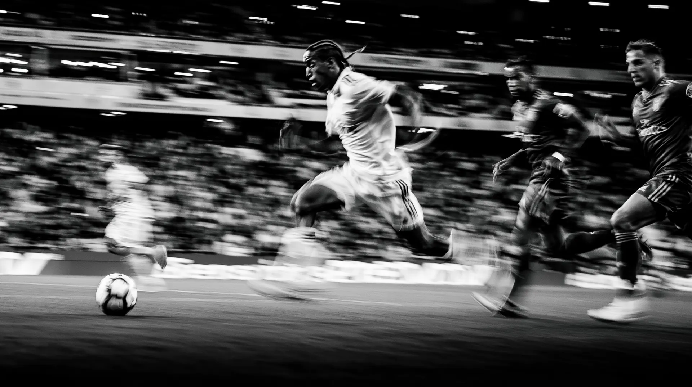
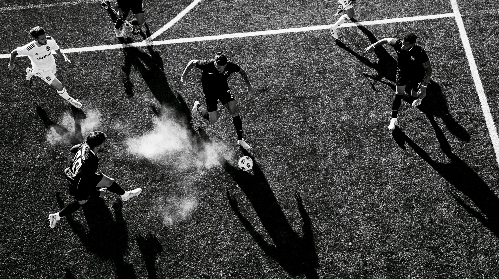
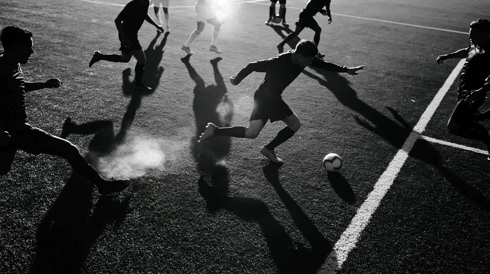

<!doctype html>
<html lang="en">
<head>
<meta charset="utf-8" />
<meta name="viewport" content="width=device-width,initial-scale=1" />
<meta name="theme-color" content="#000000" />
<title>WC26 — World Cup 2026 · Interactive Hub</title>
<meta name="description" content="WC26.tech — an editorial-first World Cup 2026 tactical companion. 48 nations · 104 matches · 16 cities · live predictions, tactical board, squad analytics." />
<!-- favicon -->
<link rel="icon" type="image/svg+xml" href="/favicon.svg" />
<link rel="icon" type="image/png" sizes="32x32" href="/favicon.png" />
<link rel="icon" type="image/png" sizes="16x16" href="/favicon-16.png" />
<link rel="apple-touch-icon" sizes="180x180" href="/apple-touch-icon.png" />
<!-- Open Graph / Facebook -->
<meta property="og:type" content="website" />
<meta property="og:url" content="https://wc26.tech/" />
<meta property="og:site_name" content="WC26" />
<meta property="og:title" content="WC26 — World Cup 2026 · Interactive Hub" />
<meta property="og:description" content="An editorial-first World Cup 2026 tactical companion. 48 nations · 104 matches · 16 cities. Schedule, Predict, Teams, Analysis Board, News." />
<meta property="og:image" content="https://wc26.tech/og-image.png" />
<meta property="og:image:width" content="1200" />
<meta property="og:image:height" content="630" />
<meta property="og:image:alt" content="WC26 — World Cup 2026 Interactive Hub" />
<!-- Twitter -->
<meta name="twitter:card" content="summary_large_image" />
<meta name="twitter:url" content="https://wc26.tech/" />
<meta name="twitter:title" content="WC26 — World Cup 2026 · Interactive Hub" />
<meta name="twitter:description" content="Editorial-first World Cup 2026 hub. 48 nations · 104 matches. Schedule, Predict, Teams, Analysis Board, News." />
<meta name="twitter:image" content="https://wc26.tech/og-image.png" />
<!-- Canonical -->
<link rel="canonical" href="https://wc26.tech/" />
<!-- Vercel Analytics & Speed Insights -->
<script defer src="/_vercel/insights/script.js"></script>
<script defer src="/_vercel/speed-insights/script.js"></script>
<link rel="preconnect" href="https://fonts.googleapis.com">
<link rel="preconnect" href="https://fonts.gstatic.com" crossorigin>
<link href="https://fonts.googleapis.com/css2?family=Archivo+Black&family=Archivo:wght@400;500;600;700;800;900&family=Anton&family=Bebas+Neue&family=Krona+One&family=Inter:wght@400;500;600;700;800;900&family=JetBrains+Mono:wght@400;600;700&display=swap" rel="stylesheet">
<!-- flag-icons (rectangular 4:3 / 1:1 flat 2D country flags) -->
<link rel="stylesheet" href="https://cdn.jsdelivr.net/gh/lipis/flag-icons@7.2.3/css/flag-icons.min.css">
<script src="https://cdn.tailwindcss.com"></script>
<script src="https://unpkg.com/react@18/umd/react.production.min.js" crossorigin></script>
<script src="https://unpkg.com/react-dom@18/umd/react-dom.production.min.js" crossorigin></script>
<script src="https://unpkg.com/@babel/standalone/babel.min.js"></script>
<script src="https://cdn.jsdelivr.net/npm/marked@13.0.0/marked.min.js"></script>
<script src="https://cdnjs.cloudflare.com/ajax/libs/html2canvas/1.4.1/html2canvas.min.js"></script>
<style>
 :root {
 /* WC26 v2 — STRICT 3-COLOR: WHITE + BLACK + LIME LEMON */
 --bg-0: #FFFFFF; /* WHITE — base */
 --bg-1: #FFFFFF; /* card surface */
 --bg-2: #FAFAFA; /* subtle off-white for hover/zebra */
 --bg-3: #F0F0F0; /* even subtler */
 --line: #000000; /* INK lines */
 --line-strong: #000000;
 --text-0: #000000; /* INK — pure black */
 --text-1: #000000;
 --text-2: #666666; /* neutral gray — captions only */
 /* PRIMARY accent — LIME LEMON (the v2 brand color) */
 --accent: #C5FF3D;
 --accent-soft: #E0FF8C;
 --accent-deep: #95D000;
 /* SPACING SCALE — v2.5 unified */
 --sp-gutter: 28px;            /* page horizontal padding (desktop & tablet) */
 --sp-gutter-sm: 18px;         /* page horizontal padding (mobile) */
 --sp-nav-clearance: 96px;     /* hero padding-top (clears fixed header + breathing) */
 --sp-nav-clearance-sm: 64px;
 --sp-hero-min: 76vh;          /* unified hero min-height (desktop) */
 --sp-hero-min-sm: 60vh;       /* hero min-height (mobile) */
 --sp-section-top: 56px;       /* body section top padding */
 --sp-section-bottom: 96px;    /* body / page bottom padding */
 --sp-section-divider: 32px;   /* filter / divider strip vertical padding */
 --sp-section-top-sm: 32px;
 --sp-section-bottom-sm: 64px;
 /* CONTENT MAX-WIDTHS */
 --w-content: 1400px;
 --w-content-wide: 1600px;
 --w-content-narrow: 1100px;
 --w-prose: 760px;
 --w-prose-hero: 920px;
 --accent-ink: #000000; /* text on lime */
 /* Secondary accents collapsed to INK or LIME */
 --accent-2: #000000;
 --accent-3: #C5FF3D;
 --accent-4: #C5FF3D;
 --accent-5: #000000;
 /* HOST country accents — collapse to INK / LIME */
 --host-red: #000000;
 --host-blue: #000000;
 --host-green: #C5FF3D;
 --pitch: #000000;
 --pitch-line: rgba(197,255,61,0.45);
 /* v2 aliases — same values, used by globalized mast/burger/menu/Home sections */
 --hv-paper: #FFFFFF;
 --hv-ink:   #000000;
 --hv-lime:  #C5FF3D;
 }
 * { -webkit-font-smoothing: antialiased; }
 html, body, #root { background: var(--bg-0); color: var(--text-0); font-family: 'Inter', system-ui, sans-serif; }

 /* Typography tiers — v2 MATCHDAY */
 .font-display { font-family: 'Archivo Black', 'Inter', sans-serif; letter-spacing: -0.02em; font-weight: 900; }
 .font-condensed { font-family: 'Anton', 'Bebas Neue', 'Inter', sans-serif; letter-spacing: 0.01em; }
 .font-tall { font-family: 'Anton', sans-serif; letter-spacing: 0; }
 .font-mono { font-family: 'JetBrains Mono', monospace; }
 .font-editorial { font-family: 'Archivo', 'Inter', sans-serif; font-weight: 900; letter-spacing: -0.04em; }

 /* Massive editorial display */
 .editorial-mega {
 font-family: 'Archivo Black', 'Archivo', sans-serif;
 font-weight: 900;
 line-height: 0.82;
 letter-spacing: -0.045em;
 }
 /* v2 HUGE Anton display for hero overlays */
 .matchday-huge {
 font-family: 'Anton', 'Archivo Black', sans-serif;
 font-weight: 400;
 line-height: 0.86;
 letter-spacing: -0.01em;
 text-transform: uppercase;
 }
 /* ACID text highlight */
 .acid-text { color: var(--accent); }
 .acid-bg { background: var(--accent); color: var(--accent-ink); }
 .ink-bg { background: var(--text-0); color: var(--bg-0); }

 .glass { background: var(--bg-1); border: 1px solid var(--text-0); }
 .card { background: var(--bg-1); border: 1px solid var(--line); transition: all 0.22s cubic-bezier(.2,.8,.2,1); }
 .card:hover { border-color: var(--accent); }
 .chip { display: inline-flex; align-items: center; gap: 6px; padding: 4px 10px; border-radius: 0; font-size: 10px; font-weight: 800; letter-spacing: 0.08em; text-transform: uppercase; }
 .stat-bar { height: 4px; background: var(--bg-3); border-radius: 0; overflow: hidden; }
 .stat-bar > div { height: 100%; background: var(--accent); transition: width 0.6s cubic-bezier(.2,.8,.2,1); }
 .scroll-hide::-webkit-scrollbar { display: none; }
 .scroll-hide { scrollbar-width: none; }
 .grid-bg {
 background-image:
 linear-gradient(rgba(10,9,7,0.06) 1px, transparent 1px),
 linear-gradient(90deg, rgba(10,9,7,0.06) 1px, transparent 1px);
 background-size: 32px 32px;
 }
 /* Editorial striped pattern (for accents) */
 .stripe-bg {
 background-image: repeating-linear-gradient(45deg, var(--accent) 0px, var(--accent) 2px, transparent 2px, transparent 8px);
 }
 .num-tabular { font-variant-numeric: tabular-nums; }
 .pitch-bg { background: radial-gradient(ellipse at center, #126c34 0%, #0a4a23 70%, #062e15 100%); }
 @keyframes pulse-ring {
 0% { box-shadow: 0 0 0 0 rgba(200,255,61,0.55); }
 100% { box-shadow: 0 0 0 14px rgba(200,255,61,0); }
 }
 .pulse-dot { animation: pulse-ring 2s infinite; }
 @keyframes fadeUp { from { opacity: 0; transform: translateY(8px); } to { opacity: 1; transform: none; } }
 .fade-up { animation: fadeUp 0.4s cubic-bezier(.2,.8,.2,1) both; }

 /* ── FUN BUT FUNCTIONAL: Maquilts-inspired motion ── */
 @keyframes marquee {
 from { transform: translateX(0); }
 to { transform: translateX(-50%); }
 }
 .marquee-track { display: inline-flex; will-change: transform; animation: marquee 32s linear infinite; }
 .marquee-track:hover { animation-play-state: paused; }
 @keyframes rotateSlow {
 from { transform: rotate(0deg); }
 to { transform: rotate(360deg); }
 }
 .rotate-slow { animation: rotateSlow 18s linear infinite; }
 @keyframes float {
 0%,100% { transform: translateY(0); }
 50% { transform: translateY(-6px); }
 }
 .float-bob { animation: float 3.5s ease-in-out infinite; }
 @keyframes wiggle {
 0%,100% { transform: rotate(-2.5deg); }
 50% { transform: rotate(2.5deg); }
 }
 .wiggle { animation: wiggle 4s ease-in-out infinite; }
 @keyframes scrollFadeIn {
 from { opacity: 0; transform: translateY(20px); }
 to { opacity: 1; transform: translateY(0); }
 }
 .scroll-in { animation: scrollFadeIn 0.7s cubic-bezier(.2,.8,.2,1) both; }
 .stagger-1 { animation-delay: 0.05s; }
 .stagger-2 { animation-delay: 0.1s; }
 .stagger-3 { animation-delay: 0.15s; }
 .stagger-4 { animation-delay: 0.2s; }
 .stagger-5 { animation-delay: 0.25s; }
 .tilt-hover { transition: background 0.2s; }
 .tilt-hover:hover { background: var(--bg-2); }

 .text-gradient { color: var(--text-0); }
 .text-orange { color: var(--accent); }
 .bg-orange { background: var(--accent); }
 .ring-accent { box-shadow: 0 0 0 1px var(--accent); }
 button { font-family: inherit; }
 .nav-link { position: relative; padding: 6px 0; color: var(--text-1); font-weight: 800; font-size: 13px; letter-spacing: 0.08em; text-transform: uppercase; transition: color 0.15s; }
 .nav-link:hover { color: var(--accent); }
 .nav-link.active { color: var(--accent); }
 .nav-link.active::after { content: ''; position: absolute; left: 0; right: 0; bottom: -4px; height: 3px; background: var(--accent); }
 .table-row:hover { background: var(--bg-2); }

 /* Editorial label tag */
 .ed-tag { display: inline-flex; align-items: center; padding: 4px 10px; background: var(--accent); color: var(--accent-ink); font-family: 'JetBrains Mono', monospace; font-size: 11px; font-weight: 700; letter-spacing: 0.1em; text-transform: uppercase; }
 .ed-tag-blue { background: var(--accent-2); color: #fff; }
 .ed-tag-green { background: var(--host-green); color: #fff; }
 .ed-tag-red { background: var(--accent); color: var(--text-0); }
 .ed-tag-mustard { background: var(--accent-3); color: var(--text-0); }
 .ed-tag-turquoise { background: var(--accent-4); color: #fff; }
 .ed-tag-pink { background: var(--accent-5); color: #fff; }
 .ed-tag-outline { display: inline-flex; align-items: center; padding: 4px 10px; border: 1px solid var(--text-0); color: var(--text-0); font-family: 'JetBrains Mono', monospace; font-size: 11px; font-weight: 600; letter-spacing: 0.1em; text-transform: uppercase; }

 /* Editorial hero numeral — for big stats */
 .hero-num { font-family: 'Archivo Black', sans-serif; font-weight: 900; font-size: clamp(60px, 12vw, 180px); line-height: 0.85; letter-spacing: -0.05em; }

 /* Inverted section (dark on light rhythm) */
 .invert-section { background: var(--text-0); color: var(--bg-0); }
 .invert-section .editorial-mega { color: var(--bg-0); }

 /* Sticker / badge frame */
 .sticker {
 border: 2.5px solid var(--text-0);
 background: var(--bg-0);
 border-radius: 999px;
 box-shadow: 4px 4px 0 var(--text-0);
 }

 /* ── v2 MATCHDAY image utilities ── */
 .matchday-img { display: block; width: 100%; height: 100%; object-fit: cover; }
 .matchday-frame { position: relative; overflow: hidden; background: var(--text-0); }
 .matchday-frame::after {
   content: ''; position: absolute; inset: 0; pointer-events: none;
   background: linear-gradient(180deg, rgba(10,9,7,0) 35%, rgba(10,9,7,0.55) 100%);
 }
 .matchday-frame.no-overlay::after { display: none; }
 .matchday-overlay { position: absolute; inset: 0; display: flex; pointer-events: none; }
 .matchday-overlay > * { pointer-events: auto; }
 .img-acid-frame { box-shadow: 8px 8px 0 var(--accent); }
 .img-ink-frame  { box-shadow: 8px 8px 0 var(--text-0); }
 .img-stack { position: relative; }
 .img-stack > img { display: block; }

 /* Parallax-ready transforms (controlled by JS IntersectionObserver) */
 .parallax-y { will-change: transform; transition: transform 0.8s cubic-bezier(.2,.8,.2,1); }
 .slide-in-left { opacity: 0; transform: translateX(-40px); transition: opacity 0.7s, transform 0.7s cubic-bezier(.2,.8,.2,1); }
 .slide-in-right { opacity: 0; transform: translateX(40px); transition: opacity 0.7s, transform 0.7s cubic-bezier(.2,.8,.2,1); }
 .slide-in-up { opacity: 0; transform: translateY(40px); transition: opacity 0.7s, transform 0.7s cubic-bezier(.2,.8,.2,1); }
 .reveal { opacity: 1 !important; transform: none !important; }

 /* Scattered display tags (editorial chaos within grid) */
 .scatter-tag { position: absolute; font-family: 'JetBrains Mono', monospace; font-size: 10px; font-weight: 700; letter-spacing: 0.12em; text-transform: uppercase; color: var(--text-0); background: var(--accent); padding: 3px 8px; }

 /* News article body — magazine prose */
 .news-prose { color: var(--text-0); font-size: 17px; line-height: 1.75; }
 .news-prose h2 {
 font-family: 'Archivo Black', sans-serif; font-weight: 900;
 font-size: clamp(28px, 3vw, 36px); line-height: 1.05; letter-spacing: -0.02em;
 margin: 2.2em 0 0.7em; color: var(--text-0);
 }
 .news-prose h3 {
 font-family: 'Archivo Black', sans-serif; font-weight: 900;
 font-size: clamp(20px, 2vw, 24px); line-height: 1.15; letter-spacing: -0.015em;
 margin: 1.8em 0 0.5em; color: var(--text-0);
 }
 .news-prose p { margin: 0.9em 0; }
 .news-prose strong { font-weight: 800; color: var(--text-0); }
 .news-prose em { font-style: italic; color: var(--text-1); }
 .news-prose a { color: var(--text-0); border-bottom: 1px solid var(--text-0); text-decoration: none; background: var(--accent); padding: 0 0.15em; }
 .news-prose a:hover { background: var(--text-0); color: var(--bg-0); }
 .news-prose ul, .news-prose ol { margin: 1em 0; padding-left: 1.4em; }
 .news-prose li { margin: 0.4em 0; }
 .news-prose ul li { list-style: none; position: relative; }
 .news-prose ul li::before {
 content: '▸'; color: var(--text-0); position: absolute; left: -1.2em;
 font-weight: bold;
 }
 .news-prose ol { list-style: decimal; }
 .news-prose blockquote {
 border-left: 4px solid var(--text-0); padding: 0.5em 0 0.5em 1.2em;
 margin: 1.5em 0; font-style: italic; color: var(--text-1);
 background: rgba(200,255,61,0.12);
 }
 .news-prose code {
 background: var(--bg-2); padding: 0.15em 0.4em; border-radius: 3px;
 font-family: 'JetBrains Mono', monospace; font-size: 0.9em;
 }
 .news-prose hr { border: none; border-top: 2px solid var(--text-0); margin: 2em 0; }
 .news-prose img { max-width: 100%; height: auto; margin: 1.5em 0; border: 2px solid var(--text-0); }

 /* ═══════════════════════════════════════════════════════════════
    HOME v2 — 3-color (WHITE/BLACK/LIME) + Krona One
    Scoped under .home-v2 to avoid affecting other pages.
 ═══════════════════════════════════════════════════════════════ */
 .home-v2 { --hv-paper: #FFFFFF; --hv-ink: #000000; --hv-lime: #C5FF3D; background: var(--hv-paper); color: var(--hv-ink); }
 .home-v2 .krona { font-family: 'Krona One', sans-serif; font-weight: 400; line-height: 0.88; letter-spacing: -0.055em; text-transform: uppercase; }
 .home-v2 .hv-mono { font-family: 'JetBrains Mono', monospace; font-size: 11px; font-weight: 600; letter-spacing: 0.14em; text-transform: uppercase; }
 .home-v2 .hv-mono-sm { font-family: 'JetBrains Mono', monospace; font-size: 10px; font-weight: 400; letter-spacing: 0.18em; text-transform: uppercase; }

 .home-v2 .hv-reveal-up { opacity: 0; transform: translateY(40px); transition: opacity .9s cubic-bezier(.2,.8,.2,1), transform .9s cubic-bezier(.2,.8,.2,1); }
 .home-v2 .hv-reveal-left { opacity: 0; transform: translateX(-40px); transition: opacity .9s cubic-bezier(.2,.8,.2,1), transform .9s cubic-bezier(.2,.8,.2,1); }
 .home-v2 .hv-reveal-right { opacity: 0; transform: translateX(40px); transition: opacity .9s cubic-bezier(.2,.8,.2,1), transform .9s cubic-bezier(.2,.8,.2,1); }
 .home-v2 .hv-reveal-scale { opacity: 0; transform: scale(0.96); transition: opacity .9s cubic-bezier(.2,.8,.2,1), transform .9s cubic-bezier(.2,.8,.2,1); }
 .home-v2 .hv-is-in { opacity: 1 !important; transform: none !important; }
 .home-v2 .hv-stagger-1 { transition-delay: .08s; }
 .home-v2 .hv-stagger-2 { transition-delay: .16s; }
 .home-v2 .hv-stagger-3 { transition-delay: .24s; }
 .home-v2 .hv-stagger-4 { transition-delay: .32s; }

 @keyframes hv-scrollX { from { transform: translateX(0); } to { transform: translateX(-50%); } }
 .home-v2 .hv-marquee { display: flex; white-space: nowrap; will-change: transform; animation: hv-scrollX 28s linear infinite; }
 .home-v2 .hv-marquee:hover { animation-play-state: paused; }

 .home-v2 .hv-hero { min-height: 100vh; background: var(--hv-ink); color: var(--hv-paper); position: relative; overflow: hidden; display: grid; grid-template-rows: 1fr auto; }
 .home-v2 .hv-hero-img { position: absolute; inset: 0; }
 .home-v2 .hv-hero-img img { width: 100%; height: 100%; object-fit: cover; opacity: 0.78; filter: contrast(1.05) brightness(0.85); }
 .home-v2 .hv-hero-grid { position: relative; z-index: 2; padding: var(--sp-nav-clearance) var(--sp-gutter) 28px; display: grid; grid-template-columns: 1fr 1fr; gap: 24px; align-items: end; }
 .home-v2 .hv-hero-title { font-size: clamp(110px, 22vw, 320px); color: var(--hv-lime); position: relative; z-index: 3; pointer-events: none; }
 /* Hero overlay text — desktop absolute positions, mobile flow */
 .home-v2 .hv-hero-tag-tl { position: absolute; top: 110px; left: 28px; z-index: 4; }
 .home-v2 .hv-hero-tag-tr { position: absolute; top: 110px; right: 28px; z-index: 4; text-align: right; }
 .home-v2 .hv-hero-leap { position: absolute; bottom: 220px; left: 28px; max-width: 280px; z-index: 4; color: var(--hv-paper); }
 .home-v2 .hv-hero-kickoff { position: absolute; bottom: 80px; left: 28px; z-index: 4; }

 .home-v2 .hv-kolonial { background: var(--hv-ink); color: var(--hv-paper); padding: 0; overflow: hidden; position: relative; min-height: 100vh; display: grid; place-items: center; }
 .home-v2 .hv-kolonial-img { position: absolute; inset: 0; }
 .home-v2 .hv-kolonial-img img { width: 100%; height: 100%; object-fit: cover; opacity: 0.86; }
 .home-v2 .hv-kolonial-stack { position: relative; z-index: 3; color: var(--hv-lime); font-size: clamp(120px, 22vw, 300px); line-height: 0.86; text-align: center; mix-blend-mode: difference; }

 .home-v2 .hv-split { display: grid; grid-template-columns: 1fr 1fr; min-height: 100vh; }
 .home-v2 .hv-split-photo { background: var(--hv-ink); position: relative; overflow: hidden; }
 .home-v2 .hv-split-photo img { width: 100%; height: 100%; object-fit: cover; }
 .home-v2 .hv-split-lime { background: var(--hv-lime); color: var(--hv-ink); padding: 48px 56px; position: relative; display: grid; align-content: space-between; }
 .home-v2 .hv-split-lime-title { font-size: clamp(80px, 11vw, 180px); line-height: 0.88; }

 .home-v2 .hv-fixtures { background: var(--hv-paper); padding: var(--sp-section-bottom) var(--sp-gutter); }
 .home-v2 .hv-fixtures-h { font-size: clamp(80px, 12vw, 180px); line-height: 0.88; }
 .home-v2 .hv-fix-row { display: grid; grid-template-columns: 110px 1fr auto; align-items: center; gap: 32px; border-top: 2px solid var(--hv-ink); padding: 28px 8px; transition: background .2s; cursor: pointer; }
 .home-v2 .hv-fix-row:last-child { border-bottom: 2px solid var(--hv-ink); }
 .home-v2 .hv-fix-num { font-size: clamp(60px, 7vw, 96px); line-height: 1; }
 .home-v2 .hv-fix-pair { font-size: clamp(34px, 5vw, 56px); line-height: 1; }
 .home-v2 .hv-fix-pair span { display: block; }
 .home-v2 .hv-fix-meta { text-align: right; font-family: 'Krona One', sans-serif; text-transform: uppercase; line-height: 1.05; letter-spacing: -0.03em; }
 .home-v2 .hv-fix-meta .hv-fix-date { font-size: clamp(20px, 2.6vw, 30px); }
 .home-v2 .hv-fix-meta .hv-fix-venue { font-size: clamp(13px, 1.4vw, 17px); margin-top: 6px; opacity: 0.7; }
 .home-v2 .hv-fix-row:hover { background: var(--hv-lime); }

 .home-v2 .hv-predict-cta { display: inline-flex; align-items: center; gap: 12px; padding: 18px 28px; background: var(--hv-ink); color: var(--hv-paper); font-family: 'JetBrains Mono', monospace; font-size: 14px; font-weight: 700; letter-spacing: 0.16em; text-transform: uppercase; border: 0; cursor: pointer; }
 .home-v2 .hv-predict-cta:hover { background: var(--hv-paper); color: var(--hv-ink); outline: 2px solid var(--hv-ink); }

 .home-v2 .hv-briefing { background: var(--hv-paper); padding: var(--sp-section-bottom) var(--sp-gutter); display: grid; grid-template-columns: 1fr 1fr; gap: 48px; align-items: start; }
 .home-v2 .hv-briefing-img { aspect-ratio: 4/5; background: var(--hv-ink); overflow: hidden; }
 .home-v2 .hv-briefing-img img { width: 100%; height: 100%; object-fit: cover; }
 .home-v2 .hv-briefing-h { font-size: clamp(60px, 9vw, 140px); line-height: 0.88; margin: 12px 0 24px; }

 .home-v2 .hv-nav-sections { background: var(--hv-ink); color: var(--hv-paper); padding: var(--sp-section-top) var(--sp-gutter) var(--sp-section-bottom); }
 .home-v2 .hv-nav-sections .hv-row { display: grid; grid-template-columns: 110px 1fr auto; gap: 32px; align-items: center; padding: 38px 8px; border-top: 1px solid rgba(255,255,255,0.18); cursor: pointer; transition: background .2s, color .2s; }
 .home-v2 .hv-nav-sections .hv-row:last-child { border-bottom: 1px solid rgba(255,255,255,0.18); }
 .home-v2 .hv-nav-sections .hv-row:hover { background: var(--hv-lime); color: var(--hv-ink); }
 .home-v2 .hv-nav-sections .hv-row:hover .hv-arrow { transform: translateX(8px); }
 .home-v2 .hv-nav-sections .hv-num { font-size: 64px; line-height: 1; }
 .home-v2 .hv-nav-sections .hv-label { font-size: clamp(38px, 6vw, 72px); line-height: 1; }
 .home-v2 .hv-nav-sections .hv-arrow { font-size: 32px; transition: transform .3s; }

 .home-v2 .hv-band { background: var(--hv-lime); color: var(--hv-ink); padding: 22px 0; overflow: hidden; border-top: 2px solid var(--hv-ink); border-bottom: 2px solid var(--hv-ink); }
 .home-v2 .hv-band-item { font-family: 'Krona One', sans-serif; font-size: 42px; padding: 0 32px; display: inline-flex; align-items: center; gap: 32px; text-transform: uppercase; letter-spacing: -0.04em; }
 .home-v2 .hv-band-dot { display: inline-block; width: 12px; height: 12px; background: var(--hv-ink); border-radius: 50%; }

 .home-v2 .hv-stamp { display: inline-flex; align-items: center; justify-content: center; width: 110px; height: 110px; border-radius: 50%; border: 2px solid var(--hv-ink); font-family: 'JetBrains Mono', monospace; font-size: 10px; font-weight: 700; letter-spacing: 0.16em; text-transform: uppercase; text-align: center; line-height: 1.2; background: transparent; color: var(--hv-ink); }

 /* MAST (sticky top, mix-blend-mode adapts to bg) */
 .hv-mast { position: fixed; top: 0; left: 0; right: 0; z-index: 50; display: flex; justify-content: space-between; align-items: center; padding: 18px 28px; color: #FFFFFF; pointer-events: none; background: transparent; transition: background .25s cubic-bezier(.2,.8,.2,1); }
 .hv-mast > * { pointer-events: auto; }
 .hv-mast.is-scrolled { background: var(--text-0); }
 .hv-mast.is-open { background: var(--text-0); }
 /* Logo — WC white / 26 LIME */
 .hv-logo { font-family: 'Krona One', sans-serif; font-size: 26px; letter-spacing: -0.045em; line-height: 1; display: inline-flex; }
 .hv-logo-wc { color: #FFFFFF; }
 .hv-logo-26 { color: var(--accent); }
 .hv-burger { display: flex; flex-direction: column; justify-content: center; gap: 6px; width: 52px; height: 52px; padding: 0; background: transparent; color: inherit; border: none; cursor: pointer; align-items: center; }
 .hv-burger span { display: block; width: 28px; height: 2.5px; background: currentColor; transition: transform .28s cubic-bezier(.7,0,.2,1), opacity .18s; transform-origin: center; }
 .hv-burger.is-open span:nth-child(1) { transform: translateY(9px) rotate(45deg); }
 .hv-burger.is-open span:nth-child(2) { opacity: 0; }
 .hv-burger.is-open span:nth-child(3) { transform: translateY(-9px) rotate(-45deg); }

 /* MENU OVERLAY */
 .hv-menu-overlay { position: fixed; inset: 0; z-index: 49; background: var(--hv-ink); color: var(--hv-paper); transform: translateY(-100%); visibility: hidden; pointer-events: none; transition: transform .5s cubic-bezier(.7,0,.2,1), visibility 0s linear .5s; display: grid; grid-template-rows: auto 1fr auto; padding: 28px; }
 .hv-menu-overlay.is-open { transform: translateY(0); visibility: visible; pointer-events: auto; transition: transform .5s cubic-bezier(.7,0,.2,1), visibility 0s linear 0s; }
 .hv-menu-row { display: grid; grid-template-columns: 1fr auto; gap: 24px; align-items: center; padding: 28px 0; border-top: 1px solid rgba(255,255,255,0.18); cursor: pointer; color: var(--hv-paper); transition: background .2s, color .2s, padding-left .2s; }
 .hv-menu-row:last-child { border-bottom: 1px solid rgba(255,255,255,0.18); }
 .hv-menu-row:hover { background: var(--hv-lime); color: var(--hv-ink); padding-left: 24px; }
 .hv-menu-num { font-size: 48px; line-height: 1; }
 .hv-menu-label { font-size: clamp(38px, 6vw, 64px); line-height: 1; }

 @media (max-width: 768px) {
   .hv-mast { padding: 14px var(--sp-gutter-sm); }
   .hv-mast-meta { display: none !important; }
   .hv-logo { font-size: 22px; }
   .hv-burger { width: 48px; height: 48px; }
   .hv-burger span { width: 24px; }
   .hv-menu-overlay { padding: 14px 18px; }
   .hv-menu-row { padding: 12px 0; gap: 12px; grid-template-columns: 1fr auto; }
   .hv-menu-label { font-size: clamp(22px, 7vw, 36px); }
   .hv-menu-num { font-size: 36px; }
   .hv-menu-label { font-size: clamp(28px, 9vw, 56px); }
 }

 /* RESPONSIVE — Home v2 */
 @media (max-width: 1024px) {
   .home-v2 .hv-split-lime { padding: 40px 36px; }
   .home-v2 .hv-split-lime-title { font-size: clamp(60px, 9vw, 130px); }
   .home-v2 .hv-fixtures, .home-v2 .hv-briefing, .home-v2 .hv-nav-sections { padding-left: var(--sp-gutter); padding-right: var(--sp-gutter); }
 }
 @media (max-width: 768px) {
   .home-v2 .hv-hero { display: block; }
   .home-v2 .hv-hero-grid { grid-template-columns: 1fr; padding: var(--sp-nav-clearance-sm) var(--sp-gutter-sm) 28px; }
   .home-v2 .hv-hero-title { font-size: clamp(72px, 18vw, 140px); }
   .home-v2 .hv-kolonial-stack { font-size: clamp(96px, 24vw, 180px); }
   .home-v2 .hv-split { grid-template-columns: 1fr; min-height: auto; }
   .home-v2 .hv-split-photo { min-height: 56vh; }
   .home-v2 .hv-split-lime { padding: 32px 20px; }
   .home-v2 .hv-split-lime-title { font-size: clamp(56px, 16vw, 96px); }
   .home-v2 .hv-fixtures { padding: var(--sp-section-bottom-sm) var(--sp-gutter-sm); }
   .home-v2 .hv-fixtures-h { font-size: clamp(56px, 14vw, 100px); }
   .home-v2 .hv-fix-row { grid-template-columns: 52px 1fr; gap: 14px; padding: 20px 4px; }
   .home-v2 .hv-fix-row .hv-fix-meta { grid-column: 1 / -1; text-align: left; padding-top: 10px; border-top: 1px dashed rgba(0,0,0,0.18); margin-top: 4px; }
   .home-v2 .hv-fix-num { font-size: 40px; }
   .home-v2 .hv-fix-pair { font-size: clamp(22px, 6.5vw, 36px); }
   .home-v2 .hv-fix-meta .hv-fix-date { font-size: 17px; }
   .home-v2 .hv-fix-meta .hv-fix-venue { font-size: 12px; }
   .home-v2 .hv-briefing { padding: var(--sp-section-bottom-sm) var(--sp-gutter-sm); grid-template-columns: 1fr; gap: 28px; }
   .home-v2 .hv-briefing-h { font-size: clamp(48px, 13vw, 84px); }
   .home-v2 .hv-nav-sections { padding: var(--sp-section-top-sm) var(--sp-gutter-sm) var(--sp-section-bottom-sm); }
   .home-v2 .hv-nav-sections .hv-row { grid-template-columns: 52px 1fr auto; gap: 14px; padding: 26px 4px; }
   .home-v2 .hv-nav-sections .hv-num { font-size: 42px; }
   .home-v2 .hv-nav-sections .hv-label { font-size: clamp(28px, 8vw, 52px); }
   .home-v2 .hv-band-item { font-size: 28px; padding: 0 20px; gap: 20px; }
 }
 /* Mobile hero — clean stack, no overlap */
 @media (max-width: 768px) {
   .home-v2 .hv-hero { position: relative; min-height: 100vh; }
   .home-v2 .hv-hero-tag-tl { top: 76px; left: var(--sp-gutter-sm); right: auto; font-size: 10px; }
   .home-v2 .hv-hero-tag-tr { display: none; }
   .home-v2 .hv-hero-leap { position: absolute; bottom: auto; top: 130px; left: var(--sp-gutter-sm); right: var(--sp-gutter-sm); max-width: none; font-size: 11px; }
   .home-v2 .hv-hero-kickoff { bottom: 24px; left: var(--sp-gutter-sm); right: var(--sp-gutter-sm); }
   .home-v2 .hv-hero-grid { padding-top: 50vh; padding-bottom: 96px; }
   .home-v2 .hv-hero-grid > div:nth-child(2) { text-align: left !important; }
   /* Mobile: hide LIME marquee bands that visually compete with navbar */
   .home-v2 .hv-band { display: none; }
   /* Mobile: hide redundant section 7 chapter list (already in hamburger menu) */
   .home-v2 .hv-nav-sections { display: none; }
 }
 @media (max-width: 480px) {
   .home-v2 .hv-hero-title { font-size: clamp(60px, 17vw, 100px); }
   .home-v2 .hv-kolonial-stack { font-size: clamp(72px, 26vw, 120px); }
   .home-v2 .hv-split-lime-title { font-size: clamp(44px, 15vw, 72px); }
   .home-v2 .hv-fixtures-h, .home-v2 .hv-briefing-h { font-size: clamp(40px, 13vw, 72px); }
   .home-v2 .hv-fix-num { font-size: 34px; }
   .home-v2 .hv-fix-pair { font-size: 20px; }
   .home-v2 .hv-band-item { font-size: 22px; padding: 0 16px; }
   .home-v2 .hv-stamp { width: 88px; height: 88px; font-size: 9px; }
 }
 @media (prefers-reduced-motion: reduce) {
   .home-v2 .hv-reveal-up, .home-v2 .hv-reveal-left, .home-v2 .hv-reveal-right, .home-v2 .hv-reveal-scale { opacity: 1 !important; transform: none !important; transition: none !important; }
   .home-v2 .hv-marquee { animation: none !important; }
 }

 /* ═══════════════════════════════════════════════════════════════
    NEWS v2 — editorial list + article (3-color, Krona + Inter)
 ═══════════════════════════════════════════════════════════════ */
 /* NEWS v2.5 — INK base */
 .news-v2 { background: var(--text-0); color: var(--bg-0); }
 /* HERO with photo backdrop */
 .news-v2 .news-hero { position: relative; min-height: var(--sp-hero-min); overflow: hidden; padding: 0; border-bottom: 2px solid var(--text-0); }
 .news-v2 .news-hero-img { position: absolute; inset: 0; z-index: 0; }
 .news-v2 .news-hero-img img { width: 100%; height: 100%; object-fit: cover; opacity: 0.55; filter: contrast(1.15) brightness(0.65) saturate(0.85); }
 .news-v2 .news-hero-img::after { content: ''; position: absolute; inset: 0; background: linear-gradient(180deg, rgba(0,0,0,0.3) 0%, rgba(0,0,0,0) 30%, rgba(0,0,0,0.7) 100%); pointer-events: none; }
 .news-v2 .news-hero-inner { position: relative; z-index: 2; padding: var(--sp-nav-clearance) var(--sp-gutter) 28px; display: flex; flex-direction: column; justify-content: space-between; min-height: var(--sp-hero-min); }
 .news-v2 .news-hero-top { display: flex; justify-content: space-between; align-items: start; gap: 24px; flex-wrap: wrap; }
 .news-v2 .news-hero-tag { font-family: 'JetBrains Mono', monospace; font-size: 11px; font-weight: 600; letter-spacing: 0.14em; text-transform: uppercase; color: var(--accent); }
 .news-v2 .news-hero-title { font-family: 'Krona One', sans-serif; font-size: clamp(96px, 18vw, 280px); letter-spacing: -0.06em; line-height: 0.86; text-transform: uppercase; margin: 28px 0 0; color: var(--accent); }
 .news-v2 .news-hero-meta { font-family: 'JetBrains Mono', monospace; font-size: 11px; font-weight: 600; letter-spacing: 0.14em; text-transform: uppercase; text-align: right; color: var(--bg-0); }
 .news-v2 .news-hero-bottom { display: flex; justify-content: space-between; align-items: end; gap: 24px; padding-top: 32px; flex-wrap: wrap; }
 .news-v2 .news-hero-thesis { max-width: 380px; font-family: 'JetBrains Mono', monospace; font-size: 11px; line-height: 1.6; letter-spacing: 0.08em; text-transform: uppercase; color: var(--bg-0); opacity: 0.9; }
 .news-v2 .news-hero-stamp { font-family: 'JetBrains Mono', monospace; font-size: 10px; font-weight: 700; letter-spacing: 0.18em; text-transform: uppercase; color: var(--accent); border: 2px solid var(--accent); padding: 6px 12px; }

 /* MARQUEE */
 @keyframes news-scrollX { from { transform: translateX(0); } to { transform: translateX(-50%); } }
 .news-v2 .news-band { background: var(--accent); color: var(--text-0); padding: 22px 0; overflow: hidden; border-top: 2px solid var(--text-0); border-bottom: 2px solid var(--text-0); }
 .news-v2 .news-band-track { display: flex; white-space: nowrap; will-change: transform; animation: news-scrollX 32s linear infinite; }
 .news-v2 .news-band-track:hover { animation-play-state: paused; }
 .news-v2 .news-band-item { font-family: 'Krona One', sans-serif; font-size: clamp(28px, 4vw, 44px); padding: 0 32px; display: inline-flex; align-items: center; gap: 32px; text-transform: uppercase; letter-spacing: -0.04em; }
 .news-v2 .news-band-dot { display: inline-block; width: 12px; height: 12px; background: var(--text-0); border-radius: 50%; }

 /* FILTER */
 .news-v2 .news-filter { padding: var(--sp-section-divider) var(--sp-gutter); display: flex; flex-wrap: wrap; gap: 8px; border-bottom: 1px solid var(--bg-0); }
 .news-v2 .news-filter-btn { font-family: 'JetBrains Mono', monospace; font-size: 11px; font-weight: 700; letter-spacing: 0.14em; text-transform: uppercase; padding: 8px 14px; border: 1.5px solid var(--bg-0); background: var(--text-0); color: var(--bg-0); cursor: pointer; transition: background .2s, color .2s; }
 .news-v2 .news-filter-btn:hover { background: var(--accent); color: var(--text-0); border-color: var(--accent); }
 .news-v2 .news-filter-btn.is-active { background: var(--bg-0); color: var(--text-0); }
 .news-v2 .news-filter-count { opacity: 0.5; margin-left: 6px; }

 /* LIST — INK rows with WHITE rules */
 .news-v2 .news-list { padding: var(--sp-section-top) var(--sp-gutter) var(--sp-section-bottom); }
 .news-v2 .news-row { display: grid; grid-template-columns: 80px 1fr auto; gap: 32px; align-items: start; padding: 36px 12px; border-bottom: 1px solid var(--bg-0); cursor: pointer; background: var(--text-0); color: var(--bg-0); transition: background .2s, color .2s; text-align: left; width: 100%; border-top: none; border-left: none; border-right: none; }
 .news-v2 .news-row-nodate { grid-template-columns: 1fr auto; }
 .news-v2 .news-row:hover { background: var(--accent); color: var(--text-0); }
 .news-v2 .news-row:hover * { color: var(--text-0) !important; }
 .news-v2 .news-row-num { font-family: 'Krona One', sans-serif; font-size: 48px; letter-spacing: -0.055em; line-height: 1; color: var(--accent); }
 .news-v2 .news-row-date { display: flex; flex-direction: column; gap: 6px; align-items: flex-start; }
 .news-v2 .news-row-date-day { font-family: 'Krona One', sans-serif; font-size: 48px; letter-spacing: -0.055em; line-height: 1; color: var(--accent); }
 .news-v2 .news-row-date-mon { font-family: 'JetBrains Mono', monospace; font-size: 11px; font-weight: 700; letter-spacing: 0.18em; text-transform: uppercase; color: var(--bg-0); opacity: 0.7; line-height: 1; }
 .news-v2 .news-row-content { display: flex; flex-direction: column; gap: 12px; min-width: 0; }
 .news-v2 .news-row-meta { display: flex; gap: 12px; font-family: 'JetBrains Mono', monospace; font-size: 11px; font-weight: 600; letter-spacing: 0.14em; text-transform: uppercase; flex-wrap: wrap; align-items: center; color: var(--bg-0); }
 .news-v2 .news-row-cat { padding: 3px 10px; border: 1px solid var(--bg-0); }
 .news-v2 .news-row-title { font-family: 'Krona One', sans-serif; font-size: clamp(28px, 4vw, 56px); letter-spacing: -0.04em; line-height: 0.92; text-transform: uppercase; color: var(--bg-0); }
 .news-v2 .news-row-tldr { font-family: 'Inter', sans-serif; font-size: 16px; line-height: 1.55; max-width: 760px; color: var(--bg-0); opacity: 0.85; margin: 0; }
 .news-v2 .news-row-arrow { font-family: 'Krona One', sans-serif; font-size: 40px; align-self: center; line-height: 1; transition: transform .25s; color: var(--accent); }
 .news-v2 .news-row:hover .news-row-arrow { transform: translateX(10px); }

 .news-v2 .news-empty { padding: 96px 28px; text-align: center; font-family: 'JetBrains Mono', monospace; font-size: 12px; letter-spacing: 0.14em; text-transform: uppercase; color: var(--bg-0); }

 /* Article view — INK base */
 .news-v2 .article-back { display: inline-flex; align-items: center; gap: 8px; padding: 10px 18px; border: 1.5px solid var(--bg-0); background: transparent; color: var(--bg-0); font-family: 'JetBrains Mono', monospace; font-size: 11px; font-weight: 700; letter-spacing: 0.14em; text-transform: uppercase; cursor: pointer; transition: background .2s, color .2s; }
 .news-v2 .article-back:hover { background: var(--accent); color: var(--text-0); border-color: var(--accent); }
 .news-v2 .article-hero { padding: var(--sp-nav-clearance) var(--sp-gutter) var(--sp-section-top); border-bottom: 2px solid var(--bg-0); background: var(--text-0); color: var(--bg-0); }
 .news-v2 .article-hero-inner { max-width: var(--w-prose-hero); margin: 0 auto; }
 .news-v2 .article-tags { display: flex; gap: 12px; margin: 28px 0 28px; font-family: 'JetBrains Mono', monospace; font-size: 11px; font-weight: 600; letter-spacing: 0.14em; text-transform: uppercase; flex-wrap: wrap; align-items: center; color: var(--bg-0); }
 .news-v2 .article-tag { padding: 3px 10px; border: 1px solid var(--bg-0); }
 .news-v2 .article-h1 { font-family: 'Krona One', sans-serif; font-size: clamp(48px, 8vw, 120px); letter-spacing: -0.05em; line-height: 0.9; text-transform: uppercase; margin: 8px 0 24px; color: var(--accent); }
 .news-v2 .article-lead { font-family: 'Inter', sans-serif; font-size: clamp(18px, 1.6vw, 22px); line-height: 1.5; font-weight: 500; max-width: 760px; color: var(--bg-0); }
 .news-v2 .article-body { max-width: var(--w-prose); margin: 0 auto; padding: var(--sp-section-top) var(--sp-gutter); background: var(--text-0); color: var(--bg-0); }
 /* Markdown prose on INK */
 .news-v2 .article-body p, .news-v2 .article-body li { color: var(--bg-0); }
 .news-v2 .article-body h1, .news-v2 .article-body h2, .news-v2 .article-body h3, .news-v2 .article-body h4 { color: var(--bg-0); }
 .news-v2 .article-body a { color: var(--accent); text-decoration: underline; text-decoration-thickness: 1px; text-underline-offset: 3px; }
 .news-v2 .article-body a:hover { color: var(--bg-0); }
 .news-v2 .article-body blockquote { border-left: 3px solid var(--accent); color: var(--bg-0); opacity: 0.9; }
 .news-v2 .article-body code { background: rgba(255,255,255,0.1); color: var(--accent); padding: 2px 6px; border-radius: 2px; }
 .news-v2 .article-body pre { background: rgba(255,255,255,0.06); color: var(--bg-0); }
 .news-v2 .article-body hr { border-color: rgba(255,255,255,0.25); }
 .news-v2 .article-body strong { color: var(--bg-0); }
 .news-v2 .article-body img { opacity: 0.95; }

 /* Related — INK base */
 .news-v2 .related-wrap { padding: var(--sp-section-top) var(--sp-gutter) var(--sp-section-bottom); border-top: 2px solid var(--bg-0); background: var(--text-0); color: var(--bg-0); }
 .news-v2 .related-head { display: flex; align-items: end; justify-content: space-between; margin-bottom: 28px; padding-bottom: 16px; border-bottom: 1px solid var(--bg-0); }
 .news-v2 .related-title { font-family: 'Krona One', sans-serif; font-size: clamp(28px, 5vw, 64px); letter-spacing: -0.05em; line-height: 0.9; text-transform: uppercase; color: var(--accent); }

 /* REVEAL */
 .news-v2 .reveal-up { opacity: 0; transform: translateY(40px); transition: opacity .8s cubic-bezier(.2,.8,.2,1), transform .8s cubic-bezier(.2,.8,.2,1); }
 .news-v2 .reveal-left { opacity: 0; transform: translateX(-40px); transition: opacity .8s cubic-bezier(.2,.8,.2,1), transform .8s cubic-bezier(.2,.8,.2,1); }
 .news-v2 .reveal-right { opacity: 0; transform: translateX(40px); transition: opacity .8s cubic-bezier(.2,.8,.2,1), transform .8s cubic-bezier(.2,.8,.2,1); }
 .news-v2 .is-in { opacity: 1 !important; transform: none !important; }
 .news-v2 .stagger-1 { transition-delay: .08s; }
 .news-v2 .stagger-2 { transition-delay: .16s; }
 @media (prefers-reduced-motion: reduce) {
   .news-v2 .reveal-up, .news-v2 .reveal-left, .news-v2 .reveal-right { opacity: 1 !important; transform: none !important; transition: none !important; }
   .news-v2 .news-band-track { animation: none !important; }
 }

 /* ═══════════════════════════════════════════════════════════════
    SCHEDULE v2.5 ENERGY — INK base · photo hero · marquee · reveal
    INK背景 + WHITE文字 + LIMEアクセント = Nike night campaign vibe
 ═══════════════════════════════════════════════════════════════ */
 .sched-v2 { background: var(--text-0); color: var(--bg-0); }
 .sched-v2 a, .sched-v2 button { color: inherit; }

 /* HERO with full-bleed photo backdrop */
 .sched-v2 .sched-hero { position: relative; min-height: var(--sp-hero-min); background: var(--text-0); color: var(--bg-0); overflow: hidden; padding: 0; border-bottom: 2px solid var(--text-0); }
 .sched-v2 .sched-hero-img { position: absolute; inset: 0; z-index: 0; }
 .sched-v2 .sched-hero-img img { width: 100%; height: 100%; object-fit: cover; opacity: 0.6; filter: contrast(1.15) brightness(0.7) saturate(0.85); }
 .sched-v2 .sched-hero-img::after { content: ''; position: absolute; inset: 0; background: linear-gradient(180deg, rgba(0,0,0,0.25) 0%, rgba(0,0,0,0) 30%, rgba(0,0,0,0.55) 100%); pointer-events: none; }
 .sched-v2 .sched-hero-inner { position: relative; z-index: 2; padding: var(--sp-nav-clearance) var(--sp-gutter) 28px; display: flex; flex-direction: column; justify-content: space-between; min-height: var(--sp-hero-min); }
 .sched-v2 .sched-hero-top { display: flex; justify-content: space-between; align-items: start; gap: 24px; flex-wrap: wrap; }
 .sched-v2 .sched-hero-tag { font-family: 'JetBrains Mono', monospace; font-size: 11px; font-weight: 600; letter-spacing: 0.14em; text-transform: uppercase; color: var(--accent); }
 .sched-v2 .sched-hero-title { font-family: 'Krona One', sans-serif; font-size: clamp(110px, 20vw, 320px); letter-spacing: -0.06em; line-height: 0.86; text-transform: uppercase; margin: 28px 0 0; color: var(--accent); }
 .sched-v2 .sched-hero-meta { font-family: 'JetBrains Mono', monospace; font-size: 11px; font-weight: 600; letter-spacing: 0.14em; text-transform: uppercase; text-align: right; color: var(--bg-0); }
 .sched-v2 .sched-hero-bottom { display: flex; justify-content: space-between; align-items: end; gap: 24px; padding-top: 32px; flex-wrap: wrap; }
 .sched-v2 .sched-hero-thesis { max-width: 380px; font-family: 'JetBrains Mono', monospace; font-size: 11px; line-height: 1.6; letter-spacing: 0.08em; text-transform: uppercase; color: var(--bg-0); opacity: 0.9; }
 .sched-v2 .sched-hero-stamp { font-family: 'JetBrains Mono', monospace; font-size: 10px; font-weight: 700; letter-spacing: 0.18em; text-transform: uppercase; color: var(--accent); border: 2px solid var(--accent); padding: 6px 12px; }

 /* Marquee band */
 .sched-v2 .sched-band { background: var(--accent); color: var(--text-0); padding: 22px 0; overflow: hidden; border-top: 2px solid var(--text-0); border-bottom: 2px solid var(--text-0); }
 @keyframes sched-scrollX { from { transform: translateX(0); } to { transform: translateX(-50%); } }
 .sched-v2 .sched-band-track { display: flex; white-space: nowrap; will-change: transform; animation: sched-scrollX 32s linear infinite; }
 .sched-v2 .sched-band-track:hover { animation-play-state: paused; }
 .sched-v2 .sched-band-item { font-family: 'Krona One', sans-serif; font-size: clamp(28px, 4vw, 44px); padding: 0 32px; display: inline-flex; align-items: center; gap: 32px; text-transform: uppercase; letter-spacing: -0.04em; }
 .sched-v2 .sched-band-dot { display: inline-block; width: 12px; height: 12px; background: var(--text-0); border-radius: 50%; }

 /* Giant stat block — INK bg + LIME numeral + WHITE meta */
 .sched-v2 .sched-giant { padding: var(--sp-section-top) var(--sp-gutter) var(--sp-section-bottom); display: grid; grid-template-columns: auto 1fr; gap: 56px; align-items: end; border-bottom: 1px solid rgba(255,255,255,0.18); background: var(--text-0); color: var(--bg-0); }
 .sched-v2 .sched-giant-num { font-family: 'Krona One', sans-serif; font-size: clamp(160px, 24vw, 380px); letter-spacing: -0.07em; line-height: 0.86; color: var(--accent); }
 .sched-v2 .sched-giant-info { display: flex; flex-direction: column; gap: 14px; padding-bottom: 18px; }
 .sched-v2 .sched-giant-info .lab { font-family: 'JetBrains Mono', monospace; font-size: 12px; font-weight: 700; letter-spacing: 0.18em; text-transform: uppercase; color: var(--accent); }
 .sched-v2 .sched-giant-info .big { font-family: 'Krona One', sans-serif; font-size: clamp(32px, 4vw, 64px); letter-spacing: -0.04em; line-height: 0.95; text-transform: uppercase; color: var(--bg-0); }

 /* reveal */
 .sched-v2 .reveal-up { opacity: 0; transform: translateY(40px); transition: opacity .8s cubic-bezier(.2,.8,.2,1), transform .8s cubic-bezier(.2,.8,.2,1); }
 .sched-v2 .reveal-left { opacity: 0; transform: translateX(-40px); transition: opacity .8s cubic-bezier(.2,.8,.2,1), transform .8s cubic-bezier(.2,.8,.2,1); }
 .sched-v2 .reveal-right { opacity: 0; transform: translateX(40px); transition: opacity .8s cubic-bezier(.2,.8,.2,1), transform .8s cubic-bezier(.2,.8,.2,1); }
 .sched-v2 .is-in { opacity: 1 !important; transform: none !important; }
 .sched-v2 .stagger-1 { transition-delay: .08s; }
 .sched-v2 .stagger-2 { transition-delay: .16s; }
 .sched-v2 .stagger-3 { transition-delay: .24s; }
 .sched-v2 .stagger-4 { transition-delay: .32s; }
 @media (prefers-reduced-motion: reduce) {
   .sched-v2 .reveal-up, .sched-v2 .reveal-left, .sched-v2 .reveal-right { opacity: 1 !important; transform: none !important; transition: none !important; }
   .sched-v2 .sched-band-track { animation: none !important; }
 }
 @media (max-width: 768px) {
   .sched-v2 .sched-hero { min-height: 60vh; }
   .sched-v2 .sched-hero-inner { padding: 64px 18px 18px; min-height: 60vh; }
   .sched-v2 .sched-hero-title { font-size: clamp(72px, 18vw, 140px); }
   .sched-v2 .sched-hero-meta { text-align: left; }
   .sched-v2 .sched-giant { padding: 56px 18px; gap: 24px; grid-template-columns: 1fr; }
   .sched-v2 .sched-giant-num { font-size: clamp(120px, 32vw, 200px); }
   .sched-v2 .sched-band-item { font-size: 22px; padding: 0 18px; gap: 18px; }
 }

 /* Tabs — INK bg + WHITE text + LIME active */
 .sched-v2 .sched-tabs { display: flex; border-bottom: 1px solid rgba(255,255,255,0.18); background: var(--text-0); }
 .sched-v2 .sched-tab { font-family: 'JetBrains Mono', monospace; font-size: 11px; font-weight: 700; letter-spacing: 0.14em; text-transform: uppercase; padding: 18px 28px; background: var(--text-0); color: var(--bg-0); border: none; cursor: pointer; border-right: 1px solid rgba(255,255,255,0.18); position: relative; }
 .sched-v2 .sched-tab.is-active::after { content: ''; position: absolute; left: 0; right: 0; bottom: -1px; height: 3px; background: var(--accent); }
 .sched-v2 .sched-tab:hover { color: var(--accent); }
 .sched-v2 .sched-tab.is-active { background: var(--accent); color: var(--text-0); }

 /* Filter — INK bg + LIME labels + WHITE select */
 .sched-v2 .sched-filter { display: flex; flex-wrap: wrap; gap: 12px; padding: 24px 28px; border-bottom: 1px solid rgba(255,255,255,0.18); align-items: center; background: var(--text-0); }
 .sched-v2 .sched-filter label { font-family: 'JetBrains Mono', monospace; font-size: 10px; font-weight: 600; letter-spacing: 0.18em; text-transform: uppercase; color: var(--accent); }
 .sched-v2 .sched-filter select { font-family: 'JetBrains Mono', monospace; font-size: 12px; font-weight: 600; letter-spacing: 0.06em; text-transform: uppercase; padding: 8px 12px; border: 1.5px solid var(--bg-0); background: var(--text-0); color: var(--bg-0); cursor: pointer; }
 .sched-v2 .sched-filter select:focus { outline: none; background: var(--accent); color: var(--text-0); }
 .sched-v2 .sched-filter-count { margin-left: auto; font-family: 'JetBrains Mono', monospace; font-size: 11px; font-weight: 600; letter-spacing: 0.14em; text-transform: uppercase; color: var(--bg-0); }

 /* Day list — INK bg · WHITE rows · LIME hover */
 .sched-v2 .day-list { padding: var(--sp-section-top) var(--sp-gutter) var(--sp-section-bottom); max-width: var(--w-content-narrow); margin: 0 auto; background: var(--text-0); }
 .sched-v2 .day-row { border-bottom: 1px solid rgba(255,255,255,0.22); padding: 36px 0; }
 .sched-v2 .day-row:first-child { border-top: 1px solid rgba(255,255,255,0.22); }
 .sched-v2 .day-row-head { display: flex; align-items: baseline; gap: 16px; margin-bottom: 24px; padding: 0 8px; }
 .sched-v2 .day-row-date { font-family: 'Krona One', sans-serif; font-size: clamp(36px, 5vw, 56px); letter-spacing: -0.05em; line-height: 1; color: var(--bg-0); }
 .sched-v2 .day-row-dow { font-family: 'JetBrains Mono', monospace; font-size: 12px; font-weight: 700; letter-spacing: 0.18em; color: var(--accent); }
 .sched-v2 .day-row-count { margin-left: auto; font-family: 'JetBrains Mono', monospace; font-size: 11px; font-weight: 600; letter-spacing: 0.14em; color: var(--bg-0); opacity: 0.7; }
 .sched-v2 .day-row-matches { display: flex; flex-direction: column; gap: 8px; }
 .sched-v2 .day-row-match { display: grid; grid-template-columns: 90px 1fr auto; gap: 24px; align-items: center; padding: 24px 20px; border: 1px solid rgba(255,255,255,0.22); background: var(--text-0); color: var(--bg-0); cursor: pointer; text-align: left; transition: background .15s, color .15s; }
 .sched-v2 .day-row-match:hover { background: var(--accent); color: var(--text-0); border-color: var(--accent); }
 .sched-v2 .day-row-match.is-sel { background: var(--accent); color: var(--text-0); border-color: var(--accent); }
 .sched-v2 .day-row-match-stage { font-family: 'JetBrains Mono', monospace; font-size: 11px; font-weight: 700; letter-spacing: 0.14em; padding: 4px 8px; border: 1px solid currentColor; text-align: center; color: var(--accent); }
 .sched-v2 .day-row-match:hover .day-row-match-stage,
 .sched-v2 .day-row-match.is-sel .day-row-match-stage { color: var(--text-0); }
 .sched-v2 .day-row-match-pair { font-family: 'Krona One', sans-serif; letter-spacing: -0.04em; line-height: 0.95; text-transform: uppercase; display: flex; flex-direction: column; gap: 4px; align-items: flex-start; min-width: 0; }
 .sched-v2 .day-row-match-team { font-size: clamp(22px, 3vw, 36px); display: flex; align-items: center; gap: 12px; }
 .sched-v2 .day-row-match-vs { font-family: 'JetBrains Mono', monospace; font-size: 11px; font-weight: 700; letter-spacing: 0.2em; opacity: 0.45; padding-left: 4px; }
 .sched-v2 .day-row-match-side { display: flex; flex-direction: column; gap: 8px; align-items: flex-end; min-width: 0; }
 .sched-v2 .day-row-match-time { font-family: 'Krona One', sans-serif; font-size: clamp(18px, 2.2vw, 28px); letter-spacing: -0.03em; text-align: right; white-space: nowrap; line-height: 1; }
 .sched-v2 .day-row-match-venue { font-family: 'JetBrains Mono', monospace; font-size: 10px; font-weight: 600; letter-spacing: 0.14em; text-transform: uppercase; text-align: right; line-height: 1.3; opacity: 0.7; }
 .sched-v2 .day-row-match-city { opacity: 0.55; margin-top: 2px; }

 /* Selected match panel — LIME block for pop */
 .sched-v2 .sel-panel { margin: 0 var(--sp-gutter) var(--sp-section-bottom); border: 2px solid var(--text-0); padding: 28px; background: var(--accent); color: var(--text-0); }
 .sched-v2 .sel-panel-head { display: flex; justify-content: space-between; align-items: baseline; margin-bottom: 18px; padding-bottom: 12px; border-bottom: 1px solid var(--text-0); }
 .sched-v2 .sel-panel-stage { font-family: 'JetBrains Mono', monospace; font-size: 11px; font-weight: 700; letter-spacing: 0.14em; text-transform: uppercase; }
 .sched-v2 .sel-panel-date { font-family: 'JetBrains Mono', monospace; font-size: 11px; font-weight: 700; letter-spacing: 0.14em; text-transform: uppercase; }
 .sched-v2 .sel-panel-pair { font-family: 'Krona One', sans-serif; font-size: clamp(36px, 5vw, 64px); letter-spacing: -0.04em; line-height: 0.9; text-transform: uppercase; display: grid; grid-template-columns: 1fr auto 1fr; gap: 24px; align-items: center; }
 .sched-v2 .sel-panel-vs { font-size: 24px; opacity: 0.5; }
 .sched-v2 .sel-panel-venue { font-family: 'JetBrains Mono', monospace; font-size: 12px; font-weight: 600; letter-spacing: 0.14em; text-transform: uppercase; margin-top: 18px; padding-top: 12px; border-top: 1px solid var(--text-0); }
 .sched-v2 .sel-panel-cta { display: inline-flex; align-items: center; gap: 8px; padding: 14px 22px; background: var(--text-0); color: var(--bg-0); border: none; font-family: 'JetBrains Mono', monospace; font-size: 12px; font-weight: 700; letter-spacing: 0.16em; text-transform: uppercase; cursor: pointer; margin-top: 18px; transition: background .15s; }
 .sched-v2 .sel-panel-cta:hover { background: var(--accent); color: var(--text-0); }

 @media (max-width: 768px) {
   .sched-v2 .sched-hero { padding: 56px 18px 24px; grid-template-columns: 1fr; }
   .sched-v2 .sched-hero-meta { text-align: left; }
   .sched-v2 .sched-hero-title { font-size: clamp(54px, 16vw, 100px); }
   .sched-v2 .sched-tab { padding: 14px 16px; font-size: 10px; }
   .sched-v2 .sched-filter { padding: 16px 18px; }
   .sched-v2 .day-list { padding: 0 18px 48px; }
   .sched-v2 .day-row { padding: 24px 0; }
   .sched-v2 .day-row-match { grid-template-columns: 1fr; padding: 18px; gap: 10px; }
   .sched-v2 .day-row-match-stage { justify-self: start; }
   .sched-v2 .day-row-match-side { align-items: flex-start; }
   .sched-v2 .day-row-match-time { text-align: left; }
   .sched-v2 .day-row-match-venue { text-align: left; }
   .sched-v2 .sel-panel { margin: 0 18px 48px; padding: 18px; }
   .sched-v2 .sel-panel-pair { font-size: clamp(28px, 8vw, 40px); }
 }

 /* GROUPS v2 */
 .groups-v2 { background: var(--text-0); color: var(--bg-0); padding-bottom: 64px; }
 .groups-v2 .groups-filter { padding: 24px 28px; display: flex; flex-wrap: wrap; gap: 8px; border-bottom: 1px solid var(--text-0); }
 .groups-v2 .groups-filter-btn { font-family: 'JetBrains Mono', monospace; font-size: 11px; font-weight: 700; letter-spacing: 0.14em; text-transform: uppercase; padding: 8px 14px; border: 1.5px solid var(--text-0); background: var(--bg-0); color: var(--text-0); cursor: pointer; min-width: 44px; }
 .groups-v2 .groups-filter-btn:hover { background: var(--bg-2); }
 .groups-v2 .groups-filter-btn.is-active { background: var(--text-0); color: var(--bg-0); }
 .groups-v2 .groups-grid { display: grid; grid-template-columns: repeat(3, 1fr); gap: 0; padding: 28px; }
 .groups-v2 .groups-grid.is-single { grid-template-columns: 1fr; max-width: 720px; margin: 0 auto; }
 .groups-v2 .groups-card { border: 1px solid var(--text-0); margin: -1px 0 0 -1px; background: var(--bg-0); }
 .groups-v2 .groups-card-head { display: flex; justify-content: space-between; align-items: baseline; padding: 18px 20px; border-bottom: 1px solid var(--text-0); background: var(--text-0); color: var(--bg-0); }
 .groups-v2 .groups-card-title { font-family: 'Krona One', sans-serif; font-size: 24px; letter-spacing: -0.045em; line-height: 1; }
 .groups-v2 .groups-card-date { font-family: 'JetBrains Mono', monospace; font-size: 10px; font-weight: 700; letter-spacing: 0.18em; text-transform: uppercase; opacity: 0.7; }
 .groups-v2 .groups-card-list { display: flex; flex-direction: column; }
 .groups-v2 .groups-team-row { display: grid; grid-template-columns: 28px auto 1fr auto; gap: 14px; align-items: center; padding: 14px 20px; border-bottom: 1px solid var(--text-0); cursor: pointer; background: var(--bg-0); text-align: left; transition: background .15s; }
 .groups-v2 .groups-team-row:last-child { border-bottom: none; }
 .groups-v2 .groups-team-row:hover { background: var(--accent); }
 .groups-v2 .groups-team-pos { font-family: 'JetBrains Mono', monospace; font-size: 11px; font-weight: 700; letter-spacing: 0.14em; }
 .groups-v2 .groups-team-name { font-family: 'Krona One', sans-serif; font-size: 14px; letter-spacing: -0.03em; line-height: 1.1; }
 .groups-v2 .groups-team-meta { font-family: 'JetBrains Mono', monospace; font-size: 9px; font-weight: 600; letter-spacing: 0.14em; text-transform: uppercase; opacity: 0.6; margin-top: 3px; }
 .groups-v2 .groups-team-rank { font-family: 'Krona One', sans-serif; font-size: 18px; letter-spacing: -0.03em; }
 @media (max-width: 1024px) { .groups-v2 .groups-grid { grid-template-columns: repeat(2, 1fr); } }
 @media (max-width: 640px) { .groups-v2 .groups-grid { grid-template-columns: 1fr; padding: 18px; } .groups-v2 .groups-card-head { padding: 14px 16px; } .groups-v2 .groups-team-row { padding: 12px 16px; gap: 10px; } }

 /* TEAMS v2.5 — INK base */
 .teams-v2 { background: var(--text-0); color: var(--bg-0); padding-bottom: 96px; }
 /* HERO with photo backdrop */
 .teams-v2 .teams-hero { position: relative; min-height: var(--sp-hero-min); background: var(--text-0); color: var(--bg-0); overflow: hidden; padding: 0; border-bottom: 2px solid var(--text-0); }
 .teams-v2 .teams-hero-img { position: absolute; inset: 0; z-index: 0; }
 .teams-v2 .teams-hero-img img { width: 100%; height: 100%; object-fit: cover; opacity: 0.55; filter: contrast(1.15) brightness(0.65) saturate(0.85); }
 .teams-v2 .teams-hero-img::after { content: ''; position: absolute; inset: 0; background: linear-gradient(180deg, rgba(0,0,0,0.3) 0%, rgba(0,0,0,0) 30%, rgba(0,0,0,0.7) 100%); pointer-events: none; }
 .teams-v2 .teams-hero-inner { position: relative; z-index: 2; padding: var(--sp-nav-clearance) var(--sp-gutter) 28px; display: flex; flex-direction: column; justify-content: space-between; min-height: var(--sp-hero-min); }
 .teams-v2 .teams-hero-top { display: flex; justify-content: space-between; align-items: start; gap: 24px; flex-wrap: wrap; }
 .teams-v2 .teams-hero-tag { font-family: 'JetBrains Mono', monospace; font-size: 11px; font-weight: 600; letter-spacing: 0.14em; text-transform: uppercase; color: var(--accent); }
 .teams-v2 .teams-hero-title { font-family: 'Krona One', sans-serif; font-size: clamp(96px, 18vw, 280px); letter-spacing: -0.06em; line-height: 0.86; text-transform: uppercase; margin: 28px 0 0; color: var(--accent); }
 .teams-v2 .teams-hero-meta { font-family: 'JetBrains Mono', monospace; font-size: 11px; font-weight: 600; letter-spacing: 0.14em; text-transform: uppercase; text-align: right; color: var(--bg-0); }
 .teams-v2 .teams-hero-bottom { display: flex; justify-content: space-between; align-items: end; gap: 24px; padding-top: 32px; flex-wrap: wrap; }
 .teams-v2 .teams-hero-thesis { max-width: 380px; font-family: 'JetBrains Mono', monospace; font-size: 11px; line-height: 1.6; letter-spacing: 0.08em; text-transform: uppercase; color: var(--bg-0); opacity: 0.9; }
 .teams-v2 .teams-hero-stamp { font-family: 'JetBrains Mono', monospace; font-size: 10px; font-weight: 700; letter-spacing: 0.18em; text-transform: uppercase; color: var(--accent); border: 2px solid var(--accent); padding: 6px 12px; }

 /* MARQUEE */
 @keyframes teams-scrollX { from { transform: translateX(0); } to { transform: translateX(-50%); } }
 .teams-v2 .teams-band { background: var(--accent); color: var(--text-0); padding: 22px 0; overflow: hidden; border-top: 2px solid var(--text-0); border-bottom: 2px solid var(--text-0); }
 .teams-v2 .teams-band-track { display: flex; white-space: nowrap; will-change: transform; animation: teams-scrollX 34s linear infinite; }
 .teams-v2 .teams-band-track:hover { animation-play-state: paused; }
 .teams-v2 .teams-band-item { font-family: 'Krona One', sans-serif; font-size: clamp(28px, 4vw, 44px); padding: 0 32px; display: inline-flex; align-items: center; gap: 32px; text-transform: uppercase; letter-spacing: -0.04em; }
 .teams-v2 .teams-band-dot { display: inline-block; width: 12px; height: 12px; background: var(--text-0); border-radius: 50%; }

 /* GIANT 48 numeral */
 .teams-v2 .teams-numeral { padding: var(--sp-section-top) var(--sp-gutter) var(--sp-section-divider); display: grid; grid-template-columns: auto 1fr; align-items: center; gap: 32px; border-bottom: 2px solid var(--bg-0); }
 .teams-v2 .teams-numeral-big { font-family: 'Krona One', sans-serif; font-size: clamp(160px, 28vw, 380px); line-height: 0.85; letter-spacing: -0.07em; color: var(--accent); }
 .teams-v2 .teams-numeral-label { font-family: 'JetBrains Mono', monospace; font-size: 12px; font-weight: 700; letter-spacing: 0.16em; text-transform: uppercase; color: var(--bg-0); max-width: 380px; line-height: 1.6; }

 /* FILTER */
 .teams-v2 .teams-filter { display: flex; flex-wrap: wrap; gap: 24px; padding: var(--sp-section-divider) var(--sp-gutter); border-bottom: 1px solid var(--bg-0); }
 .teams-v2 .teams-filter-group { display: flex; flex-wrap: wrap; gap: 8px; align-items: center; }
 .teams-v2 .teams-filter-group label { font-family: 'JetBrains Mono', monospace; font-size: 10px; font-weight: 600; letter-spacing: 0.18em; text-transform: uppercase; opacity: 0.6; margin-right: 4px; color: var(--bg-0); }
 .teams-v2 .teams-filter-btn { font-family: 'JetBrains Mono', monospace; font-size: 11px; font-weight: 700; letter-spacing: 0.14em; text-transform: uppercase; padding: 8px 14px; border: 1.5px solid var(--bg-0); background: var(--text-0); color: var(--bg-0); cursor: pointer; transition: all .15s; }
 .teams-v2 .teams-filter-btn:hover { background: var(--accent); color: var(--text-0); border-color: var(--accent); }
 .teams-v2 .teams-filter-btn.is-active { background: var(--bg-0); color: var(--text-0); }
 .teams-v2 .teams-filter select { font-family: 'JetBrains Mono', monospace; font-size: 12px; font-weight: 600; letter-spacing: 0.06em; text-transform: uppercase; padding: 8px 12px; border: 1.5px solid var(--bg-0); background: var(--text-0); color: var(--bg-0); cursor: pointer; }
 .teams-v2 .teams-filter select:focus { outline: none; background: var(--accent); color: var(--text-0); border-color: var(--accent); }

 /* GRID — INK cards with WHITE rules */
 .teams-v2 .teams-grid { display: grid; grid-template-columns: repeat(4, 1fr); margin: 0 var(--sp-gutter); border-top: 1px solid var(--bg-0); border-left: 1px solid var(--bg-0); }
 .teams-v2 .team-card { border-right: 1px solid var(--bg-0); border-bottom: 1px solid var(--bg-0); padding: 24px; background: var(--text-0); color: var(--bg-0); cursor: pointer; transition: background .15s, color .15s; text-align: left; display: flex; flex-direction: column; gap: 8px; min-height: 220px; }
 .teams-v2 .team-card:hover { background: var(--accent); color: var(--text-0); }
 .teams-v2 .team-card-top { display: flex; justify-content: space-between; align-items: start; margin-bottom: 4px; }
 .teams-v2 .team-card-rank { font-family: 'Krona One', sans-serif; font-size: 22px; letter-spacing: -0.04em; }
 .teams-v2 .team-card-name { font-family: 'Krona One', sans-serif; font-size: clamp(20px, 2.2vw, 28px); letter-spacing: -0.05em; line-height: 0.9; text-transform: uppercase; }
 .teams-v2 .team-card-nick { font-family: 'JetBrains Mono', monospace; font-size: 10px; font-weight: 600; letter-spacing: 0.14em; text-transform: uppercase; opacity: 0.7; }
 .teams-v2 .team-card-meta { display: flex; justify-content: space-between; align-items: center; margin-top: auto; font-family: 'JetBrains Mono', monospace; font-size: 10px; font-weight: 700; letter-spacing: 0.14em; text-transform: uppercase; padding-top: 12px; border-top: 1px solid currentColor; }
 .teams-v2 .team-card-arrow { font-family: 'Krona One', sans-serif; font-size: 20px; transition: transform .2s; }
 .teams-v2 .team-card:hover .team-card-arrow { transform: translateX(6px); }
 .teams-v2 .teams-empty { padding: 96px 28px; text-align: center; font-family: 'JetBrains Mono', monospace; font-size: 12px; letter-spacing: 0.14em; text-transform: uppercase; color: var(--bg-0); }

 /* GROUP STANDINGS — table-based */
 .teams-v2 .teams-groups { display: grid; grid-template-columns: repeat(2, 1fr); gap: 32px; padding: var(--sp-section-top) var(--sp-gutter) var(--sp-section-bottom); }
 .teams-v2 .teams-group { border: 1.5px solid var(--bg-0); background: var(--text-0); padding: 0; }
 .teams-v2 .teams-group-head { display: flex; justify-content: space-between; align-items: baseline; padding: 18px 20px; border-bottom: 1.5px solid var(--bg-0); }
 .teams-v2 .teams-group-title { font-family: 'Krona One', sans-serif; font-size: 32px; letter-spacing: -0.05em; color: var(--accent); line-height: 1; }
 .teams-v2 .teams-group-meta { font-family: 'JetBrains Mono', monospace; font-size: 10px; font-weight: 700; letter-spacing: 0.18em; text-transform: uppercase; color: var(--bg-0); opacity: 0.6; }
 .teams-v2 .teams-group-table-wrap { overflow-x: auto; }
 .teams-v2 .teams-group-table { width: 100%; border-collapse: collapse; font-family: 'JetBrains Mono', monospace; }
 .teams-v2 .teams-group-table thead th { font-size: 10px; font-weight: 700; letter-spacing: 0.14em; text-transform: uppercase; padding: 12px 6px; color: var(--bg-0); opacity: 0.55; border-bottom: 1px solid rgba(255,255,255,0.18); text-align: center; }
 .teams-v2 .teams-group-table thead .th-team { text-align: left; padding-left: 14px; }
 .teams-v2 .teams-group-table thead .th-pos { width: 32px; padding-left: 12px; text-align: left; }
 .teams-v2 .teams-group-table thead .th-pts { color: var(--accent); opacity: 1; }
 .teams-v2 .teams-group-row { cursor: pointer; transition: background .15s, color .15s; }
 .teams-v2 .teams-group-row:hover { background: var(--accent); color: var(--text-0); }
 .teams-v2 .teams-group-row:hover * { color: var(--text-0) !important; opacity: 1 !important; }
 .teams-v2 .teams-group-row td { padding: 14px 6px; border-bottom: 1px solid rgba(255,255,255,0.12); text-align: center; font-size: 12px; }
 .teams-v2 .teams-group-row:last-child td { border-bottom: none; }
 .teams-v2 .teams-group-row .td-pos { font-family: 'Krona One', sans-serif; font-size: 18px; letter-spacing: -0.03em; padding-left: 12px; color: var(--bg-0); text-align: left; width: 32px; }
 .teams-v2 .teams-group-row .td-team { display: flex; align-items: center; gap: 12px; padding-left: 14px; text-align: left; font-family: 'Krona One', sans-serif; font-size: 14px; letter-spacing: -0.03em; }
 .teams-v2 .teams-group-row .td-team-name { white-space: nowrap; overflow: hidden; text-overflow: ellipsis; }
 .teams-v2 .teams-group-row .td-stat { font-size: 13px; color: var(--bg-0); opacity: 0.85; }
 .teams-v2 .teams-group-row .td-pts { font-family: 'Krona One', sans-serif; font-size: 18px; letter-spacing: -0.03em; color: var(--accent); padding-right: 12px; }

 @media (max-width: 1024px) { .teams-v2 .teams-groups { grid-template-columns: 1fr; } }
 @media (max-width: 768px) {
   .teams-v2 .teams-groups { padding: var(--sp-section-top-sm) var(--sp-gutter-sm) var(--sp-section-bottom-sm); gap: 24px; }
   .teams-v2 .teams-group-head { padding: 14px 16px; }
   .teams-v2 .teams-group-title { font-size: 24px; }
   .teams-v2 .teams-group-row .td-pos { font-size: 15px; }
   .teams-v2 .teams-group-row .td-team { font-size: 12px; gap: 8px; padding-left: 10px; }
   .teams-v2 .teams-group-row .td-pts { font-size: 16px; padding-right: 10px; }
   .teams-v2 .teams-group-row td { padding: 10px 4px; font-size: 11px; }
 }

 /* REVEAL ANIMATIONS */
 .teams-v2 .reveal-up { opacity: 0; transform: translateY(40px); transition: opacity .8s cubic-bezier(.2,.8,.2,1), transform .8s cubic-bezier(.2,.8,.2,1); }
 .teams-v2 .reveal-left { opacity: 0; transform: translateX(-40px); transition: opacity .8s cubic-bezier(.2,.8,.2,1), transform .8s cubic-bezier(.2,.8,.2,1); }
 .teams-v2 .reveal-right { opacity: 0; transform: translateX(40px); transition: opacity .8s cubic-bezier(.2,.8,.2,1), transform .8s cubic-bezier(.2,.8,.2,1); }
 .teams-v2 .is-in { opacity: 1 !important; transform: none !important; }
 .teams-v2 .stagger-1 { transition-delay: .04s; }
 .teams-v2 .stagger-2 { transition-delay: .08s; }
 .teams-v2 .stagger-3 { transition-delay: .12s; }
 @media (prefers-reduced-motion: reduce) {
   .teams-v2 .reveal-up, .teams-v2 .reveal-left, .teams-v2 .reveal-right { opacity: 1 !important; transform: none !important; transition: none !important; }
   .teams-v2 .teams-band-track { animation: none !important; }
 }

 @media (max-width: 1024px) { .teams-v2 .teams-grid { grid-template-columns: repeat(3, 1fr); margin: 0 var(--sp-gutter); } }
 @media (max-width: 768px) {
   .teams-v2 .teams-hero { min-height: 56vh; }
   .teams-v2 .teams-hero-inner { padding: 64px 18px 18px; min-height: 56vh; }
   .teams-v2 .teams-hero-title { font-size: clamp(64px, 18vw, 120px); }
   .teams-v2 .teams-hero-meta { text-align: left; }
   .teams-v2 .teams-band-item { font-size: 22px; padding: 0 18px; gap: 18px; }
   .teams-v2 .teams-numeral { padding: 32px 18px 16px; grid-template-columns: 1fr; gap: 12px; }
   .teams-v2 .teams-numeral-big { font-size: clamp(96px, 30vw, 180px); }
   .teams-v2 .teams-filter { padding: 16px 18px; gap: 16px; }
   .teams-v2 .teams-grid { grid-template-columns: repeat(2, 1fr); margin: 0 18px; }
   .teams-v2 .team-card { padding: 18px; min-height: 180px; }
 }
 @media (max-width: 480px) {
   .teams-v2 .teams-grid { grid-template-columns: 1fr; margin: 0 18px; }
 }

 /* TEAM DETAIL v2.5 — INK base */
 .team-v2 { background: var(--text-0); color: var(--bg-0); }
 .team-v2 .team-hero { position: relative; overflow: hidden; padding: 0; border-bottom: 2px solid var(--text-0); min-height: var(--sp-hero-min); }
 .team-v2 .team-hero-img { position: absolute; inset: 0; z-index: 0; }
 .team-v2 .team-hero-img img { width: 100%; height: 100%; object-fit: cover; opacity: 0.55; filter: contrast(1.15) brightness(0.6) saturate(0.85); }
 .team-v2 .team-hero-img::after { content: ''; position: absolute; inset: 0; background: linear-gradient(180deg, rgba(0,0,0,0.25) 0%, rgba(0,0,0,0) 30%, rgba(0,0,0,0.75) 100%); pointer-events: none; }
 .team-v2 .team-hero-inner { position: relative; z-index: 2; padding: var(--sp-nav-clearance) var(--sp-gutter) 28px; display: flex; flex-direction: column; justify-content: space-between; min-height: var(--sp-hero-min); }
 .team-v2 .team-back { align-self: flex-start; display: inline-flex; align-items: center; gap: 8px; padding: 10px 18px; border: 1.5px solid var(--bg-0); background: transparent; color: var(--bg-0); font-family: 'JetBrains Mono', monospace; font-size: 11px; font-weight: 700; letter-spacing: 0.14em; text-transform: uppercase; cursor: pointer; }
 .team-v2 .team-back:hover { background: var(--accent); color: var(--text-0); border-color: var(--accent); }
 .team-v2 .team-hero-tags { display: flex; flex-wrap: wrap; gap: 8px; margin-top: 28px; }
 .team-v2 .team-hero-tag { font-family: 'JetBrains Mono', monospace; font-size: 11px; font-weight: 700; letter-spacing: 0.14em; text-transform: uppercase; padding: 4px 10px; border: 1px solid var(--bg-0); color: var(--bg-0); }
 .team-v2 .team-hero-main { display: grid; grid-template-columns: auto 1fr; gap: 32px; align-items: center; margin-top: auto; padding-top: 36px; }
 .team-v2 .team-hero-flag { flex-shrink: 0; }
 .team-v2 .team-hero-name { font-family: 'Krona One', sans-serif; font-size: clamp(56px, 12vw, 200px); letter-spacing: -0.06em; line-height: 0.86; text-transform: uppercase; color: var(--accent); }
 .team-v2 .team-hero-nick { font-family: 'JetBrains Mono', monospace; font-size: 14px; font-weight: 600; letter-spacing: 0.14em; text-transform: uppercase; opacity: 0.85; margin-top: 12px; color: var(--bg-0); }
 .team-v2 .team-hero-kv { display: grid; grid-template-columns: repeat(4, 1fr); gap: 24px; padding-top: 28px; margin-top: 32px; border-top: 1px solid var(--bg-0); }
 .team-v2 .team-hero-kv-k { font-family: 'JetBrains Mono', monospace; font-size: 10px; font-weight: 600; letter-spacing: 0.18em; text-transform: uppercase; opacity: 0.7; color: var(--bg-0); }
 .team-v2 .team-hero-kv-v { font-family: 'Krona One', sans-serif; font-size: clamp(18px, 2vw, 28px); letter-spacing: -0.03em; line-height: 1; margin-top: 8px; color: var(--bg-0); }

 /* MARQUEE */
 @keyframes team-scrollX { from { transform: translateX(0); } to { transform: translateX(-50%); } }
 .team-v2 .team-band { background: var(--accent); color: var(--text-0); padding: 22px 0; overflow: hidden; border-top: 2px solid var(--text-0); border-bottom: 2px solid var(--text-0); }
 .team-v2 .team-band-track { display: flex; white-space: nowrap; will-change: transform; animation: team-scrollX 32s linear infinite; }
 .team-v2 .team-band-track:hover { animation-play-state: paused; }
 .team-v2 .team-band-item { font-family: 'Krona One', sans-serif; font-size: clamp(28px, 4vw, 44px); padding: 0 32px; display: inline-flex; align-items: center; gap: 32px; text-transform: uppercase; letter-spacing: -0.04em; }
 .team-v2 .team-band-dot { display: inline-block; width: 12px; height: 12px; background: var(--text-0); border-radius: 50%; }

 .team-v2 .team-tabs { display: flex; border-bottom: 1px solid var(--bg-0); padding: 0 var(--sp-gutter); gap: 0; position: sticky; top: 0; background: var(--text-0); z-index: 30; }
 .team-v2 .team-tab { font-family: 'JetBrains Mono', monospace; font-size: 12px; font-weight: 700; letter-spacing: 0.14em; text-transform: uppercase; padding: 18px 24px; background: transparent; color: var(--bg-0); border: none; cursor: pointer; position: relative; }
 .team-v2 .team-tab:hover { opacity: 0.7; }
 .team-v2 .team-tab.is-active::after { content: ''; position: absolute; left: 12px; right: 12px; bottom: -1px; height: 3px; background: var(--accent); }
 .team-v2 .team-tab.is-active { font-weight: 700; color: var(--accent); }

 /* TAB BODY — INK base flowing from the hero */
 .team-v2 .team-body { background: var(--text-0); color: var(--bg-0); padding-top: 0; padding-bottom: var(--sp-section-bottom); }
 .team-v2 .team-body-shell { background: var(--text-0); color: var(--bg-0); }
 /* Override .card / Panel to INK styling inside the team detail body */
 .team-v2 .team-body .card { background: var(--text-0); border: 1px solid var(--bg-0); color: var(--bg-0); }
 .team-v2 .team-body .card > div:first-child { border-bottom-color: var(--bg-0) !important; padding-top: 14px !important; padding-bottom: 14px !important; opacity: 1 !important; }
 .team-v2 .team-body .card .border-b { border-color: var(--bg-0) !important; }
 .team-v2 .team-body .card .border-t { border-color: var(--bg-0) !important; }
 .team-v2 .team-body .card .border-\[var\(--line\)\] { border-color: var(--bg-0) !important; }
 /* Panel title — bright vivid LIME text (no bg change) */
 .team-v2 .team-body .card > div:first-child > div {
   color: #C5FF3D !important;
   font-family: 'JetBrains Mono', monospace !important;
   font-size: 12px !important;
   font-weight: 800 !important;
   letter-spacing: 0.20em !important;
   text-transform: uppercase !important;
   opacity: 1 !important;
   -webkit-text-fill-color: #C5FF3D !important;
 }
 /* Typography overrides — body text on INK */
 .team-v2 .team-body p,
 .team-v2 .team-body li,
 .team-v2 .team-body span:not([class*="bg-"]):not([style*="color"]) { color: var(--bg-0); }
 .team-v2 .team-body .text-\[var\(--text-0\)\] { color: var(--bg-0) !important; }
 .team-v2 .team-body .text-\[var\(--text-1\)\] { color: var(--bg-0) !important; opacity: 0.85; }
 .team-v2 .team-body .text-\[var\(--text-2\)\] { color: var(--bg-0) !important; opacity: 0.65; }
 .team-v2 .team-body .bg-\[var\(--bg-0\)\] { background: var(--text-0) !important; }
 .team-v2 .team-body .bg-\[var\(--bg-1\)\] { background: var(--text-0) !important; }
 .team-v2 .team-body .bg-\[var\(--bg-2\)\] { background: rgba(255,255,255,0.06) !important; }
 .team-v2 .team-body .border-\[var\(--text-0\)\] { border-color: var(--bg-0) !important; }
 .team-v2 .team-body .border-\[var\(--line\)\] { border-color: rgba(255,255,255,0.3) !important; }
 /* SVG / radar / pitch — flip all INK / line strokes to WHITE on INK base */
 .team-v2 .team-body svg [stroke="var(--text-0)"],
 .team-v2 .team-body svg [stroke="var(--line)"],
 .team-v2 .team-body svg [stroke="#000000"],
 .team-v2 .team-body svg [stroke="#000"] { stroke: rgba(255,255,255,0.35) !important; }
 /* SVG text labels (radar axis labels) using INK or gray palette */
 .team-v2 .team-body svg text[fill="var(--text-0)"],
 .team-v2 .team-body svg text[fill="#000000"],
 .team-v2 .team-body svg text[fill="#000"] { fill: var(--bg-0) !important; }
 .team-v2 .team-body svg text[fill="var(--text-2)"],
 .team-v2 .team-body svg text[fill="#666666"],
 .team-v2 .team-body svg text[fill="#666"] { fill: rgba(255,255,255,0.78) !important; }
 /* tspan inside text labels */
 .team-v2 .team-body svg tspan[fill="var(--text-2)"] { fill: rgba(255,255,255,0.6) !important; }
 .team-v2 .team-body svg tspan[fill="var(--text-0)"] { fill: var(--bg-0) !important; }
 /* Krona display fonts on INK */
 .team-v2 .team-body .krona,
 .team-v2 .team-body .font-display { color: var(--bg-0); }
 /* Section H2 / titles */
 .team-v2 .team-body h1, .team-v2 .team-body h2, .team-v2 .team-body h3, .team-v2 .team-body h4 { color: var(--bg-0); }
 /* Buttons inside the body */
 .team-v2 .team-body button:not([class*="bg-\\["]):not([style*="background"]) { color: inherit; }
 /* Tab nav inside (TacticsTab View/Build) */
 .team-v2 .team-body .tab-nav button { color: var(--bg-0); }
 /* Flip generic INK-bg badges that would disappear on the new INK base (excluded: OVR pill 85+ which is handled separately below) */
 .team-v2 .team-body .bg-\[var\(--text-0\)\]:not(.text-\[var\(--accent\)\]):not(.bg-\[var\(--bg-0\)\]) { background: var(--bg-0) !important; color: var(--text-0) !important; }
 /* Table rows */
 .team-v2 .team-body table { color: var(--bg-0); }
 .team-v2 .team-body table thead th { color: var(--bg-0); opacity: 0.65; }
 .team-v2 .team-body table tbody tr { border-color: rgba(255,255,255,0.18) !important; }
 .team-v2 .team-body table tbody tr:hover { background: rgba(255,255,255,0.05); }
 .team-v2 .team-body table .num-tabular { color: var(--bg-0); }
 /* Squad filter buttons */
 .team-v2 .team-body .border-\[var\(--text-0\)\].bg-\[var\(--accent\)\] { border-color: var(--accent) !important; background: var(--accent) !important; color: var(--text-0) !important; }
 .team-v2 .team-body .border-\[var\(--text-0\)\]:not(.bg-\[var\(--accent\)\]):not(.bg-\[var\(--text-0\)\]) { border-color: var(--bg-0) !important; color: var(--bg-0) !important; }
 /* OVR pill — 2 tier outline system (72-84 WHITE, 85+ LIME) */
 .team-v2 .team-body span.ovr-pill { background: transparent !important; border: 1.5px solid; padding: 1px 7px !important; }
 .team-v2 .team-body span.ovr-pill-elite { border-color: var(--accent) !important; color: var(--accent) !important; -webkit-text-fill-color: var(--accent) !important; }
 .team-v2 .team-body span.ovr-pill-pro { border-color: var(--bg-0) !important; color: var(--bg-0) !important; -webkit-text-fill-color: var(--bg-0) !important; }
 .team-v2 .team-body span.ovr-pill-low { border-color: transparent !important; color: var(--bg-0) !important; -webkit-text-fill-color: var(--bg-0) !important; opacity: 0.55; }
 /* Hover bg LIME must force INK text (禁則: LIME bg × WHITE text 禁止) */
 .team-v2 .team-body .hover\:bg-\[var\(--accent\)\]:hover { color: var(--text-0) !important; }
 .team-v2 .team-body .hover\:bg-\[var\(--accent\)\]:hover * { color: var(--text-0) !important; opacity: 1 !important; }
 .team-v2 .team-body .hover\:bg-\[var\(--accent\)\]:hover .text-\[var\(--text-2\)\] { color: var(--text-0) !important; opacity: 0.7 !important; }
 /* StatBar / progress fills — keep accent fills visible on INK */
 .team-v2 .team-body .stat-bar { background: rgba(255,255,255,0.12); }
 /* Key player cards inside Panel — use INK with WHITE border */
 .team-v2 .team-body .card .card { background: var(--text-0); border: 1px solid var(--bg-0); color: var(--bg-0); }
 .team-v2 .team-body .card .card:hover { background: var(--accent); color: var(--text-0); }
 .team-v2 .team-body .card .card:hover * { color: var(--text-0) !important; opacity: 1 !important; }
 /* Section opener block between tab nav and content */
 @keyframes team-opener-rise { from { opacity: 0; transform: translateY(28px); } to { opacity: 1; transform: none; } }
 .team-v2 .team-tab-opener { padding: var(--sp-section-top) var(--sp-gutter) var(--sp-section-divider); border-bottom: 2px solid var(--bg-0); animation: team-opener-rise .7s cubic-bezier(.2,.8,.2,1); }
 .team-v2 .team-tab-opener-tag { font-family: 'JetBrains Mono', monospace; font-size: 11px; font-weight: 700; letter-spacing: 0.18em; text-transform: uppercase; color: var(--accent); margin-bottom: 14px; }
 .team-v2 .team-tab-opener-title { font-family: 'Krona One', sans-serif; font-size: clamp(72px, 14vw, 220px); line-height: 0.86; letter-spacing: -0.06em; text-transform: uppercase; color: var(--accent); margin-bottom: 16px; }
 .team-v2 .team-tab-opener-meta { font-family: 'JetBrains Mono', monospace; font-size: 11px; font-weight: 600; letter-spacing: 0.14em; text-transform: uppercase; color: var(--bg-0); opacity: 0.8; }
 @media (max-width: 768px) {
   .team-v2 .team-tab-opener { padding: 36px 18px 18px; }
   .team-v2 .team-tab-opener-title { font-size: clamp(48px, 16vw, 100px); }
 }

 /* REVEAL */
 .team-v2 .reveal-up { opacity: 0; transform: translateY(40px); transition: opacity .8s cubic-bezier(.2,.8,.2,1), transform .8s cubic-bezier(.2,.8,.2,1); }
 .team-v2 .reveal-left { opacity: 0; transform: translateX(-40px); transition: opacity .8s cubic-bezier(.2,.8,.2,1), transform .8s cubic-bezier(.2,.8,.2,1); }
 .team-v2 .reveal-right { opacity: 0; transform: translateX(40px); transition: opacity .8s cubic-bezier(.2,.8,.2,1), transform .8s cubic-bezier(.2,.8,.2,1); }
 .team-v2 .is-in { opacity: 1 !important; transform: none !important; }
 .team-v2 .stagger-1 { transition-delay: .08s; }
 .team-v2 .stagger-2 { transition-delay: .16s; }
 .team-v2 .stagger-3 { transition-delay: .24s; }
 @media (prefers-reduced-motion: reduce) {
   .team-v2 .reveal-up, .team-v2 .reveal-left, .team-v2 .reveal-right { opacity: 1 !important; transform: none !important; transition: none !important; }
   .team-v2 .team-band-track { animation: none !important; }
 }

 @media (max-width: 768px) {
   .team-v2 .team-hero { min-height: 64vh; }
   .team-v2 .team-hero-inner { padding: 64px 18px 18px; min-height: 64vh; }
   .team-v2 .team-hero-main { grid-template-columns: 1fr; gap: 18px; }
   .team-v2 .team-hero-name { font-size: clamp(48px, 14vw, 96px); }
   .team-v2 .team-hero-flag svg, .team-v2 .team-hero-flag img { width: 110px !important; height: 110px !important; }
   .team-v2 .team-hero-kv { grid-template-columns: repeat(2, 1fr); gap: 16px; }
   .team-v2 .team-band-item { font-size: 22px; padding: 0 18px; gap: 18px; }
   .team-v2 .team-tabs { padding: 0 18px; overflow-x: auto; }
   .team-v2 .team-tab { padding: 14px 16px; font-size: 11px; }
 }

 /* ANALYSIS v2 */
 /* ANALYSIS BOARD v2.5 — INK base */
 .analysis-v2 { background: var(--text-0); color: var(--bg-0); padding-bottom: 96px; }
 /* HERO with photo backdrop */
 .analysis-v2 .analysis-hero { position: relative; min-height: var(--sp-hero-min); overflow: hidden; padding: 0; border-bottom: 2px solid var(--text-0); }
 .analysis-v2 .analysis-hero-img { position: absolute; inset: 0; z-index: 0; }
 .analysis-v2 .analysis-hero-img img { width: 100%; height: 100%; object-fit: cover; opacity: 0.55; filter: contrast(1.15) brightness(0.65) saturate(0.85); }
 .analysis-v2 .analysis-hero-img::after { content: ''; position: absolute; inset: 0; background: linear-gradient(180deg, rgba(0,0,0,0.3) 0%, rgba(0,0,0,0) 30%, rgba(0,0,0,0.7) 100%); pointer-events: none; }
 .analysis-v2 .analysis-hero-inner { position: relative; z-index: 2; padding: var(--sp-nav-clearance) var(--sp-gutter) 28px; display: flex; flex-direction: column; justify-content: space-between; min-height: var(--sp-hero-min); }
 .analysis-v2 .analysis-hero-top { display: flex; justify-content: space-between; align-items: start; gap: 24px; flex-wrap: wrap; }
 .analysis-v2 .analysis-hero-tag { font-family: 'JetBrains Mono', monospace; font-size: 11px; font-weight: 600; letter-spacing: 0.14em; text-transform: uppercase; color: var(--accent); }
 .analysis-v2 .analysis-hero-title { font-family: 'Krona One', sans-serif; font-size: clamp(96px, 18vw, 280px); letter-spacing: -0.06em; line-height: 0.86; text-transform: uppercase; margin: 28px 0 0; color: var(--accent); }
 .analysis-v2 .analysis-hero-meta { font-family: 'JetBrains Mono', monospace; font-size: 11px; font-weight: 600; letter-spacing: 0.14em; text-transform: uppercase; text-align: right; color: var(--bg-0); }
 .analysis-v2 .analysis-hero-bottom { display: flex; justify-content: space-between; align-items: end; gap: 24px; padding-top: 32px; flex-wrap: wrap; }
 .analysis-v2 .analysis-hero-thesis { max-width: 380px; font-family: 'JetBrains Mono', monospace; font-size: 11px; line-height: 1.6; letter-spacing: 0.08em; text-transform: uppercase; color: var(--bg-0); opacity: 0.9; }
 .analysis-v2 .analysis-hero-stamp { font-family: 'JetBrains Mono', monospace; font-size: 10px; font-weight: 700; letter-spacing: 0.18em; text-transform: uppercase; color: var(--accent); border: 2px solid var(--accent); padding: 6px 12px; }

 /* MARQUEE */
 @keyframes analysis-scrollX { from { transform: translateX(0); } to { transform: translateX(-50%); } }
 .analysis-v2 .analysis-band { background: var(--accent); color: var(--text-0); padding: 22px 0; overflow: hidden; border-top: 2px solid var(--text-0); border-bottom: 2px solid var(--text-0); }
 .analysis-v2 .analysis-band-track { display: flex; white-space: nowrap; will-change: transform; animation: analysis-scrollX 30s linear infinite; }
 .analysis-v2 .analysis-band-track:hover { animation-play-state: paused; }
 .analysis-v2 .analysis-band-item { font-family: 'Krona One', sans-serif; font-size: clamp(28px, 4vw, 44px); padding: 0 32px; display: inline-flex; align-items: center; gap: 32px; text-transform: uppercase; letter-spacing: -0.04em; }
 .analysis-v2 .analysis-band-dot { display: inline-block; width: 12px; height: 12px; background: var(--text-0); border-radius: 50%; }

 /* BODY (pitch + controls on INK) */
 .analysis-v2 .analysis-body { background: var(--text-0); color: var(--bg-0); padding: var(--sp-section-top) var(--sp-gutter) var(--sp-section-bottom); }

 /* REVEAL */
 .analysis-v2 .reveal-up { opacity: 0; transform: translateY(40px); transition: opacity .8s cubic-bezier(.2,.8,.2,1), transform .8s cubic-bezier(.2,.8,.2,1); }
 .analysis-v2 .reveal-left { opacity: 0; transform: translateX(-40px); transition: opacity .8s cubic-bezier(.2,.8,.2,1), transform .8s cubic-bezier(.2,.8,.2,1); }
 .analysis-v2 .reveal-right { opacity: 0; transform: translateX(40px); transition: opacity .8s cubic-bezier(.2,.8,.2,1), transform .8s cubic-bezier(.2,.8,.2,1); }
 .analysis-v2 .is-in { opacity: 1 !important; transform: none !important; }
 .analysis-v2 .stagger-1 { transition-delay: .08s; }
 .analysis-v2 .stagger-2 { transition-delay: .16s; }
 @media (prefers-reduced-motion: reduce) {
   .analysis-v2 .reveal-up, .analysis-v2 .reveal-left, .analysis-v2 .reveal-right { opacity: 1 !important; transform: none !important; transition: none !important; }
   .analysis-v2 .analysis-band-track { animation: none !important; }
 }

 /* INK base body: flip palette tokens for Analysis content */
 .analysis-v2 .analysis-body .text-\[var\(--text-0\)\] { color: var(--bg-0) !important; }
 .analysis-v2 .analysis-body .text-\[var\(--text-1\)\] { color: var(--bg-0) !important; opacity: 0.85; }
 .analysis-v2 .analysis-body .text-\[var\(--text-2\)\] { color: var(--bg-0) !important; opacity: 0.65; }
 .analysis-v2 .analysis-body .bg-\[var\(--bg-0\)\] { background: var(--text-0) !important; }
 .analysis-v2 .analysis-body .bg-\[var\(--bg-1\)\] { background: var(--text-0) !important; }
 .analysis-v2 .analysis-body .bg-\[var\(--bg-2\)\] { background: rgba(255,255,255,0.06) !important; }
 .analysis-v2 .analysis-body .border-\[var\(--text-0\)\] { border-color: var(--bg-0) !important; }
 .analysis-v2 .analysis-body .border-\[var\(--line\)\] { border-color: rgba(255,255,255,0.3) !important; }
 .analysis-v2 .analysis-body .card { background: var(--text-0); border: 1px solid var(--bg-0); color: var(--bg-0); }
 .analysis-v2 .analysis-body .card > div:first-child { border-bottom-color: var(--bg-0) !important; opacity: 1 !important; }
 .analysis-v2 .analysis-body .card > div:first-child > div {
   color: #C5FF3D !important;
   font-family: 'JetBrains Mono', monospace !important;
   font-size: 12px !important;
   font-weight: 800 !important;
   letter-spacing: 0.20em !important;
   text-transform: uppercase !important;
   opacity: 1 !important;
   -webkit-text-fill-color: #C5FF3D !important;
 }
 /* Hover LIME bg must use INK text (禁則) */
 .analysis-v2 .analysis-body .hover\:bg-\[var\(--accent\)\]:hover { color: var(--text-0) !important; }
 .analysis-v2 .analysis-body .hover\:bg-\[var\(--accent\)\]:hover * { color: var(--text-0) !important; opacity: 1 !important; }
 /* SVG strokes (pitch lines) */
 .analysis-v2 .analysis-body svg [stroke="var(--text-0)"],
 .analysis-v2 .analysis-body svg [stroke="var(--line)"],
 .analysis-v2 .analysis-body svg [stroke="#000000"],
 .analysis-v2 .analysis-body svg [stroke="#000"] { stroke: rgba(255,255,255,0.85) !important; }
 .analysis-v2 .analysis-body svg text[fill="var(--text-0)"],
 .analysis-v2 .analysis-body svg text[fill="#000000"],
 .analysis-v2 .analysis-body svg text[fill="#000"] { fill: var(--bg-0) !important; }
 .analysis-v2 .analysis-body svg text[fill="var(--text-2)"],
 .analysis-v2 .analysis-body svg text[fill="#666666"] { fill: rgba(255,255,255,0.78) !important; }

 @media (max-width: 768px) {
   .analysis-v2 .analysis-hero { min-height: 54vh; }
   .analysis-v2 .analysis-hero-inner { padding: 64px 18px 18px; min-height: 54vh; }
   .analysis-v2 .analysis-hero-title { font-size: clamp(64px, 18vw, 120px); }
   .analysis-v2 .analysis-hero-meta { text-align: left; }
   .analysis-v2 .analysis-band-item { font-size: 22px; padding: 0 18px; gap: 18px; }
   .analysis-v2 .analysis-body { padding: 24px 18px 48px; }
 }

 /* PREDICT v2.5 ENERGY — INK base · photo hero · marquee · reveal */
 .predict-v2 { background: var(--text-0); color: var(--bg-0); min-height: 100vh; }
 .predict-v2 a, .predict-v2 button:not(.hv-predict-cta):not(.predict-cta) { color: inherit; }

 /* HERO with full-bleed photo backdrop */
 .predict-v2 .predict-hero { position: relative; min-height: var(--sp-hero-min); background: var(--text-0); color: var(--bg-0); overflow: hidden; padding: 0; border-bottom: 2px solid var(--text-0); }
 .predict-v2 .predict-hero-img { position: absolute; inset: 0; z-index: 0; }
 .predict-v2 .predict-hero-img img { width: 100%; height: 100%; object-fit: cover; opacity: 0.6; filter: contrast(1.15) brightness(0.7) saturate(0.85); }
 .predict-v2 .predict-hero-img::after { content: ''; position: absolute; inset: 0; background: linear-gradient(180deg, rgba(0,0,0,0.25) 0%, rgba(0,0,0,0) 30%, rgba(0,0,0,0.6) 100%); pointer-events: none; }
 .predict-v2 .predict-hero-inner { position: relative; z-index: 2; padding: var(--sp-nav-clearance) var(--sp-gutter) 28px; display: flex; flex-direction: column; justify-content: space-between; min-height: var(--sp-hero-min); }
 .predict-v2 .predict-hero-top { display: flex; justify-content: space-between; align-items: start; gap: 24px; flex-wrap: wrap; }
 .predict-v2 .predict-hero-tag { font-family: 'JetBrains Mono', monospace; font-size: 11px; font-weight: 600; letter-spacing: 0.14em; text-transform: uppercase; color: var(--accent); }
 .predict-v2 .predict-hero-title { font-family: 'Krona One', sans-serif; font-size: clamp(110px, 20vw, 320px); letter-spacing: -0.06em; line-height: 0.86; text-transform: uppercase; margin: 28px 0 0; color: var(--accent); }
 .predict-v2 .predict-hero-meta { font-family: 'JetBrains Mono', monospace; font-size: 11px; font-weight: 600; letter-spacing: 0.14em; text-transform: uppercase; text-align: right; color: var(--bg-0); }
 .predict-v2 .predict-hero-bottom { display: flex; justify-content: space-between; align-items: end; gap: 24px; padding-top: 32px; flex-wrap: wrap; }
 .predict-v2 .predict-hero-thesis { max-width: 380px; font-family: 'JetBrains Mono', monospace; font-size: 11px; line-height: 1.6; letter-spacing: 0.08em; text-transform: uppercase; color: var(--bg-0); opacity: 0.9; }
 .predict-v2 .predict-hero-stamp { font-family: 'JetBrains Mono', monospace; font-size: 10px; font-weight: 700; letter-spacing: 0.18em; text-transform: uppercase; color: var(--accent); border: 2px solid var(--accent); padding: 6px 12px; }

 /* Marquee */
 .predict-v2 .predict-band { background: var(--accent); color: var(--text-0); padding: 22px 0; overflow: hidden; border-top: 2px solid var(--text-0); border-bottom: 2px solid var(--text-0); }
 @keyframes predict-scrollX { from { transform: translateX(0); } to { transform: translateX(-50%); } }
 .predict-v2 .predict-band-track { display: flex; white-space: nowrap; will-change: transform; animation: predict-scrollX 30s linear infinite; }
 .predict-v2 .predict-band-track:hover { animation-play-state: paused; }
 .predict-v2 .predict-band-item { font-family: 'Krona One', sans-serif; font-size: clamp(28px, 4vw, 44px); padding: 0 32px; display: inline-flex; align-items: center; gap: 32px; text-transform: uppercase; letter-spacing: -0.04em; }
 .predict-v2 .predict-band-dot { display: inline-block; width: 12px; height: 12px; background: var(--text-0); border-radius: 50%; }

 /* Body content on INK */
 .predict-v2 .predict-body { background: var(--text-0); padding: var(--sp-section-top) 0 var(--sp-section-bottom); }

 /* INK base flips for Predict body panels (Key Match Points / Power Breakdown / Radar / Intangibles / Key Matchups) */
 .predict-v2 .predict-body .card { background: var(--text-0); border: 1px solid var(--bg-0); color: var(--bg-0); }
 .predict-v2 .predict-body .card > div:first-child { border-bottom-color: var(--bg-0) !important; padding-top: 14px !important; padding-bottom: 14px !important; opacity: 1 !important; }
 .predict-v2 .predict-body .card > div:first-child > div {
   color: #C5FF3D !important;
   font-family: 'JetBrains Mono', monospace !important;
   font-size: 12px !important;
   font-weight: 800 !important;
   letter-spacing: 0.20em !important;
   text-transform: uppercase !important;
   opacity: 1 !important;
   -webkit-text-fill-color: #C5FF3D !important;
 }
 /* Text color flips */
 .predict-v2 .predict-body p,
 .predict-v2 .predict-body li { color: var(--bg-0); }
 .predict-v2 .predict-body h1, .predict-v2 .predict-body h2, .predict-v2 .predict-body h3, .predict-v2 .predict-body h4 { color: var(--bg-0); }
 .predict-v2 .predict-body .text-\[var\(--text-0\)\] { color: var(--bg-0) !important; }
 .predict-v2 .predict-body .text-\[var\(--text-1\)\] { color: var(--bg-0) !important; opacity: 0.85; }
 .predict-v2 .predict-body .text-\[var\(--text-2\)\] { color: var(--bg-0) !important; opacity: 0.65; }
 /* Background flips */
 .predict-v2 .predict-body .bg-\[var\(--bg-0\)\]:not(.bg-\[var\(--accent\)\]) { background: var(--text-0) !important; }
 .predict-v2 .predict-body .bg-\[var\(--bg-1\)\] { background: var(--text-0) !important; }
 .predict-v2 .predict-body .bg-\[var\(--bg-2\)\] { background: rgba(255,255,255,0.06) !important; }
 .predict-v2 .predict-body .bg-\[var\(--bg-3\)\] { background: rgba(255,255,255,0.08) !important; }
 /* Border flips */
 .predict-v2 .predict-body .border-\[var\(--text-0\)\] { border-color: var(--bg-0) !important; }
 .predict-v2 .predict-body .border-\[var\(--line\)\] { border-color: rgba(255,255,255,0.3) !important; }
 /* SVG radar — flip INK strokes/labels to WHITE */
 .predict-v2 .predict-body svg [stroke="var(--text-0)"],
 .predict-v2 .predict-body svg [stroke="var(--line)"],
 .predict-v2 .predict-body svg [stroke="#000000"],
 .predict-v2 .predict-body svg [stroke="#000"] { stroke: rgba(255,255,255,0.35) !important; }
 .predict-v2 .predict-body svg text[fill="var(--text-0)"],
 .predict-v2 .predict-body svg text[fill="#000000"],
 .predict-v2 .predict-body svg text[fill="#000"] { fill: var(--bg-0) !important; }
 .predict-v2 .predict-body svg text[fill="var(--text-2)"],
 .predict-v2 .predict-body svg text[fill="#666666"] { fill: rgba(255,255,255,0.78) !important; }
 .predict-v2 .predict-body svg tspan[fill="var(--text-2)"] { fill: rgba(255,255,255,0.6) !important; }
 .predict-v2 .predict-body svg tspan[fill="var(--text-0)"] { fill: var(--bg-0) !important; }
 /* Hover: LIME bg must use INK text (禁則) */
 .predict-v2 .predict-body .hover\:bg-\[var\(--accent\)\]:hover { color: var(--text-0) !important; }
 .predict-v2 .predict-body .hover\:bg-\[var\(--accent\)\]:hover * { color: var(--text-0) !important; opacity: 1 !important; }
 /* StatBar tracks */
 .predict-v2 .predict-body .stat-bar { background: rgba(255,255,255,0.12); }
 /* Key Match Points individual cards (border-2 wrapping each insight) — keep INK with WHITE rim */
 .predict-v2 .predict-body .border-2.border-\[var\(--text-0\)\] { border-color: var(--bg-0) !important; }
 /* XI AVG OVR pills (Power Breakdown bottom) */
 .predict-v2 .predict-body span.bg-\[var\(--accent\)\].text-\[var\(--text-0\)\] { background: var(--accent) !important; color: var(--text-0) !important; -webkit-text-fill-color: var(--text-0) !important; }

 /* reveal */
 .predict-v2 .reveal-up { opacity: 0; transform: translateY(40px); transition: opacity .8s cubic-bezier(.2,.8,.2,1), transform .8s cubic-bezier(.2,.8,.2,1); }
 .predict-v2 .reveal-left { opacity: 0; transform: translateX(-40px); transition: opacity .8s cubic-bezier(.2,.8,.2,1), transform .8s cubic-bezier(.2,.8,.2,1); }
 .predict-v2 .reveal-right { opacity: 0; transform: translateX(40px); transition: opacity .8s cubic-bezier(.2,.8,.2,1), transform .8s cubic-bezier(.2,.8,.2,1); }
 .predict-v2 .is-in { opacity: 1 !important; transform: none !important; }
 .predict-v2 .stagger-1 { transition-delay: .08s; }
 .predict-v2 .stagger-2 { transition-delay: .16s; }
 .predict-v2 .stagger-3 { transition-delay: .24s; }
 @media (prefers-reduced-motion: reduce) {
   .predict-v2 .reveal-up, .predict-v2 .reveal-left, .predict-v2 .reveal-right { opacity: 1 !important; transform: none !important; transition: none !important; }
   .predict-v2 .predict-band-track { animation: none !important; }
 }
 @media (max-width: 768px) {
   .predict-v2 .predict-hero { min-height: 62vh; }
   .predict-v2 .predict-hero-inner { padding: 64px 18px 18px; min-height: 62vh; }
   .predict-v2 .predict-hero-title { font-size: clamp(72px, 18vw, 140px); }
   .predict-v2 .predict-hero-meta { text-align: left; }
   .predict-v2 .predict-band-item { font-size: 22px; padding: 0 18px; gap: 18px; }
 }

 /* PLAYER MODAL v2 */
 .player-modal-v2 { background: var(--bg-0); color: var(--text-0); border: 2px solid var(--text-0); max-width: 1000px; width: 100%; max-height: 92vh; overflow-y: auto; }
 .player-modal-v2 .pm-hero { padding: 32px 28px 28px; border-bottom: 2px solid var(--text-0); }
 .player-modal-v2 .pm-hero-top { display: flex; justify-content: space-between; align-items: start; gap: 16px; margin-bottom: 24px; flex-wrap: wrap; }
 .player-modal-v2 .pm-hero-tags { display: flex; flex-wrap: wrap; gap: 8px; }
 .player-modal-v2 .pm-tag { font-family: 'JetBrains Mono', monospace; font-size: 11px; font-weight: 700; letter-spacing: 0.14em; text-transform: uppercase; padding: 4px 10px; border: 1px solid var(--text-0); display: inline-flex; align-items: center; gap: 6px; }
 .player-modal-v2 .pm-actions { display: flex; gap: 8px; align-items: center; }
 .player-modal-v2 .pm-compare { font-family: 'JetBrains Mono', monospace; font-size: 11px; font-weight: 700; letter-spacing: 0.14em; padding: 8px 14px; border: 1.5px solid var(--text-0); background: var(--bg-0); color: var(--text-0); cursor: pointer; transition: background .15s; }
 .player-modal-v2 .pm-compare:hover { background: var(--accent); }
 .player-modal-v2 .pm-close { width: 36px; height: 36px; border: 1.5px solid var(--text-0); background: var(--bg-0); color: var(--text-0); font-size: 22px; line-height: 1; cursor: pointer; transition: background .15s; }
 .player-modal-v2 .pm-close:hover { background: var(--text-0); color: var(--bg-0); }
 .player-modal-v2 .pm-name { font-family: 'Krona One', sans-serif; font-size: clamp(40px, 6vw, 96px); letter-spacing: -0.055em; line-height: 0.86; text-transform: uppercase; margin: 8px 0 24px; }
 .player-modal-v2 .pm-meta { display: grid; grid-template-columns: repeat(5, 1fr); gap: 16px; padding-top: 18px; border-top: 1px solid var(--text-0); }
 .player-modal-v2 .pm-meta-k { font-family: 'JetBrains Mono', monospace; font-size: 10px; font-weight: 600; letter-spacing: 0.18em; text-transform: uppercase; opacity: 0.6; }
 .player-modal-v2 .pm-meta-v { font-family: 'Krona One', sans-serif; font-size: clamp(16px, 1.6vw, 22px); letter-spacing: -0.03em; line-height: 1; margin-top: 6px; }
 .player-modal-v2 .pm-meta-ovr { background: var(--text-0); color: var(--bg-0); padding: 6px 10px; }
 .player-modal-v2 .pm-meta-ovr .pm-meta-k { color: var(--accent); opacity: 1; }
 .player-modal-v2 .pm-ovr { font-family: 'Krona One', sans-serif; font-size: clamp(32px, 4vw, 48px); letter-spacing: -0.05em; line-height: 1; margin-top: 4px; color: var(--accent); }
 .player-modal-v2 h3.font-bold { font-family: 'JetBrains Mono', monospace; }

 @media (max-width: 768px) {
   .player-modal-v2 .pm-hero { padding: 24px 18px 18px; }
   .player-modal-v2 .pm-name { font-size: clamp(32px, 9vw, 56px); }
   .player-modal-v2 .pm-meta { grid-template-columns: repeat(2, 1fr); }
   .player-modal-v2 .pm-meta-ovr { grid-column: 1 / -1; }
 }

 /* BRACKET v2 */
 .bracket-v2 { background: var(--text-0); color: var(--bg-0); padding: 48px 28px; overflow-x: auto; }
 .bracket-v2 .bracket-grid { display: grid; grid-template-columns: repeat(9, minmax(120px, 1fr)); gap: 12px; min-width: 1100px; }
 .bracket-v2 .br-col { display: flex; flex-direction: column; gap: 12px; justify-content: space-around; min-height: 720px; }
 .bracket-v2 .br-col-head { font-family: 'JetBrains Mono', monospace; font-size: 10px; font-weight: 700; letter-spacing: 0.18em; text-transform: uppercase; text-align: center; padding-bottom: 12px; border-bottom: 1px solid var(--text-0); margin-bottom: 8px; }
 .bracket-v2 .br-match { border: 1px solid var(--text-0); padding: 10px 12px; background: var(--bg-0); cursor: pointer; display: flex; flex-direction: column; gap: 6px; transition: background .15s; text-align: left; min-height: 56px; }
 .bracket-v2 .br-match:hover { background: var(--accent); }
 .bracket-v2 .br-match.accent { background: var(--accent); }
 .bracket-v2 .br-match-team { font-family: 'Krona One', sans-serif; font-size: 11px; letter-spacing: -0.03em; line-height: 1.1; display: flex; align-items: center; gap: 6px; }
 .bracket-v2 .br-match-meta { font-family: 'JetBrains Mono', monospace; font-size: 8px; font-weight: 600; letter-spacing: 0.14em; text-transform: uppercase; opacity: 0.6; margin-top: 4px; padding-top: 4px; border-top: 1px solid currentColor; }
 .bracket-v2 .br-empty { border: 1px dashed var(--text-0); opacity: 0.3; min-height: 56px; }

 @media (max-width: 768px) {
   .news-v2 .news-hero { min-height: var(--sp-hero-min-sm); }
   .news-v2 .news-hero-inner { padding: var(--sp-nav-clearance-sm) var(--sp-gutter-sm) 18px; min-height: var(--sp-hero-min-sm); }
   .news-v2 .news-hero-title { font-size: clamp(64px, 18vw, 120px); }
   .news-v2 .news-hero-meta { text-align: left; }
   .news-v2 .news-band-item { font-size: 22px; padding: 0 18px; gap: 18px; }
   .news-v2 .news-filter { padding: var(--sp-section-divider) var(--sp-gutter-sm); }
   .news-v2 .news-list { padding: var(--sp-section-top-sm) var(--sp-gutter-sm) var(--sp-section-bottom-sm); }
   .news-v2 .news-row { grid-template-columns: 52px 1fr; gap: 14px; padding: 26px 4px; }
   .news-v2 .news-row-nodate { grid-template-columns: 1fr; gap: 8px; }
   .news-v2 .news-row-num { font-size: 32px; }
   .news-v2 .news-row-date-day { font-size: 32px; }
   .news-v2 .news-row-date-mon { font-size: 10px; letter-spacing: 0.14em; }
   .news-v2 .news-row-title { font-size: clamp(22px, 6.5vw, 36px); }
   .news-v2 .news-row-tldr { font-size: 14px; }
   .news-v2 .news-row-arrow { grid-column: 1 / -1; text-align: right; font-size: 22px; align-self: start; }
   .news-v2 .article-hero { padding: var(--sp-nav-clearance-sm) var(--sp-gutter-sm) var(--sp-section-top-sm); }
   .news-v2 .article-body { padding: var(--sp-section-top-sm) var(--sp-gutter-sm); }
   .news-v2 .article-h1 { font-size: clamp(40px, 11vw, 72px); }
   .news-v2 .related-wrap { padding: var(--sp-section-top-sm) var(--sp-gutter-sm) var(--sp-section-bottom-sm); }
 }
</style>
<script>
  // FOUC guard: paint INK before React mounts (v2.5 — all pages are INK base)
  document.documentElement.style.background = '#000000';
  document.addEventListener('DOMContentLoaded', function() { document.body.style.background = '#000000'; }, { once: true });
</script>
</head>
<body>
<div id="root"></div>
<script type="text/babel" data-presets="env,react">
const { useState, useEffect, useMemo, useRef, Fragment } = React;

/* ─── ISO 3-letter → 2-letter mapping for 48 WC26 nations ─── */
const ISO3_TO_ISO2 = {
  USA:'us', CAN:'ca', MEX:'mx',
  ARG:'ar', BRA:'br', URU:'uy', COL:'co', ECU:'ec', PAR:'py',
  FRA:'fr', ESP:'es', ENG:'gb-eng', GER:'de', NED:'nl', POR:'pt', BEL:'be', CRO:'hr', SUI:'ch',
  ITA:'it', AUT:'at', DEN:'dk', SWE:'se', NOR:'no', POL:'pl', CZE:'cz', UKR:'ua',
  WAL:'gb-wls', SCO:'gb-sct', IRL:'ie', TUR:'tr', SRB:'rs', SVN:'si', SVK:'sk', HUN:'hu',
  JPN:'jp', KOR:'kr', IRN:'ir', AUS:'au', KSA:'sa', SAU:'sa', QAT:'qa', IRQ:'iq', UZB:'uz',
  MAR:'ma', TUN:'tn', SEN:'sn', NGA:'ng', GHA:'gh', RSA:'za', ALG:'dz', EGY:'eg', CIV:'ci',
  CMR:'cm', MLI:'ml', BUR:'bf', DRC:'cd', COD:'cd', CPV:'cv', SLE:'sl',
  JAM:'jm', CRC:'cr', PAN:'pa', HAI:'ht', HON:'hn', SLV:'sv',
  NZL:'nz', SOL:'sb',
  PLE:'ps', PSE:'ps',
};
const iso2Of = (team) => team && (team.iso2 || ISO3_TO_ISO2[team.code] || team.code?.slice(0,2).toLowerCase()) || '';

/* ─── Flag helpers ─── */
function FlagCircle({ team, size = 24, className = '', style = {} }) {
  const c = iso2Of(team);
  if (!c) return null;
  // HatScripts circle-flags uses `gb-eng.svg` / `gb-sct.svg` / `gb-wls.svg` for UK constituents
  return ;
}
function FlagRect({ team, className = '', style = {} }) {
  const c = iso2Of(team);
  if (!c) return null;
  return <span className={`fi fi-${c} ${className}`} aria-label={(team && team.code) || c.toUpperCase()} style={style}/>;
}

/* ============================================================
 DATA: 48 nations qualified for the FIFA World Cup 2026.
 Stats are based on most recent available information (May 2026).
 Some figures are career averages or representative profile values.
 ============================================================ */

// Player template helper — extended with advanced metrics
const P = (num, name, pos, role, club, age, caps, goals, assists, extra = {}) => ({
 num, name, pos, role, club, age, caps, goals, assists,
 // Existing core
 passAcc: extra.passAcc ?? 82,
 duels: extra.duels ?? 50,
 intc: extra.intc ?? 1.0,
 tackles: extra.tackles ?? 1.5,
 keyPasses: extra.keyPasses ?? 0.8,
 shots: extra.shots ?? 1.0,
 saves: extra.saves ?? null,
 cleanSheets: extra.cleanSheets ?? null,
 height: extra.height ?? 180,
 // NEW: advanced metrics (optional, will derive defaults if missing)
 xG: extra.xG ?? null,
 xA: extra.xA ?? null,
 dribbles: extra.dribbles ?? null,
 aerialWon: extra.aerialWon ?? null,
 crosses: extra.crosses ?? null,
 progPasses: extra.progPasses ?? null,
 weakFoot: extra.weakFoot ?? null, // 1-5 stars
 preferredFoot: extra.preferredFoot ?? null, // 'L' / 'R'
});

// Position-aware derived stats (used when explicit values are absent)
function deriveStats(p) {
 const isGK = p.pos === 'GK';
 const isDF = p.pos === 'DF';
 const isMF = p.pos === 'MF';
 const isFW = p.pos === 'FW';
 const isWide = ['RW','LW','RWB','LWB','RB','LB'].includes(p.role);
 const isAttackingWide = ['RW','LW','AM'].includes(p.role);
 const isStriker = p.role === 'ST';
 const isCB = p.role === 'CB';
 const tall = p.height >= 188;
 // xG: shooting volume + goal rate
 const goalRate = p.caps > 0 ? p.goals / p.caps : 0;
 const xG = p.xG ?? Math.max(0, (p.shots * 0.13 + goalRate * 0.4));
 // xA: key passes -> chance creation
 const assistRate = p.caps > 0 ? p.assists / p.caps : 0;
 const xA = p.xA ?? Math.max(0, (p.keyPasses * 0.10 + assistRate * 0.3));
 // Dribbles per 90
 const dribbles = p.dribbles ?? (isAttackingWide ? 2.2 : isFW ? 1.4 : isStriker ? 0.9 : isMF ? 1.0 : isDF ? 0.4 : 0.2);
 // Aerial duel win %
 const aerialBase = isCB ? 70 : isStriker && tall ? 65 : tall ? 58 : 45;
 const aerialWon = p.aerialWon ?? aerialBase + (p.height - 180) * 0.5;
 // Crosses per 90
 const crossBase = isWide ? 2.4 : isAttackingWide ? 1.6 : 0.5;
 const crosses = p.crosses ?? crossBase;
 // Progressive passes per 90
 const ppBase = isMF ? 5.5 : isCB ? 6.0 : isDF ? 3.5 : isFW ? 2.0 : 1.5;
 const progPasses = p.progPasses ?? ppBase;
 return { xG: +xG.toFixed(2), xA: +xA.toFixed(2), dribbles: +dribbles.toFixed(1),
 aerialWon: Math.round(Math.max(20, Math.min(85, aerialWon))),
 crosses: +crosses.toFixed(1), progPasses: +progPasses.toFixed(1) };
}

// FIFA-style 6-attribute rating derived from underlying stats
// Normalize player name for override lookup (strip accents, lowercase, collapse spaces)
function normName(s) {
 return (s || '')
 .normalize('NFD').replace(/[̀-ͯ]/g, '')
 .toLowerCase().replace(/[^a-z0-9]+/g, ' ').trim();
}

// FIFA 25 / Sofifa-referenced [Stamina, Sprint Speed] override for marquee players.
// Falls back to formula for everyone else. Key = normalized player name.
const PLAYER_ATH_OVERRIDE = {
 // ── ARGENTINA ─────────────────────────────────────
 'lionel messi': [75, 80],
 'lautaro martinez': [86, 85],
 'julian alvarez': [90, 85],
 'angel di maria': [82, 80],
 'rodrigo de paul': [90, 79],
 'alexis mac allister': [90, 74],
 'enzo fernandez': [92, 76],
 'cristian romero': [86, 84],
 'nicolas otamendi': [80, 71],
 'nahuel molina': [88, 88],
 'nicolas tagliafico': [86, 80],
 'emiliano martinez': [50, 50],
 // ── BRAZIL ────────────────────────────────────────
 'vinicius junior': [85, 96],
 'vinicius jr': [85, 96],
 'rodrygo': [85, 88],
 'raphinha': [85, 85],
 'casemiro': [78, 51],
 'marquinhos': [81, 77],
 'bruno guimaraes': [86, 73],
 'lucas paqueta': [76, 76],
 'gabriel jesus': [78, 81],
 'eder militao': [86, 90],
 'gabriel magalhaes': [85, 78],
 'danilo': [82, 73],
 'endrick': [79, 88],
 'neymar': [69, 81],
 'alisson': [50, 50],
 // ── FRANCE ────────────────────────────────────────
 'kylian mbappe': [88, 97],
 'antoine griezmann': [88, 70],
 'ousmane dembele': [80, 91],
 'kingsley coman': [80, 89],
 'aurelien tchouameni': [88, 80],
 'eduardo camavinga': [90, 86],
 'adrien rabiot': [84, 71],
 'william saliba': [81, 86],
 'theo hernandez': [85, 89],
 'jules kounde': [86, 86],
 'ibrahima konate': [80, 86],
 'mike maignan': [50, 50],
 'bradley barcola': [81, 91],
 // ── ENGLAND ───────────────────────────────────────
 'jude bellingham': [88, 78],
 'harry kane': [85, 64],
 'bukayo saka': [89, 82],
 'phil foden': [80, 74],
 'declan rice': [88, 75],
 'cole palmer': [80, 82],
 'kobbie mainoo': [78, 72],
 'kyle walker': [84, 92],
 'john stones': [80, 75],
 'marc guehi': [80, 76],
 'jordan pickford': [50, 50],
 'levi colwill': [78, 80],
 'trent alexander arnold': [85, 80],
 'marcus rashford': [87, 92],
 // ── SPAIN ─────────────────────────────────────────
 'rodri': [88, 71],
 'pedri': [88, 74],
 'pedri gonzalez': [88, 74],
 'gavi': [91, 74],
 'pablo gavi': [91, 74],
 'lamine yamal': [78, 87],
 'nico williams': [84, 91],
 'dani olmo': [82, 75],
 'fabian ruiz': [84, 71],
 'aymeric laporte': [78, 75],
 'le normand': [83, 76],
 'unai simon': [50, 50],
 'martin zubimendi': [85, 67],
 'dani carvajal': [85, 82],
 // ── GERMANY ───────────────────────────────────────
 'jamal musiala': [79, 76],
 'florian wirtz': [84, 78],
 'joshua kimmich': [89, 74],
 'toni kroos': [78, 60],
 'ilkay gundogan': [80, 64],
 'antonio rudiger': [90, 82],
 'kai havertz': [84, 79],
 'leroy sane': [83, 90],
 'serge gnabry': [76, 84],
 'niclas fullkrug': [73, 65],
 'manuel neuer': [50, 50],
 // ── PORTUGAL ──────────────────────────────────────
 'cristiano ronaldo': [78, 81],
 'bernardo silva': [86, 75],
 'bruno fernandes': [85, 72],
 'ruben dias': [82, 78],
 'diogo jota': [85, 87],
 'joao felix': [82, 78],
 'rafael leao': [81, 92],
 'vitinha': [85, 76],
 'joao cancelo': [86, 83],
 'diogo costa': [50, 50],
 'pedro neto': [82, 87],
 'nuno mendes': [86, 87],
 // ── NETHERLANDS ───────────────────────────────────
 'virgil van dijk': [84, 82],
 'frenkie de jong': [82, 80],
 'cody gakpo': [79, 80],
 'memphis depay': [76, 75],
 'xavi simons': [84, 76],
 'denzel dumfries': [86, 81],
 'stefan de vrij': [75, 72],
 'tijjani reijnders': [85, 76],
 'nathan ake': [80, 78],
 // ── BELGIUM ───────────────────────────────────────
 'kevin de bruyne': [91, 74],
 'romelu lukaku': [79, 78],
 'youri tielemans': [85, 67],
 'jeremy doku': [82, 92],
 'leandro trossard': [78, 76],
 'amadou onana': [86, 77],
 'thibaut courtois': [50, 50],
 'dodi lukebakio': [80, 81],
 // ── CROATIA ───────────────────────────────────────
 'luka modric': [75, 67],
 'mateo kovacic': [89, 76],
 'marcelo brozovic': [81, 70],
 'ivan perisic': [80, 78],
 'josko gvardiol': [84, 84],
 'borna sosa': [85, 78],
 'luka sucic': [80, 75],
 'andrej kramaric': [76, 70],
 'dominik livakovic': [50, 50],
 // ── URUGUAY ───────────────────────────────────────
 'federico valverde': [92, 86],
 'darwin nunez': [88, 89],
 'ronald araujo': [82, 84],
 'rodrigo bentancur': [84, 73],
 'facundo pellistri': [79, 89],
 'manuel ugarte': [86, 73],
 'maximiliano araujo': [82, 84],
 // ── USA ───────────────────────────────────────────
 'christian pulisic': [87, 89],
 'tyler adams': [85, 80],
 'weston mckennie': [84, 73],
 'antonee robinson': [86, 89],
 'gio reyna': [79, 80],
 'sergino dest': [82, 85],
 'matt turner': [50, 50],
 'folarin balogun': [82, 87],
 // ── JAPAN — high-press + rapid transition identity ──────────────
 // Japan is famed for its team-wide fitness culture (legendary work-rate),
 // organised high press, and sprint-based transitions (Maeda Daizen
 // measured at 35.7 km/h — among the fastest in European football).
 // Beat Germany & Spain at WC 2022 through pure stamina + tactical sprinting.
 'kaoru mitoma': [86, 93], // Brighton's LW, elite dribbler + pace
 'daizen maeda': [93, 94], // Celtic's pace icon — relentless work-rate + sprint
 'takefusa kubo': [84, 85], // Real Sociedad, quick technical AM
 'junya ito': [86, 90], // very fast Reims/Genk RWB/RW
 'keito nakamura': [86, 85], // explosive left WB
 'kaishu sano': [90, 84], // legendary box-to-box stamina, athletic
 'daichi kamada': [84, 76], // technical AM, modest pace
 'ayase ueda': [82, 82], // Feyenoord ST, quick for size
 'hiroki ito': [85, 81], // Bayern CB, mobile
 'takehiro tomiyasu': [85, 82], // Ajax CB/RB, fastest CB
 'shogo taniguchi': [76, 70], // veteran CB, slower
 'ko itakura': [84, 79], // Ajax CB
 'wataru endo': [92, 76], // Liverpool's destroyer — elite stamina
 'hidemasa morita': [88, 76], // box-to-box, high engine
 'ritsu doan': [84, 81], // Frankfurt winger, sharp
 'ao tanaka': [87, 79],
 'zion suzuki': [54, 58], // young athletic GK
 'yuto nagatomo': [80, 76], // 39yo legend, still fit
 // ── SWEDEN — physical, aerial, tall CFs; lacks team-wide pace ───
 // Sweden's strength is height (avg XI ~186cm) + clinical strikers (Isak/Gyökeres).
 // Sprint speed is concentrated in Elanga; midfield/CBs are average.
 // Aerial duels — Sweden's BIG advantage over Japan (Lindelöf 187, Hien 190, Isak 192).
 'alexander isak': [80, 88], // 192cm but quick — Liverpool ST
 'viktor gyokeres': [86, 82], // physical 189cm CF, decent pace
 'anthony elanga': [88, 92], // ONLY truly elite sprinter — Newcastle RW
 'victor lindelof': [80, 76], // technical CB, mediocre pace
 'victor nilsson lindelof': [80, 76],
 'isak hien': [80, 80], // 190cm young CB, OK pace
 'gabriel gudmundsson': [82, 80], // Leeds LB
 'emil holm': [80, 78], // 188cm tall RB
 'mattias svanberg': [82, 75], // Wolfsburg CDM
 'lucas bergvall': [86, 76], // 20yo Tottenham CM, energy not pace
 'yasin ayari': [83, 78], // Brighton CM
 'jesper karlstrom': [80, 70],
 'viktor johansson': [50, 50],
 'ken sema': [80, 78], // veteran LW
 // ── ITALY-LIKE LATAM/EURO BIG-FRAME (Sweden-style physical) ─────
 // Sample: any country with tall CBs vs more nimble teams
 // ── KOREA ─────────────────────────────────────────
 'son heung min': [88, 86],
 'kim min jae': [84, 79],
 'lee kang in': [80, 75],
 'hwang hee chan': [85, 86],
 'hwang in beom': [82, 73],
 'cho gue sung': [74, 76],
 // ── MOROCCO ───────────────────────────────────────
 'achraf hakimi': [89, 95],
 'noussair mazraoui': [82, 84],
 'hakim ziyech': [73, 76],
 'sofyan amrabat': [85, 73],
 'youssef en nesyri': [76, 80],
 'romain saiss': [76, 71],
 'yassine bounou': [50, 50],
 // ── SENEGAL ───────────────────────────────────────
 'sadio mane': [86, 91],
 'kalidou koulibaly': [79, 77],
 'edouard mendy': [50, 50],
 'ismaila sarr': [83, 92],
 'nicolas jackson': [78, 85],
 // ── MEXICO ────────────────────────────────────────
 'edson alvarez': [86, 76],
 'hirving lozano': [80, 90],
 'raul jimenez': [73, 70],
 'santiago gimenez': [80, 80],
 'cesar montes': [80, 75],
 // ── COLOMBIA ──────────────────────────────────────
 'luis diaz': [83, 90],
 'james rodriguez': [69, 67],
 'davinson sanchez': [78, 80],
 'jhon duran': [80, 87],
 'jhon arias': [82, 80],
 // ── SWITZERLAND / ECU / OTHER ─────────────────────
 'granit xhaka': [85, 65],
 'manuel akanji': [80, 81],
 'breel embolo': [76, 79],
 'moises caicedo': [88, 78],
 'enner valencia': [76, 75],
 'pervis estupinan': [86, 84],
 // ── NORWAY ────────────────────────────────────────
 'erling haaland': [88, 89],
 'martin odegaard': [80, 75],
 'alexander sorloth': [78, 82],
 // ── EGYPT ─────────────────────────────────────────
 'mohamed salah': [88, 90],
 'omar marmoush': [82, 85],
 // ── AUSTRIA ───────────────────────────────────────
 'marcel sabitzer': [85, 75],
 'david alaba': [76, 78],
 'konrad laimer': [89, 84],
 'christoph baumgartner':[83, 76],
 // ── TUNISIA — defensively organised, mid block, set-pieces ────
 'ellyes skhiri': [88, 72], // Frankfurt CDM — high work rate
 'hannibal mejbri': [85, 82], // Burnley AM — young energy
 'montassar talbi': [80, 75], // 191cm Lorient CB
 'dylan bronn': [78, 72], // Servette CB — experienced
 'rani khedira': [84, 68], // Union Berlin CM
 'ali abdi': [82, 80], // Nice LB
 'elias achouri': [82, 84], // Copenhagen RW
 'elias saad': [78, 78], // Hannover ST
 'khalil ayari': [80, 86], // PSG youth — pacy LW prospect
 'anis ben slimane': [82, 78], // Norwich CM
 'sebastian tounekti': [80, 84], // Celtic RW
 // ── SENEGAL — physical, athletic ─────────────────
 'ismaila sarr': [83, 92], // Crystal Palace — elite winger pace
 'pape matar sarr': [86, 80], // Tottenham CM
 'iliman ndiaye': [82, 80],
 'edouard mendy': [50, 50],
 'idrissa gueye': [85, 73],
 // ── IVORY COAST — AFCON 2024 champions ──────────
 'serge aurier': [80, 82],
 'wilfried zaha': [82, 87],
 'simon adingra': [83, 87], // Brighton young winger
 'franck kessie': [86, 75], // Al-Ahli holding mid
 'sebastien haller': [76, 78],
 'odilon kossounou': [82, 82],
 // ── MOROCCO — WC22 SF, organised ─────────────────
 'sofyan amrabat': [86, 73],
 'yassine bounou': [50, 50],
 'youssef en nesyri': [78, 80],
 'romain saiss': [76, 71],
 'azzedine ounahi': [85, 76], // Marseille AM
 'brahim diaz': [82, 82],
 // ── QATAR — Asian Cup champs 2023 ────────────────
 'akram afif': [82, 80],
 'almoez ali': [76, 78],
 'hassan al haydos': [75, 70],
 // ── JORDAN — Asian Cup F 2024 ────────────────────
 'mousa al taamari': [82, 83], // pacy winger
 'yazan al naimat': [78, 76],
 // ── UZBEKISTAN — Cannavaro ────────────────────────
 'khusanov': [80, 80],
 'eldor shomurodov': [78, 82], // Roma/Spezia ST
 'jaloliddin masharipov':[80, 78],
 // ── CAPE VERDE — historic qualif ─────────────────
 'ryan mendes': [80, 82],
 'bebe': [76, 78],
 'jovane cabral': [78, 84],
 // ── IRAN — solid defense, Asian regulars ─────────
 'mehdi taremi': [82, 78], // Inter Milan ST
 'sardar azmoun': [80, 80],
 'alireza jahanbakhsh': [80, 80],
 'saman ghoddos': [80, 76],
 // ── COLOMBIA — Copa 24 finalists ─────────────────
 'jhon arias': [85, 84], // Fluminense/Wolves
 'richard rios': [86, 78], // Palmeiras CM
 // ── URUGUAY — Bielsa era ────────────────────────
 'maximiliano araujo': [82, 86],
 'manuel ugarte': [88, 74], // PSG CDM
 'mathias olivera': [82, 82],
 // ── ECUADOR ─────────────────────────────────────
 'moises caicedo': [88, 78],
 'pervis estupinan': [86, 84],
 'enner valencia': [76, 75],
 // ── ALGERIA ─────────────────────────────────────
 'riyad mahrez': [80, 78], // Al-Ahli
 'ismael bennacer': [84, 76],
};

function deriveRating(p) {
 const d = deriveStats(p);
 const isGK = p.pos === 'GK';
 // V4.1: Look up real FIFA 25 / Sofifa values for marquee players
 const override = PLAYER_ATH_OVERRIDE[normName(p.name)];
 if (isGK) {
 // GK attributes: DIV, HAN, KIC, REF, SPE, POS + STA, SPR
 const saves = p.saves ?? 73;
 const cs = (p.cleanSheets ?? 0);
 const passAcc = p.passAcc;
 // GK stamina mostly position-related (less running) but still meaningful in shootouts;
 // GK sprint speed used for sweeper-keeper coming off line
 const age = p.age || 28;
 const ageStaPenalty = Math.max(0, age - 32) * 1.2;
 return {
 DIV: Math.min(95, Math.round(saves + (cs / 5))),
 HAN: Math.min(95, Math.round(saves - 2 + p.height/20)),
 KIC: Math.min(95, Math.round(passAcc + 5)),
 REF: Math.min(95, Math.round(saves + 3)),
 SPE: 50,
 POS: Math.min(95, Math.round(saves + 1)),
 STA: override ? override[0] : Math.min(95, Math.max(45, Math.round(72 - ageStaPenalty + cs/8))),
 SPR: override ? override[1] : Math.min(85, Math.max(45, Math.round(58 - Math.max(0, age - 30) * 1.5 - (p.height - 185) * 0.3))),
 _isGK: true,
 };
 }
 // Outfield attributes: PAC, SHO, PAS, DRI, DEF, PHY + STA, SPR
 const role = p.role;
 const isWide = ['RW','LW','RWB','LWB','RB','LB'].includes(role);
 const isAttackingWide = ['RW','LW','AM'].includes(role);
 const isStriker = role === 'ST';
 const isCB = role === 'CB';
 const isCM = ['CM','AM','CDM'].includes(role);
 const isFB = ['LB','RB','LWB','RWB'].includes(role);
 // PAC — role-based prior, light age adjustment
 let pac = isWide ? 84 : isStriker ? 78 : isCB ? 66 : isCM ? 70 : 72;
 pac -= Math.max(0, p.age - 30) * 1.2;
 // SHO — shots/goals + striker bonus
 let sho = 35 + p.shots * 8 + (p.caps > 0 ? (p.goals / p.caps) * 80 : 0);
 if (isStriker) sho += 10;
 if (isAttackingWide) sho += 5;
 if (isCB) sho = 30;
 // PAS — pass accuracy + key passes
 let pas = (p.passAcc - 60) * 1.6 + p.keyPasses * 6;
 // DRI — dribbles + position
 let dri = 50 + d.dribbles * 9;
 if (isAttackingWide) dri += 6;
 if (isCB) dri -= 10;
 // DEF — tackles + interceptions + position
 let def = (p.tackles * 7) + (p.intc * 8) + 25;
 if (isCB) def += 15;
 if (role === 'CDM') def += 10;
 if (isStriker || isAttackingWide) def -= 15;
 // PHY — height + duels + aerial
 let phy = 40 + (p.height - 175) * 0.6 + (p.duels - 50) * 0.7;
 if (isCB) phy += 8;
 // STA (Stamina) — endurance over 90 min
 // driven by: PHY base, age curve (peak 22-29), positional running load,
 // caps (proxy for elite conditioning), duels (work rate)
 const age = p.age || 27;
 let sta = phy * 0.45 + 42; // base — calibrated to 70-90 for top players
 if (age < 23) sta += 3; // young & fresh
 else if (age >= 30) sta -= (age - 29) * 1.8; // declines from 30 (softened)
 if (role === 'CM' || role === 'CDM') sta += 10; // box-to-box midfielders (huge running)
 if (isFB) sta += 8; // overlapping fullbacks
 if (isAttackingWide) sta += 6; // wingers
 if (isCB) sta += 2;
 if (isStriker) sta -= 1;
 sta += Math.min(5, p.caps / 30); // elite proven runners
 sta += (p.duels - 50) * 0.2; // duel volume = work rate
 // SPR (Sprint Speed) — top-end speed (PAC = acceleration + sprint hybrid)
 // driven by: PAC base, age (sharper decline than stamina),
 // role (wide players & strikers fastest, CBs slowest)
 let spr = pac * 0.75 + 22; // base — calibrated to 75-95 for top wingers
 if (age < 24) spr += 4;
 else if (age >= 30) spr -= (age - 29) * 2.4; // pace declines fast but softened
 if (isWide || isStriker) spr += 6;
 if (isCB) spr -= 5;
 if (isCM && role !== 'AM') spr -= 3; // central mids less explosive
 spr += d.dribbles * 1.6; // dribble volume hints at speed
 return {
 PAC: Math.min(95, Math.max(35, Math.round(pac))),
 SHO: Math.min(95, Math.max(25, Math.round(sho))),
 PAS: Math.min(95, Math.max(40, Math.round(pas))),
 DRI: Math.min(95, Math.max(40, Math.round(dri))),
 DEF: Math.min(95, Math.max(20, Math.round(def))),
 PHY: Math.min(95, Math.max(40, Math.round(phy))),
 // Real FIFA 25 values override formula for marquee players
 STA: override ? override[0] : Math.min(96, Math.max(45, Math.round(sta))),
 SPR: override ? override[1] : Math.min(96, Math.max(38, Math.round(spr))),
 _isGK: false,
 };
}

// Overall rating from 6-attribute
function overallRating(p) {
 const r = deriveRating(p);
 if (r._isGK) return Math.round((r.DIV + r.HAN + r.KIC + r.REF + r.POS) / 5);
 const role = p.role;
 // Position-weighted overall
 if (['ST','LW','RW'].includes(role)) return Math.round((r.PAC + r.SHO*1.4 + r.PAS*0.8 + r.DRI*1.2 + r.DEF*0.3 + r.PHY*0.8) / 5.5);
 if (['AM','CM'].includes(role)) return Math.round((r.PAC*0.8 + r.SHO*0.8 + r.PAS*1.4 + r.DRI*1.2 + r.DEF*0.8 + r.PHY*0.8) / 5.8);
 if (role === 'CDM') return Math.round((r.PAC*0.6 + r.SHO*0.4 + r.PAS*1.2 + r.DRI*0.8 + r.DEF*1.5 + r.PHY*1.3) / 5.8);
 if (['CB'].includes(role)) return Math.round((r.PAC*0.6 + r.SHO*0.2 + r.PAS*0.8 + r.DRI*0.6 + r.DEF*1.8 + r.PHY*1.5) / 5.5);
 if (['LB','RB','LWB','RWB'].includes(role)) return Math.round((r.PAC*1.3 + r.SHO*0.4 + r.PAS*1.0 + r.DRI*1.0 + r.DEF*1.3 + r.PHY*1.0) / 6);
 return Math.round((r.PAC + r.SHO + r.PAS + r.DRI + r.DEF + r.PHY) / 6);
}

// Formation coordinate templates (x,y on 0-100 grid; y=0 own goal, y=100 opp goal)
const FORMATIONS = {
 '4-3-3': [[50,8],[18,28],[38,26],[62,26],[82,28],[30,52],[50,48],[70,52],[20,80],[50,82],[80,80]],
 '4-2-3-1': [[50,8],[18,28],[38,26],[62,26],[82,28],[36,46],[64,46],[22,68],[50,66],[78,68],[50,86]],
 '4-4-2': [[50,8],[18,28],[38,26],[62,26],[82,28],[20,52],[42,50],[58,50],[80,52],[40,82],[60,82]],
 '3-5-2': [[50,8],[28,26],[50,24],[72,26],[14,52],[36,50],[50,46],[64,50],[86,52],[40,82],[60,82]],
 '3-4-3': [[50,8],[28,26],[50,24],[72,26],[16,50],[38,48],[62,48],[84,50],[22,80],[50,82],[78,80]],
 '4-1-4-1': [[50,8],[18,28],[38,26],[62,26],[82,28],[50,42],[20,60],[40,58],[60,58],[80,60],[50,84]],
 '5-3-2': [[50,8],[12,30],[32,26],[50,24],[68,26],[88,30],[34,52],[50,48],[66,52],[40,82],[60,82]],
 '4-3-1-2': [[50,8],[18,28],[38,26],[62,26],[82,28],[30,50],[50,48],[70,50],[50,66],[38,84],[62,84]],
 '4-2-2-2': [[50,8],[18,28],[38,26],[62,26],[82,28],[36,46],[64,46],[28,66],[72,66],[38,84],[62,84]],
 '3-4-2-1': [[50,8],[28,26],[50,24],[72,26],[14,50],[38,48],[62,48],[86,50],[38,70],[62,70],[50,86]],
 '4-3-2-1': [[50,8],[18,28],[38,26],[62,26],[82,28],[30,50],[50,48],[70,50],[38,70],[62,70],[50,86]],
};

const TEAMS = [
 /* ============ GROUP A ============ */
 {
 code: 'MEX', name: 'Mexico', nickname: 'El Tri', flag: '🇲🇽',
 conf: 'CONCACAF', group: 'A', pos: 'A1', rank: 15,
 manager: 'Javier Aguirre', formation: '4-3-3',
 style: 'Co-host Mexico opens the tournament on June 11 at Estadio Azteca."El Vasco" Aguirre returns for his third World Cup. The 12-player Liga MX core (Rangel, Acevedo, I. Reyes, Gallardo, Romo, Lira, B. Gutiérrez, Mora, Alvarado, Vega, Martínez, A. González) confirmed; Europe-based stars Edson Álvarez, Santiago Giménez, Raúl Jiménez fill out the spine. Big news: Hirving Lozano OUT of plans entirely; Diego Lainez RETURNS after long international exile. Tournament hopes rest on Santi Giménez\'s form at Milan and home crowd lift.',
 strengths: ['Home advantage (opening match at Azteca)','Defensive structure (Vásquez, Montes, E.Álvarez)','Tournament experience (Aguirre)','Cohesive Liga MX core'],
 weaknesses: ['Lozano omission removes proven winger','Goalscoring depth thin beyond Giménez','Center-back ageing'],
 colors: { primary: '#006847', secondary: '#CE1126' },
 wc: { titles: 0, lastTitle: null, bestFinish: 'QF (1970, 1986)' },
 keyPlayers: ['Edson Álvarez','Santiago Giménez','Raúl Jiménez'],
 squad: [
 // Starting XI (4-3-3)
 P(1,'Guillermo Ochoa','GK','GK','AVS',40,153,0,0,{passAcc:74,saves:71,cleanSheets:43,height:185}),
 P(3,'Jesús Gallardo','DF','LB','Toluca',31,77,2,5,{passAcc:84,duels:55,intc:1.6,tackles:2.1,height:179}),
 P(2,'Johan Vásquez','DF','CB','Genoa',27,44,1,0,{passAcc:87,duels:64,intc:2.0,tackles:1.8,height:188}),
 P(15,'César Montes','DF','CB','Lokomotiv Moscow',28,40,3,0,{passAcc:84,duels:65,intc:1.9,tackles:1.9,height:193}),
 P(5,'Israel Reyes','DF','RB','América',25,25,1,0,{passAcc:85,duels:62,intc:1.7,tackles:1.9,height:178}),
 P(4,'Edson Álvarez','MF','CDM','West Ham',28,85,3,1,{passAcc:87,duels:60,intc:2.2,tackles:2.9,height:187}),
 P(6,'Luis Romo','MF','CM','Cruz Azul',30,55,4,3,{passAcc:86,duels:55,intc:1.9,tackles:2.0,height:181}),
 P(8,'Erik Lira','MF','CM','Cruz Azul',25,20,1,1,{passAcc:86,duels:55,intc:1.7,tackles:2.0,keyPasses:1.4,height:179}),
 P(7,'Diego Lainez','FW','RW','Tigres',26,40,2,3,{passAcc:78,duels:48,keyPasses:1.8,shots:2.0,height:167}),
 P(9,'Santiago Giménez','FW','ST','Milan',25,40,10,2,{passAcc:74,duels:51,shots:3.2,height:185}),
 P(11,'Roberto Alvarado','FW','LW','Chivas',27,38,7,6,{passAcc:80,duels:50,keyPasses:1.8,shots:1.9,height:170}),
 // Bench (15)
 P(12,'Raúl Rangel','GK','GK','Chivas',26,8,0,0,{height:186}),
 P(13,'Carlos Acevedo','GK','GK','Santos Laguna',29,14,0,0,{height:188}),
 P(14,'Jesús Angulo','DF','CB','Tigres',28,20,0,0,{height:184}),
 P(16,'Néstor Araújo','DF','CB','América',34,57,3,0,{height:188}),
 P(17,'Kevin Álvarez','DF','RB','América',26,20,0,2,{height:177}),
 P(18,'Julián Araujo','DF','RB','Bournemouth',24,18,0,1,{height:178}),
 P(19,'Gerardo Arteaga','DF','LB','Genoa',27,32,1,1,{height:183}),
 P(20,'Carlos Rodríguez','MF','CM','Cruz Azul',28,34,3,2,{height:175}),
 P(10,'Gilberto Mora','MF','AM','Tijuana',17,5,1,1,{height:175}),
 P(21,'Brian Gutiérrez','MF','AM','Chicago Fire',22,5,1,1,{height:175}),
 P(22,'Marcel Ruiz','MF','CM','Toluca',24,18,0,2,{height:175}),
 P(23,'Alexis Vega','FW','LW','Toluca',27,32,4,5,{height:175}),
 P(24,'Raúl Jiménez','FW','ST','Fulham',34,91,33,8,{height:194}),
 P(25,'Guillermo Martínez','FW','ST','Pumas',31,5,2,0,{height:184}),
 P(26,'Armando González','FW','ST','Chivas',23,5,2,0,{height:178}),
 ],
 },
 {
 code: 'KOR', name: 'South Korea', nickname: 'Taegeuk Warriors', flag: '🇰🇷',
 conf: 'AFC', group: 'A', pos: 'A3', rank: 22,
 manager: 'Hong Myung-bo', formation: '4-2-3-1',
 style: 'Hong Myung-bo\'s 4-2-3-1 with Korea\'s most European-based squad ever (15 players). Captain Son Heung-min (now at LAFC after his shock Tottenham exit) and Lee Kang-in (PSG) provide the marquee attacking quality; Kim Min-jae anchors a redesigned back line. Hwang In-beom and Baek Seung-ho form the double pivot. The biggest story: Jens Castrop (Mönchengladbach), German-born to a Korean mother, becomes the first foreign-born mixed-heritage player ever to wear Korea\'s colors. Kim Ki-hyuk (Gangwon, only 1 cap) is the shock callup.',
 strengths: ['World-class attackers (Son, Lee Kang-in, Hwang Hee-chan)','Defensive leadership (Kim Min-jae)','Pressing intensity and work rate','Tournament experience (4th in 2002)'],
 weaknesses: ['Striker depth thin behind Oh Hyeon-gyu/Cho Gue-sung','Aging full-back options','Son turning 34 in tournament'],
 colors: { primary: '#CD2E3A', secondary: '#0047A0' },
 wc: { titles: 0, lastTitle: null, bestFinish: '4th (2002)' },
 keyPlayers: ['Son Heung-min','Lee Kang-in','Kim Min-jae'],
 squad: [
 // Starting XI (4-2-3-1)
 P(1,'Jo Hyeon-woo','GK','GK','Ulsan HD',34,40,0,0,{passAcc:72,saves:73,cleanSheets:14,height:189}),
 P(2,'Seol Young-woo','DF','RB','Crvena Zvezda',27,18,0,1,{passAcc:82,duels:55,intc:1.6,tackles:2.0,keyPasses:1.4,height:180}),
 P(4,'Kim Min-jae','DF','CB','Bayern Munich',29,75,4,0,{passAcc:88,duels:67,intc:2.1,tackles:2.4,height:190}),
 P(5,'Cho Yu-min','DF','CB','Sharjah',30,30,2,0,{passAcc:84,duels:62,intc:1.9,tackles:2.0,height:189}),
 P(14,'Lee Tae-seok','DF','LB','Austria Wien',29,18,0,1,{passAcc:80,duels:54,intc:1.5,tackles:2.0,height:178}),
 P(16,'Hwang In-beom','MF','CDM','Feyenoord',29,80,5,3,{passAcc:88,duels:56,intc:2.1,tackles:2.6,keyPasses:1.0,height:177}),
 P(8,'Baek Seung-ho','MF','CM','Birmingham City',28,22,2,3,{passAcc:86,duels:54,intc:1.7,tackles:2.0,keyPasses:1.5,height:182}),
 P(18,'Lee Kang-in','MF','AM','PSG',25,42,9,9,{passAcc:84,duels:48,keyPasses:2.6,shots:2.0,height:173}),
 P(11,'Hwang Hee-chan','FW','RW','Wolves',29,70,13,9,{passAcc:76,duels:52,keyPasses:1.4,shots:2.3,height:177}),
 P(10,'Son Heung-min','FW','LW','LAFC',33,138,54,22,{passAcc:80,duels:54,keyPasses:2.1,shots:3.1,height:184}),
 P(9,'Oh Hyeon-gyu','FW','ST','Beşiktaş',24,20,5,1,{passAcc:74,duels:54,shots:2.4,height:189}),
 // Bench (15)
 P(12,'Kim Seung-gyu','GK','GK','Al-Shabab',35,82,0,0,{height:187}),
 P(21,'Song Bum-keun','GK','GK','Jeonbuk Hyundai',28,10,0,0,{height:194}),
 P(3,'Lee Han-beom','DF','CB','FC Midtjylland',23,8,0,0,{height:189}),
 P(6,'Kim Tae-hyun','DF','LB','Kashima Antlers',27,12,0,1,{height:178}),
 P(13,'Park Jin-seob','DF','CB','Zhejiang FC',31,28,1,1,{height:185}),
 P(15,'Lee Ki-hyuk','DF','CB','Gangwon FC',21,1,0,0,{height:188}),
 P(19,'Kim Moon-hwan','DF','RB','Daejeon Hana',31,32,0,3,{height:175}),
 P(20,'Jens Castrop','MF','CDM','Mönchengladbach',22,2,0,0,{height:182}),
 P(7,'Lee Jae-sung','MF','CM','Mainz',33,82,15,12,{height:180}),
 P(17,'Kim Jin-gyu','MF','CM','Jeonbuk Hyundai',26,15,1,2,{height:184}),
 P(22,'Eom Ji-sung','MF','RW','Swansea City',23,12,2,2,{height:180}),
 P(23,'Bae Jun-ho','MF','LW','Stoke City',22,18,3,2,{height:181}),
 P(24,'Yang Hyun-jun','MF','LW','Celtic',23,18,2,2,{height:180}),
 P(25,'Lee Dong-gyeong','MF','AM','Ulsan HD',28,25,4,2,{height:177}),
 P(26,'Cho Gue-sung','FW','ST','FC Midtjylland',28,40,10,3,{height:189}),
 ],
 },
 {
 code: 'RSA', name: 'South Africa', nickname: 'Bafana Bafana', flag: '🇿🇦',
 conf: 'CAF', group: 'A', pos: 'A2', rank: 56,
 manager: 'Hugo Broos', formation: '4-3-3',
 style: 'South Africa\'s first away World Cup. Belgian coach Hugo Broos rebuilds Bafana Bafana on a foundation of Mamelodi Sundowns players. Ronwen Williams (Sundowns) is one of the AFCON\'s best goalkeepers; Teboho Mokoena controls tempo; Percy Tau and Lyle Foster provide attacking creativity. Final 26 announced May 27. AFCON 2023 bronze medalists punching above their weight ranking.',
 strengths: ['Strong domestic Sundowns core','Ronwen Williams goalkeeping','AFCON 2023 bronze pedigree','Hugo Broos coaching experience'],
 weaknesses: ['Limited European top-5 league experience','Squad depth at striker','Tournament inexperience in modern era'],
 colors: { primary: '#007749', secondary: '#FFB81C' },
 wc: { titles: 0, lastTitle: null, bestFinish: 'Group stage (host 2010)' },
 keyPlayers: ['Ronwen Williams','Teboho Mokoena','Lyle Foster'],
 squad: [
 P(1,'Ronwen Williams','GK','GK','Mamelodi Sundowns',33,40,0,0,{passAcc:73,saves:75,cleanSheets:14,height:185}),
 P(2,'Khuliso Mudau','DF','RB','Sundowns',30,26,0,2,{passAcc:80,duels:53,intc:1.5,tackles:2.0,height:174}),
 P(3,'Aubrey Modiba','DF','LB','Sundowns',30,33,1,3,{passAcc:81,duels:50,intc:1.4,tackles:1.8,height:172}),
 P(4,'Mothobi Mvala','DF','CB','Sundowns',31,30,3,0,{passAcc:84,duels:60,intc:1.8,tackles:2.0,height:188}),
 P(15,'Grant Kekana','DF','CB','Sundowns',32,26,1,0,{passAcc:83,duels:61,intc:1.9,tackles:2.0,height:186}),
 P(6,'Teboho Mokoena','MF','CDM','Sundowns',28,40,4,3,{passAcc:87,duels:55,intc:2.0,tackles:2.4,keyPasses:1.2,height:178}),
 P(8,'Sphephelo Sithole','MF','CM','Tondela',25,21,0,1,{passAcc:85,duels:54,intc:1.6,tackles:2.1,height:182}),
 P(10,'Themba Zwane','MF','AM','Sundowns',35,33,9,7,{passAcc:83,duels:50,keyPasses:2.2,shots:1.8,height:170}),
 P(11,'Themba Mvubu','FW','RW','Royal AM',27,15,2,2,{passAcc:76,duels:50,keyPasses:1.4,shots:1.9,height:175}),
 P(9,'Lyle Foster','FW','ST','Burnley',25,22,4,2,{passAcc:73,duels:55,shots:2.6,height:187}),
 P(7,'Percy Tau','FW','LW','Al Ahli',31,55,15,12,{passAcc:79,duels:52,keyPasses:1.7,shots:2.3,height:175}),
 // Bench
 P(12,'Sipho Chaine','GK','GK','Orlando Pirates',28,8,0,0,{height:191}),
 P(16,'Veli Mothwa','GK','GK','AmaZulu',34,18,0,0,{height:186}),
 P(14,'Siyanda Xulu','DF','CB','Sundowns',33,38,1,1,{height:189}),
 P(17,'Innocent Maela','DF','LB','Orlando Pirates',32,28,0,1,{height:175}),
 P(13,'Nyiko Mobbie','DF','RB','Sundowns',30,18,0,2,{height:172}),
 P(5,'Mihlali Mayambela','MF','LW','Aris Limassol',29,33,4,3,{height:170}),
 P(18,'Ethan Brooks','MF','CM','TS Galaxy',24,18,0,1,{height:179}),
 P(19,'Kamohelo Mokotjo','MF','CM','SuperSport United',34,42,2,4,{height:165}),
 P(20,'Mduduzi Shabalala','MF','AM','Kaizer Chiefs',22,15,1,2,{height:175}),
 P(21,'Bongokuhle Hlongwane','FW','RW','Minnesota United',26,30,5,4,{height:172}),
 P(22,'Iqraam Rayners','FW','ST','Sundowns',30,18,4,1,{height:182}),
 P(23,'Evidence Makgopa','FW','ST','Orlando Pirates',26,22,3,1,{height:191}),
 P(24,'Khanyisa Mayo','FW','ST','CF Montréal',28,15,3,1,{height:175}),
 P(25,'Zakhele Lepasa','FW','ST','Orlando Pirates',29,16,2,1,{height:180}),
 P(26,'Bandile Shandu','DF','RB','Orlando Pirates',31,18,1,1,{height:175}),
 ],
 },
 {
 code: 'CZE', name: 'Czech Republic', nickname: 'Národní tým', flag: '🇨🇿',
 conf: 'UEFA', group: 'A', pos: 'A4', rank: 41,
 manager: 'Miroslav Koubek', formation: '4-2-3-1',
 style: 'Veteran coach Miroslav Koubek leads the Czechs to their second World Cup since the split from Slovakia. The squad core remains Tomáš Souček (West Ham) as midfield anchor and Patrik Schick (Bayer Leverkusen) as the No.9. Provisional 54-man squad announced May 12; final 26 by June 1. Pragmatic mid-block defending; emphasis on set-piece routines. Group A opener vs co-hosts Mexico at Estadio Azteca is daunting.',
 strengths: ['Souček-Schick proven WC partnership','Set pieces and aerial dominance','Tactical organization','Bundesliga and Premier League experienced spine'],
 weaknesses: ['Lack of elite creative midfielder','Reliance on Schick for goals','Mexico opener at Azteca'],
 colors: { primary: '#11457E', secondary: '#D7141A' },
 wc: { titles: 0, lastTitle: null, bestFinish: 'Final (1962, as Czechoslovakia)' },
 keyPlayers: ['Tomáš Souček','Patrik Schick','Antonín Barák'],
 squad: [
 P(1,'Jindřich Staněk','GK','GK','Slavia Prague',29,18,0,0,{passAcc:78,saves:73,cleanSheets:7,height:193}),
 P(3,'Tomáš Holeš','DF','RB','Slavia Prague',32,33,2,1,{passAcc:83,duels:56,intc:1.7,tackles:2.0,height:181}),
 P(4,'Robin Hranáč','DF','CB','Wolfsburg',26,12,0,0,{passAcc:88,duels:62,intc:1.9,tackles:1.7,height:191}),
 P(5,'David Zima','DF','CB','Torino',25,18,1,0,{passAcc:86,duels:64,intc:2.0,tackles:1.9,height:189}),
 P(2,'Ladislav Krejčí','DF','LB','Girona',26,33,2,4,{passAcc:88,duels:60,intc:1.9,tackles:2.1,height:187}),
 P(6,'Tomáš Souček','MF','CDM','West Ham',30,87,18,5,{passAcc:84,duels:62,intc:1.5,tackles:2.0,keyPasses:0.9,height:192}),
 P(8,'Michal Sadílek','MF','CM','Twente',27,18,0,1,{passAcc:86,duels:54,intc:1.7,tackles:2.3,height:184}),
 P(10,'Lukáš Provod','MF','AM','Slavia Prague',29,32,4,5,{passAcc:84,duels:52,keyPasses:2.0,shots:1.8,height:183}),
 P(20,'Adam Hložek','FW','RW','Hoffenheim',23,32,5,4,{passAcc:78,duels:50,keyPasses:1.6,shots:2.2,height:188}),
 P(15,'Patrik Schick','FW','ST','Leverkusen',30,38,21,3,{passAcc:74,duels:54,shots:3.0,height:191}),
 P(11,'Antonín Barák','FW','LW','Kasımpaşa',31,42,9,7,{passAcc:82,duels:52,keyPasses:1.7,shots:1.9,height:188}),
 // Bench
 P(12,'Vítězslav Jaroš','GK','GK','Sturm Graz',24,8,0,0,{height:194}),
 P(16,'Matěj Kovář','GK','GK','Bayer Leverkusen',26,5,0,0,{height:198}),
 P(13,'Vladimír Coufal','DF','RB','West Ham',33,45,1,4,{height:181}),
 P(14,'Tomáš Vlček','DF','CB','Slavia Prague',29,12,0,0,{height:191}),
 P(17,'Lukáš Kalvach','MF','CDM','Viktoria Plzeň',30,18,0,1,{height:188}),
 P(18,'Pavel Šulc','MF','AM','Viktoria Plzeň',25,18,4,3,{height:180}),
 P(19,'Adam Karabec','MF','AM','Sparta Prague',23,15,3,2,{height:177}),
 P(7,'Václav Černý','FW','RW','Wolfsburg',28,32,5,5,{height:184}),
 P(9,'Jan Kuchta','FW','ST','Sparta Prague',28,33,7,3,{height:188}),
 P(21,'Mojmír Chytil','FW','ST','Slavia Prague',27,18,5,1,{height:189}),
 P(22,'Tomáš Chorý','FW','ST','Viktoria Plzeň',30,22,3,1,{height:201}),
 P(23,'Václav Sejk','FW','ST','Sparta Prague',22,12,2,1,{height:189}),
 P(24,'Antonín Kinský','GK','GK','Slavia Prague',22,3,0,0,{height:192}),
 P(25,'Daniel Vašulín','FW','ST','Hradec Králové',24,8,2,1,{height:184}),
 P(26,'Václav Jurečka','FW','LW','Slavia Prague',31,18,3,2,{height:175}),
 ],
 },
 /* ============ GROUP B ============ */
 {
 code: 'CAN', name: 'Canada', nickname: 'Les Rouges', flag: '🇨🇦',
 conf: 'CONCACAF', group: 'B', pos: 'B1', rank: 31,
 manager: 'Jesse Marsch', formation: '4-3-3',
 style: 'Co-host Canada under Marsch returns for back-to-back World Cups for the first time. The team\'s success hinges on two recoveries: Alphonso Davies (Bayern Munich, hamstring after Champions League semi-final) and Jonathan David (Juventus). Stephen Eustáquio captains from deep midfield. Marsch\'s high-press 4-3-3 style suits Canada\'s athletic profile. WC opener: Bosnia and Herzegovina on June 12 in Toronto. Training camp in Charlotte (May 25-29) before final 26 announced.',
 strengths: ['Davies\'s elite left-back pace','Jonathan David\'s clinical finishing','Marsch\'s pressing system','Home tournament with strong support'],
 weaknesses: ['Davies\'s recovery from hamstring injury','Centre-back depth thin','Inexperience in international tournaments'],
 colors: { primary: '#FF0000', secondary: '#FFFFFF' },
 wc: { titles: 0, lastTitle: null, bestFinish: 'Group stage (1986, 2022)' },
 keyPlayers: ['Alphonso Davies','Jonathan David','Stephen Eustáquio'],
 squad: [
 // Starting XI (4-3-3)
 P(1,'Maxime Crépeau','GK','GK','Portland Timbers',31,24,0,0,{passAcc:74,saves:72,cleanSheets:7,height:188}),
 P(2,'Alistair Johnston','DF','RB','Celtic',27,48,1,3,{passAcc:84,duels:58,intc:1.7,tackles:2.2,height:178}),
 P(4,'Moïse Bombito','DF','CB','OGC Nice',26,18,1,0,{passAcc:85,duels:64,intc:2.0,tackles:1.9,height:190}),
 P(5,'Derek Cornelius','DF','CB','Marseille',28,35,1,0,{passAcc:86,duels:62,intc:1.8,tackles:1.9,height:186}),
 P(19,'Alphonso Davies','DF','LB','Bayern Munich',25,60,16,12,{passAcc:84,duels:58,intc:1.5,tackles:2.0,keyPasses:1.6,height:181}),
 P(7,'Stephen Eustáquio','MF','CDM','LAFC',29,45,1,4,{passAcc:89,duels:55,intc:2.1,tackles:2.5,keyPasses:1.1,height:178}),
 P(6,'Ismaël Koné','MF','CM','Sassuolo',23,36,1,2,{passAcc:85,duels:55,intc:1.6,tackles:2.0,height:185}),
 P(8,'Mathieu Choinière','MF','CM','CF Montréal',27,18,0,1,{passAcc:85,duels:54,intc:1.6,tackles:2.0,keyPasses:1.5,height:183}),
 P(11,'Tajon Buchanan','FW','RW','Villarreal',26,42,8,5,{passAcc:78,duels:54,keyPasses:1.6,shots:2.3,height:180}),
 P(20,'Jonathan David','FW','ST','Juventus',26,65,33,9,{passAcc:78,duels:54,shots:2.9,height:180}),
 P(21,'Jacob Shaffelburg','FW','LW','Nashville SC',26,20,3,2,{passAcc:79,duels:50,keyPasses:1.4,shots:1.8,height:175}),
 // Bench (15)
 P(18,'Dayne St. Clair','GK','GK','Minnesota United',29,20,0,0,{height:191}),
 P(22,'Owen Goodman','GK','GK','Bristol City',23,3,0,0,{height:191}),
 P(3,'Niko Sigur','DF','RB','Hajduk Split',23,8,0,1,{height:184}),
 P(13,'Joel Waterman','DF','CB','CF Montréal',29,18,0,0,{height:189}),
 P(14,'Luc de Fougerolles','DF','CB','Fulham',20,5,0,0,{height:189}),
 P(15,'Jamie Knight-Lebel','DF','CB','Bristol City',20,5,0,0,{height:188}),
 P(16,'Richie Laryea','DF','RB','Toronto FC',31,44,1,2,{height:175}),
 P(17,'Zorhan Bassong','DF','LB','CF Montréal',26,8,0,0,{height:182}),
 P(10,'Jonathan Osorio','MF','AM','Toronto FC',33,78,5,4,{height:175}),
 P(23,'Ali Ahmed','MF','LW','Vancouver Whitecaps',24,18,1,2,{height:175}),
 P(24,'Nathan Saliba','MF','CM','Anderlecht',22,8,0,1,{height:178}),
 P(25,'Jayden Nelson','FW','LW','Rosenborg',23,15,2,3,{height:174}),
 P(9,'Cyle Larin','FW','ST','Mallorca',30,85,34,8,{height:188}),
 P(26,'Liam Millar','FW','LW','Hull City',26,35,2,3,{height:188}),
 P(12,'Marcelo Flores','FW','AM','Lecce',22,12,2,2,{height:172}),
 ],
 },
 {
 code: 'SUI', name: 'Switzerland', nickname: 'Nati', flag: '🇨🇭',
 conf: 'UEFA', group: 'B', pos: 'B4', rank: 19,
 manager: 'Murat Yakin', formation: '3-4-2-1',
 style: 'Yakin\'s squad announced May 20, 2026. The biggest story: Yann Sommer NOT in the squad — Gregor Kobel (Dortmund) takes over as No.1. Granit Xhaka now at Sunderland (relegated) but still captain. Manuel Akanji at Inter Milan. Jashari (AC Milan) breaks through to senior level. The 3-4-2-1 with Embolo as the lone striker; Vargas and Ndoye operating as the 2 behind. Tournament-tested manager, solid spine.',
 strengths: ['Defensive structure with Akanji-Elvedi','Goalkeeper change to Kobel (younger, in-form)','Tournament savvy under Yakin','Set pieces and aerial duels'],
 weaknesses: ['Aging captain Xhaka at Sunderland','Striker depth (Embolo + Itten + Amdouni)','Slow midfield buildup'],
 colors: { primary: '#D52B1E', secondary: '#FFFFFF' },
 wc: { titles: 0, lastTitle: null, bestFinish: 'QF (1934, 1938, 1954)' },
 keyPlayers: ['Granit Xhaka','Manuel Akanji','Breel Embolo'],
 squad: [
 // Starting XI (3-4-2-1) — official Yakin squad May 20, 2026
 P(1,'Gregor Kobel','GK','GK','Borussia Dortmund',28,12,0,0,{passAcc:82,saves:77,cleanSheets:14,height:193}),
 P(5,'Manuel Akanji','DF','CB','Inter Milan',30,74,2,1,{passAcc:90,duels:65,intc:2.0,tackles:2.0,height:188}),
 P(4,'Nico Elvedi','DF','CB','Mönchengladbach',29,71,2,1,{passAcc:87,duels:62,intc:1.8,tackles:1.8,height:189}),
 P(3,'Aurèle Amenda','DF','CB','Eintracht Frankfurt',22,10,0,0,{passAcc:88,duels:62,intc:1.9,tackles:1.9,height:191}),
 P(2,'Silvan Widmer','DF','RWB','Mainz 05',32,42,2,3,{passAcc:82,duels:55,intc:1.5,tackles:2.0,height:182}),
 P(6,'Granit Xhaka','MF','CDM','Sunderland',33,136,16,18,{passAcc:91,duels:58,intc:2.0,tackles:2.6,keyPasses:1.5,height:186}),
 P(8,'Remo Freuler','MF','CM','Bologna',34,84,9,5,{passAcc:87,duels:55,intc:1.9,tackles:2.4,keyPasses:1.1,height:180}),
 P(13,'Ricardo Rodríguez','DF','LWB','Real Betis',33,125,9,16,{passAcc:84,duels:54,intc:1.7,tackles:2.0,keyPasses:1.4,height:180}),
 P(11,'Ruben Vargas','FW','AM','Sevilla',27,57,8,4,{passAcc:80,duels:50,keyPasses:1.6,shots:1.9,height:179}),
 P(14,'Dan Ndoye','FW','AM','Nottingham Forest',25,30,4,3,{passAcc:79,duels:54,keyPasses:1.7,shots:1.9,height:184}),
 P(7,'Breel Embolo','FW','ST','Rennes',29,70,16,9,{passAcc:78,duels:60,shots:2.7,height:187}),
 // Bench (15)
 P(12,'Marvin Keller','GK','GK','Young Boys',23,3,0,0,{height:188}),
 P(22,'Yvon Mvogo','GK','GK','Lorient',31,18,0,0,{height:190}),
 P(15,'Miro Muheim','DF','LB','Hamburger SV',27,12,0,1,{height:184}),
 P(16,'Luca Jaquez','DF','CB','VfB Stuttgart',23,8,0,0,{height:189}),
 P(17,'Eray Cömert','DF','CB','Valencia',28,18,1,0,{height:184}),
 P(18,'Ardon Jashari','MF','CM','AC Milan',23,12,1,1,{passAcc:88,height:184}),
 P(19,'Denis Zakaria','MF','CDM','Monaco',29,55,3,3,{height:191}),
 P(20,'Djibril Sow','MF','CM','Sevilla',29,30,3,2,{height:184}),
 P(10,'Michel Aebischer','MF','CM','Pisa',29,38,5,4,{height:185}),
 P(23,'Joane Manzambi','MF','CM','Friburg',21,5,0,0,{height:181}),
 P(21,'Fabian Rieder','MF','AM','Augsburg',24,18,2,2,{height:183}),
 P(9,'Zeki Amdouni','FW','ST','Burnley',25,22,5,2,{height:184}),
 P(24,'Cedric Itten','FW','ST','Fortuna Düsseldorf',29,18,3,1,{height:188}),
 P(25,'Noah Okafor','FW','LW','Leeds United',26,28,3,3,{height:185}),
 P(26,'Christian Fassnacht','FW','RW','Young Boys',32,18,2,3,{height:184}),
 ],
 },
 {
 code: 'QAT', name: 'Qatar', nickname: 'Al-Annabi', flag: '🇶🇦',
 conf: 'AFC', group: 'B', pos: 'B3', rank: 53,
 manager: 'Julen Lopetegui', formation: '4-2-3-1',
 style: 'Spaniard Julen Lopetegui (ex-Spain, Real Madrid, Sevilla) brings European tactical structure to Qatar\'s 2nd consecutive World Cup. Almoez Ali (Al-Duhail) was the TOP SCORER in Asian qualifying with 12 goals. Captain Akram Afif (Al-Sadd) remains the talisman. Squad almost entirely Qatar Stars League. Lopetegui has injected possession-based ideas to complement the Aspire Academy core. Group B opens vs Switzerland.',
 strengths: ['Lopetegui\'s elite tactical mind','Almoez Ali in scoring form (top Asian qualifier)','Set pieces and cohesion','Akram Afif\'s creative quality'],
 weaknesses: ['Limited tournament pedigree (just hosted 2022)','Single-league squad lacks variety','Pace in defense against top attackers'],
 colors: { primary: '#8D1B3D', secondary: '#FFFFFF' },
 wc: { titles: 0, lastTitle: null, bestFinish: 'Group stage (host 2022)' },
 keyPlayers: ['Akram Afif','Almoez Ali','Saad Al-Sheeb'],
 squad: [
 P(1,'Meshaal Barsham','GK','GK','Al Sadd',27,40,0,0,{passAcc:74,saves:73,cleanSheets:12,height:188}),
 P(3,'Abdelkarim Hassan','DF','LB','Al Arabi',32,135,8,15,{passAcc:84,duels:55,intc:1.6,tackles:1.8,height:185}),
 P(15,'Bassam Al-Rawi','DF','CB','Al Duhail',28,75,4,1,{passAcc:84,duels:62,intc:1.9,tackles:2.0,height:187}),
 P(5,'Tarek Salman','DF','CB','Al Sadd',27,82,1,2,{passAcc:85,duels:60,intc:1.8,tackles:2.0,height:181}),
 P(13,'Boualem Khoukhi','DF','CB','Al Arabi',35,89,15,5,{passAcc:85,duels:62,intc:1.7,tackles:1.8,height:185}),
 P(2,'Pedro Miguel','DF','RB','Al Sadd',35,108,3,9,{passAcc:83,duels:55,intc:1.6,tackles:2.0,height:178}),
 P(6,'Abdulaziz Hatem','MF','CDM','Al Rayyan',35,93,7,4,{passAcc:85,duels:54,intc:1.8,tackles:2.0,height:178}),
 P(23,'Mostafa Meshaal','MF','CM','Al Sadd',26,48,2,3,{passAcc:85,duels:55,intc:1.7,tackles:2.1,height:175}),
 P(8,'Ali Asad','MF','CM','Al Duhail',31,75,7,12,{passAcc:84,duels:50,keyPasses:1.8,shots:1.5,height:172}),
 P(11,'Akram Afif','FW','LW','Al Sadd',29,116,42,38,{passAcc:82,duels:55,keyPasses:2.4,shots:2.2,height:177}),
 P(19,'Almoez Ali','FW','ST','Al Duhail',29,112,53,17,{passAcc:75,duels:55,shots:3.1,height:180}),
 // Bench
 P(12,'Saad Al-Sheeb','GK','GK','Al Sadd',35,80,0,0,{height:185}),
 P(21,'Salah Zakaria','GK','GK','Al-Rayyan',30,18,0,0,{height:188}),
 P(10,'Hassan Al-Haydos','MF','AM','Al Sadd',35,178,38,33,{height:175}),
 P(4,'Assim Madibo','MF','CDM','Al Duhail',29,62,1,1,{height:172}),
 P(14,'Karim Boudiaf','MF','CM','Al Duhail',35,112,3,9,{height:185}),
 P(7,'Mohammed Waad','MF','LM','Al-Wakra',26,28,1,2,{height:177}),
 P(9,'Mohamed Muntari','FW','ST','Al-Duhail',32,55,11,4,{height:184}),
 P(16,'Mohamed Al-Misned','MF','CM','Al Rayyan',24,15,0,1,{height:175}),
 P(17,'Hashim Ali','DF','CB','Al-Sadd',25,18,0,0,{height:184}),
 P(18,'Sultan Al-Brake','DF','RB','Al-Rayyan',27,22,1,1,{height:174}),
 P(20,'Yousef Aymen','FW','RW','Al Wakrah',24,12,2,1,{height:176}),
 P(22,'Naif Al-Hadhrami','MF','CM','Al-Rayyan',24,18,1,1,{height:178}),
 P(24,'Tameem Al-Abdullah','FW','ST','Al Sadd',24,8,1,0,{height:180}),
 P(25,'Lucas Mendes','DF','CB','Al-Rayyan',32,38,1,0,{height:188}),
 P(26,'Khaled Muneer','MF','CM','Al Sadd',23,12,0,1,{height:178}),
 ],
 },
 {
 code: 'BIH', name: 'Bosnia and Herzegovina', nickname: 'Zmajevi', flag: '🇧🇦',
 conf: 'UEFA', group: 'B', pos: 'B2', rank: 76,
 manager: 'Sergej Barbarez', formation: '4-2-3-1',
 style: 'BOSNIA WAS THE FIRST NATION TO CONFIRM THEIR WORLD CUP SQUAD (May 11, 2026). Just their SECOND World Cup ever after 2014. Veteran legend Edin Džeko (40, Fenerbahçe) still leads the line — playing his last major tournament. Miralem Pjanić anchors midfield from CSKA Moscow. Sergej Barbarez (the former Bayern striker) coaches. Direct attacking style with physical, set-piece-heavy approach.',
 strengths: ['Edin Džeko\'s tournament experience','Pjanić midfield orchestration','Physical and aerial dominance','Squad cohesion (first to commit)'],
 weaknesses: ['Aging core (Džeko 40, Pjanić 35)','Slow transitions','Group B with Canada and Switzerland'],
 colors: { primary: '#002F6C', secondary: '#FFCD00' },
 wc: { titles: 0, lastTitle: null, bestFinish: 'Group stage (2014)' },
 keyPlayers: ['Miralem Pjanić','Edin Džeko','Sead Kolašinac'],
 squad: [
 P(1,'Nikola Vasilj','GK','GK','St. Pauli',29,15,0,0,{passAcc:74,saves:72,cleanSheets:5,height:195}),
 P(2,'Sead Kolašinac','DF','LB','Atalanta',32,68,1,3,{passAcc:82,duels:60,intc:1.7,tackles:2.2,height:183}),
 P(6,'Nikola Katić','DF','CB','Schalke',29,16,1,0,{passAcc:84,duels:62,intc:1.8,tackles:1.9,height:190}),
 P(4,'Adrian Leon Barišić','DF','CB','Bochum',30,12,1,0,{passAcc:83,duels:61,intc:1.7,tackles:1.9,height:188}),
 P(15,'Amar Dedić','DF','RB','Benfica',23,18,0,3,{passAcc:84,duels:55,intc:1.6,tackles:2.0,keyPasses:1.2,height:180}),
 P(8,'Miralem Pjanić','MF','CDM','CSKA Moscow',35,121,16,14,{passAcc:90,duels:55,intc:1.7,tackles:1.8,keyPasses:2.1,height:181}),
 P(20,'Benjamin Tahirović','MF','CM','Ajax',22,18,0,2,{passAcc:85,duels:55,intc:1.7,tackles:2.0,height:188}),
 P(10,'Edin Višća','MF','RW','Trabzonspor',35,82,9,18,{passAcc:81,duels:50,keyPasses:2.2,shots:1.8,height:182}),
 P(7,'Rade Krunić','MF','AM','Fenerbahçe',32,53,3,2,{passAcc:88,duels:54,keyPasses:1.7,shots:1.4,height:182}),
 P(9,'Ermedin Demirović','FW','ST','Stuttgart',28,30,6,4,{passAcc:74,duels:55,shots:2.4,height:185}),
 P(11,'Edin Džeko','FW','ST','Fenerbahçe',40,134,68,16,{passAcc:78,duels:60,shots:2.9,height:193}),
 // Bench
 P(12,'Ibrahim Šehić','GK','GK','Konyaspor',37,52,0,0,{height:189}),
 P(16,'Vladan Kovačević','GK','GK','Sporting Gijón',27,18,0,0,{height:194}),
 P(5,'Sanjin Prcić','MF','CDM','Strasbourg',31,32,1,2,{height:179}),
 P(13,'Adnan Kovačević','DF','CB','Konyaspor',31,18,0,0,{height:188}),
 P(14,'Stjepan Lončar','MF','CM','Konyaspor',28,15,0,1,{height:186}),
 P(3,'Ermin Bičakčić','DF','CB','Eintracht Braunschweig',35,32,1,1,{height:189}),
 P(17,'Mijat Gaćinović','MF','AM','AEK Athens',31,33,1,5,{height:175}),
 P(18,'Anel Ahmedhodžić','DF','CB','Sheffield United',26,33,2,1,{height:190}),
 P(19,'Said Hamulić','FW','ST','Toulouse',25,15,2,1,{height:189}),
 P(21,'Smail Prevljak','FW','ST','Hatayspor',31,30,3,1,{height:189}),
 P(22,'Haris Hajradinović','FW','LW','Konyaspor',32,32,5,4,{height:184}),
 P(23,'Dženan Pejčinović','FW','ST','Wolfsburg',22,8,1,0,{height:192}),
 P(24,'Eldar Ćivić','DF','LB','Fenerbahçe',29,18,0,1,{height:182}),
 P(25,'Edin Cocalić','DF','CB','Mladá Boleslav',38,28,0,0,{height:188}),
 P(26,'Luka Menalo','FW','RW','Dinamo Zagreb',29,18,2,2,{height:177}),
 ],
 },
 /* ============ GROUP C ============ */
 {
 code: 'BRA', name: 'Brazil', nickname: 'Seleção', flag: '🇧🇷',
 conf: 'CONMEBOL', group: 'C', pos: 'C1', rank: 5,
 manager: 'Carlo Ancelotti', formation: '4-3-3',
 style: 'Ancelotti has imposed European tactical structure on Brazil\'s individual brilliance. Casemiro shields the back four; Bruno Guimarães and Paquetá circulate with verticality; Raphinha and Vinícius Jr. stretch from the wings to feed Matheus Cunha through the middle. The big news is Neymar\'s return after 2 years and 7 months — he is the wildcard, capable of starting in midfield or as an impact substitute. The 6th title bid begins June 13 vs Morocco in New Jersey.',
 strengths: ['World-class wingers (Vinícius, Raphinha, Martinelli)','Squad depth at every position','Tactical structure under Ancelotti','Neymar wildcard at his peak of motivation'],
 weaknesses: ['Right-back position lacking proven elite option','New defensive partnerships still gelling','Knockout-stage mentality after 2022 disappointment'],
 colors: { primary: '#FFDF00', secondary: '#009C3B' },
 wc: { titles: 5, lastTitle: 2002, bestFinish: 'Champions (5x)' },
 keyPlayers: ['Vinícius Júnior','Raphinha','Casemiro'],
 squad: [
 // Starting XI (4-3-3) — based on Ancelotti's preferred lineup
 P(1,'Alisson','GK','GK','Liverpool',33,78,0,0,{passAcc:80,saves:78,cleanSheets:35,height:193}),
 P(6,'Alex Sandro','DF','LB','Flamengo',35,42,2,5,{passAcc:84,duels:55,intc:1.5,tackles:2.0,keyPasses:1.4,height:181}),
 P(4,'Gabriel Magalhães','DF','CB','Arsenal',28,25,3,0,{passAcc:88,duels:66,intc:2.0,tackles:2.1,height:190}),
 P(3,'Marquinhos','DF','CB','PSG',31,102,7,1,{passAcc:91,duels:65,intc:2.1,tackles:1.8,height:183}),
 P(13,'Wesley','DF','RB','Roma',22,8,0,1,{passAcc:82,duels:55,intc:1.6,tackles:2.1,keyPasses:1.5,height:175}),
 P(8,'Lucas Paquetá','MF','CM','Flamengo',28,50,10,6,{passAcc:84,duels:54,keyPasses:2.1,shots:1.9,height:180}),
 P(5,'Casemiro','MF','CDM','Manchester United',33,80,8,5,{passAcc:88,duels:62,intc:2.2,tackles:2.8,keyPasses:1.0,height:185}),
 P(15,'Bruno Guimarães','MF','CM','Newcastle',28,42,2,4,{passAcc:88,duels:58,intc:1.8,tackles:2.5,keyPasses:1.5,height:179}),
 P(7,'Vinícius Júnior','FW','LW','Real Madrid',25,45,8,9,{passAcc:78,duels:54,keyPasses:2.4,shots:3.4,height:176}),
 P(9,'Matheus Cunha','FW','ST','Manchester United',27,28,5,3,{passAcc:80,duels:55,keyPasses:1.6,shots:2.8,height:184}),
 P(11,'Raphinha','FW','RW','Barcelona',29,42,13,12,{passAcc:79,duels:50,keyPasses:2.5,shots:2.7,height:176}),
 // Bench (15)
 P(12,'Ederson','GK','GK','Fenerbahçe',32,33,0,1,{height:188}),
 P(22,'Weverton','GK','GK','Grêmio',37,12,0,0,{height:188}),
 P(2,'Douglas Santos','DF','LB','Zenit',32,15,0,2,{height:174}),
 P(14,'Danilo','DF','RB','Flamengo',34,63,3,4,{height:184}),
 P(16,'Bremer','DF','CB','Juventus',28,12,1,0,{height:188}),
 P(17,'Léo Pereira','DF','CB','Flamengo',29,12,1,0,{height:185}),
 P(18,'Roger Ibañez','DF','CB','Al-Ahli',27,15,1,0,{height:185}),
 P(19,'Danilo Santos','MF','CM','Botafogo',24,8,0,1,{height:184}),
 P(20,'Fabinho','MF','CDM','Al-Ittihad',32,55,2,1,{height:188}),
 P(10,'Neymar Jr','FW','AM','Santos',34,128,79,58,{passAcc:82,duels:50,keyPasses:2.9,shots:2.8,height:175}),
 P(21,'Gabriel Martinelli','FW','LW','Arsenal',24,28,5,4,{height:178}),
 P(23,'Luiz Henrique','FW','RW','Zenit',24,12,3,2,{height:170}),
 P(24,'Endrick','FW','ST','Lyon',19,22,8,2,{height:173}),
 P(25,'Igor Thiago','FW','ST','Brentford',24,8,2,1,{height:191}),
 P(26,'Rayan','FW','LW','Bournemouth',19,5,1,1,{height:174}),
 ],
 },
 {
 code: 'MAR', name: 'Morocco', nickname: 'Atlas Lions', flag: '🇲🇦',
 conf: 'CAF', group: 'C', pos: 'C2', rank: 13,
 manager: 'Mohamed Ouahbi', formation: '4-3-3',
 style: 'Major coaching change: Walid Regragui (2022 semi-finalist) departed in early 2026 and U-20 World Cup winning coach Mohamed Ouahbi took over. Ouahbi has shifted to a"more technical" squad — the headline being En-Nesyri\'s shock omission. Hakimi remains the captain and most influential player; Brahim Díaz is the chief creator with Saïbari emerging as a midfield force. Bouaddi (Lille\'s 17-year-old prodigy) was called up. Group C opener: Brazil on June 13 in New Jersey — perhaps the most-watched group match of the tournament.',
 strengths: ['World-class wing-backs (Hakimi-Mazraoui)','Defensive solidity built around Bono, Aguerd','Technical midfield depth (Ounahi, Saïbari, El Khannouss)','Recent World Cup pedigree (4th, 2022)'],
 weaknesses: ['No En-Nesyri leaves striker depth uncertain','New manager with no senior tournament experience','Aging veterans (Saïss 35, Boufal 32)'],
 colors: { primary: '#C1272D', secondary: '#006233' },
 wc: { titles: 0, lastTitle: null, bestFinish: '4th (2022)' },
 keyPlayers: ['Achraf Hakimi','Brahim Díaz','Sofyan Amrabat'],
 squad: [
 // Starting XI (4-3-3)
 P(1,'Yassine Bounou','GK','GK','Al Hilal',34,70,0,0,{passAcc:77,saves:78,cleanSheets:25,height:192}),
 P(2,'Achraf Hakimi','DF','RB','PSG',27,84,12,16,{passAcc:84,duels:56,intc:1.7,tackles:2.0,keyPasses:1.8,height:181}),
 P(5,'Nayef Aguerd','DF','CB','Real Sociedad',30,47,2,1,{passAcc:88,duels:64,intc:2.0,tackles:1.9,height:189}),
 P(6,'Romain Saïss','DF','CB','Al Shabab',35,77,4,2,{passAcc:86,duels:64,intc:1.9,tackles:1.9,height:190}),
 P(3,'Noussair Mazraoui','DF','LB','Manchester United',28,42,1,4,{passAcc:85,duels:55,intc:1.7,tackles:2.0,keyPasses:1.3,height:183}),
 P(4,'Sofyan Amrabat','MF','CDM','Fenerbahçe',29,57,0,2,{passAcc:88,duels:60,intc:2.1,tackles:2.7,keyPasses:1.0,height:185}),
 P(8,'Azzedine Ounahi','MF','CM','Panathinaikos',26,35,3,4,{passAcc:86,duels:55,intc:1.6,tackles:2.0,keyPasses:1.8,height:183}),
 P(14,'Ismael Saïbari','MF','CM','PSV',24,18,3,4,{passAcc:84,duels:55,keyPasses:1.9,shots:1.7,height:184}),
 P(10,'Brahim Díaz','FW','RW','Real Madrid',26,18,4,3,{passAcc:83,duels:48,keyPasses:2.1,shots:1.9,height:170}),
 P(9,'Walid Cheddira','FW','ST','Espanyol',28,20,5,2,{passAcc:74,duels:60,shots:2.6,height:188}),
 P(11,'Abde Ezzalzouli','FW','LW','Real Betis',24,30,5,5,{passAcc:78,duels:50,keyPasses:1.9,shots:2.2,height:173}),
 // Bench (15)
 P(12,'Munir Mohamedi','GK','GK','Al-Wehda',36,57,0,0,{height:190}),
 P(22,'Mehdi Benabid','GK','GK','Wydad',31,18,0,0,{height:188}),
 P(13,'Yahya Attiyat-Allah','DF','LB','Trabzonspor',31,32,0,3,{height:178}),
 P(15,'Achraf Dari','DF','CB','Brest',26,18,1,0,{height:188}),
 P(16,'Adam Masina','DF','LB','Torino',32,30,1,2,{height:188}),
 P(17,'Anass Salah-Eddine','DF','LB','Roma',23,10,0,0,{height:178}),
 P(18,'Soufian El Karouani','DF','LB','NEC',25,8,0,1,{height:178}),
 P(7,'Bilal El Khannouss','MF','AM','VfB Stuttgart',22,20,3,3,{height:180}),
 P(19,'Ayyoub Bouaddi','MF','CDM','Lille',18,3,0,0,{height:178}),
 P(20,'Imran Louza','MF','CM','Lille',26,15,1,2,{height:177}),
 P(21,'Salahedine Anass','MF','CM','Wydad',24,5,0,0,{height:178}),
 P(23,'Eliesse Ben Seghir','FW','RW','Monaco',21,12,1,1,{height:175}),
 P(24,'Soufiane Rahimi','FW','ST','Al Ain',30,34,11,7,{height:180}),
 P(25,'Hamza Igamane','FW','ST','Rangers',23,12,3,1,{height:184}),
 P(26,'Sofiane Boufal','FW','LW','Le Havre',32,55,13,9,{height:175}),
 ],
 },
 {
 code: 'HAI', name: 'Haiti', nickname: 'Les Grenadiers', flag: '🇭🇹',
 conf: 'CONCACAF', group: 'C', pos: 'C3', rank: 84,
 manager: 'Sébastien Migné', formation: '4-2-3-1',
 style: 'A NATION QUALIFIES THROUGH ADVERSITY. Manager Sébastien Migné has never set foot in Haiti due to the country\'s ongoing internal conflict; the team played their CONCACAF qualifying home matches in CURAÇAO. Haiti\'s first World Cup since 1974 (52-year absence). The squad is built around diaspora-born players from France, USA, Canada. Frantzdy Pierrot leads the line; Duckens Nazon and Derrick Etienne provide attacking thrust. Group C draw is brutal: Brazil, Morocco, Scotland — but reaching the tournament was the real victory.',
 strengths: ['Pure underdog spirit','52-year tournament-return motivation','Athletic, fast counter-attacks','Diaspora talent unity'],
 weaknesses: ['No home training base','Tournament inexperience','Tough Group C (Brazil opener)'],
 colors: { primary: '#00209F', secondary: '#D21034' },
 wc: { titles: 0, lastTitle: null, bestFinish: 'Group stage (1974)' },
 keyPlayers: ['Duckens Nazon','Frantzdy Pierrot','Carl Sainté'],
 squad: [
 P(1,'Johny Placide','GK','GK','Free Agent',37,68,0,0,{passAcc:71,saves:71,cleanSheets:14,height:185}),
 P(2,'Ricardo Adé','DF','RB','Cavalry FC',32,38,0,1,{passAcc:78,duels:55,intc:1.5,tackles:2.0,height:184}),
 P(4,'Carlens Arcus','DF','CB','Sochaux',30,30,1,1,{passAcc:80,duels:60,intc:1.7,tackles:1.9,height:185}),
 P(13,'Garven Métusala','DF','CB','Reno 1868 (FA)',29,15,0,0,{passAcc:78,duels:60,intc:1.7,tackles:1.9,height:184}),
 P(3,'Andrew Jean-Baptiste','DF','LB','Bicholim',33,32,2,2,{passAcc:78,duels:54,intc:1.5,tackles:1.8,height:188}),
 P(6,'Carl Sainté','MF','CDM','Cluj',26,18,0,1,{passAcc:84,duels:55,intc:1.8,tackles:2.2,height:178}),
 P(8,'Steeven Saba','MF','CM','Cluj',31,30,2,3,{passAcc:80,duels:53,intc:1.5,tackles:1.9,height:180}),
 P(10,'Danley Jean Jacques','MF','AM','Eintracht Frankfurt',24,18,1,3,{passAcc:82,duels:50,keyPasses:1.8,shots:1.6,height:179}),
 P(7,'Derrick Etienne','FW','RW','Atlanta United',29,32,2,4,{passAcc:78,duels:50,keyPasses:1.5,shots:1.8,height:175}),
 P(9,'Frantzdy Pierrot','FW','ST','Gaziantep',30,38,9,2,{passAcc:74,duels:58,shots:2.5,height:189}),
 P(11,'Duckens Nazon','FW','LW','Pyramids',31,53,17,5,{passAcc:76,duels:52,keyPasses:1.6,shots:2.2,height:180}),
 // Bench
 P(12,'Steve Saint-Duc','GK','GK','Le Havre B',32,12,0,0,{height:188}),
 P(16,'Schubert Pierre','GK','GK','Sturm Graz II',30,8,0,0,{height:188}),
 P(5,'Mondy Prunier','DF','CB','Charleroi',27,18,0,0,{height:188}),
 P(14,'James Marcelin','MF','CDM','Free Agent',39,82,3,1,{height:183}),
 P(15,'Gabart Fevrier','MF','CM','La Berrichonne',26,15,0,1,{height:178}),
 P(17,'Mikaël Cantave','MF','CM','Charleroi',27,18,1,2,{height:178}),
 P(18,'Don Deedson Louicius','FW','RW','Sutton United',24,15,1,1,{height:174}),
 P(19,'Hervé Bazile','FW','RW','Bandırmaspor',34,32,4,2,{height:175}),
 P(20,'Christopher Attys','FW','LW','Le Havre B',23,8,1,0,{height:175}),
 P(21,'Wilde-Donald Guerrier','DF','RB','Free Agent',36,42,0,2,{height:183}),
 P(22,'Sony Mustivar','MF','CDM','Free Agent',35,38,1,1,{height:180}),
 P(23,'Stevenson Telfort','FW','ST','Le Havre B',23,8,1,0,{height:184}),
 P(24,'Reginal Goreux','DF','CB','Pétion-Ville',38,45,1,0,{height:180}),
 P(25,'Roberto Louima','FW','LW','Cavalier FC',25,12,2,1,{height:175}),
 P(26,'Wessley Decius','FW','ST','Cleveland Force',24,8,1,0,{height:180}),
 ],
 },
 {
 code: 'SCO', name: 'Scotland', nickname: 'Tartan Army', flag: '🏴󠁧󠁢󠁳󠁣󠁴󠁿',
 conf: 'UEFA', group: 'C', pos: 'C4', rank: 36,
 manager: 'Steve Clarke', formation: '3-4-2-1',
 style: 'Scotland\'s FIRST WORLD CUP IN 28 YEARS (since 1998). Captain Andy Robertson (Liverpool, 92 caps) leads the most experienced Scotland squad of the modern era. 43-year-old Craig Gordon makes the squad — incredibly his 4th major tournament cycle. New names: Ross Stewart (back from injury wilderness) and 19-year-old Finlay Curtis. Same group as 1998 (Brazil, Morocco) — eerie symmetry. McTominay (Napoli) is the goal threat from deep; McGinn (Aston Villa, 85 caps) drives midfield.',
 strengths: ['Tournament-return motivation (28 years!)','Andy Robertson\'s leadership','Set-piece routines','McTominay-McGinn midfield drive'],
 weaknesses: ['Tournament inexperience (most squad members debutants)','No proven elite striker','Group C with Brazil opener'],
 colors: { primary: '#0066B3', secondary: '#FFFFFF' },
 wc: { titles: 0, lastTitle: null, bestFinish: 'Group stage (8 times)' },
 keyPlayers: ['Andy Robertson','Scott McTominay','John McGinn'],
 squad: [
 P(1,'Angus Gunn','GK','GK','Norwich City',30,28,0,0,{passAcc:78,saves:73,cleanSheets:8,height:196}),
 P(5,'Grant Hanley','DF','CB','Birmingham',34,52,3,0,{passAcc:84,duels:62,intc:1.9,tackles:2.0,height:194}),
 P(6,'Jack Hendry','DF','CB','Al-Ettifaq',31,32,3,0,{passAcc:84,duels:62,intc:1.8,tackles:1.9,height:188}),
 P(20,'Ryan Porteous','DF','CB','Watford',27,18,1,0,{passAcc:83,duels:64,intc:1.9,tackles:2.0,height:188}),
 P(2,'Aaron Hickey','MF','RWB','Brentford',23,15,1,2,{passAcc:84,duels:55,intc:1.7,tackles:2.0,keyPasses:1.3,height:182}),
 P(3,'Andy Robertson','DF','LWB','Liverpool',32,80,3,17,{passAcc:84,duels:60,intc:1.7,tackles:2.1,keyPasses:1.9,height:178}),
 P(8,'Billy Gilmour','MF','CM','Napoli',24,32,0,2,{passAcc:89,duels:55,intc:1.9,tackles:2.4,keyPasses:1.5,height:170}),
 P(7,'John McGinn','MF','CM','Aston Villa',31,72,21,11,{passAcc:84,duels:55,keyPasses:1.7,shots:1.6,height:178}),
 P(10,'Scott McTominay','MF','AM','Napoli',29,60,11,4,{passAcc:84,duels:60,keyPasses:1.4,shots:2.1,height:191}),
 P(11,'Ryan Christie','MF','AM','Bournemouth',31,57,4,5,{passAcc:82,duels:50,keyPasses:1.7,shots:1.5,height:178}),
 P(9,'Che Adams','FW','ST','Torino',29,44,9,3,{passAcc:74,duels:55,shots:2.6,height:178}),
 // Bench
 P(12,'Craig Gordon','GK','GK','Hearts',43,79,0,0,{height:194}),
 P(13,'Liam Kelly','GK','GK','Rangers',30,12,0,0,{height:185}),
 P(14,'Anthony Ralston','DF','RB','Celtic',27,18,0,2,{height:181}),
 P(15,'Nathan Patterson','DF','RB','Everton',24,22,0,2,{height:185}),
 P(16,'Kieran Tierney','DF','LB','Celtic',29,52,1,4,{height:180}),
 P(17,'Lewis Ferguson','MF','CM','Bologna',27,12,2,2,{height:180}),
 P(18,'Stuart Armstrong','MF','CM','Sheffield Wednesday',34,55,4,9,{height:182}),
 P(19,'Lyndon Dykes','FW','ST','Birmingham City',31,52,11,4,{height:189}),
 P(21,'Ben Doak','FW','RW','Bournemouth',20,8,1,1,{height:172}),
 P(22,'Lawrence Shankland','FW','ST','Hearts',30,28,5,2,{height:179}),
 P(23,'Tommy Conway','FW','ST','Middlesbrough',23,12,2,1,{height:184}),
 P(24,'Lewis Morgan','FW','LW','Inter Miami',29,18,1,3,{height:175}),
 P(25,'Connor Barron','MF','CM','Rangers',22,8,0,0,{height:177}),
 P(26,'Max Johnston','DF','RB','Sturm Graz',22,3,0,1,{height:188}),
 P(4,'Andy Irving','MF','CM','West Ham',26,8,0,1,{height:184}),
 ],
 },
 /* ============ GROUP D ============ */
 {
 code: 'USA', name: 'United States', nickname: 'USMNT', flag: '🇺🇸',
 conf: 'CONCACAF', group: 'D', pos: 'D1', rank: 16,
 manager: 'Mauricio Pochettino', formation: '4-3-3',
 style: 'Co-host pressure on Pochettino\'s squad. Captain Pulisic at peak after MLS-of-the-Year-style season at Milan. Tyler Adams (Bournemouth) anchors the midfield with McKennie and Tillman either side. Big call: 10 defenders selected, only 3 true No.9s (Balogun, Pepi, Wright). Diego Luna shock omission as Alejandro Zendejas (Club América) earns spot. Gio Reyna IN despite limited Gladbach minutes — Pochettino values his tournament potential. Matt Turner reclaimed starter\'s role after returning to MLS.',
 strengths: ['Pulisic\'s peak form (Milan)','Squad depth at defender (10 selected)','Home advantage with massive support','Pochettino\'s big-tournament pedigree'],
 weaknesses: ['Lack of pure goalscoring (3 forwards total)','Center-midfield depth (only 4 true MFs)','Pressure of hosting'],
 colors: { primary: '#002868', secondary: '#BF0A30' },
 wc: { titles: 0, lastTitle: null, bestFinish: '3rd (1930)' },
 keyPlayers: ['Christian Pulisic','Tyler Adams','Folarin Balogun'],
 squad: [
 // Starting XI (4-3-3)
 P(1,'Matt Turner','GK','GK','New England Revolution',31,55,0,0,{passAcc:73,saves:74,cleanSheets:19,height:188}),
 P(2,'Sergiño Dest','DF','RB','PSV',25,32,2,4,{passAcc:84,duels:54,intc:1.5,tackles:1.9,keyPasses:1.7,height:175}),
 P(3,'Chris Richards','DF','CB','Crystal Palace',26,32,2,0,{passAcc:87,duels:64,intc:2.1,tackles:1.9,height:188}),
 P(13,'Tim Ream','DF','CB','Charlotte FC',38,57,0,1,{passAcc:88,duels:60,intc:1.9,tackles:1.7,height:185}),
 P(5,'Antonee Robinson','DF','LB','Fulham',28,44,1,5,{passAcc:81,duels:55,intc:1.7,tackles:2.2,keyPasses:1.4,height:183}),
 P(4,'Tyler Adams','MF','CDM','Bournemouth',27,45,1,3,{passAcc:88,duels:58,intc:2.2,tackles:2.7,height:175}),
 P(8,'Weston McKennie','MF','CM','Juventus',27,58,12,4,{passAcc:84,duels:58,intc:1.7,tackles:2.2,keyPasses:1.4,height:185}),
 P(14,'Malik Tillman','MF','AM','Bayer Leverkusen',24,20,5,3,{passAcc:84,duels:50,keyPasses:2.0,shots:2.0,height:188}),
 P(21,'Tim Weah','FW','RW','Marseille',26,45,5,3,{passAcc:80,duels:50,keyPasses:1.7,shots:1.8,height:185}),
 P(9,'Folarin Balogun','FW','ST','Monaco',24,18,5,1,{passAcc:78,duels:55,shots:2.8,height:185}),
 P(10,'Christian Pulisic','FW','LW','Milan',27,78,34,17,{passAcc:80,duels:50,keyPasses:2.4,shots:2.7,height:178}),
 // Bench (15)
 P(12,'Chris Brady','GK','GK','Chicago Fire',22,3,0,0,{height:194}),
 P(22,'Matt Freese','GK','GK','New York City FC',27,3,0,0,{height:189}),
 P(15,'Joe Scally','DF','RB','Mönchengladbach',23,18,0,1,{height:179}),
 P(16,'Alex Freeman','DF','RB','Villarreal',21,5,0,0,{height:185}),
 P(17,'Mark McKenzie','DF','CB','Toulouse',27,22,0,0,{height:185}),
 P(18,'Auston Trusty','DF','CB','Celtic',27,10,1,0,{height:191}),
 P(19,'Miles Robinson','DF','CB','FC Cincinnati',29,32,2,0,{height:188}),
 P(20,'Max Arfsten','DF','LB','Columbus Crew',24,8,0,1,{height:178}),
 P(6,'Sebastian Berhalter','MF','CM','Vancouver Whitecaps',25,8,0,1,{height:181}),
 P(25,'Cristian Roldan','MF','CM','Seattle Sounders',31,42,1,3,{height:175}),
 P(7,'Gio Reyna','FW','AM','Borussia Mönchengladbach',23,32,8,4,{height:185}),
 P(11,'Brenden Aaronson','MF','AM','Leeds United',25,42,12,9,{height:178}),
 P(24,'Alejandro Zendejas','FW','RW','Club América',28,12,2,2,{height:174}),
 P(26,'Ricardo Pepi','FW','ST','PSV',23,30,10,3,{height:185}),
 P(23,'Haji Wright','FW','ST','Coventry City',28,20,5,1,{height:191}),
 ],
 },
 {
 code: 'PAR', name: 'Paraguay', nickname: 'La Albirroja', flag: '🇵🇾',
 conf: 'CONMEBOL', group: 'D', pos: 'D2', rank: 49,
 manager: 'Gustavo Alfaro', formation: '4-4-2',
 style: 'Paraguay\'s return to the World Cup after 16 years (since 2010) under Argentine tactician Gustavo Alfaro — known for defensive solidity. Final 26 announced June 1. Núñez Almirón (Atlanta United) is the captain and creative star; Gustavo Gómez (Palmeiras) anchors at the back. Brighton wonderkid Julio Enciso provides quality from the wing. Tough Group D draw: USA, Australia, Turkey in opening test.',
 strengths: ['Defensive resilience','Set-piece routines','Almirón\'s wing-play and experience','16-year tournament-return motivation'],
 weaknesses: ['Lack of elite-level creators','Goalscoring depth thin','Tough Group D draw'],
 colors: { primary: '#D52B1E', secondary: '#0038A8' },
 wc: { titles: 0, lastTitle: null, bestFinish: 'QF (2010)' },
 keyPlayers: ['Antonio Sanabria','Miguel Almirón','Gustavo Gómez'],
 squad: [
 P(1,'Roberto Fernández','GK','GK','Belgrano',23,15,0,0,{passAcc:74,saves:73,cleanSheets:5,height:192}),
 P(2,'Robert Rojas','DF','RB','Vasco da Gama',29,32,1,2,{passAcc:82,duels:55,intc:1.7,tackles:2.0,height:183}),
 P(5,'Gustavo Gómez','DF','CB','Palmeiras',32,58,8,2,{passAcc:88,duels:65,intc:2.0,tackles:1.9,height:189}),
 P(15,'Omar Alderete','DF','CB','Getafe',28,40,4,1,{passAcc:84,duels:64,intc:1.9,tackles:2.0,height:189}),
 P(3,'Junior Alonso','DF','LB','Krasnodar',32,52,1,3,{passAcc:84,duels:56,intc:1.7,tackles:1.9,height:186}),
 P(6,'Andrés Cubas','MF','CDM','Vancouver Whitecaps',29,33,0,2,{passAcc:84,duels:58,intc:2.0,tackles:2.6,height:174}),
 P(8,'Damián Bobadilla','MF','CM','São Paulo',23,17,2,2,{passAcc:84,duels:54,intc:1.7,tackles:2.0,keyPasses:1.2,height:175}),
 P(10,'Miguel Almirón','MF','RW','Atlanta United',32,60,9,11,{passAcc:80,duels:50,keyPasses:1.9,shots:2.2,height:174}),
 P(11,'Julio Enciso','FW','LW','Brighton',22,18,4,1,{passAcc:78,duels:50,keyPasses:1.7,shots:2.2,height:172}),
 P(9,'Antonio Sanabria','FW','ST','Cremonese',30,55,16,5,{passAcc:75,duels:55,shots:2.7,height:182}),
 P(7,'Gabriel Ávalos','FW','ST','Argentinos Juniors',32,15,3,1,{passAcc:74,duels:60,shots:2.5,height:188}),
 // Bench
 P(12,'Carlos Coronel','GK','GK','New York Red Bulls',29,12,0,0,{height:189}),
 P(13,'Roberto Junior Fernández','GK','GK','Belgrano',24,3,0,0,{height:192}),
 P(4,'Saul Salcedo','DF','CB','LDU Quito',26,18,1,0,{height:186}),
 P(14,'Iván Cavallero','MF','CM','Universidad de Chile',27,8,0,1,{height:181}),
 P(16,'Diego Gómez','MF','CM','Inter Miami',22,18,2,2,{height:178}),
 P(17,'Mathías Villasanti','MF','CM','Grêmio',28,32,2,1,{height:178}),
 P(18,'Adam Bareiro','FW','ST','San Lorenzo',29,28,5,2,{height:186}),
 P(19,'Ramón Sosa','FW','LW','Nottingham Forest',26,15,2,2,{height:175}),
 P(20,'Diego Duarte','DF','CB','Cerro Porteño',27,18,1,0,{height:189}),
 P(21,'Alex Arce','FW','ST','LDU Quito',30,18,4,1,{height:178}),
 P(22,'Hugo Quintana','DF','LB','Olimpia',26,12,0,1,{height:179}),
 P(23,'Fabián Balbuena','DF','CB','Internacional',34,50,2,1,{height:189}),
 P(24,'Daniel Centurión','FW','ST','Libertad',25,8,1,0,{height:181}),
 P(25,'Antonio Galeano','FW','LW','Olimpia',32,28,3,3,{height:177}),
 P(26,'Hernesto Caballero','MF','CM','Cerro Porteño',24,8,0,0,{height:180}),
 ],
 },
 {
 code: 'AUS', name: 'Australia', nickname: 'Socceroos', flag: '🇦🇺',
 conf: 'AFC', group: 'D', pos: 'D3', rank: 26,
 manager: 'Tony Popovic', formation: '4-3-3',
 style: 'Tony Popovic\'s pragmatic, defensively organized Australia heads to a Sarasota training camp before announcing the final 26 on June 1. Jackson Irvine (St. Pauli) drives box-to-box; Mat Ryan still the world-traveling No.1. New face: Croatian-born striker Ante Šuto (Hibernian) chose Australia after a tug-of-war. Lucas Herrington (Colorado Rapids) is the surprise young defensive call. The 4-3-3 emphasizes a low-mid-block and quick wide releases — last AFC qualifying campaign showed real defensive resilience.',
 strengths: ['Defensive organization under Popovic','Mat Ryan veteran goalkeeping','Set-piece routines','Tournament discipline'],
 weaknesses: ['Lack of elite creator beyond McGree','Striker depth uncertain (post-Mitchell Duke decline)','Aging spine'],
 colors: { primary: '#00843D', secondary: '#FFCD00' },
 wc: { titles: 0, lastTitle: null, bestFinish: 'R16 (2006, 2022)' },
 keyPlayers: ['Mathew Ryan','Jackson Irvine','Mitchell Duke'],
 squad: [
 P(1,'Mathew Ryan','GK','GK','Roma',34,93,0,0,{passAcc:75,saves:74,cleanSheets:28,height:184}),
 P(2,'Milos Degenek','DF','RB','Columbus Crew',31,46,1,1,{passAcc:80,duels:60,intc:1.7,tackles:2.0,height:185}),
 P(4,'Kye Rowles','DF','CB','Hearts',27,30,1,0,{passAcc:83,duels:62,intc:1.8,tackles:1.9,height:186}),
 P(20,'Harry Souttar','DF','CB','Sheffield United',27,25,3,1,{passAcc:80,duels:64,intc:1.9,tackles:1.8,height:198}),
 P(16,'Aziz Behich','DF','LB','Melbourne City',35,67,1,4,{passAcc:81,duels:55,intc:1.6,tackles:2.0,height:170}),
 P(13,'Aiden O\'Neill','MF','CDM','Standard Liège',27,18,0,1,{passAcc:84,duels:55,intc:1.8,tackles:2.2,height:185}),
 P(6,'Jackson Irvine','MF','CM','St. Pauli',32,72,9,6,{passAcc:82,duels:60,keyPasses:1.4,shots:1.6,height:188}),
 P(10,'Ajdin Hrustic','MF','AM','Heracles',29,32,2,3,{passAcc:84,duels:50,keyPasses:1.8,shots:1.7,height:184}),
 P(11,'Awer Mabil','FW','RW','Grasshoppers',30,32,4,5,{passAcc:78,duels:50,keyPasses:1.6,shots:1.8,height:178}),
 P(15,'Mitchell Duke','FW','ST','Machida Zelvia',35,40,11,3,{passAcc:74,duels:60,shots:2.4,height:189}),
 P(7,'Martin Boyle','FW','LW','Hibernian',32,25,3,5,{passAcc:78,duels:50,keyPasses:1.7,shots:1.9,height:170}),
 // Bench
 P(12,'Joe Gauci','GK','GK','Aston Villa',26,8,0,0,{height:189}),
 P(18,'Andrew Redmayne','GK','GK','Sydney FC',37,18,0,0,{height:196}),
 P(3,'Cameron Burgess','DF','CB','Ipswich Town',30,18,0,1,{height:194}),
 P(5,'Hayden Matthews','DF','CB','Sydney FC',20,5,0,0,{height:191}),
 P(8,'Riley McGree','MF','AM','Middlesbrough',27,28,2,3,{height:177}),
 P(14,'Connor Metcalfe','MF','CM','St. Pauli',26,18,1,2,{height:184}),
 P(17,'Keanu Baccus','MF','CM','St. Mirren',28,28,1,1,{height:178}),
 P(19,'Lewis Miller','DF','RB','Hibernian',25,15,0,1,{height:183}),
 P(21,'Massimo Luongo','MF','CM','Ipswich Town',33,42,3,3,{height:171}),
 P(9,'Adam Taggart','FW','ST','Perth Glory',32,42,17,3,{height:180}),
 P(22,'Sam Silvera','FW','LW','Middlesbrough',25,8,1,0,{height:178}),
 P(23,'Mohamed Toure','FW','ST','Sint-Truiden',21,5,1,0,{height:180}),
 P(24,'John Iredale','FW','ST','VfL Bochum',26,12,2,1,{height:188}),
 P(25,'Apostolos Stamatelopoulos','FW','ST','Newcastle Jets',26,12,3,1,{height:183}),
 P(26,'Calem Nieuwenhof','MF','CM','Hearts',24,8,0,1,{height:184}),
 ],
 },
 {
 code: 'TUR', name: 'Turkey', nickname: 'Ay-Yildizlilar', flag: '🇹🇷',
 conf: 'UEFA', group: 'D', pos: 'D4', rank: 27,
 manager: 'Vincenzo Montella', formation: '4-2-3-1',
 style: 'Vincenzo Montella unveiled a 35-man preliminary squad in mid-May 2026. The future has arrived: Arda Güler (Real Madrid, 21) and Kenan Yıldız (Juventus, 21) are now established starters. Calhanoğlu (Inter) still controls tempo from deep. Real Madrid prospect Can Uzun and Yusuf Akçiçek inject youth. Possession-based 4-2-3-1 with quick combinations through the half-spaces; set-piece routines elite. Turkey returns to the World Cup after 24 years of absence (since 2002 semi-final run).',
 strengths: ['Generational midfield (Güler, Yıldız, Çalhanoğlu)','24-year WC return with massive motivation','Set pieces and aerial dominance','Strong domestic Süper Lig core'],
 weaknesses: ['Tournament inexperience for young stars','Defensive transitions','Lack of elite proven striker'],
 colors: { primary: '#E30A17', secondary: '#FFFFFF' },
 wc: { titles: 0, lastTitle: null, bestFinish: '3rd (2002)' },
 keyPlayers: ['Hakan Çalhanoğlu','Arda Güler','Kenan Yıldız'],
 squad: [
 P(1,'Mert Günok','GK','GK','Beşiktaş',37,18,0,0,{passAcc:74,saves:74,cleanSheets:6,height:196}),
 P(2,'Zeki Çelik','DF','RB','Roma',29,40,1,3,{passAcc:84,duels:55,intc:1.7,tackles:2.0,height:180}),
 P(4,'Merih Demiral','DF','CB','Al-Ahli',28,46,6,0,{passAcc:85,duels:65,intc:2.0,tackles:2.0,height:192}),
 P(5,'Abdülkerim Bardakcı','DF','CB','Galatasaray',31,18,0,1,{passAcc:86,duels:62,intc:1.8,tackles:1.9,height:188}),
 P(3,'Ferdi Kadıoğlu','DF','LB','Brighton',26,28,1,2,{passAcc:85,duels:55,intc:1.7,tackles:2.0,keyPasses:1.4,height:174}),
 P(10,'Hakan Çalhanoğlu','MF','CDM','Inter',32,93,21,15,{passAcc:90,duels:55,intc:1.8,tackles:1.9,keyPasses:2.4,height:178}),
 P(7,'İsmail Yüksek','MF','CM','Fenerbahçe',27,22,0,1,{passAcc:86,duels:55,intc:1.8,tackles:2.3,height:185}),
 P(15,'Salih Özcan','MF','CM','Dortmund',28,30,0,2,{passAcc:88,duels:54,intc:1.7,tackles:2.2,height:178}),
 P(8,'Arda Güler','FW','AM','Real Madrid',21,22,5,4,{passAcc:84,duels:48,keyPasses:2.4,shots:2.3,height:182}),
 P(11,'Kenan Yıldız','FW','LW','Juventus',21,15,4,3,{passAcc:80,duels:48,keyPasses:2.0,shots:2.5,height:185}),
 P(9,'Barış Yılmaz','FW','ST','Galatasaray',26,18,4,2,{passAcc:76,duels:55,shots:2.5,height:182}),
 // Bench
 P(12,'Uğurcan Çakır','GK','GK','Trabzonspor',30,32,0,0,{height:191}),
 P(23,'Altay Bayındır','GK','GK','Manchester United',27,8,0,0,{height:198}),
 P(6,'Çağlar Söyüncü','DF','CB','Fenerbahçe',29,55,2,1,{height:188}),
 P(13,'Samet Akaydin','DF','CB','Panathinaikos',31,15,1,0,{height:185}),
 P(14,'Bertuğ Yıldırım','FW','ST','Rennes',23,12,2,0,{height:195}),
 P(16,'Yunus Akgün','FW','RW','Galatasaray',25,18,2,2,{height:177}),
 P(17,'İrfan Can Kahveci','MF','AM','Fenerbahçe',30,32,5,7,{height:180}),
 P(18,'Yusuf Sarı','FW','LW','Trabzonspor',28,15,1,2,{height:178}),
 P(19,'Cengiz Ünder','FW','RW','Beşiktaş',28,42,5,7,{height:173}),
 P(20,'Eren Elmalı','DF','LB','Galatasaray',25,15,0,2,{height:180}),
 P(21,'Berkan Kutlu','MF','CM','Galatasaray',28,15,0,1,{height:182}),
 P(22,'Doğukan Sinik','FW','LW','Antalyaspor',26,15,2,2,{height:176}),
 P(24,'Semih Kılıçsoy','FW','ST','Beşiktaş',20,12,2,1,{height:184}),
 P(25,'Okay Yokuşlu','MF','CDM','West Brom',32,52,1,1,{height:189}),
 P(26,'Halil Dervişoğlu','FW','ST','Beşiktaş',26,15,2,1,{height:184}),
 ],
 },
 /* ============ GROUP E ============ */
 {
 code: 'GER', name: 'Germany', nickname: 'Die Mannschaft', flag: '🇩🇪',
 conf: 'UEFA', group: 'E', pos: 'E1', rank: 9,
 manager: 'Julian Nagelsmann', formation: '4-2-3-1',
 style: 'Headline: Manuel Neuer returns as the No.1 two years after retirement — and Niclas Füllkrug, the Euro 2024 hero, is OUT. Captain Kimmich anchors a back four that\'s flexible to a three when wing-backs push. The"10-club" Wirtz-Musiala behind a striker remains the creative engine; Sané returns to the right; new Liverpool signing Wirtz operates centrally. Lennart Karl (18, Bayern) is the youngest member — the future already in the present. High press, vertical transitions, but Nagelsmann will need to fix the defensive vulnerability that cost Germany at Euro 2024.',
 strengths: ['World-class No.10 axis (Wirtz, Musiala)','Captain Kimmich\'s tournament leadership','Strong midfield depth (Goretzka, Pavlović, Stiller)','Manuel Neuer\'s comeback experience'],
 weaknesses: ['Centre-back partnership uncertainty (Tah-Schlotterbeck unproven)','No clinical traditional No.9 (Woltemade/Havertz/Undav share)','High-line susceptibility on quick transitions'],
 colors: { primary: '#000000', secondary: '#DD0000' },
 wc: { titles: 4, lastTitle: 2014, bestFinish: 'Champions (4x)' },
 keyPlayers: ['Florian Wirtz','Jamal Musiala','Joshua Kimmich'],
 squad: [
 // Starting XI (4-2-3-1)
 P(1,'Manuel Neuer','GK','GK','Bayern Munich',40,124,0,0,{passAcc:84,saves:77,cleanSheets:55,height:193}),
 P(3,'David Raum','DF','LB','RB Leipzig',28,34,1,8,{passAcc:84,duels:54,intc:1.7,tackles:2.0,keyPasses:1.7,height:180}),
 P(15,'Nico Schlotterbeck','DF','CB','Borussia Dortmund',26,18,1,0,{passAcc:88,duels:62,intc:2.1,tackles:2.0,height:191}),
 P(4,'Jonathan Tah','DF','CB','Bayern Munich',30,35,2,0,{passAcc:88,duels:65,intc:2.0,tackles:1.9,height:195}),
 P(6,'Joshua Kimmich','DF','RB','Bayern Munich',31,97,7,18,{passAcc:90,duels:55,intc:2.0,tackles:2.4,keyPasses:2.1,height:177}),
 P(8,'Leon Goretzka','MF','CDM','Bayern Munich',31,60,16,12,{passAcc:87,duels:58,intc:1.9,tackles:2.4,keyPasses:1.5,height:189}),
 P(20,'Aleksandar Pavlović','MF','CDM','Bayern Munich',22,10,1,1,{passAcc:88,duels:55,intc:1.8,tackles:2.3,keyPasses:1.4,height:181}),
 P(10,'Jamal Musiala','FW','LW','Bayern Munich',23,42,9,5,{passAcc:84,duels:52,keyPasses:2.4,shots:2.6,height:184}),
 P(7,'Florian Wirtz','MF','AM','Liverpool',23,35,8,11,{passAcc:84,duels:50,keyPasses:2.8,shots:2.0,height:176}),
 P(17,'Leroy Sané','FW','RW','Galatasaray',30,74,15,12,{passAcc:80,duels:50,keyPasses:2.0,shots:2.4,height:183}),
 P(9,'Nick Woltemade','FW','ST','Newcastle United',24,8,3,1,{passAcc:78,duels:60,shots:2.9,height:198}),
 // Bench (15)
 P(12,'Oliver Baumann','GK','GK','TSG Hoffenheim',35,7,0,0,{height:187}),
 P(22,'Alexander Nübel','GK','GK','VfB Stuttgart',29,5,0,0,{height:193}),
 P(2,'Antonio Rüdiger','DF','CB','Real Madrid',33,84,3,1,{height:190}),
 P(5,'Malick Thiaw','DF','CB','Newcastle United',24,15,0,0,{height:191}),
 P(13,'Waldemar Anton','DF','CB','Borussia Dortmund',29,18,0,0,{height:187}),
 P(14,'Nathaniel Brown','DF','LB','Eintracht Frankfurt',22,5,0,1,{height:183}),
 P(11,'Pascal Groß','MF','CM','Brighton',34,22,1,1,{height:180}),
 P(16,'Angelo Stiller','MF','CDM','VfB Stuttgart',25,15,0,2,{height:182}),
 P(18,'Felix Nmecha','MF','CM','Borussia Dortmund',25,15,1,1,{height:191}),
 P(19,'Nadiem Amiri','MF','AM','Mainz 05',29,12,1,1,{height:180}),
 P(21,'Maximilian Beier','FW','ST','Borussia Dortmund',23,15,3,1,{height:179}),
 P(24,'Deniz Undav','FW','ST','VfB Stuttgart',29,18,4,1,{height:185}),
 P(25,'Kai Havertz','FW','ST','Arsenal',26,42,18,8,{height:193}),
 P(23,'Lennart Karl','FW','RW','Bayern Munich',18,2,1,0,{height:175}),
 P(26,'Jamie Leweling','FW','LW','VfB Stuttgart',25,10,2,1,{height:184}),
 ],
 },
 {
 code: 'ECU', name: 'Ecuador', nickname: 'La Tri', flag: '🇪🇨',
 conf: 'CONMEBOL', group: 'E', pos: 'E4', rank: 23,
 manager: 'Sebastián Beccacece', formation: '4-3-3',
 style: 'Beccacece publishes the final 26 on June 1. The Champions League final May 30 is a major subplot: BOTH Willian Pacho (PSG) and Piero Hincapié (Arsenal) play in it — they\'ll join the squad in Columbus on June 3. Moisés Caicedo (Chelsea) anchors midfield. Estupiñán still bombing from LB. La Tri opens vs Ivory Coast in Philadelphia on June 14. Possibly Ecuador\'s strongest WC squad ever — under-25 spine in elite Europe.',
 strengths: ['Elite young defensive core (Pacho-Hincapié)','Caicedo\'s midfield dominance','Beccacece\'s tactical pedigree','Strong run in WC qualifying'],
 weaknesses: ['No proven elite #9 finisher','Pacho/Hincapié late arrival post-CL final','Squad depth in attack thin'],
 colors: { primary: '#FFD100', secondary: '#0072CE' },
 wc: { titles: 0, lastTitle: null, bestFinish: 'R16 (2006)' },
 keyPlayers: ['Moisés Caicedo','Pervis Estupiñán','Enner Valencia'],
 squad: [
 P(1,'Hernán Galíndez','GK','GK','Huracán',38,40,0,0,{passAcc:73,saves:73,cleanSheets:13,height:189}),
 P(17,'Ángelo Preciado','DF','RB','Antwerp',28,40,1,2,{passAcc:82,duels:55,intc:1.6,tackles:2.0,height:178}),
 P(3,'Piero Hincapié','DF','CB','Bayer Leverkusen',24,38,2,0,{passAcc:88,duels:64,intc:2.0,tackles:2.1,height:184}),
 P(2,'Félix Torres','DF','CB','Corinthians',28,30,1,0,{passAcc:84,duels:64,intc:1.9,tackles:1.9,height:191}),
 P(7,'Pervis Estupiñán','DF','LB','Brighton',27,42,1,4,{passAcc:84,duels:55,intc:1.7,tackles:2.2,keyPasses:1.5,height:175}),
 P(23,'Moisés Caicedo','MF','CDM','Chelsea',24,40,3,2,{passAcc:88,duels:62,intc:2.4,tackles:3.0,height:178}),
 P(13,'Alan Franco','MF','CM','São Paulo',28,32,2,1,{passAcc:84,duels:55,intc:1.8,tackles:2.3,height:172}),
 P(20,'John Yeboah','MF','CM','Vitória SC',26,18,1,2,{passAcc:82,duels:50,keyPasses:1.5,shots:1.5,height:175}),
 P(10,'Kendry Páez','FW','AM','Chelsea',19,18,4,3,{passAcc:84,duels:48,keyPasses:2.0,shots:1.8,height:178}),
 P(9,'Enner Valencia','FW','ST','Internacional',36,93,40,15,{passAcc:76,duels:55,shots:2.7,height:178}),
 P(11,'Jeremy Sarmiento','FW','LW','Burnley',23,15,1,2,{passAcc:78,duels:48,keyPasses:1.7,shots:2.0,height:182}),
 // Bench
 P(12,'Alexander Domínguez','GK','GK','LDU Quito',38,42,0,0,{height:196}),
 P(22,'Pedro Ortiz','GK','GK','Independiente del Valle',26,5,0,0,{height:191}),
 P(4,'Robert Arboleda','DF','CB','São Paulo',34,50,2,1,{height:188}),
 P(5,'Willian Pacho','DF','CB','PSG',24,15,0,0,{height:188}),
 P(6,'Christian Ortíz','MF','CM','Independiente del Valle',23,8,0,1,{height:177}),
 P(8,'Carlos Gruezo','MF','CDM','San Diego FC',30,55,1,3,{height:179}),
 P(14,'José Cifuentes','MF','CM','Cruzeiro',26,28,1,2,{height:170}),
 P(15,'Gonzalo Plata','FW','RW','Flamengo',25,32,5,7,{height:180}),
 P(16,'Jeremy Loli','FW','ST','Independiente del Valle',23,8,1,1,{height:184}),
 P(18,'Patrik Mercado','MF','CM','Sport Recife',24,15,2,3,{height:179}),
 P(19,'Yaimar Medina','FW','RW','Vitória',24,12,1,2,{height:178}),
 P(21,'Alan Minda','FW','LW','Cercle Brugge',23,15,1,2,{height:175}),
 P(24,'Nilson Angulo','FW','LW','Anderlecht',22,12,1,2,{height:181}),
 P(25,'Joan Caicedo','MF','AM','Independiente del Valle',20,5,0,0,{height:175}),
 P(26,'Adonis Preciado','MF','CDM','Vitória',22,8,0,0,{height:181}),
 ],
 },
 {
 code: 'CIV', name: 'Ivory Coast', nickname: 'Les Éléphants', flag: '🇨🇮',
 conf: 'CAF', group: 'E', pos: 'E3', rank: 39,
 manager: 'Emerse Faé', formation: '4-3-3',
 style: 'AFCON 2023 champions return to the World Cup under Emerse Faé, the architect of that triumph. Kessié anchors midfield; Pépé back after missing AFCON. The major STORY: 2023 AFCON hero Sébastien Haller is OUT (reserve list only) due to recurring injuries. Inter Milan\'s Ange-Yoan Bonny earns his first call. Group E opener vs Ecuador (June 14) sets up a fascinating CONMEBOL vs CAF test. Wing-play heavy, with Adingra and Pépé pulling strings.',
 strengths: ['Recent African champions DNA','Pépé and Adingra on the wings','Kessié + Sangaré midfield duo','Defensive solidity from Ndicka, Diomandé'],
 weaknesses: ['Haller injury removes proven goalscorer','Squad depth at striker','New manager tournament test'],
 colors: { primary: '#F77F00', secondary: '#009E60' },
 wc: { titles: 0, lastTitle: null, bestFinish: 'Group stage (2006, 2010, 2014)' },
 keyPlayers: ['Franck Kessié','Sébastien Haller','Simon Adingra'],
 squad: [
 P(1,'Yahia Fofana','GK','GK','Angers',25,18,0,0,{passAcc:75,saves:74,cleanSheets:6,height:191}),
 P(2,'Serge Aurier','DF','RB','Galatasaray',33,87,3,8,{passAcc:80,duels:56,intc:1.7,tackles:2.0,keyPasses:1.4,height:176}),
 P(4,'Evan Ndicka','DF','CB','Roma',26,32,1,0,{passAcc:88,duels:64,intc:2.0,tackles:1.9,height:192}),
 P(20,'Odilon Kossounou','DF','CB','Atalanta',25,33,1,0,{passAcc:86,duels:62,intc:1.9,tackles:1.9,height:188}),
 P(3,'Ghislain Konan','DF','LB','Stade de Reims',30,30,0,3,{passAcc:82,duels:54,intc:1.6,tackles:2.0,keyPasses:1.3,height:184}),
 P(19,'Franck Kessié','MF','CDM','Al-Ahli',29,84,17,12,{passAcc:87,duels:62,intc:2.0,tackles:2.7,keyPasses:1.4,height:183}),
 P(8,'Ibrahim Sangaré','MF','CM','Nottingham Forest',28,42,3,3,{passAcc:85,duels:60,intc:2.0,tackles:2.6,height:191}),
 P(15,'Seko Fofana','MF','AM','Al-Nassr',31,46,4,5,{passAcc:84,duels:55,keyPasses:1.7,shots:1.9,height:185}),
 P(11,'Simon Adingra','FW','RW','Brighton',24,32,5,5,{passAcc:79,duels:50,keyPasses:2.0,shots:2.1,height:175}),
 P(9,'Sébastien Haller','FW','ST','Leganés',31,33,11,2,{passAcc:74,duels:60,shots:2.8,height:190}),
 P(22,'Jérémie Boga','FW','LW','Nice',29,38,8,4,{passAcc:80,duels:50,keyPasses:1.9,shots:2.0,height:172}),
 // Bench
 P(12,'Mohamed Koné','GK','GK','Stade Rennais',24,8,0,0,{height:191}),
 P(16,'Eliezer Ira','GK','GK','Atalanta',23,5,0,0,{height:188}),
 P(5,'Wilfried Singo','DF','RB','Galatasaray',25,30,1,2,{height:191}),
 P(6,'Willy Boly','DF','CB','Nottingham Forest',35,40,2,1,{height:195}),
 P(7,'Eric Bailly','DF','CB','Beşiktaş',32,55,2,0,{height:187}),
 P(10,'Jean Michael Seri','MF','CM','Galatasaray',34,55,4,4,{height:174}),
 P(13,'Hamed Junior Traoré','MF','AM','Auxerre',26,28,3,2,{height:171}),
 P(14,'Christian Kouame','FW','RW','Empoli',28,42,7,5,{height:186}),
 P(17,'Nicolas Pépé','FW','LW','Villarreal',31,45,9,11,{height:185}),
 P(18,'Karim Konaté','FW','ST','RB Salzburg',22,12,3,1,{height:183}),
 P(21,'Habib Diallo','FW','ST','Al-Shabab',31,28,9,2,{height:187}),
 P(23,'Max-Alain Gradel','FW','LW','Gaziantep',38,77,18,8,{height:174}),
 P(24,'Oumar Diakité','FW','ST','Stade de Reims',23,15,4,1,{height:183}),
 P(25,'Yan Diomandé','MF','CM','RC Lens',24,12,0,0,{height:181}),
 P(26,'Maxwel Cornet','FW','LW','Southampton',29,38,5,5,{height:179}),
 ],
 },
 {
 code: 'CUW', name: 'Curacao', nickname: 'Familia Korsou', flag: '🇨🇼',
 conf: 'CONCACAF', group: 'E', pos: 'E2', rank: 82,
 manager: 'Dick Advocaat', formation: '4-3-3',
 style: 'A FAIRYTALE STORY. Dick Advocaat, 78, returns to the dugout in May 2026 (one day after Fred Rutten resigned). When Curacao opens vs Germany on June 14, ADVOCAAT BECOMES THE OLDEST HEAD COACH IN WORLD CUP HISTORY (surpassing Otto Rehhagel\'s 71 in 2010 by 7 YEARS). The island of 152,000 makes its first World Cup. Dutch tactical heritage runs through the squad — Bacuna brothers, Tahith Chong, the diaspora-born core combined with Eredivisie-developed talent.',
 strengths: ['Dick Advocaat tactical legend','Dutch football heritage and tactics','Squad cohesion','Underdog spirit (smallest country ever at WC?)'],
 weaknesses: ['Tiny player pool','Tournament debut nerves','78-year-old manager stamina questions'],
 colors: { primary: '#012A87', secondary: '#FFD100' },
 wc: { titles: 0, lastTitle: null, bestFinish: 'Debut 2026' },
 keyPlayers: ['Leandro Bacuna','Sygmund Lévi','Tahith Chong'],
 squad: [
 P(1,'Eloy Room','GK','GK','Columbus Crew',36,52,0,0,{passAcc:75,saves:73,cleanSheets:14,height:188}),
 P(2,'Cuco Martina','DF','RB','Free Agent',36,55,1,3,{passAcc:80,duels:54,intc:1.6,tackles:2.0,height:181}),
 P(4,'Sherel Floranus','DF','CB','Heerenveen',27,25,1,0,{passAcc:84,duels:62,intc:1.8,tackles:1.9,height:184}),
 P(5,'Sven van Beek','DF','CB','Heerenveen',31,22,0,0,{passAcc:85,duels:62,intc:1.9,tackles:1.9,height:188}),
 P(3,'Juninho Bacuna','DF','LB','Birmingham City',28,32,4,3,{passAcc:83,duels:50,intc:1.5,tackles:1.8,keyPasses:1.5,height:189}),
 P(6,'Leandro Bacuna','MF','CDM','Free Agent',34,53,5,6,{passAcc:84,duels:55,intc:1.6,tackles:2.0,keyPasses:1.4,height:188}),
 P(8,'Sygmund Lévi','MF','CM','Sparta Rotterdam',24,15,0,2,{passAcc:84,duels:54,intc:1.7,tackles:2.0,height:183}),
 P(10,'Tahith Chong','MF','AM','Sheffield United',26,18,2,3,{passAcc:82,duels:50,keyPasses:1.9,shots:1.7,height:184}),
 P(7,'Roshon Van Eijma','FW','RW','Vitesse',22,12,1,1,{passAcc:78,duels:50,keyPasses:1.5,shots:1.7,height:174}),
 P(9,'Jürgen Locadia','FW','ST','MVV',32,32,9,3,{passAcc:75,duels:56,shots:2.5,height:188}),
 P(11,'Rangelo Janga','FW','LW','CFR Cluj',32,30,7,4,{passAcc:76,duels:52,keyPasses:1.4,shots:2.0,height:188}),
 // Bench
 P(12,'Joel Pereira','GK','GK','Hartford Athletic',29,18,0,0,{height:188}),
 P(13,'Eric Heredia','GK','GK','Vereya',32,12,0,0,{height:186}),
 P(14,'Anthony van den Hurk','FW','ST','SCG Lommel',30,15,3,1,{height:189}),
 P(15,'Brandley Kuwas','FW','RW','Antalyaspor',32,42,5,7,{height:182}),
 P(16,'Bryan Boumelaha','MF','CM','Maccabi Tel Aviv',26,18,1,2,{height:179}),
 P(17,'Charlison Benschop','FW','ST','Helmond Sport',36,42,8,3,{height:191}),
 P(18,'Vurnon Anita','MF','CDM','Free Agent',36,52,0,2,{height:170}),
 P(19,'Felitciano Zschusschen','FW','ST','MVV Maastricht',32,25,4,2,{height:184}),
 P(20,'Hidde ter Avest','DF','RB','Utrecht',28,15,0,1,{height:184}),
 P(21,'Stephen Sjöstedt','DF','CB','Almere City',27,8,0,0,{height:182}),
 P(22,'Anthony van Voorden','DF','LB','MVV Maastricht',28,12,0,1,{height:175}),
 P(23,'Ar\'jany Martha','FW','LW','RKC Waalwijk',24,8,1,1,{height:178}),
 P(24,'Kenji Gorré','FW','RW','Riga FC',31,28,4,2,{height:177}),
 P(25,'Sontje Hansen','FW','ST','Manchester City U21',23,5,1,0,{height:183}),
 P(26,'Roly Bonevacia','MF','CM','PEC Zwolle',34,38,4,5,{height:182}),
 ],
 },
 /* ============ GROUP F ============ */
 {
 code: 'NED', name: 'Netherlands', nickname: 'Oranje', flag: '🇳🇱',
 conf: 'UEFA', group: 'F', pos: 'F1', rank: 7,
 manager: 'Ronald Koeman', formation: '4-2-3-1',
 style: 'Koeman has shifted to a more pragmatic 4-2-3-1 with controlled positional play. Verbruggen has nailed down the No.1 spot; Van Dijk remains the captain and defensive anchor. The double pivot of Frenkie de Jong and Ryan Gravenberch dominates territory, with Tijjani Reijnders pushed higher as the No.10. Major absences from injury: Xavi Simons (knee, out) and Jerdy Schouten (knee, out). Memphis Depay returns from a hamstring injury just in time as the focal point of attack. Gakpo locked in on the left; Donyell Malen restored on the right after a strong Aston Villa loan.',
 strengths: ['World-class spine (Verbruggen, Van Dijk, De Jong, Gakpo)','Strong central midfield depth','Tactical flexibility under Koeman','Memphis\'s big-game record (50+ international goals)'],
 weaknesses: ['Lost Xavi Simons (knee) just before the squad announcement','Lack of pure striker depth behind Memphis','Aging core (Van Dijk 34, Memphis 32)'],
 colors: { primary: '#FF6900', secondary: '#003BFF' },
 wc: { titles: 0, lastTitle: null, bestFinish: 'Runner-up (1974, 1978, 2010)' },
 keyPlayers: ['Virgil van Dijk','Memphis Depay','Cody Gakpo'],
 squad: [
 // Starting XI (4-2-3-1)
 P(1,'Bart Verbruggen','GK','GK','Brighton',23,25,0,0,{passAcc:82,saves:75,cleanSheets:8,height:192}),
 P(22,'Denzel Dumfries','DF','RB','Inter',30,70,8,4,{passAcc:80,duels:60,intc:1.7,tackles:2.0,keyPasses:1.4,height:188}),
 P(4,'Virgil van Dijk','DF','CB','Liverpool',34,82,9,3,{passAcc:91,duels:67,intc:2.0,tackles:1.7,height:193}),
 P(5,'Nathan Aké','DF','CB','Manchester City',31,44,1,0,{passAcc:88,duels:60,intc:1.9,tackles:2.0,height:180}),
 P(3,'Quilindschy Hartman','DF','LB','PSV',24,15,0,2,{passAcc:80,duels:54,intc:1.6,tackles:2.1,keyPasses:1.5,height:178}),
 P(21,'Frenkie de Jong','MF','CDM','Barcelona',28,62,2,5,{passAcc:91,duels:55,intc:1.6,tackles:1.9,keyPasses:1.8,height:181}),
 P(6,'Ryan Gravenberch','MF','CDM','Liverpool',24,22,1,2,{passAcc:88,duels:60,intc:1.9,tackles:2.4,keyPasses:1.4,height:190}),
 P(18,'Donyell Malen','FW','RW','Aston Villa',27,42,8,5,{passAcc:80,duels:50,keyPasses:1.8,shots:2.3,height:182}),
 P(8,'Tijjani Reijnders','MF','AM','Manchester City',28,28,4,4,{passAcc:88,duels:55,intc:1.7,tackles:2.1,keyPasses:2.0,height:184}),
 P(11,'Cody Gakpo','FW','LW','Liverpool',27,35,12,5,{passAcc:80,duels:54,keyPasses:1.9,shots:2.7,height:189}),
 P(9,'Memphis Depay','FW','ST','Corinthians',32,101,52,30,{passAcc:80,duels:50,keyPasses:2.0,shots:2.7,height:176}),
 // Bench (15)
 P(12,'Mark Flekken','GK','GK','Bayer Leverkusen',32,20,0,0,{height:194}),
 P(13,'Nick Olij','GK','GK','Sunderland',31,3,0,0,{height:194}),
 P(2,'Lutsharel Geertruida','DF','RB','RB Leipzig',26,24,1,2,{height:184}),
 P(14,'Jurriën Timber','DF','CB','Arsenal',24,22,0,0,{height:179}),
 P(15,'Micky van de Ven','DF','CB','Tottenham',24,20,1,0,{height:193}),
 P(16,'Jorrel Hato','DF','CB','Chelsea',20,12,0,0,{height:184}),
 P(19,'Ian Maatsen','DF','LB','Aston Villa',24,10,0,1,{height:175}),
 P(20,'Mats Wieffer','MF','CDM','Brighton',26,18,0,1,{height:191}),
 P(17,'Teun Koopmeiners','MF','CM','Juventus',28,35,1,2,{height:184}),
 P(23,'Joey Veerman','MF','CM','PSV',27,15,1,3,{height:181}),
 P(7,'Quinten Timber','MF','CM','Feyenoord',24,12,0,1,{height:174}),
 P(24,'Brian Brobbey','FW','ST','Ajax',24,14,3,1,{height:182}),
 P(25,'Wout Weghorst','FW','ST','Ajax',33,44,16,5,{height:197}),
 P(10,'Noa Lang','FW','LW','Napoli',27,15,3,3,{height:181}),
 P(26,'Million Manhoef','FW','RW','Stoke City',24,5,1,1,{height:184}),
 ],
 },
 {
 code: 'JPN', name: 'Japan', nickname: 'Samurai Blue', flag: '🇯🇵',
 conf: 'AFC', group: 'F', pos: 'F2', rank: 17,
 manager: 'Hajime Moriyasu', formation: '3-4-2-1',
 style: 'Moriyasu\'s 3-4-2-1 with a high-energy organised press and rapid vertical transitions. Back three of Itō, Taniguchi and Tomiyasu — the latter back to full fitness — anchors the build-up. Nakamura and Junya Itō stretch the field as wing-backs while Kamada and Sano form a balanced, technical double-pivot. Maeda and Kubo operate as inside-tens cutting in from wide positions to feed lone striker Ueda. Captain Endō provides veteran cover from the bench. The same disciplined template that beat Germany and Spain in Qatar 2022 — refined by 2026 wins over England (1-0 at Wembley) and Brazil (3-2 in Tokyo).',
 strengths: ['Organised collective pressing','Tactical discipline and squad cohesion','Quality inside forwards (Kubo, Maeda)','Veteran backbone (Tomiyasu return, Nagatomo 5th WC)'],
 weaknesses: ['Lost Mitoma, Minamino and Morita to injury before the tournament','Lack of a clinical traditional No.9 in depth','Aerial duels against tall European front lines'],
 colors: { primary: '#BC002D', secondary: '#FFFFFF' },
 wc: { titles: 0, lastTitle: null, bestFinish: 'R16 (2002, 2010, 2018, 2022)' },
 keyPlayers: ['Takefusa Kubo','Ayase Ueda','Daichi Kamada'],
 squad: [
 // Starting XI (3-4-2-1)
 P(1,'Zion Suzuki','GK','GK','Parma',23,21,0,0,{passAcc:78,saves:74,cleanSheets:7,height:192}),
 P(3,'Hiroki Itō','DF','CB','Bayern Munich',27,22,1,0,{passAcc:88,duels:62,intc:1.9,tackles:1.9,height:188}),
 P(19,'Shogo Taniguchi','DF','CB','Sint-Truiden',34,34,1,0,{passAcc:86,duels:64,intc:1.9,tackles:1.9,height:183}),
 P(5,'Takehiro Tomiyasu','DF','CB','Ajax',27,42,1,0,{passAcc:86,duels:62,intc:1.9,tackles:2.0,height:188}),
 P(22,'Keito Nakamura','MF','LWB','Reims',25,22,6,4,{passAcc:80,duels:50,keyPasses:2.0,shots:1.9,height:178}),
 P(14,'Daichi Kamada','MF','CM','Crystal Palace',29,45,10,5,{passAcc:86,duels:54,keyPasses:2.1,shots:1.7,intc:1.4,tackles:2.0,height:184}),
 P(15,'Kaishu Sano','MF','CDM','Mainz 05',24,18,1,1,{passAcc:86,duels:58,intc:2.0,tackles:2.5,keyPasses:1.0,height:179}),
 P(7,'Junya Itō','MF','RWB','Genk',32,58,16,18,{passAcc:80,duels:53,keyPasses:2.2,shots:2.3,height:176}),
 P(21,'Daizen Maeda','FW','AM','Celtic',28,44,11,5,{passAcc:78,duels:55,keyPasses:1.6,shots:2.5,intc:1.0,height:182}),
 P(10,'Takefusa Kubo','MF','AM','Real Sociedad',25,42,7,8,{passAcc:84,duels:50,keyPasses:2.4,shots:2.2,height:173}),
 P(9,'Ayase Ueda','FW','ST','Feyenoord',27,22,7,2,{passAcc:78,duels:55,shots:2.6,height:186}),
 // Bench (15)
 P(12,'Keisuke Osako','GK','GK','Sanfrecce Hiroshima',26,10,0,0,{height:191}),
 P(13,'Tomoki Hayakawa','GK','GK','Kashima Antlers',24,3,0,0,{height:186}),
 P(4,'Kō Itakura','DF','CB','Ajax',28,35,2,1,{height:188}),
 P(16,'Ayumu Seko','DF','CB','Le Havre',25,12,0,0,{height:188}),
 P(17,'Tsuyoshi Watanabe','DF','CB','Feyenoord',28,18,1,0,{height:189}),
 P(18,'Junnosuke Suzuki','DF','CB','Copenhagen',24,8,0,0,{height:184}),
 P(20,'Yuto Nagatomo','DF','LB','FC Tokyo',39,144,4,3,{height:170}),
 P(2,'Yukinari Sugawara','DF','RWB','Werder Bremen',26,22,1,3,{height:177}),
 P(6,'Wataru Endō','MF','CDM','Liverpool',33,80,4,3,{height:178}),
 P(8,'Ao Tanaka','MF','CM','Leeds United',27,32,3,1,{height:180}),
 P(11,'Ritsu Dōan','MF','AM','Eintracht Frankfurt',27,47,11,8,{height:172}),
 P(23,'Koki Ogawa','FW','ST','NEC',28,18,5,1,{height:188}),
 P(24,'Yuito Suzuki','FW','LW','SC Freiburg',24,12,3,1,{height:177}),
 P(25,'Keisuke Goto','FW','ST','Sint-Truiden',22,8,2,1,{height:189}),
 P(26,'Kento Shiogai','FW','RW','VfL Wolfsburg',26,6,1,0,{height:177}),
 ],
 },
 {
 code: 'SWE', name: 'Sweden', nickname: 'Blågult', flag: '🇸🇪',
 conf: 'UEFA', group: 'F', pos: 'F3', rank: 21,
 manager: 'Graham Potter', formation: '4-3-3',
 style: 'Graham Potter took over after Sweden missed Euro 2024 and dramatically resurrected the team — beating Ukraine and Poland in March 2026 playoffs to qualify. The team is structured around the world\'s most fearsome strike pairing: Isak (now at Liverpool after £150m move) and Gyökeres (Arsenal). Lindelöf-Hien anchors a tall, physical back four. Lucas Bergvall (Tottenham) and Mattias Svanberg control midfield. Anthony Elanga\'s pace stretches defences. Major absence: Dejan Kulusevski (knee). The"13 debutants" tag captures the squad\'s freshness.',
 strengths: ['Best strike partnership in tournament (Isak + Gyökeres)','Physical and aerially dominant','Graham Potter\'s tactical intelligence','Anthony Elanga\'s pace down the right'],
 weaknesses: ['Tournament inexperience (only 5 with previous WC experience)','Lost Kulusevski to injury','No elite creative No.10'],
 colors: { primary: '#005AA7', secondary: '#FECC02' },
 wc: { titles: 0, lastTitle: null, bestFinish: 'Runner-up (1958)' },
 keyPlayers: ['Alexander Isak','Viktor Gyökeres','Lucas Bergvall'],
 squad: [
 // Starting XI (4-3-3)
 P(12,'Viktor Johansson','GK','GK','Stoke City',26,10,0,0,{passAcc:74,saves:73,cleanSheets:3,height:191}),
 P(23,'Gabriel Gudmundsson','DF','LB','Leeds United',26,15,0,2,{passAcc:84,duels:55,intc:1.7,tackles:2.0,keyPasses:1.4,height:182}),
 P(75,'Victor Nilsson Lindelöf','DF','CB','Aston Villa',31,74,4,2,{passAcc:87,duels:62,intc:2.0,tackles:1.8,height:187}),
 P(27,'Isak Hien','DF','CB','Atalanta',26,20,0,0,{passAcc:84,duels:64,intc:2.0,tackles:1.9,height:190}),
 P(16,'Emil Holm','DF','RB','Juventus',26,18,0,2,{passAcc:82,duels:55,intc:1.6,tackles:2.0,keyPasses:1.3,height:188}),
 P(6,'Mattias Svanberg','MF','CDM','VfL Wolfsburg',26,35,4,3,{passAcc:86,duels:54,intc:1.7,tackles:2.1,keyPasses:1.4,height:184}),
 P(8,'Lucas Bergvall','MF','CM','Tottenham',20,12,0,2,{passAcc:88,duels:55,intc:1.8,tackles:2.4,keyPasses:1.6,height:185}),
 P(19,'Yasin Ayari','MF','CM','Brighton',22,15,1,2,{passAcc:84,duels:54,intc:1.7,tackles:2.2,keyPasses:1.6,height:178}),
 P(28,'Anthony Elanga','FW','RW','Newcastle',24,25,3,5,{passAcc:78,duels:50,keyPasses:1.7,shots:2.1,height:178}),
 P(56,'Alexander Isak','FW','ST','Liverpool',26,45,17,3,{passAcc:80,duels:54,shots:3.1,height:192}),
 P(32,'Viktor Gyökeres','FW','LW','Arsenal',27,33,18,4,{passAcc:76,duels:60,shots:3.6,height:189}),
 // Bench (15)
 P(20,'Kristoffer Nordfeldt','GK','GK','AIK',36,20,0,0,{height:194}),
 P(2,'Jacob Widell Zetterström','GK','GK','Derby County',28,3,0,0,{height:194}),
 P(11,'Hjalmar Ekdal','DF','CB','Burnley',27,15,1,0,{height:191}),
 P(9,'Gustaf Lagerbielke','DF','CB','SC Braga',26,12,1,0,{height:192}),
 P(17,'Carl Starfelt','DF','CB','Celta Vigo',31,30,1,0,{height:188}),
 P(15,'Daniel Svensson','DF','LB','Borussia Dortmund',23,8,0,1,{height:181}),
 P(10,'Eric Smith','MF','CDM','FC St. Pauli',29,15,0,1,{height:189}),
 P(14,'Elliot Stroud','MF','CM','Mjällby AIF',22,3,0,0,{height:181}),
 P(13,'Jesper Karlström','MF','CM','Udinese',30,18,0,2,{height:181}),
 P(7,'Besfort Zeneli','MF','AM','Union Saint-Gilloise',23,5,0,1,{height:181}),
 P(1,'Taha Abdi Ali','FW','LW','Malmö FF',22,3,1,0,{height:175}),
 P(18,'Alexander Bernhardsson','FW','RW','Holstein Kiel',27,8,1,1,{height:175}),
 P(21,'Gustaf Nilsson','FW','ST','Club Brugge',28,15,4,1,{height:194}),
 P(22,'Benjamin Nygren','FW','LW','Celtic',24,12,3,2,{height:182}),
 P(24,'Ken Sema','FW','LW','Pafos',32,42,5,4,{height:182}),
 ],
 },
 {
 code: 'TUN', name: 'Tunisia', nickname: 'Eagles of Carthage', flag: '🇹🇳',
 conf: 'CAF', group: 'F', pos: 'F4', rank: 47,
 manager: 'Sabri Lamouchi', formation: '4-3-3',
 style: 'Sabri Lamouchi led Tunisia through a generational squad renewal. Major omissions of 2022 stars Ferjani Sassi, Yassine Meriah and Youssef Msakni — replaced by a younger, European-based core. Skhiri captains from the base of midfield; PSG academy product Khalil Ayari is the most exciting attacking talent; Hannibal Mejbri provides energy. Disciplined 4-3-3 with compact mid-block. Tunisia have never escaped the group stage in 6 previous attempts — Group F (with Netherlands, Sweden, Japan) is brutal.',
 strengths: ['Defensive discipline (Skhiri-Khedira double pivot)','Young European-based players (Ayari, Tounekti, Saad)','Set-piece routines','Tournament-experienced staff'],
 weaknesses: ['No proven international goalscorer','Wholesale generational change risks chemistry','Toughest group in the tournament'],
 colors: { primary: '#E70013', secondary: '#FFFFFF' },
 wc: { titles: 0, lastTitle: null, bestFinish: 'Group stage (1978, 1998, 2002, 2006, 2018, 2022)' },
 keyPlayers: ['Ellyes Skhiri','Hannibal Mejbri','Khalil Ayari'],
 squad: [
 // Starting XI (4-3-3)
 P(1,'Aymen Dahmen','GK','GK','CS Sfaxien',28,20,0,0,{passAcc:74,saves:73,cleanSheets:7,height:188}),
 P(13,'Ali Abdi','DF','LB','OGC Nice',32,30,0,4,{passAcc:82,duels:54,intc:1.6,tackles:2.0,keyPasses:1.4,height:174}),
 P(5,'Montassar Talbi','DF','CB','Lorient',27,37,1,0,{passAcc:85,duels:62,intc:1.8,tackles:2.0,height:191}),
 P(4,'Dylan Bronn','DF','CB','Servette',30,44,4,1,{passAcc:84,duels:62,intc:1.8,tackles:1.9,height:185}),
 P(2,'Yan Valery','DF','RB','Young Boys',27,18,0,1,{passAcc:82,duels:55,intc:1.6,tackles:2.0,keyPasses:1.3,height:182}),
 P(6,'Ellyes Skhiri','MF','CDM','Eintracht Frankfurt',31,57,4,2,{passAcc:88,duels:58,intc:2.0,tackles:2.7,height:185}),
 P(7,'Rani Khedira','MF','CM','Union Berlin',32,12,0,1,{passAcc:86,duels:58,intc:1.9,tackles:2.4,keyPasses:1.0,height:189}),
 P(8,'Hannibal Mejbri','MF','AM','Burnley',23,35,2,2,{passAcc:82,duels:50,keyPasses:2.0,shots:1.8,height:184}),
 P(11,'Elias Achouri','FW','RW','Copenhagen',26,18,3,4,{passAcc:80,duels:50,keyPasses:1.9,shots:2.0,height:179}),
 P(9,'Elias Saad','FW','ST','Hannover 96',26,15,4,1,{passAcc:78,duels:55,shots:2.4,height:184}),
 P(10,'Khalil Ayari','FW','LW','PSG',19,5,1,1,{passAcc:84,duels:48,keyPasses:2.2,shots:2.1,height:177}),
 // Bench (15)
 P(12,'Sabri Ben Hassan','GK','GK','Étoile du Sahel',32,5,0,0,{height:189}),
 P(22,'Abdelmouhib Chamakh','GK','GK','Club Africain',26,3,0,0,{height:188}),
 P(3,'Moutaz Neffati','DF','LB','IFK Norrköping',24,8,0,1,{height:178}),
 P(14,'Raed Chikhaoui','DF','CB','US Monastir',25,8,0,0,{height:188}),
 P(15,'Adem Arous','DF','CB','Kasımpaşa',26,5,0,0,{height:184}),
 P(16,'Omar Rekik','DF','CB','Maribor',24,12,0,0,{height:188}),
 P(17,'Mohamed Amine Ben Hamida','DF','RB','Espérance de Tunis',24,5,0,0,{height:178}),
 P(18,'Anis Ben Slimane','MF','CM','Norwich City',24,35,2,3,{height:180}),
 P(19,'Mohamed Hadj-Mahmoud','MF','CM','FC Lugano',26,12,1,2,{height:178}),
 P(20,'Ismaël Gharbi','MF','AM','FC Augsburg',21,8,1,2,{height:177}),
 P(21,'Mortadha Ben Ouanes','MF','CM','Kasımpaşa',33,20,1,1,{height:182}),
 P(23,'Sebastian Tounekti','FW','RW','Celtic',22,8,2,2,{height:178}),
 P(24,'Hazem Mastouri','FW','ST','Dynamo Makhachkala',22,8,3,1,{height:184}),
 P(25,'Firas Chaouat','FW','ST','Club Africain',26,12,3,1,{height:183}),
 P(26,'Rayan Elloumi','FW','LW','Vancouver Whitecaps',22,5,1,1,{height:178}),
 ],
 },
 /* ============ GROUP G ============ */
 {
 code: 'BEL', name: 'Belgium', nickname: 'Red Devils', flag: '🇧🇪',
 conf: 'UEFA', group: 'G', pos: 'G1', rank: 8,
 manager: 'Rudi Garcia', formation: '4-3-3',
 style: 'Rudi Garcia\'s pragmatic 4-3-3 around the De Bruyne-Lukaku axis at Napoli — both moved to Naples in 2025, the chemistry is daily. Onana shields a back four; Tielemans and De Bruyne dictate. Doku\'s 1v1 trickery on the left is the most fearsome wing threat. The notable selection story: Matias Fernandez-Pardo (Lille) chose Belgium over Spain and made the squad; Loïs Openda dropped due to poor form. Veteran Axel Witsel (37) still in for tactical experience.',
 strengths: ['World-class No.10 in De Bruyne','Lukaku-De Bruyne chemistry (Napoli connection)','Doku\'s ability to break defences alone','Tournament experience (3rd in 2018)'],
 weaknesses: ['Aging spine (Lukaku 33, KDB 34, Witsel 37)','Right-back depth and lack of pace','Centre-back partnership uncertainty after retirements'],
 colors: { primary: '#FFC72C', secondary: '#EF3340' },
 wc: { titles: 0, lastTitle: null, bestFinish: '3rd (2018)' },
 keyPlayers: ['Kevin De Bruyne','Romelu Lukaku','Jérémy Doku'],
 squad: [
 // Starting XI (4-3-3)
 P(1,'Thibaut Courtois','GK','GK','Real Madrid',34,105,0,0,{passAcc:80,saves:77,cleanSheets:40,height:200}),
 P(15,'Maxim De Cuyper','DF','LB','Brighton',24,18,0,3,{passAcc:84,duels:54,intc:1.6,tackles:2.0,keyPasses:1.7,height:181}),
 P(3,'Arthur Theate','DF','CB','Eintracht Frankfurt',26,30,1,0,{passAcc:86,duels:62,intc:1.9,tackles:2.0,height:186}),
 P(4,'Koni De Winter','DF','CB','Milan',24,15,0,0,{passAcc:86,duels:64,intc:2.0,tackles:1.9,height:191}),
 P(5,'Timothy Castagne','DF','RB','Fulham',30,58,1,4,{passAcc:84,duels:55,intc:1.7,tackles:2.1,keyPasses:1.4,height:185}),
 P(8,'Youri Tielemans','MF','CM','Aston Villa',28,84,11,12,{passAcc:88,duels:55,intc:1.7,tackles:2.0,keyPasses:1.9,height:177}),
 P(20,'Amadou Onana','MF','CDM','Aston Villa',24,28,2,2,{passAcc:86,duels:62,intc:2.1,tackles:2.6,keyPasses:1.3,height:195}),
 P(7,'Kevin De Bruyne','MF','AM','Napoli',34,105,32,34,{passAcc:84,duels:50,keyPasses:3.0,shots:2.5,height:181}),
 P(18,'Alexis Saelemaekers','FW','RW','Milan',26,38,4,5,{passAcc:80,duels:50,keyPasses:1.9,shots:2.0,height:180}),
 P(9,'Romelu Lukaku','FW','ST','Napoli',33,120,90,17,{passAcc:78,duels:60,shots:3.0,height:191}),
 P(11,'Jérémy Doku','FW','LW','Manchester City',24,30,4,3,{passAcc:78,duels:52,keyPasses:2.0,shots:2.6,height:171}),
 // Bench (15)
 P(12,'Senne Lammens','GK','GK','Manchester United',23,3,0,0,{height:194}),
 P(13,'Mike Penders','GK','GK','Strasbourg',21,2,0,0,{height:197}),
 P(2,'Zeno Debast','DF','CB','Sporting CP',23,18,0,0,{height:189}),
 P(14,'Brandon Mechele','DF','CB','Club Brugge',33,8,0,0,{height:185}),
 P(16,'Nathan Ngoy','DF','CB','Lille',23,5,0,0,{height:191}),
 P(17,'Thomas Meunier','DF','RB','Lille',34,65,8,8,{height:191}),
 P(19,'Joaquin Seys','DF','LB','Club Brugge',20,3,0,0,{height:184}),
 P(6,'Axel Witsel','MF','CDM','Girona',37,137,12,8,{height:186}),
 P(21,'Hans Vanaken','MF','CM','Club Brugge',33,30,2,2,{height:191}),
 P(22,'Nicolas Raskin','MF','CM','Rangers',25,8,0,1,{height:182}),
 P(23,'Charles De Ketelaere','FW','AM','Atalanta',25,34,5,3,{height:192}),
 P(10,'Leandro Trossard','FW','LW','Arsenal',31,44,7,5,{height:172}),
 P(24,'Dodi Lukebakio','FW','RW','Benfica',28,30,5,5,{height:191}),
 P(25,'Diego Moreira','FW','LW','Strasbourg',21,5,1,1,{height:175}),
 P(26,'Matias Fernandez-Pardo','FW','LW','Lille',20,2,1,0,{height:181}),
 ],
 },
 {
 code: 'EGY', name: 'Egypt', nickname: 'Pharaohs', flag: '🇪🇬',
 conf: 'CAF', group: 'G', pos: 'G2', rank: 33,
 manager: 'Hossam Hassan', formation: '4-3-3',
 style: 'Egypt\'s first World Cup since 2018, captained by Mohamed Salah (Liverpool). Omar Marmoush (Manchester City) emerges as the long-awaited secondary goal threat — finally Salah has support! Mostafa Mohamed shockingly omitted by Hossam Hassan. 18 of 26 from Egyptian clubs (Al Ahly, Zamalek, Pyramids spine). Hamza Abdelkarim (Barcelona Atlétic, 18) is the youngest call-up. Group G against Belgium, Iran, New Zealand — winnable group.',
 strengths: ['Mohamed Salah at his Liverpool peak','Omar Marmoush as secondary threat (Man City)','Egyptian league cohesion','Group winnable on paper'],
 weaknesses: ['Tournament rust (first WC since 2018)','Domestic-heavy squad lacks European exposure','Defensive pace vulnerability'],
 colors: { primary: '#CE1126', secondary: '#000000' },
 wc: { titles: 0, lastTitle: null, bestFinish: 'Group stage (1934, 1990, 2018)' },
 keyPlayers: ['Mohamed Salah','Mohamed Elneny','Trézéguet'],
 squad: [
 P(1,'Mohamed El-Shenawy','GK','GK','Al Ahly',37,55,0,0,{passAcc:73,saves:75,cleanSheets:18,height:188}),
 P(2,'Mohamed Hany','DF','RB','Al Ahly',30,28,0,2,{passAcc:80,duels:55,intc:1.6,tackles:2.0,height:178}),
 P(6,'Ahmed Hegazi','DF','CB','Al Ittihad',34,80,4,1,{passAcc:84,duels:64,intc:2.0,tackles:1.9,height:194}),
 P(7,'Mahmoud Hamdy"El Wensh"','DF','CB','Zamalek',31,33,2,0,{passAcc:83,duels:62,intc:1.8,tackles:1.9,height:185}),
 P(3,'Ahmed Fatouh','DF','LB','Zamalek',28,18,0,1,{passAcc:81,duels:54,intc:1.5,tackles:2.0,height:175}),
 P(4,'Mohamed Elneny','MF','CDM','Al Jazira',33,103,4,5,{passAcc:90,duels:55,intc:1.9,tackles:2.4,keyPasses:1.3,height:180}),
 P(8,'Hamdi Fathi','MF','CM','Wydad',31,33,3,2,{passAcc:84,duels:55,intc:1.7,tackles:2.0,height:181}),
 P(13,'Mostafa Mohamed','FW','ST','Nantes',28,38,9,2,{passAcc:74,duels:55,shots:2.7,height:184}),
 P(21,'Trézéguet','FW','LW','Trabzonspor',31,67,14,9,{passAcc:80,duels:50,keyPasses:1.7,shots:2.2,height:176}),
 P(10,'Mohamed Salah','FW','RW','Liverpool',34,99,57,32,{passAcc:80,duels:50,keyPasses:2.4,shots:3.3,height:175}),
 P(17,'Mostafa Fathi','MF','AM','Pyramids',31,25,1,2,{passAcc:82,duels:50,keyPasses:1.7,shots:1.4,height:177}),
 // Bench
 P(12,'Mohamed Abou Gabal"Gabaski"','GK','GK','Zamalek',36,18,0,0,{height:191}),
 P(16,'Mohamed Sobhi','GK','GK','Pyramids',32,8,0,0,{height:188}),
 P(5,'Karim Hafez','DF','LB','Aris',29,28,0,2,{height:185}),
 P(14,'Mahmoud"Kahraba"','FW','LW','Pyramids',32,30,5,4,{height:178}),
 P(15,'Mohamed Magdy"Afsha"','MF','AM','Al Ahly',30,33,3,5,{height:170}),
 P(18,'Marwan Attia','MF','CM','Al Ahly',30,12,1,1,{height:175}),
 P(19,'Mahmoud Hassan El Naggar','DF','CB','Al Ittihad Alexandria',29,8,0,0,{height:185}),
 P(20,'Akram Tawfik','DF','RB','Al Ahly',29,18,0,1,{height:174}),
 P(11,'Omar Marmoush','FW','ST','Manchester City',27,32,11,4,{height:183}),
 P(22,'Mohamed Hamdy','DF','LB','Modern Sport',26,15,0,1,{height:172}),
 P(23,'Mostafa Shobair','GK','GK','Al Masry',32,3,0,0,{height:184}),
 P(24,'Karim Fouad','DF','LB','Al Ahly',32,18,0,2,{height:175}),
 P(25,'Hussein Faisal','FW','ST','Pyramids',23,5,1,0,{height:180}),
 P(26,'Ahmed Sayed"Zizo"','FW','RW','Al Ahly',29,30,4,7,{height:175}),
 P(9,'Mohamed Sherif','FW','ST','Al Ahly',31,30,8,2,{height:180}),
 ],
 },
 {
 code: 'IRN', name: 'Iran', nickname: 'Team Melli', flag: '🇮🇷',
 conf: 'AFC', group: 'G', pos: 'G3', rank: 20,
 manager: 'Amir Ghalenoei', formation: '4-3-3',
 style: 'Physical, disciplined, defensively compact under Ghalenoei. Mehdi Taremi (Inter, 100+ caps) leads the line; Jahanbakhsh provides creativity from wide. The biggest story: Sardar Azmoun OMITTED in disciplinary fallout over an Instagram post from a meeting with Dubai\'s ruler (perceived political disloyalty). Iran heads to Turkey for pre-tournament camp; Ghalenoei prioritized a domestic core (22/30 in Iranian clubs) with tactical versatility. Goal: break Iran\'s 6-edition group-stage curse.',
 strengths: ['Mehdi Taremi\'s elite striker quality','Defensive discipline and physicality','Set-piece routines','Veteran tournament leadership (Hajsafi 127 caps)'],
 weaknesses: ['Azmoun omission removes secondary striker','Possession build-up against pressing teams','Aging defensive corps'],
 colors: { primary: '#239F40', secondary: '#DA0000' },
 wc: { titles: 0, lastTitle: null, bestFinish: 'Group stage (1978, 1998, 2006, 2014, 2018, 2022)' },
 keyPlayers: ['Mehdi Taremi','Alireza Jahanbakhsh','Saman Ghoddos'],
 squad: [
 // Starting XI (4-3-3)
 P(1,'Alireza Beiranvand','GK','GK','Persepolis',33,77,0,0,{passAcc:72,saves:74,cleanSheets:26,height:194}),
 P(2,'Ramin Rezaeian','DF','RB','Sepahan',35,70,2,5,{passAcc:80,duels:55,intc:1.6,tackles:2.0,keyPasses:1.3,height:184}),
 P(5,'Shoja Khalilzadeh','DF','CB','Esteghlal',37,57,3,1,{passAcc:84,duels:64,intc:1.9,tackles:1.9,height:188}),
 P(15,'Hossein Kanaani','DF','CB','Kayserispor',31,32,2,0,{passAcc:83,duels:62,intc:1.7,tackles:1.9,height:188}),
 P(3,'Ehsan Hajsafi','DF','LB','AEK Athens',35,130,8,11,{passAcc:84,duels:55,intc:1.7,tackles:2.0,keyPasses:1.5,height:178}),
 P(6,'Saeid Ezatolahi','MF','CDM','Persepolis',29,80,1,2,{passAcc:85,duels:58,intc:2.0,tackles:2.5,height:189}),
 P(13,'Saman Ghoddos','MF','CM','Brentford',32,40,3,4,{passAcc:84,duels:50,keyPasses:1.9,shots:1.7,height:175}),
 P(8,'Roozbeh Cheshmi','MF','CM','Esteghlal',32,40,3,1,{passAcc:84,duels:58,intc:1.7,tackles:2.2,height:188}),
 P(7,'Alireza Jahanbakhsh','FW','RW','Heerenveen',32,82,16,15,{passAcc:80,duels:50,keyPasses:2.0,shots:2.0,height:179}),
 P(9,'Mehdi Taremi','FW','ST','Inter',33,103,52,15,{passAcc:78,duels:60,shots:3.2,height:187}),
 P(11,'Mehdi Ghayedi','FW','LW','Shabab Al-Ahli',27,30,4,4,{passAcc:78,duels:50,keyPasses:1.7,shots:2.0,height:172}),
 // Bench (15)
 P(12,'Seyed Hossein Hosseini','GK','GK','Esteghlal',33,14,0,0,{height:188}),
 P(22,'Payam Niazmand','GK','GK','Sepahan',30,14,0,0,{height:193}),
 P(4,'Milad Mohammadi','DF','LB','AEK Athens',32,70,2,4,{height:182}),
 P(14,'Omid Noorafkan','DF','LB','Sepahan',28,28,0,2,{height:179}),
 P(16,'Saleh Hardani','DF','RB','Esteghlal',26,15,0,1,{height:181}),
 P(17,'Ali Nemati','DF','CB','Foolad',26,10,0,0,{height:188}),
 P(18,'Danial Eiri','DF','CB','Persepolis',23,5,0,0,{height:188}),
 P(19,'Ahmad Nourollahi','MF','CM','Persepolis',32,44,3,4,{height:179}),
 P(20,'Amir Razzaghinia','MF','CDM','Esteghlal',24,8,0,1,{height:184}),
 P(21,'Mohammad Ghorbani','MF','CM','Sepahan',25,5,0,1,{height:181}),
 P(23,'Mehdi Torabi','MF','AM','Persepolis',31,42,3,4,{height:178}),
 P(24,'Aria Yousefi','MF','CM','Tractor',23,5,1,1,{height:180}),
 P(25,'Mohammad Mohebi','FW','LW','Rostov',26,30,4,5,{height:179}),
 P(26,'Allahyar Sayadmanesh','FW','ST','Eyüpspor',23,20,4,1,{height:180}),
 P(10,'Karim Ansarifard','FW','ST','Omonia',35,84,30,12,{height:188}),
 ],
 },
 {
 code: 'NZL', name: 'New Zealand', nickname: 'All Whites', flag: '🇳🇿',
 conf: 'OFC', group: 'G', pos: 'G4', rank: 88,
 manager: 'Darren Bazeley', formation: '4-3-3',
 style: 'English coach Darren Bazeley took New Zealand back to the World Cup after 16 years (last 2010). Chris Wood (Nottingham Forest, 38 international goals) remains the talisman at 34. Bazeley has had to dip into non-league football to fill out the squad: 36-year-old defender Tommy Smith is back from Braintree Town for his first call since 2024. Marko Stamenić anchors midfield. Direct, physical, set-piece reliant — but Group G (Belgium, Egypt, Iran) is a tough draw.',
 strengths: ['Chris Wood\'s aerial dominance','Team spirit and tournament-return motivation','Set pieces','Bazeley\'s tactical clarity'],
 weaknesses: ['Lack of European top-5 league players','Tournament rust (last 2010)','Group G with Belgium-Iran-Egypt'],
 colors: { primary: '#FFFFFF', secondary: '#000000' },
 wc: { titles: 0, lastTitle: null, bestFinish: 'Group stage (1982, 2010)' },
 keyPlayers: ['Chris Wood','Marko Stamenić','Liberato Cacace'],
 squad: [
 P(1,'Oliver Sail','GK','GK','Sydney FC',31,15,0,0,{passAcc:74,saves:72,cleanSheets:4,height:192}),
 P(2,'Tyler Bindon','DF','RB','Reading',21,12,1,1,{passAcc:84,duels:60,intc:1.8,tackles:2.0,height:191}),
 P(20,'Tommy Smith','DF','CB','Auckland FC',35,55,1,1,{passAcc:84,duels:62,intc:1.9,tackles:1.9,height:184}),
 P(3,'Michael Boxall','DF','CB','Minnesota United',37,55,1,0,{passAcc:83,duels:64,intc:1.8,tackles:1.9,height:187}),
 P(12,'Liberato Cacace','DF','LB','Empoli',25,32,2,5,{passAcc:84,duels:55,intc:1.6,tackles:2.0,keyPasses:1.4,height:184}),
 P(6,'Marko Stamenić','MF','CDM','Olympiacos',24,18,1,2,{passAcc:84,duels:55,intc:1.7,tackles:2.1,height:177}),
 P(8,'Joe Bell','MF','CM','Viking',26,30,1,2,{passAcc:84,duels:54,intc:1.7,tackles:2.1,keyPasses:1.3,height:184}),
 P(7,'Matthew Garbett','MF','AM','Como',23,18,2,2,{passAcc:82,duels:50,keyPasses:1.7,shots:1.5,height:181}),
 P(10,'Sarpreet Singh','MF','LW','Hannover',26,22,3,2,{passAcc:81,duels:48,keyPasses:1.8,shots:1.6,height:175}),
 P(9,'Chris Wood','FW','ST','Nottingham Forest',34,80,42,5,{passAcc:74,duels:60,shots:2.7,height:191}),
 P(11,'Elijah Just','FW','RW','FC Helsingør',26,15,2,1,{passAcc:78,duels:50,keyPasses:1.5,shots:1.7,height:175}),
 // Bench
 P(13,'Max Crocombe','GK','GK','Burton Albion',32,15,0,0,{height:192}),
 P(16,'Alex Paulsen','GK','GK','Bournemouth',23,8,0,0,{height:190}),
 P(4,'Nando Pijnaker','DF','CB','Sligo Rovers',25,18,1,0,{height:188}),
 P(5,'Bill Tuiloma','DF','CB','Charlotte FC',31,32,2,1,{height:189}),
 P(14,'Francis de Vries','DF','LB','Auckland FC',32,8,0,1,{height:175}),
 P(15,'Tim Payne','DF','RB','Auckland FC',31,28,0,2,{height:178}),
 P(17,'Dane Ingham','DF','RB','Sint-Truiden',26,12,0,1,{height:175}),
 P(18,'Clayton Lewis','MF','CM','Carlisle United',28,20,1,2,{height:177}),
 P(19,'Ben Old','FW','RW','St. Mirren',23,12,1,1,{height:180}),
 P(21,'Callum McCowatt','FW','LW','Newport County',26,15,2,2,{height:179}),
 P(22,'Logan Rogerson','FW','LW','Auckland FC',28,12,2,1,{height:175}),
 P(23,'Kosta Barbarouses','FW','LW','Wellington Phoenix',35,52,7,4,{height:176}),
 P(24,'Alex Greive','FW','ST','St. Mirren',26,12,2,1,{height:183}),
 P(25,'Storm Roux','DF','RB','Western Sydney',32,38,1,1,{height:181}),
 P(26,'Ben Waine','FW','ST','Plymouth Argyle',24,15,2,1,{height:184}),
 ],
 },
 /* ============ GROUP H ============ */
 {
 code: 'ESP', name: 'Spain', nickname: 'La Roja', flag: '🇪🇸',
 conf: 'UEFA', group: 'H', pos: 'H1', rank: 3,
 manager: 'Luis de la Fuente', formation: '4-3-3',
 style: 'Reigning Euro champions and probably the most cohesive squad in the tournament. The biggest story: ZERO Real Madrid players in the 26 — a first in over half a century. De la Fuente builds around Cubarsí-Laporte at the back, Rodri at the base, and the Barcelona connection of Pedri-Fabián-Yamal. The wide combo of Lamine Yamal and Nico Williams is the most feared in the world; Oyarzabal leads the line as a moving false-9 with Olmo arriving from the second line. Gavi returns after a year out injured.',
 strengths: ['Reigning Euro champions','World-class wide attack (Yamal-Williams)','Best midfield (Rodri-Pedri-Fabián)','Squad cohesion (mostly Barcelona/Athletic base)'],
 weaknesses: ['No traditional No.9 (Morata snubbed)','First-time No.1 GK Joan García risk','Defensive transitions when wingers are caught high'],
 colors: { primary: '#AA151B', secondary: '#F1BF00' },
 wc: { titles: 1, lastTitle: 2010, bestFinish: 'Champions (2010)' },
 keyPlayers: ['Lamine Yamal','Rodri','Pedri'],
 squad: [
 // Starting XI (4-3-3)
 P(23,'Unai Simón','GK','GK','Athletic Club',29,42,0,0,{passAcc:80,saves:75,cleanSheets:16,height:190}),
 P(24,'Marc Cucurella','DF','LB','Chelsea',27,32,1,3,{passAcc:84,duels:55,intc:1.7,tackles:2.1,keyPasses:1.3,height:172}),
 P(4,'Aymeric Laporte','DF','CB','Athletic Club',32,44,2,1,{passAcc:91,duels:62,intc:2.0,tackles:1.8,height:189}),
 P(5,'Pau Cubarsí','DF','CB','Barcelona',19,15,0,0,{passAcc:91,duels:60,intc:2.1,tackles:1.7,height:184}),
 P(14,'Marcos Llorente','DF','RB','Atlético Madrid',31,30,2,3,{passAcc:84,duels:60,intc:1.8,tackles:2.3,keyPasses:1.5,height:184}),
 P(8,'Fabián Ruiz','MF','CM','PSG',30,38,9,4,{passAcc:90,duels:55,intc:1.7,tackles:2.1,keyPasses:2.0,height:189}),
 P(16,'Rodri','MF','CDM','Manchester City',30,57,3,4,{passAcc:92,duels:60,intc:2.4,tackles:2.6,keyPasses:1.5,height:191}),
 P(20,'Pedri','MF','CM','Barcelona',23,32,3,4,{passAcc:91,duels:55,intc:1.8,tackles:2.0,keyPasses:2.3,height:174}),
 P(17,'Nico Williams','FW','LW','Barcelona',24,35,9,6,{passAcc:78,duels:52,keyPasses:2.1,shots:2.5,height:181}),
 P(11,'Mikel Oyarzabal','FW','ST','Real Sociedad',29,40,13,5,{passAcc:82,duels:55,keyPasses:2.0,shots:2.6,height:181}),
 P(19,'Lamine Yamal','FW','RW','Barcelona',19,32,10,12,{passAcc:80,duels:50,keyPasses:2.8,shots:2.5,height:180}),
 // Bench (15)
 P(13,'David Raya','GK','GK','Arsenal',30,17,0,0,{height:184}),
 P(1,'Joan García','GK','GK','Barcelona',25,5,0,0,{height:192}),
 P(2,'Pedro Porro','DF','RB','Tottenham',26,18,1,2,{height:175}),
 P(3,'Dean Pubill','DF','RB','Espanyol',22,5,0,0,{height:181}),
 P(15,'Eric García','DF','CB','Barcelona',25,32,1,1,{height:184}),
 P(18,'Alejandro Grimaldo','DF','LB','Bayer Leverkusen',30,18,2,4,{height:171}),
 P(6,'Martín Zubimendi','MF','CDM','Arsenal',27,20,1,1,{height:181}),
 P(9,'Mikel Merino','MF','CM','Arsenal',30,32,4,3,{height:189}),
 P(21,'Gavi','MF','CM','Barcelona',21,28,5,3,{height:173}),
 P(22,'Álex Baena','MF','AM','Atlético Madrid',24,14,2,3,{height:175}),
 P(10,'Dani Olmo','FW','AM','Barcelona',28,42,12,8,{height:179}),
 P(7,'Ferran Torres','FW','LW','Barcelona',26,44,20,7,{height:184}),
 P(12,'Yeremy Pino','FW','RW','Villarreal',23,20,3,2,{height:172}),
 P(25,'Borja Iglesias','FW','ST','Celta Vigo',32,8,2,1,{height:187}),
 P(26,'Víctor Muñoz','FW','LW','Atlético Madrid',23,3,1,0,{height:178}),
 ],
 },
 {
 code: 'URU', name: 'Uruguay', nickname: 'La Celeste', flag: '🇺🇾',
 conf: 'CONMEBOL', group: 'H', pos: 'H4', rank: 11,
 manager: 'Marcelo Bielsa', formation: '4-3-3',
 style: 'Bielsa\'s final tournament — he has announced WC 2026 will end his cycle with La Celeste. Pressing intensity remains the trademark; Valverde drives box-to-box; Ugarte destroys; De Arrascaeta and Bentancur (if fit) provide invention. The big story: 39-year-old Muslera returned to the squad as likely starting GK; Luis Suárez\'s candidacy publicly rejected by Bielsa. Darwin Núñez leads the line with Maxi Araújo and Pellistri stretching wide. José María Giménez captains a granite CB pair with Ronald Araújo.',
 strengths: ['World-class CB pair (J.M.Giménez, R.Araújo)','Valverde\'s box-to-box dominance','Bielsa\'s tactical preparation','Mentality and pressing intensity'],
 weaknesses: ['Bentancur\'s fitness uncertainty','Lacking elite creator since Suárez exclusion','Stamina questions in latter knockout stages'],
 colors: { primary: '#7AB3E0', secondary: '#FFFFFF' },
 wc: { titles: 2, lastTitle: 1950, bestFinish: 'Champions (1930, 1950)' },
 keyPlayers: ['Federico Valverde','Darwin Núñez','José María Giménez'],
 squad: [
 // Starting XI (4-3-3)
 P(1,'Fernando Muslera','GK','GK','Estudiantes',39,138,0,0,{passAcc:74,saves:75,cleanSheets:38,height:190}),
 P(22,'Nahitan Nández','DF','RB','Al Qadsiah',30,78,5,7,{passAcc:80,duels:60,intc:1.8,tackles:2.3,keyPasses:1.5,height:173}),
 P(2,'José María Giménez','DF','CB','Atlético Madrid',31,86,8,4,{passAcc:88,duels:66,intc:2.0,tackles:2.0,height:185}),
 P(4,'Ronald Araújo','DF','CB','Barcelona',27,40,2,1,{passAcc:88,duels:67,intc:2.1,tackles:2.0,height:188}),
 P(3,'Joaquín Piquerez','DF','LB','Palmeiras',27,30,1,3,{passAcc:84,duels:55,intc:1.7,tackles:2.2,keyPasses:1.5,height:184}),
 P(8,'Manuel Ugarte','MF','CDM','Manchester United',25,20,0,1,{passAcc:86,duels:60,intc:2.2,tackles:3.0,height:178}),
 P(15,'Federico Valverde','MF','CM','Real Madrid',28,80,15,11,{passAcc:88,duels:58,intc:2.0,tackles:2.6,keyPasses:1.7,shots:2.2,height:188}),
 P(10,'Giorgian De Arrascaeta','MF','AM','Flamengo',31,57,10,15,{passAcc:84,duels:50,keyPasses:2.4,shots:1.9,height:173}),
 P(11,'Facundo Pellistri','FW','RW','Panathinaikos',24,30,1,3,{passAcc:78,duels:50,keyPasses:1.7,shots:1.9,height:175}),
 P(9,'Darwin Núñez','FW','ST','Liverpool',26,42,17,3,{passAcc:74,duels:55,shots:3.4,height:187}),
 P(7,'Maximiliano Araújo','FW','LW','Sporting CP',26,24,2,2,{passAcc:78,duels:50,keyPasses:1.6,shots:1.7,height:178}),
 // Bench (15)
 P(12,'Sergio Rochet','GK','GK','Internacional',32,30,0,0,{height:191}),
 P(23,'Franco Israel','GK','GK','Torino',26,5,0,0,{height:191}),
 P(5,'Sebastián Cáceres','DF','CB','América',26,34,1,1,{height:182}),
 P(6,'Mathías Olivera','DF','LB','Napoli',28,24,1,1,{height:184}),
 P(13,'Guillermo Varela','DF','RB','Flamengo',32,28,0,2,{height:175}),
 P(14,'Sebastián Coates','DF','CB','Sporting CP',35,55,1,1,{height:196}),
 P(16,'Santiago Bueno','DF','CB','Wolves',26,8,0,0,{height:194}),
 P(17,'Rodrigo Bentancur','MF','CM','Tottenham',28,54,3,4,{height:187}),
 P(18,'Nicolás De La Cruz','MF','AM','Flamengo',28,35,5,6,{height:175}),
 P(19,'Rodrigo Zalazar','MF','AM','Braga',26,12,2,2,{height:178}),
 P(20,'Manuel Monzeglio','MF','CM','Defensor',23,5,0,1,{height:178}),
 P(21,'Luciano Rodríguez','FW','ST','Lanús',22,15,4,1,{height:179}),
 P(24,'Federico Viñas','FW','ST','León',28,14,2,1,{height:191}),
 P(25,'Rodrigo Aguirre','FW','ST','Necaxa',31,18,4,2,{height:183}),
 P(26,'Brian Rodríguez','FW','RW','América',26,30,4,4,{height:180}),
 ],
 },
 {
 code: 'KSA', name: 'Saudi Arabia', nickname: 'Green Falcons', flag: '🇸🇦',
 conf: 'AFC', group: 'H', pos: 'H3', rank: 56,
 manager: 'Georgios Donis', formation: '4-3-3',
 style: 'Major coaching change: Greek tactician Georgios Donis replaced Renard before the WC. 28 of 30 preliminary players come from the Roshn Saudi League — only Saud Abdulhamid (RC Lens, Coupe de France winner) plays abroad. Captain Salem Al-Dawsari (Al-Hilal) is the talisman. Six Al-Nassr players (CR7\'s teammates) selected. Core of 2022 squad that beat Argentina remains. The challenge: meeting Spain (June 12 in Atlanta) in the opening match in Group H.',
 strengths: ['Tactical experience (Donis)','Salem Al-Dawsari\'s creative quality','Set pieces','Squad cohesion (mostly one league)'],
 weaknesses: ['Limited European exposure','No proven elite striker','Tough group with Spain'],
 colors: { primary: '#006C35', secondary: '#FFFFFF' },
 wc: { titles: 0, lastTitle: null, bestFinish: 'R16 (1994)' },
 keyPlayers: ['Salem Al-Dawsari','Mohammed Kanno','Yasser Al-Shahrani'],
 squad: [
 P(1,'Mohammed Al-Owais','GK','GK','Al-Hilal',34,42,0,0,{passAcc:73,saves:73,cleanSheets:13,height:187}),
 P(2,'Saud Abdulhamid','DF','RB','Roma',26,32,1,3,{passAcc:81,duels:55,intc:1.7,tackles:2.0,keyPasses:1.3,height:178}),
 P(5,'Ali Al-Bulaihi','DF','CB','Al-Hilal',36,33,1,0,{passAcc:84,duels:62,intc:1.9,tackles:1.9,height:188}),
 P(4,'Abdulelah Al-Amri','DF','CB','Al-Nassr',28,33,1,1,{passAcc:83,duels:62,intc:1.8,tackles:2.0,height:184}),
 P(13,'Yasser Al-Shahrani','DF','LB','Al-Hilal',33,80,0,4,{passAcc:81,duels:54,intc:1.6,tackles:2.0,keyPasses:1.4,height:172}),
 P(6,'Mohammed Kanno','MF','CDM','Al-Hilal',30,55,1,2,{passAcc:87,duels:58,intc:2.0,tackles:2.5,height:184}),
 P(14,'Abdulellah Al-Malki','MF','CM','Al-Ittihad',32,40,1,2,{passAcc:84,duels:54,intc:1.7,tackles:2.0,height:178}),
 P(7,'Salem Al-Dawsari','FW','LW','Al-Hilal',34,82,21,17,{passAcc:80,duels:50,keyPasses:2.2,shots:2.4,height:171}),
 P(8,'Salman Al-Faraj','MF','AM','Al-Hilal',35,82,8,12,{passAcc:84,duels:50,keyPasses:2.1,shots:1.7,height:182}),
 P(11,'Saleh Al-Shehri','FW','ST','Al-Ittihad',31,40,12,2,{passAcc:74,duels:55,shots:2.6,height:177}),
 P(9,'Firas Al-Buraikan','FW','RW','Al-Ahli',26,32,8,5,{passAcc:76,duels:50,keyPasses:1.5,shots:2.0,height:181}),
 // Bench
 P(12,'Fawaz Al-Qarni','GK','GK','Al-Shabab',32,18,0,0,{height:184}),
 P(21,'Nawaf Al-Aqidi','GK','GK','Al-Nassr',25,8,0,0,{height:189}),
 P(3,'Khalid Al-Ghannam','FW','LW','Al-Nassr',24,15,2,2,{height:175}),
 P(15,'Hassan Al-Tambakti','DF','CB','Al-Hilal',27,28,1,0,{height:186}),
 P(16,'Sultan Al-Ghannam','DF','RB','Al-Nassr',31,40,1,2,{height:175}),
 P(17,'Sami Al-Najei','DF','LB','Al-Nassr',28,18,0,1,{height:178}),
 P(18,'Riyadh Sharahili','DF','CB','Al-Khaleej',31,12,0,0,{height:186}),
 P(19,'Faisal Al-Ghamdi','MF','AM','Al-Ahli',23,8,1,1,{height:175}),
 P(20,'Mukhtar Ali','MF','CM','Al-Ahli',31,33,1,2,{height:177}),
 P(22,'Abdulrahman Ghareeb','FW','LW','Al-Shabab',28,33,3,5,{height:170}),
 P(23,'Salem Al-Najdi','FW','ST','Al-Ittihad',24,12,2,1,{height:182}),
 P(24,'Talal Al-Dawsari','FW','RW','Al-Hilal',24,8,1,1,{height:175}),
 P(25,'Saleh Al-Qumayzi','DF','LB','Al-Hilal',23,8,0,0,{height:178}),
 P(26,'Hatan Bahbri','FW','LW','Al-Shabab',32,30,1,2,{height:178}),
 P(10,'Abdullah Otayf','MF','CM','Al-Hilal',33,40,1,3,{height:180}),
 ],
 },
 {
 code: 'CPV', name: 'Cape Verde', nickname: 'Tubarões Azuis', flag: '🇨🇻',
 conf: 'CAF', group: 'H', pos: 'H2', rank: 68,
 manager: 'Pedro Brito"Bubista"', formation: '4-3-3',
 style: 'HISTORIC FIRST WORLD CUP for the island nation of 600,000! Bubista has built this through three major tournaments since 2020, including the AFCON 2023 quarter-finals. Captain Ryan Mendes (most capped + top scorer ever) leads the front line; Dailon Livramento (24) is the rising star and scored crucial qualifying goals. Only Logan Costa (Villarreal) plays in Europe\'s top-5 leagues — but the squad blends domestic talent with diaspora-born Europe-based players. Group H draw is brutal: Spain, Uruguay, Saudi Arabia. The pure joy of being there is unmatched.',
 strengths: ['First-ever World Cup energy','Coach Bubista\'s tournament experience','Tight-knit squad with diaspora talent','AFCON 2023 quarter-finalists pedigree'],
 weaknesses: ['No major-league regulars (only Logan Costa)','Smallest population ever at a World Cup','Tournament rookie status'],
 colors: { primary: '#003893', secondary: '#FFFFFF' },
 wc: { titles: 0, lastTitle: null, bestFinish: 'Debut 2026' },
 keyPlayers: ['Ryan Mendes','Pico Lopes','Bebé'],
 squad: [
 P(1,'Vozinha','GK','GK','AVS',38,75,0,0,{passAcc:73,saves:72,cleanSheets:18,height:192}),
 P(2,'Steven Moreira','DF','RB','Columbus Crew',32,18,0,2,{passAcc:82,duels:55,intc:1.7,tackles:2.0,height:174}),
 P(4,'Roberto"Pico" Lopes','DF','CB','Shamrock Rovers',34,53,3,1,{passAcc:84,duels:62,intc:1.9,tackles:1.9,height:188}),
 P(5,'Stopira','DF','CB','Free Agent',37,57,2,1,{passAcc:83,duels:62,intc:1.8,tackles:1.9,height:181}),
 P(15,'Diney','DF','LB','Casa Pia',31,33,0,2,{passAcc:80,duels:54,intc:1.6,tackles:2.0,height:178}),
 P(6,'Jamiro Monteiro','MF','CDM','San Jose Earthquakes',32,33,3,4,{passAcc:84,duels:55,intc:1.8,tackles:2.2,keyPasses:1.5,height:174}),
 P(8,'Kenny Rocha Santos','MF','CM','Iztapa',28,28,2,3,{passAcc:84,duels:53,intc:1.6,tackles:2.0,keyPasses:1.3,height:184}),
 P(10,'Ryan Mendes','MF','AM','Al-Wakrah',36,72,21,15,{passAcc:84,duels:48,keyPasses:2.4,shots:1.7,height:176}),
 P(7,'Bebé','FW','RW','Rayo Vallecano',35,22,5,2,{passAcc:78,duels:50,keyPasses:1.7,shots:2.0,height:190}),
 P(9,'Garry Rodrigues','FW','ST','Vitória SC',35,40,7,8,{passAcc:78,duels:50,shots:2.5,height:177}),
 P(11,'Dailon Livramento','FW','LW','Casa Pia',24,18,3,2,{passAcc:78,duels:50,keyPasses:1.6,shots:1.9,height:178}),
 // Bench
 P(12,'Márcio Rosa','GK','GK','Estrela da Amadora',32,15,0,0,{height:188}),
 P(13,'Joel Rocha','GK','GK','CD Mafra',28,5,0,0,{height:184}),
 P(14,'Logan Costa','DF','CB','Toulouse',24,15,1,0,{height:191}),
 P(3,'Carlos Ponck','DF','CB','Boavista',29,40,2,1,{height:190}),
 P(16,'Sidnei Mendes','MF','CDM','Ludogorets',27,18,1,2,{height:179}),
 P(17,'Patrick Andrade','MF','CM','APOEL',32,42,3,4,{height:180}),
 P(18,'Yannick Semedo','FW','RW','Mafra',26,18,3,2,{height:175}),
 P(19,'Willy Semedo','FW','ST','Levski Sofia',32,32,8,3,{height:186}),
 P(20,'Wagner Pina','DF','LB','Fafe',26,12,0,1,{height:177}),
 P(21,'Eric Pina','FW','LW','Estrela da Amadora',26,12,2,1,{height:175}),
 P(22,'Heldon Ramos','FW','ST','Cosmos',35,40,5,3,{height:182}),
 P(23,'David Tavares','MF','CM','Casa Pia',26,15,1,1,{height:185}),
 P(24,'Beni','MF','CM','Famalicão',25,12,0,1,{height:177}),
 P(25,'Aílton Almeida','FW','ST','Académico Viseu',24,8,1,1,{height:184}),
 P(26,'Hélio Varela','DF','RB','Mafra',31,18,0,2,{height:178}),
 ],
 },
 /* ============ GROUP I ============ */
 {
 code: 'FRA', name: 'France', nickname: 'Les Bleus', flag: '🇫🇷',
 conf: 'UEFA', group: 'I', pos: 'I1', rank: 2,
 manager: 'Didier Deschamps', formation: '4-3-3',
 style: 'Deschamps\' fourth and final World Cup with France. The spine remains world-class — Maignan, Saliba-Upamecano, Tchouaméni-Rabiot, Mbappé — but the supporting cast has been heavily refreshed. Ballon d\'Or 2025 winner Ousmane Dembélé operates on the right; captain Mbappé (27) drifts inside from any front position. Manu Koné replaces Camavinga as a destroyer alongside the Madrid trio; Désiré Doué, Maghnes Akliouche and Rayan Cherki provide new creative options. Pragmatic 4-3-3 with low/mid-block defending and lightning vertical breaks — the template that won 1998 and 2018.',
 strengths: ['Deepest squad in the tournament','Mbappé + Dembélé (Ballon d\'Or) attacking partnership','World-class central defence (Saliba-Upamecano)','Tournament-experienced manager (4th WC)'],
 weaknesses: ['Generational handover in midfield (no Pogba/Kanté era leader)','Set-piece defending has been a recurring issue','Aging full-backs (Theo & Lucas Hernandez 30+)'],
 colors: { primary: '#002395', secondary: '#ED2939' },
 wc: { titles: 2, lastTitle: 2018, bestFinish: 'Champions (1998, 2018)' },
 keyPlayers: ['Kylian Mbappé','Ousmane Dembélé','William Saliba'],
 squad: [
 // Starting XI (4-3-3)
 P(16,'Mike Maignan','GK','GK','Milan',30,30,0,0,{passAcc:84,saves:76,cleanSheets:12,height:191}),
 P(22,'Theo Hernández','DF','LB','Milan',28,45,2,9,{passAcc:84,duels:55,intc:1.7,tackles:2.0,keyPasses:1.7,height:184}),
 P(5,'Dayot Upamecano','DF','CB','Bayern Munich',27,35,1,1,{passAcc:89,duels:65,intc:2.0,tackles:1.9,height:186}),
 P(4,'William Saliba','DF','CB','Arsenal',25,33,1,0,{passAcc:91,duels:67,intc:2.2,tackles:1.9,height:192}),
 P(2,'Jules Koundé','DF','RB','Barcelona',27,45,2,1,{passAcc:89,duels:60,intc:2.0,tackles:2.0,height:178}),
 P(14,'Adrien Rabiot','MF','CM','Milan',31,57,7,5,{passAcc:86,duels:58,intc:1.8,tackles:2.2,keyPasses:1.4,height:188}),
 P(8,'Aurélien Tchouaméni','MF','CDM','Real Madrid',26,42,3,1,{passAcc:91,duels:60,intc:2.2,tackles:2.6,keyPasses:1.3,height:188}),
 P(13,'Manu Koné','MF','CM','Roma',24,20,1,2,{passAcc:88,duels:60,intc:2.0,tackles:2.6,keyPasses:1.4,height:185}),
 P(7,'Bradley Barcola','FW','LW','PSG',23,20,3,3,{passAcc:80,duels:50,keyPasses:2.0,shots:2.4,height:182}),
 P(10,'Kylian Mbappé','FW','ST','Real Madrid',27,90,55,32,{passAcc:78,duels:55,keyPasses:2.4,shots:4.0,height:178}),
 P(11,'Ousmane Dembélé','FW','RW','PSG',28,58,9,12,{passAcc:80,duels:50,keyPasses:2.6,shots:2.7,height:178}),
 // Bench (15)
 P(1,'Brice Samba','GK','GK','Stade Rennais',32,10,0,0,{height:185}),
 P(23,'Robin Risser','GK','GK','RC Lens',22,0,0,0,{height:198}),
 P(3,'Lucas Hernández','DF','LB','PSG',30,44,1,2,{height:184}),
 P(15,'Lucas Digne','DF','LB','Aston Villa',32,52,1,3,{height:178}),
 P(17,'Ibrahima Konaté','DF','CB','Liverpool',27,30,2,1,{height:194}),
 P(19,'Maxence Lacroix','DF','CB','Crystal Palace',26,8,0,0,{height:190}),
 P(21,'Malo Gusto','DF','RB','Chelsea',23,8,0,0,{height:184}),
 P(6,'N\'Golo Kanté','MF','CDM','Fenerbahçe',35,57,2,4,{height:168}),
 P(18,'Warren Zaïre-Emery','MF','CM','PSG',20,18,1,2,{height:174}),
 P(20,'Désiré Doué','FW','AM','PSG',21,12,2,3,{height:181}),
 P(9,'Marcus Thuram','FW','ST','Inter',28,34,6,3,{height:192}),
 P(12,'Michael Olise','FW','RW','Bayern Munich',24,18,4,3,{height:183}),
 P(24,'Rayan Cherki','FW','AM','Manchester City',22,10,1,2,{height:179}),
 P(25,'Maghnes Akliouche','FW','RW','Monaco',24,8,1,1,{height:182}),
 P(26,'Jean-Philippe Mateta','FW','ST','Crystal Palace',28,8,2,1,{height:192}),
 ],
 },
 {
 code: 'NOR', name: 'Norway', nickname: 'Drillos', flag: '🇳🇴',
 conf: 'UEFA', group: 'I', pos: 'I4', rank: 29,
 manager: 'Ståle Solbakken', formation: '4-3-3',
 style: 'Norway\'s FIRST WORLD CUP IN 28 YEARS (since 1998). Solbakken\'s side qualified by winning all qualifying matches, finishing AHEAD of four-time champions Italy. Erling Haaland (Man City, 40+ caps) and Martin Ødegaard (Arsenal) form the most exciting attacking duo of any"smaller" nation. Strand Larsen and Sørloth provide physical alternative up top. Direct vertical play, set-piece dominance, and ruthless transitions are the trademarks. Tournament debut nerves the main concern.',
 strengths: ['Haaland-Ødegaard axis (best in tournament for"smaller" nation)','Premier League-heavy spine','Set pieces and aerial dominance','Qualified ahead of Italy (massive confidence)'],
 weaknesses: ['First major tournament in 28 years (zero squad experience)','Squad depth at center-back thin','Reliance on Haaland for goals'],
 colors: { primary: '#EF2B2D', secondary: '#002868' },
 wc: { titles: 0, lastTitle: null, bestFinish: 'R16 (1998)' },
 keyPlayers: ['Erling Haaland','Martin Ødegaard','Alexander Sørloth'],
 squad: [
 P(1,'Ørjan Nyland','GK','GK','Sevilla',35,33,0,0,{passAcc:75,saves:73,cleanSheets:11,height:193}),
 P(2,'Andreas Hanche-Olsen','DF','CB','Mainz',28,28,1,0,{passAcc:84,duels:62,intc:1.8,tackles:1.9,height:189}),
 P(15,'Leo Østigård','DF','CB','Stade Rennais',26,28,2,0,{passAcc:84,duels:64,intc:1.9,tackles:2.0,height:185}),
 P(3,'Marcus Pedersen','DF','RB','Feyenoord',25,18,0,2,{passAcc:82,duels:55,intc:1.6,tackles:2.0,keyPasses:1.3,height:185}),
 P(13,'David Møller Wolfe','DF','LB','AZ Alkmaar',24,15,0,2,{passAcc:82,duels:55,intc:1.6,tackles:2.0,keyPasses:1.4,height:178}),
 P(8,'Sander Berge','MF','CDM','Fulham',28,42,2,4,{passAcc:88,duels:58,intc:1.9,tackles:2.4,keyPasses:1.3,height:196}),
 P(6,'Patrick Berg','MF','CM','Bodø/Glimt',28,22,0,1,{passAcc:86,duels:54,intc:1.8,tackles:2.2,height:181}),
 P(10,'Martin Ødegaard','MF','AM','Arsenal',27,55,7,12,{passAcc:88,duels:50,keyPasses:2.7,shots:1.9,height:178}),
 P(11,'Mohamed Elyounoussi','FW','LW','Copenhagen',31,67,8,7,{passAcc:80,duels:50,keyPasses:1.8,shots:2.0,height:178}),
 P(9,'Erling Haaland','FW','ST','Manchester City',25,40,38,5,{passAcc:74,duels:60,shots:4.2,height:194}),
 P(20,'Alexander Sørloth','FW','RW','Atlético Madrid',30,55,17,5,{passAcc:74,duels:58,shots:2.8,height:194}),
 // Bench
 P(12,'Egil Selvik','GK','GK','Sarpsborg 08',29,8,0,0,{height:188}),
 P(16,'Sten Grytebust','GK','GK','Sarpsborg 08',36,8,0,0,{height:185}),
 P(5,'Birger Meling','DF','LB','Stade Rennais',31,30,0,2,{height:179}),
 P(4,'Stefan Strandberg','DF','CB','Salernitana',36,28,0,1,{height:188}),
 P(7,'Julian Ryerson','DF','RB','Dortmund',28,18,1,2,{height:184}),
 P(14,'Aron Dønnum','FW','RW','Standard Liège',27,18,2,3,{height:178}),
 P(17,'Antonio Nusa','FW','LW','RB Leipzig',21,22,3,2,{height:186}),
 P(18,'Albert Grønbæk','MF','CM','Rennes',24,18,1,2,{height:183}),
 P(19,'Mats Møller Dæhli','MF','CM','Genk',31,32,2,3,{height:171}),
 P(21,'Kristian Thorstvedt','MF','CM','Sassuolo',26,30,3,2,{height:189}),
 P(22,'Jonas Svensson','DF','RB','AaB',33,40,1,4,{height:178}),
 P(23,'Andreas Schjelderup','FW','LW','Benfica',21,15,2,2,{height:178}),
 P(24,'Joshua King','FW','ST','Watford',34,72,21,5,{height:181}),
 P(25,'Markus Henriksen','MF','CM','Rosenborg',33,55,3,5,{height:184}),
 P(26,'Oscar Bobb','FW','LW','Manchester City',22,8,1,1,{height:176}),
 ],
 },
 {
 code: 'SEN', name: 'Senegal', nickname: 'Lions of Teranga', flag: '🇸🇳',
 conf: 'CAF', group: 'I', pos: 'I2', rank: 18,
 manager: 'Pape Thiaw', formation: '4-3-3',
 style: 'Pape Thiaw replaced legendary Aliou Cissé and leads Senegal in their post-AFCON-2021-champion era. The BIG STORY: Sadio Mané\'s shock return — he hinted at retirement after the last AFCON but is back for one more World Cup. Koulibaly still anchors defense; Mendy in goal. The midfield depth is staggering with Pape Matar Sarr, Pathé Ciss, Lamine Camara, Habib Diarra. Front three of Mané-Jackson-Sarr is one of the most exciting in the tournament.',
 strengths: ['Mané\'s return adds elite talent','Defensive backbone (Koulibaly, Mendy)','Midfield depth (4-5 starter quality)','Physicality and athleticism'],
 weaknesses: ['Tactical transition from Cissé to Thiaw','Striker depth limited','Mané\'s motivation/fitness after near-retirement'],
 colors: { primary: '#008751', secondary: '#FDEF42' },
 wc: { titles: 0, lastTitle: null, bestFinish: 'QF (2002)' },
 keyPlayers: ['Sadio Mané','Nicolas Jackson','Pape Matar Sarr'],
 squad: [
 // Starting XI (4-3-3) — official Pape Thiaw squad May 21, 2026
 P(16,'Édouard Mendy','GK','GK','Al-Ahli',34,52,0,0,{passAcc:78,saves:75,cleanSheets:18,height:197}),
 P(12,'Krépin Diatta','DF','RB','Monaco',27,40,5,4,{passAcc:81,duels:55,intc:1.6,tackles:2.0,keyPasses:1.5,height:175}),
 P(3,'Kalidou Koulibaly','DF','CB','Al-Hilal',35,86,4,1,{passAcc:88,duels:67,intc:2.0,tackles:1.8,height:186}),
 P(22,'Moussa Niakhaté','DF','CB','Lyon',30,17,1,0,{passAcc:88,duels:64,intc:2.0,tackles:1.9,height:191}),
 P(2,'Ismaïla Jakobs','DF','LB','Monaco',26,18,0,2,{passAcc:84,duels:55,intc:1.7,tackles:2.1,keyPasses:1.4,height:182}),
 P(5,'Idrissa Gana Gueye','MF','CDM','Everton',36,120,11,7,{passAcc:84,duels:62,intc:2.3,tackles:3.0,height:174}),
 P(8,'Pape Matar Sarr','MF','CM','Tottenham',23,32,3,2,{passAcc:86,duels:55,intc:1.8,tackles:2.4,keyPasses:1.6,height:184}),
 P(6,'Lamine Camara','MF','CM','Monaco',22,18,1,2,{passAcc:84,duels:54,intc:1.7,tackles:2.2,keyPasses:1.5,height:184}),
 P(18,'Ismaïla Sarr','FW','RW','Crystal Palace',28,77,19,12,{passAcc:78,duels:52,keyPasses:1.9,shots:2.3,height:185}),
 P(9,'Nicolas Jackson','FW','ST','Bayern Munich',25,22,5,1,{passAcc:78,duels:55,shots:2.7,height:188}),
 P(10,'Sadio Mané','FW','LW','Al-Nassr',34,105,43,21,{passAcc:80,duels:54,keyPasses:2.1,shots:2.8,height:174}),
 // Bench (15)
 P(1,'Mory Diaw','GK','GK','Clermont',32,8,0,0,{height:193}),
 P(23,'Yehvann Diouf','GK','GK','Reims',26,5,0,0,{height:194}),
 P(4,'Abdoulaye Seck','DF','CB','Maccabi Haifa',32,28,1,0,{height:192}),
 P(14,'Mamadou Sarr','DF','CB','Strasbourg',20,5,0,0,{height:191}),
 P(15,'Antoine Mendy','DF','RB','Nice',22,8,0,0,{height:184}),
 P(13,'El Hadji Malick Diouf','DF','LB','West Ham',21,8,0,0,{height:181}),
 P(17,'Moustapha Mbow','DF','CB','Rennes',24,10,1,0,{height:184}),
 P(20,'Pathé Ciss','MF','CDM','Rayo Vallecano',31,25,1,1,{height:188}),
 P(21,'Pape Gueye','MF','CM','Villarreal',27,18,0,1,{height:184}),
 P(7,'Habib Diarra','MF','CM','Sunderland',22,22,1,2,{height:184}),
 P(24,'Bara Sapoko Ndiaye','MF','CM','RC Lens',23,3,0,0,{height:178}),
 P(11,'Iliman Ndiaye','FW','LW','Everton',25,35,9,4,{height:184}),
 P(25,'Assane Diao','FW','RW','Como',20,8,2,1,{height:177}),
 P(26,'Cherif Ndiaye','FW','ST','Etoile Rouge Belgrade',28,18,4,2,{height:191}),
 P(19,'Bamba Dieng','FW','ST','Lorient',26,20,4,1,{height:182}),
 ],
 },
 {
 code: 'IRQ', name: 'Iraq', nickname: 'Lions of Mesopotamia', flag: '🇮🇶',
 conf: 'AFC', group: 'I', pos: 'I3', rank: 58,
 manager: 'Graham Arnold', formation: '4-2-3-1',
 style: 'IRAQ ENDS A 40-YEAR WORLD CUP ABSENCE (last 1986). Qualification came via INTER-CONFEDERATION PLAYOFF defeating Bolivia — final spot in the expanded 48-team tournament. Australian coach Graham Arnold (ex-Socceroos) now leads Iraq. Pre-tournament training camp in Spain (at Girona). Disciplined 4-2-3-1 with Aymen Hussein leading the line. Group I draw is brutal (France, Senegal, Norway) but Iraq are playing with house money.',
 strengths: ['40-year tournament-return motivation','Graham Arnold tournament experience','Defensive discipline','Underdog spirit'],
 weaknesses: ['Brutal Group I draw','Limited European-based players','New coach tactical adjustment'],
 colors: { primary: '#CE1126', secondary: '#000000' },
 wc: { titles: 0, lastTitle: null, bestFinish: 'Group stage (1986)' },
 keyPlayers: ['Aymen Hussein','Amir Al-Ammari','Ibrahim Bayesh'],
 squad: [
 P(1,'Jalal Hassan','GK','GK','Al-Quwa Al-Jawiya',32,32,0,0,{passAcc:73,saves:73,cleanSheets:10,height:188}),
 P(2,'Hussein Ali','DF','RB','Al-Zawraa',23,15,0,1,{passAcc:80,duels:55,intc:1.6,tackles:2.0,height:178}),
 P(4,'Rebin Sulaka','DF','CB','Al-Quwa Al-Jawiya',31,32,1,0,{passAcc:83,duels:62,intc:1.8,tackles:1.9,height:188}),
 P(5,'Mustafa Saadoun','DF','CB','Al-Zawraa',30,28,1,0,{passAcc:82,duels:62,intc:1.8,tackles:1.9,height:184}),
 P(3,'Hussein Ammar','DF','LB','Al-Karkh',26,18,0,1,{passAcc:80,duels:54,intc:1.5,tackles:2.0,height:175}),
 P(8,'Osama Rashid','MF','CDM','Damac',32,40,4,3,{passAcc:84,duels:55,intc:1.8,tackles:2.2,keyPasses:1.3,height:184}),
 P(6,'Amir Al-Ammari','MF','CM','Halmstad',28,25,1,2,{passAcc:84,duels:54,intc:1.6,tackles:2.0,keyPasses:1.4,height:178}),
 P(10,'Ibrahim Bayesh','MF','AM','Al-Quwa Al-Jawiya',28,32,5,7,{passAcc:82,duels:50,keyPasses:2.0,shots:1.7,height:177}),
 P(7,'Mohanad Ali','FW','RW','Al-Riyadh',26,33,16,3,{passAcc:78,duels:55,keyPasses:1.5,shots:2.4,height:193}),
 P(9,'Aymen Hussein','FW','ST','Al-Tai',30,53,21,4,{passAcc:74,duels:60,shots:2.7,height:189}),
 P(11,'Ali Al-Hamadi','FW','LW','Stoke City',24,15,4,2,{passAcc:76,duels:52,keyPasses:1.5,shots:2.0,height:182}),
 // Bench
 P(12,'Ahmed Basil','GK','GK','Al-Quwa Al-Jawiya',32,5,0,0,{height:188}),
 P(16,'Mohammed Hameed','GK','GK','Al-Zawraa',33,18,0,0,{height:185}),
 P(13,'Saad Natiq','DF','CB','Al-Quwa Al-Jawiya',31,45,1,1,{height:188}),
 P(14,'Frans Putros','DF','CB','Vejle BK',32,30,1,0,{height:189}),
 P(15,'Ali Faez','DF','CB','Al-Faisaly',32,30,1,0,{height:188}),
 P(17,'Akam Hashim','DF','LB','Erbil',27,15,0,1,{height:177}),
 P(18,'Bashar Resan','MF','CM','Al-Wakra',28,40,1,3,{height:175}),
 P(19,'Hussein Ali Al-Saedi','DF','RB','Al-Quwa Al-Jawiya',29,30,1,1,{height:175}),
 P(20,'Mohammed Qasim','MF','CDM','Al-Najaf',24,12,1,1,{height:180}),
 P(21,'Sherko Karim','FW','LW','Erbil',28,18,2,2,{height:175}),
 P(22,'Justin Meram','FW','LW','Free Agent',37,55,12,5,{height:181}),
 P(23,'Manaf Younus','FW','ST','Al-Khaldiya',26,15,3,1,{height:178}),
 P(24,'Hussein Jabbar','MF','CM','Al-Zawraa',27,12,0,1,{height:178}),
 P(25,'Mahdi Kamel','FW','ST','Sport',24,8,2,1,{height:181}),
 P(26,'Zidane Iqbal','MF','CM','Utrecht',23,8,0,0,{height:180}),
 ],
 },
 /* ============ GROUP J ============ */
 {
 code: 'ARG', name: 'Argentina', nickname: 'La Albiceleste', flag: '🇦🇷',
 conf: 'CONMEBOL', group: 'J', pos: 'J1', rank: 1,
 manager: 'Lionel Scaloni', formation: '4-3-3',
 style: 'Reigning champions defending the trophy. Scaloni\'s 4-3-3 built on Otamendi-Cuti Romero CB partnership shielded by De Paul. Mac Allister and Enzo Fernández dictate tempo through the half-spaces; Messi (38) still pulls every string from the right. Julián Álvarez and Lautaro Martínez share the attacking burden. The defining question is how much Messi can still impact 90 minutes — Scaloni keeps tactical flexibility to slide into 4-4-2 with Messi underneath. New names Perrone, Simeone and Senesi inject youth into the title defence.',
 strengths: ['Reigning champions with unbroken core','Tactical flexibility (4-3-3 / 4-4-2)','Champion mentality and biggest-game DNA','Multiple goal sources (Messi, Lautaro, J.Álvarez, N.González)'],
 weaknesses: ['Messi\'s minutes management at 38','Aging CB pair Otamendi (38) / Romero','Generational transition in midfield'],
 colors: { primary: '#75AADB', secondary: '#FFFFFF' },
 wc: { titles: 3, lastTitle: 2022, bestFinish: 'Champions (1978, 1986, 2022)' },
 keyPlayers: ['Lionel Messi','Lautaro Martínez','Rodrigo De Paul'],
 squad: [
 // Starting XI (4-3-3)
 P(23,'Emiliano Martínez','GK','GK','Aston Villa',33,45,0,0,{passAcc:78,saves:77,cleanSheets:19,height:195}),
 P(3,'Nicolás Tagliafico','DF','LB','Lyon',33,78,3,4,{passAcc:84,duels:58,intc:1.7,tackles:2.2,keyPasses:1.4,height:172}),
 P(19,'Nicolás Otamendi','DF','CB','Benfica',38,120,5,1,{passAcc:88,duels:65,intc:2.1,tackles:1.9,height:184}),
 P(13,'Cristian Romero','DF','CB','Tottenham',28,43,3,1,{passAcc:88,duels:66,intc:2.0,tackles:2.0,height:185}),
 P(26,'Nahuel Molina','DF','RB','Atlético Madrid',28,43,1,5,{passAcc:82,duels:55,intc:1.7,tackles:2.0,keyPasses:1.5,height:175}),
 P(20,'Alexis Mac Allister','MF','CM','Liverpool',27,58,5,4,{passAcc:88,duels:55,intc:1.7,tackles:2.0,keyPasses:1.8,height:174}),
 P(7,'Rodrigo De Paul','MF','CDM','Atlético Madrid',32,78,4,9,{passAcc:88,duels:58,intc:1.9,tackles:2.5,keyPasses:1.8,height:180}),
 P(24,'Enzo Fernández','MF','CM','Chelsea',25,45,4,3,{passAcc:88,duels:55,intc:1.7,tackles:2.2,keyPasses:1.9,height:178}),
 P(9,'Julián Álvarez','FW','LW','Atlético Madrid',26,45,13,7,{passAcc:80,duels:55,keyPasses:1.9,shots:3.0,height:170}),
 P(22,'Lautaro Martínez','FW','ST','Inter',28,75,33,11,{passAcc:78,duels:55,shots:3.1,height:174}),
 P(10,'Lionel Messi','FW','RW','Inter Miami',38,196,114,57,{passAcc:84,duels:50,keyPasses:3.4,shots:3.0,height:170}),
 // Bench (15)
 P(1,'Gerónimo Rulli','GK','GK','Marseille',34,20,0,0,{height:189}),
 P(12,'Juan Musso','GK','GK','Atalanta',32,8,0,0,{height:191}),
 P(4,'Gonzalo Montiel','DF','RB','River Plate',29,35,1,2,{height:176}),
 P(6,'Leonardo Balerdi','DF','CB','Marseille',27,12,0,0,{height:188}),
 P(25,'Lisandro Martínez','DF','CB','Manchester United',28,32,2,1,{height:175}),
 P(2,'Marcos Senesi','DF','CB','Bournemouth',29,15,0,0,{height:186}),
 P(8,'Marcos Acuña','DF','LB','River Plate',34,57,2,5,{height:172}),
 P(5,'Leandro Paredes','MF','CDM','Boca Juniors',31,80,4,5,{height:180}),
 P(14,'Exequiel Palacios','MF','CM','Bayer Leverkusen',27,42,2,2,{height:177}),
 P(17,'Giovani Lo Celso','MF','AM','Real Betis',30,55,5,7,{height:177}),
 P(15,'Máximo Perrone','MF','CM','Como',23,8,0,1,{height:175}),
 P(18,'Giuliano Simeone','MF','RW','Atlético Madrid',23,12,2,2,{height:175}),
 P(11,'Nicolás González','FW','LW','Juventus',28,45,8,5,{height:180}),
 P(16,'Thiago Almada','FW','AM','Botafogo (loan)',25,22,5,4,{height:171}),
 P(21,'Matías Soulé','FW','RW','Roma',23,5,1,1,{height:179}),
 ],
 },
 {
 code: 'ALG', name: 'Algeria', nickname: 'Les Fennecs', flag: '🇩🇿',
 conf: 'CAF', group: 'J', pos: 'J2', rank: 35,
 manager: 'Vladimir Petković', formation: '4-3-3',
 style: 'Algeria\'s RETURN TO WORLD CUP after missing 2018 and 2022 — eight years in the wilderness ended by Petković\'s rebuild. Riyad Mahrez (Al-Ahli) still the talisman at 35; Bennacer (Marseille) controls midfield. Petković finalizes the 26 by end of May after training camp at Sidi-Moussa. Approach blends diaspora-born French talents (Aouar, Bentaleb) with the local league core (10 domestic players in extended squad). Group J with Argentina is brutal — second-round qualification battle vs Austria.',
 strengths: ['Mahrez\'s match-winning capability','Technical midfield (Bennacer, Aouar)','Tournament return motivation','African champions pedigree (2019)'],
 weaknesses: ['8-year tournament absence (squad inexperience)','Tough Group J (Argentina, Austria)','Aging core (Mahrez 35)'],
 colors: { primary: '#006233', secondary: '#FFFFFF' },
 wc: { titles: 0, lastTitle: null, bestFinish: 'R16 (2014)' },
 keyPlayers: ['Riyad Mahrez','Ismaël Bennacer','Houssem Aouar'],
 squad: [
 P(16,'Raïs M\'Bolhi','GK','GK','SCO Angers',39,80,0,0,{passAcc:73,saves:73,cleanSheets:24,height:190}),
 P(2,'Aïssa Mandi','DF','RB','Lille',34,86,1,1,{passAcc:84,duels:60,intc:1.8,tackles:2.0,height:185}),
 P(20,'Ramy Bensebaini','DF','CB','Borussia Dortmund',31,55,5,3,{passAcc:84,duels:60,intc:1.8,tackles:2.1,keyPasses:1.3,height:187}),
 P(15,'Mohamed Tougai','DF','CB','Esperance',26,18,0,0,{passAcc:82,duels:62,intc:1.8,tackles:1.9,height:188}),
 P(13,'Ahmed Touba','DF','LB','RWD Molenbeek',27,18,1,1,{passAcc:81,duels:54,intc:1.6,tackles:2.0,height:184}),
 P(8,'Ismaël Bennacer','MF','CDM','Marseille',28,52,2,3,{passAcc:89,duels:58,intc:2.0,tackles:2.5,keyPasses:1.6,height:175}),
 P(6,'Nabil Bentaleb','MF','CM','Lille',31,40,1,3,{passAcc:86,duels:55,intc:1.7,tackles:2.1,keyPasses:1.4,height:185}),
 P(10,'Houssem Aouar','MF','AM','Al-Ittihad',27,18,1,2,{passAcc:84,duels:50,keyPasses:2.1,shots:1.8,height:175}),
 P(7,'Riyad Mahrez','FW','RW','Al-Ahli',35,93,33,29,{passAcc:80,duels:50,keyPasses:2.7,shots:2.5,height:179}),
 P(9,'Baghdad Bounedjah','FW','ST','Al-Sadd',34,55,28,7,{passAcc:74,duels:55,shots:2.6,height:182}),
 P(11,'Yassine Benzia','FW','LW','Dijon',31,28,4,3,{passAcc:78,duels:50,keyPasses:1.7,shots:1.9,height:181}),
 // Bench
 P(1,'Anthony Mandrea','GK','GK','Angers',28,8,0,0,{height:187}),
 P(12,'Alexis Guendouz','GK','GK','MC Alger',29,15,0,0,{height:194}),
 P(3,'Youcef Atal','DF','RB','Al-Sadd',30,33,2,3,{height:176}),
 P(14,'Hicham Boudaoui','MF','CM','Nice',26,32,1,3,{height:175}),
 P(17,'Adam Ounas','FW','LW','Lille',29,38,5,4,{height:172}),
 P(18,'Yacine Brahimi','FW','RW','Al-Gharafa',36,82,17,16,{height:175}),
 P(19,'Saïd Benrahma','FW','LW','Neom SC',30,42,4,3,{height:172}),
 P(21,'Adam Zorgane','MF','CM','Charleroi',26,18,1,2,{height:175}),
 P(22,'Mehdi Tahrat','DF','CB','Damac',35,30,2,0,{height:188}),
 P(23,'Anis Hadj Moussa','FW','RW','Feyenoord',23,12,1,2,{height:175}),
 P(24,'Mohamed Amoura','FW','ST','Wolfsburg',26,28,8,3,{height:184}),
 P(25,'Islam Slimani','FW','ST','Mechelen',37,99,46,9,{height:188}),
 P(26,'Adam Zerguine','DF','LB','Saint-Étienne',25,8,0,0,{height:181}),
 P(4,'Akim Zedadka','DF','RB','Clermont',31,15,0,1,{height:178}),
 P(5,'Aymen Mahious','FW','ST','USM Alger',27,18,4,2,{height:184}),
 ],
 },
 {
 code: 'AUT', name: 'Austria', nickname: 'Das Team', flag: '🇦🇹',
 conf: 'UEFA', group: 'J', pos: 'J3', rank: 25,
 manager: 'Ralf Rangnick', formation: '4-2-3-1',
 style: 'Rangnick\'s signature gegenpressing in WC 2026. Captain David Alaba (33) and star striker Marko Arnautović (37) both at their THIRD World Cup. 14 of 26 players in the Bundesliga — including Konrad Laimer (Bayern) and Marcel Sabitzer/Carney Chukwuemeka (Dortmund). The breakout story: Paul Wanner (former Bayern wonderkid) switched federations from Germany to Austria. Tough Group J test vs reigning champions Argentina.',
 strengths: ['Rangnick gegenpressing system','Alaba leadership','Strong Bundesliga core','Paul Wanner generational addition'],
 weaknesses: ['Lost CB pair (Trauner, Wöber injured)','Aging Arnautović (37)','Group J with Argentina'],
 colors: { primary: '#ED2939', secondary: '#FFFFFF' },
 wc: { titles: 0, lastTitle: null, bestFinish: '3rd (1954)' },
 keyPlayers: ['David Alaba','Marcel Sabitzer','Marko Arnautović'],
 squad: [
 P(1,'Patrick Pentz','GK','GK','Brøndby',28,18,0,0,{passAcc:76,saves:73,cleanSheets:6,height:192}),
 P(2,'Stefan Posch','DF','RB','Bologna',28,32,2,1,{passAcc:84,duels:55,intc:1.7,tackles:2.0,height:185}),
 P(8,'David Alaba','DF','CB','Real Madrid',33,108,15,12,{passAcc:90,duels:60,intc:1.9,tackles:1.9,keyPasses:1.4,height:180}),
 P(4,'Maximilian Wöber','DF','CB','Mönchengladbach',28,30,1,0,{passAcc:86,duels:62,intc:1.9,tackles:1.9,height:188}),
 P(13,'David Schlager','DF','LB','LASK',28,12,0,1,{passAcc:82,duels:54,intc:1.6,tackles:2.0,height:184}),
 P(14,'Konrad Laimer','MF','CDM','Bayern Munich',28,38,2,3,{passAcc:87,duels:60,intc:2.2,tackles:2.8,keyPasses:1.4,height:180}),
 P(6,'Nicolas Seiwald','MF','CM','RB Leipzig',24,22,0,1,{passAcc:86,duels:55,intc:1.9,tackles:2.4,height:184}),
 P(10,'Marcel Sabitzer','MF','AM','Dortmund',31,80,15,12,{passAcc:84,duels:55,keyPasses:2.2,shots:2.3,height:177}),
 P(17,'Marko Arnautović','FW','RW','Inter (loan)',37,118,40,11,{passAcc:78,duels:55,keyPasses:1.9,shots:2.5,height:192}),
 P(7,'Christoph Baumgartner','FW','LW','RB Leipzig',26,38,10,5,{passAcc:80,duels:50,keyPasses:1.9,shots:2.0,height:180}),
 P(9,'Michael Gregoritsch','FW','ST','SC Freiburg',32,52,11,4,{passAcc:78,duels:55,shots:2.5,height:193}),
 // Bench
 P(12,'Heinz Lindner','GK','GK','Union Berlin',35,38,0,0,{height:191}),
 P(23,'Niklas Hedl','GK','GK','Rapid Wien',24,8,0,0,{height:188}),
 P(3,'Phillipp Mwene','DF','RB','PSV',32,28,0,3,{height:178}),
 P(5,'Gernot Trauner','DF','CB','Feyenoord',34,28,2,0,{height:189}),
 P(11,'Alexander Prass','DF','LB','Hoffenheim',24,15,1,2,{height:188}),
 P(15,'Kevin Danso','DF','CB','Tottenham',27,28,1,0,{height:190}),
 P(16,'Stefan Lainer','DF','RB','Mönchengladbach',33,52,2,5,{height:175}),
 P(18,'Patrick Wimmer','FW','LW','VfL Wolfsburg',24,18,2,3,{height:180}),
 P(19,'Florian Grillitsch','MF','CM','Borussia Mönchengladbach',30,42,1,2,{height:186}),
 P(20,'Romano Schmid','MF','AM','Werder Bremen',26,28,3,4,{height:174}),
 P(21,'Nikolaus Wurmbrand','FW','LW','LASK',23,5,1,0,{height:181}),
 P(22,'Junior Adamu','FW','ST','SC Freiburg',24,18,3,2,{height:182}),
 P(24,'Karim Onisiwo','FW','ST','Mainz',34,28,5,2,{height:188}),
 P(25,'Andreas Weimann','FW','LW','Blackburn Rovers',34,40,7,5,{height:181}),
 P(26,'Maximilian Entrup','FW','ST','Hamburger SV',27,8,1,0,{height:191}),
 ],
 },
 {
 code: 'JOR', name: 'Jordan', nickname: 'Al-Nashama', flag: '🇯🇴',
 conf: 'AFC', group: 'J', pos: 'J4', rank: 66,
 manager: 'Jamal Sellami', formation: '5-3-2',
 style: 'JORDAN\'S FIRST EVER WORLD CUP. Qualification clinched June 5, 2025 with 3-0 win at Oman. Moroccan coach Jamal Sellami (signed June 2024) replaced Hussein Ammouta. Mousa Al-Tamari (Montpellier) and Yazan Al-Naimat carry the attacking burden; the rest of the squad mostly plays in Jordan and the Gulf. Disciplined low-block defending and quick counters are the signature style. Tough opener vs Austria. Pure history-making just by being there.',
 strengths: ['First-ever WC energy and unity','Mousa Al-Tamari\'s elite wing pace','Defensive organization','Set-piece specialists'],
 weaknesses: ['Zero tournament experience','Limited squad depth at European level','Tough Group J (Argentina, Austria, Algeria)'],
 colors: { primary: '#000000', secondary: '#CE1126' },
 wc: { titles: 0, lastTitle: null, bestFinish: 'Debut 2026' },
 keyPlayers: ['Mousa Al-Tamari','Yazan Al-Naimat','Saleh Rateb'],
 squad: [
 P(1,'Yazid Abulaila','GK','GK','Al-Faisaly',32,38,0,0,{passAcc:73,saves:73,cleanSheets:13,height:187}),
 P(3,'Salem Al-Ajalin','DF','CB','Al-Faisaly',26,28,1,0,{passAcc:82,duels:62,intc:1.8,tackles:1.9,height:188}),
 P(4,'Yazan Al-Arab','DF','CB','Al-Hussein',29,42,2,2,{passAcc:83,duels:62,intc:1.9,tackles:2.0,height:186}),
 P(5,'Bara\' Marei','DF','CB','Al-Wakra',28,32,0,1,{passAcc:82,duels:60,intc:1.7,tackles:1.9,height:184}),
 P(15,'Ehsan Haddad','DF','RWB','Al-Hussein',28,28,1,2,{passAcc:81,duels:55,intc:1.7,tackles:2.0,keyPasses:1.4,height:178}),
 P(6,'Mahmoud Al-Mardi','DF','LWB','Al-Faisaly',30,33,0,3,{passAcc:80,duels:54,intc:1.6,tackles:2.0,keyPasses:1.3,height:177}),
 P(8,'Noor Al-Rawabdeh','MF','CDM','Al-Faisaly',26,22,0,1,{passAcc:84,duels:55,intc:1.8,tackles:2.2,height:184}),
 P(13,'Mahmoud Mardawi','MF','CM','Al-Faisaly',31,42,2,3,{passAcc:84,duels:55,intc:1.7,tackles:2.1,height:181}),
 P(7,'Mousa Al-Tamari','FW','RW','Rennes',28,55,15,10,{passAcc:80,duels:50,keyPasses:2.2,shots:2.4,height:179}),
 P(9,'Yazan Al-Naimat','FW','ST','Al-Ahli (KSA)',26,40,18,5,{passAcc:76,duels:58,shots:2.7,height:183}),
 P(11,'Ali Olwan','FW','LW','Al-Wehdat',28,32,11,4,{passAcc:77,duels:52,keyPasses:1.5,shots:2.1,height:175}),
 // Bench
 P(12,'Yazeed Abu Layla','GK','GK','Shabab Al-Aqaba',26,12,0,0,{height:185}),
 P(16,'Abdullah Al-Fakhouri','GK','GK','Al-Hussein',32,18,0,0,{height:186}),
 P(2,'Anas Bani-Yaseen','DF','CB','Al-Hussein',38,89,3,1,{height:188}),
 P(14,'Ihsan Haddad','DF','RB','Al-Wehdat',31,30,1,2,{height:178}),
 P(17,'Mohammad Abu Hasheesh','DF','LB','Al-Faisaly',27,18,0,1,{height:178}),
 P(18,'Khalil Bani Attiah','DF','CB','Al-Faisaly',30,12,0,0,{height:184}),
 P(19,'Abdallah Nasib','MF','CDM','Al-Wehdat',31,28,1,1,{height:181}),
 P(20,'Saleh Rateb','MF','CM','Al-Faisaly',26,18,1,1,{height:178}),
 P(21,'Nizar Al-Rashdan','MF','AM','Al-Wakra',29,38,2,3,{height:176}),
 P(22,'Mahmoud Zaytoun','FW','RW','Maccabi Petah Tikva',25,15,2,3,{height:177}),
 P(23,'Hamza Al-Dardour','FW','ST','Al-Salt',33,82,11,3,{height:188}),
 P(24,'Yousef Abu Jalboush','FW','ST','Al-Wehdat',28,18,3,1,{height:184}),
 P(25,'Yousef Al-Rawashdeh','FW','RW','Al-Hussein',24,18,2,2,{height:175}),
 P(26,'Othman Hayajneh','MF','CM','Al-Faisaly',27,18,0,1,{height:181}),
 P(10,'Abdullah Abu Zaid','MF','CM','Al-Faisaly',28,18,1,2,{height:178}),
 ],
 },
 /* ============ GROUP K ============ */
 {
 code: 'POR', name: 'Portugal', nickname: 'A Seleção das Quinas', flag: '🇵🇹',
 conf: 'UEFA', group: 'K', pos: 'K1', rank: 6,
 manager: 'Roberto Martínez', formation: '4-3-3',
 style: 'Cristiano Ronaldo (41) leads Portugal into his sixth and final World Cup as captain. Martínez\'s 4-3-3 built on the Vitinha-Bernardo Silva-Bruno Fernandes triangle behind a fluid front three. Rafael Leão stretches left; Bruno Fernandes drifts in from the right; Ronaldo as the central reference point. Rúben Dias-Gonçalo Inácio anchor the back four; Nuno Mendes is one of the world\'s best left-backs. The squad symbolically carries the spirit of Diogo Jota, who tragically passed in 2025 — Martínez announced a"26+1" honoring him.',
 strengths: ['Generational midfield (Vitinha, Bernardo, Bruno, João Neves)','World-class defensive solidity (Rúben Dias, Nuno Mendes)','Ronaldo\'s final-stage motivation','Tactical maturity under Martínez'],
 weaknesses: ['Right-back depth (post-Cancelo decline)','No clinical replacement if Ronaldo struggles','Knockout-stage curse (no semi-final since 1966 except 2006)'],
 colors: { primary: '#FF0000', secondary: '#006600' },
 wc: { titles: 0, lastTitle: null, bestFinish: '3rd (1966)' },
 keyPlayers: ['Cristiano Ronaldo','Bruno Fernandes','Vitinha'],
 squad: [
 // Starting XI (4-3-3)
 P(22,'Diogo Costa','GK','GK','Porto',26,32,0,0,{passAcc:84,saves:75,cleanSheets:12,height:186}),
 P(19,'Nuno Mendes','DF','LB','PSG',23,32,1,4,{passAcc:84,duels:55,intc:1.7,tackles:2.1,keyPasses:1.6,height:181}),
 P(14,'Gonçalo Inácio','DF','CB','Sporting CP',24,20,1,0,{passAcc:88,duels:60,intc:1.9,tackles:1.9,height:186}),
 P(3,'Rúben Dias','DF','CB','Manchester City',28,70,3,3,{passAcc:91,duels:65,intc:2.1,tackles:1.9,height:187}),
 P(2,'Diogo Dalot','DF','RB','Manchester United',27,38,1,2,{passAcc:84,duels:55,intc:1.7,tackles:2.1,keyPasses:1.5,height:184}),
 P(20,'João Neves','MF','CM','PSG',21,22,1,3,{passAcc:88,duels:58,intc:2.0,tackles:2.5,keyPasses:1.7,height:174}),
 P(13,'Vitinha','MF','CDM','PSG',26,32,2,3,{passAcc:91,duels:55,intc:1.7,tackles:2.0,keyPasses:1.8,height:172}),
 P(10,'Bernardo Silva','MF','CM','Manchester City',31,95,11,13,{passAcc:88,duels:50,keyPasses:2.3,shots:1.8,height:173}),
 P(11,'Rafael Leão','FW','LW','Milan',26,35,6,5,{passAcc:78,duels:54,keyPasses:2.0,shots:2.5,height:188}),
 P(7,'Cristiano Ronaldo','FW','ST','Al-Nassr',41,220,138,46,{passAcc:78,duels:55,shots:4.0,height:187}),
 P(8,'Bruno Fernandes','MF','RW','Manchester United',31,78,18,13,{passAcc:84,duels:55,keyPasses:2.5,shots:2.3,height:179}),
 // Bench (15)
 P(1,'Rui Silva','GK','GK','Real Sociedad',32,5,0,0,{height:191}),
 P(12,'José Sá','GK','GK','Wolves',32,10,0,0,{height:192}),
 P(4,'Tomás Araújo','DF','CB','Benfica',23,8,0,0,{height:189}),
 P(5,'Renato Veiga','DF','CB','Villarreal',22,12,0,0,{height:190}),
 P(6,'Nélson Semedo','DF','RB','Fenerbahçe',32,40,2,4,{height:177}),
 P(15,'João Cancelo','DF','RB','Al-Hilal',31,58,10,17,{height:182}),
 P(21,'Matheus Nunes','DF','RB','Manchester City',27,18,0,1,{height:183}),
 P(16,'Rúben Neves','MF','CDM','Al-Hilal',29,45,1,3,{height:180}),
 P(17,'Samu Costa','MF','CDM','Mallorca',25,8,0,1,{height:189}),
 P(9,'Gonçalo Ramos','FW','ST','PSG',24,20,5,2,{height:185}),
 P(18,'João Félix','FW','AM','Chelsea',26,40,9,4,{height:181}),
 P(23,'Pedro Neto','FW','RW','Chelsea',26,30,3,3,{height:172}),
 P(24,'Francisco Conceição','FW','RW','Juventus',23,18,3,2,{height:171}),
 P(25,'Francisco Trincão','FW','RW','Sporting CP',26,18,3,3,{height:184}),
 P(26,'Gonçalo Guedes','FW','LW','Real Sociedad',29,40,6,7,{height:184}),
 ],
 },
 {
 code: 'COL', name: 'Colombia', nickname: 'Los Cafeteros', flag: '🇨🇴',
 conf: 'CONMEBOL', group: 'K', pos: 'K4', rank: 13,
 manager: 'Néstor Lorenzo', formation: '4-2-3-1',
 style: 'Néstor Lorenzo named his 26 on May 25, 2026. James Rodríguez at 34 remains the creative architect; LUIS DÍAZ moved to Bayern Munich (the"Bayern striker" referenced in announcement). Mid 2024 Copa América finalists. Daniel Muñoz (Crystal Palace) bombs forward from RB. Jhon Arias and Carrascal provide secondary creativity. Cucho Hernández (Real Betis) and Jhon Córdoba (Krasnodar) share striker duties. Group K opener vs Uzbekistan in Mexico City on June 17.',
 strengths: ['James Rodríguez creative class','Luis Díaz (Bayern) elite wing pace','2024 Copa América final pedigree','Strong defensive options'],
 weaknesses: ['No reliable #9 finisher','Aging core (James 34, Mina 31, Davinson 30)','Tough Group K with Portugal'],
 colors: { primary: '#FCD116', secondary: '#003893' },
 wc: { titles: 0, lastTitle: null, bestFinish: 'QF (2014)' },
 keyPlayers: ['Luis Díaz','James Rodríguez','Jhon Durán'],
 squad: [
 P(1,'Camilo Vargas','GK','GK','Atlas',36,28,0,0,{passAcc:75,saves:74,cleanSheets:9,height:188}),
 P(4,'Santiago Arias','DF','RB','Bahia',33,55,1,3,{passAcc:82,duels:55,intc:1.6,tackles:2.0,keyPasses:1.3,height:175}),
 P(3,'Davinson Sánchez','DF','CB','Galatasaray',29,55,2,1,{passAcc:86,duels:62,intc:1.9,tackles:1.9,height:187}),
 P(2,'Yerry Mina','DF','CB','Cagliari',31,52,7,1,{passAcc:84,duels:64,intc:1.9,tackles:1.9,height:195}),
 P(17,'Johan Mojica','DF','LB','Magdeburg',33,32,0,3,{passAcc:82,duels:54,intc:1.6,tackles:2.0,keyPasses:1.5,height:185}),
 P(8,'Jefferson Lerma','MF','CDM','Crystal Palace',31,55,3,3,{passAcc:84,duels:60,intc:2.0,tackles:2.7,height:179}),
 P(14,'Richard Ríos','MF','CM','Palmeiras',25,18,2,2,{passAcc:86,duels:55,intc:1.8,tackles:2.3,keyPasses:1.4,height:182}),
 P(10,'James Rodríguez','MF','AM','León',34,103,29,33,{passAcc:84,duels:48,keyPasses:2.6,shots:2.1,height:180}),
 P(11,'Jhon Arias','FW','RW','Fluminense',28,30,5,8,{passAcc:80,duels:50,keyPasses:2.0,shots:2.0,height:170}),
 P(9,'Jhon Durán','FW','ST','Fenerbahçe',22,18,5,2,{passAcc:74,duels:55,shots:2.8,height:185}),
 P(7,'Luis Díaz','FW','LW','Liverpool',29,55,16,10,{passAcc:80,duels:50,keyPasses:2.2,shots:2.7,height:178}),
 // Bench
 P(12,'David Ospina','GK','GK','Atlético Nacional',37,128,0,0,{height:183}),
 P(22,'Devis Vásquez','GK','GK','Empoli',28,12,0,0,{height:197}),
 P(5,'Yerson Mosquera','DF','CB','Wolves',25,12,0,0,{height:188}),
 P(6,'Carlos Cuesta','DF','CB','KRC Genk',26,18,1,0,{height:184}),
 P(15,'Daniel Muñoz','DF','RB','Crystal Palace',30,42,4,4,{height:181}),
 P(13,'Deiver Machado','DF','LB','RC Lens',32,28,1,3,{height:175}),
 P(16,'Crístian Borja','DF','LB','Sporting CP',32,30,0,4,{height:175}),
 P(18,'Wilmar Barrios','MF','CDM','Zenit',32,68,2,3,{height:174}),
 P(19,'Mateus Uribe','MF','CM','Al-Sadd',34,52,5,4,{height:184}),
 P(20,'Juan Fernando Quintero','MF','AM','Racing Club',33,38,5,8,{height:171}),
 P(21,'Rafael Santos Borré','FW','ST','Internacional',30,42,12,5,{height:174}),
 P(23,'Daniel Ruíz','MF','AM','Millonarios',24,15,2,2,{height:177}),
 P(24,'Jhon Córdoba','FW','ST','Krasnodar',32,18,5,2,{height:189}),
 P(25,'Mateo Cassierra','FW','ST','Zenit',28,18,4,2,{height:188}),
 P(26,'Yaser Asprilla','FW','RW','Girona',22,18,2,3,{height:176}),
 ],
 },
 {
 code: 'UZB', name: 'Uzbekistan', nickname: 'White Wolves', flag: '🇺🇿',
 conf: 'AFC', group: 'K', pos: 'K3', rank: 57,
 manager: 'Fabio Cannavaro', formation: '4-3-3',
 style: 'A SENSATIONAL TWIST: Italian World Cup winner FABIO CANNAVARO (2006 captain, Ballon d\'Or) manages Uzbekistan in their HISTORIC FIRST WORLD CUP. Eldor Shomurodov (Roma) leads the line; Manchester City\'s 22-year-old Abdukodir Khusanov is the world-class defensive talent. Cannavaro\'s Italian defensive discipline matched with Uzbek athleticism is a fascinating tactical mix. Group K with Portugal opener is brutal.',
 strengths: ['Cannavaro\'s tournament pedigree (2006 World Cup winner)','Khusanov\'s emerging world-class status','First-ever WC unity','Strong domestic league core'],
 weaknesses: ['Zero tournament experience','Khusanov is the lone European top-5 player','Group K with Portugal & Colombia'],
 colors: { primary: '#1EB53A', secondary: '#0099B5' },
 wc: { titles: 0, lastTitle: null, bestFinish: 'Debut 2026' },
 keyPlayers: ['Eldor Shomurodov','Abdukodir Khusanov','Otabek Shukurov'],
 squad: [
 P(1,'Utkir Yusupov','GK','GK','Pakhtakor',26,18,0,0,{passAcc:74,saves:73,cleanSheets:6,height:188}),
 P(2,'Khojimat Erkinov','DF','RB','Lokomotiv Tashkent',23,18,1,1,{passAcc:82,duels:55,intc:1.6,tackles:2.0,height:178}),
 P(4,'Abdukodir Khusanov','DF','CB','Manchester City',22,18,1,0,{passAcc:88,duels:64,intc:2.0,tackles:2.0,height:186}),
 P(5,'Rustamjon Ashurmatov','DF','CB','Al-Ahli',30,33,2,0,{passAcc:84,duels:62,intc:1.8,tackles:1.9,height:188}),
 P(13,'Sherzod Azamov','DF','LB','Pakhtakor',26,15,0,1,{passAcc:80,duels:54,intc:1.6,tackles:2.0,height:175}),
 P(6,'Otabek Shukurov','MF','CDM','Ahal',29,42,4,4,{passAcc:84,duels:55,intc:1.8,tackles:2.2,keyPasses:1.4,height:184}),
 P(8,'Jasur Yakhshiboev','MF','CM','BATE Borisov',28,32,5,3,{passAcc:84,duels:54,intc:1.6,tackles:2.0,keyPasses:1.5,height:181}),
 P(10,'Jaloliddin Masharipov','MF','AM','Ulsan Hyundai',31,55,16,12,{passAcc:82,duels:50,keyPasses:2.1,shots:1.7,height:175}),
 P(7,'Igor Sergeev','FW','RW','Pakhtakor',32,55,12,5,{passAcc:78,duels:50,keyPasses:1.6,shots:2.0,height:184}),
 P(9,'Eldor Shomurodov','FW','ST','Roma',30,77,42,11,{passAcc:78,duels:55,shots:2.8,height:189}),
 P(11,'Oston Urunov','FW','LW','Pakhtakor',25,22,3,3,{passAcc:78,duels:50,keyPasses:1.6,shots:1.9,height:178}),
 // Bench
 P(12,'Sanjar Kuvvatov','GK','GK','Bunyodkor',28,8,0,0,{height:188}),
 P(3,'Bahtiyor Zaynutdinov','DF','CB','Beşiktaş',28,55,5,4,{height:185}),
 P(14,'Akramjon Komilov','DF','CB','Pakhtakor',28,18,0,0,{height:184}),
 P(15,'Khojiakbar Alijonov','DF','CB','Lokomotiv Tashkent',26,15,1,0,{height:182}),
 P(16,'Khusayin Norchaev','FW','ST','Aktobe',26,18,4,1,{height:184}),
 P(17,'Diyor Khaydarov','DF','LB','Pakhtakor',26,12,0,1,{height:178}),
 P(18,'Otabek Bobonov','MF','CM','Andijon',27,15,1,1,{height:179}),
 P(19,'Akbar Ismatullaev','MF','CM','Almalyk',25,12,0,1,{height:180}),
 P(20,'Azizbek Turgunboev','MF','LW','Pakhtakor',27,18,2,2,{height:178}),
 P(21,'Sherzod Mukhammadov','FW','ST','Lokomotiv Tashkent',28,18,3,1,{height:181}),
 P(22,'Bahodir Davlatov','DF','RB','Pakhtakor',26,12,0,1,{height:178}),
 P(23,'Komiljon Tukhtaev','FW','ST','Olimpik',25,8,2,1,{height:178}),
 P(24,'Khurshid Giyosov','FW','ST','Pakhtakor',25,12,2,1,{height:184}),
 P(25,'Bobur Abdikholikov','FW','ST','Adana Demirspor',27,28,4,2,{height:188}),
 P(26,'Vladimir Nazarov','MF','CDM','Atyrau',24,8,0,0,{height:178}),
 ],
 },
 {
 code: 'COD', name: 'DR Congo', nickname: 'Léopards', flag: '🇨🇩',
 conf: 'CAF', group: 'K', pos: 'K2', rank: 60,
 manager: 'Sébastien Desabre', formation: '4-3-3',
 style: 'DR Congo qualifies via INTER-CONFEDERATION PLAYOFF. French coach Sébastien Desabre has named a 26-man squad including a recall for former Chelsea youth Gaël Kakuta (34, nomadic career). Yoane Wissa (Brentford) leads the line; Chancel Mbemba (Lille) anchors defense. The 2023 AFCON semi-finalists punch above their FIFA ranking. Brutal Group K opener vs Portugal (Cristiano Ronaldo).',
 strengths: ['AFCON 2023 semi-finalist pedigree','Yoane Wissa\'s clinical form','Athletic, transition-heavy game','Strong wide attacking options'],
 weaknesses: ['Tournament inexperience','Tactical consistency issues','Group K with Portugal-Colombia'],
 colors: { primary: '#007FFF', secondary: '#F7D618' },
 wc: { titles: 0, lastTitle: null, bestFinish: 'Group stage (1974, as Zaire)' },
 keyPlayers: ['Chancel Mbemba','Cédric Bakambu','Yoane Wissa'],
 squad: [
 P(1,'Lionel Mpasi','GK','GK','Rodez',31,28,0,0,{passAcc:73,saves:74,cleanSheets:9,height:186}),
 P(15,'Arthur Masuaku','DF','LB','Sunderland',32,40,1,4,{passAcc:82,duels:55,intc:1.6,tackles:2.0,keyPasses:1.4,height:178}),
 P(3,'Chancel Mbemba','DF','CB','Lille',31,82,5,2,{passAcc:86,duels:65,intc:2.0,tackles:1.9,height:185}),
 P(4,'Gédéon Kalulu','DF','CB','Lorient',27,18,0,0,{passAcc:83,duels:62,intc:1.8,tackles:1.9,height:186}),
 P(2,'Henoc Inonga','DF','RB','Cercle Brugge',26,15,0,1,{passAcc:82,duels:54,intc:1.6,tackles:2.0,height:184}),
 P(6,'Samuel Moutoussamy','MF','CDM','Nantes',29,28,1,2,{passAcc:84,duels:55,intc:1.8,tackles:2.2,height:182}),
 P(8,'Théo Bongonda','MF','CM','Spartak Moscow',29,33,7,4,{passAcc:82,duels:54,intc:1.6,tackles:2.0,keyPasses:1.5,height:175}),
 P(10,'Mechack Elia','MF','AM','Young Boys',28,32,3,4,{passAcc:82,duels:50,keyPasses:1.9,shots:1.7,height:177}),
 P(7,'Yoane Wissa','FW','LW','Brentford',29,33,12,7,{passAcc:78,duels:54,keyPasses:1.8,shots:2.4,height:174}),
 P(9,'Cédric Bakambu','FW','ST','Real Betis',35,80,32,8,{passAcc:78,duels:55,shots:2.7,height:182}),
 P(11,'Silas Katompa','FW','RW','VfB Stuttgart',27,28,3,5,{passAcc:78,duels:50,keyPasses:1.8,shots:2.2,height:183}),
 // Bench
 P(12,'Timothy Fayulu','GK','GK','Maccabi Petah Tikva',30,18,0,0,{height:189}),
 P(16,'Joël Bagaliwa','GK','GK','RAEC Mons',26,5,0,0,{height:188}),
 P(5,'Andy Diouf','MF','CM','RC Lens',23,15,1,2,{height:185}),
 P(13,'Joris Kayembe','DF','LB','Servette',31,22,0,2,{height:183}),
 P(14,'Edo Kayembe','MF','CDM','Watford',27,28,1,2,{height:181}),
 P(17,'Glody Lilepo','FW','LW','Reims',23,15,1,2,{height:175}),
 P(18,'Cédric Mampuya','DF','CB','Charlotte FC',26,18,0,0,{height:191}),
 P(19,'Marcel Tisserand','DF','CB','Auxerre',32,55,2,1,{height:188}),
 P(20,'Charles Pickel','MF','CM','Cremonese',28,18,1,1,{height:184}),
 P(21,'Brian Bayeye','DF','RB','Bari',25,12,0,1,{height:179}),
 P(22,'Aaron Wan-Bissaka','DF','RB','West Ham',28,12,1,1,{height:183}),
 P(23,'Fiston Mayele','FW','ST','Pyramids',31,18,5,2,{height:185}),
 P(24,'Mbala Nzola','FW','ST','Lens',29,18,4,1,{height:186}),
 P(25,'Junior Bauzile','FW','LW','Westerlo',24,8,1,1,{height:178}),
 P(26,'Bryan Mvogo','MF','CM','Olympia Banja Luka',24,8,0,0,{height:182}),
 ],
 },
 /* ============ GROUP L ============ */
 {
 code: 'ENG', name: 'England', nickname: 'Three Lions', flag: '🏴󠁧󠁢󠁥󠁮󠁧󠁿',
 conf: 'UEFA', group: 'L', pos: 'L1', rank: 4,
 manager: 'Thomas Tuchel', formation: '4-2-3-1',
 style: 'Tuchel\'s"most shocking squad since 1998" (Sky Sports). Cole Palmer, Phil Foden, Trent Alexander-Arnold and Harry Maguire all OUT — Tuchel valuing physicality and pressing over creativity. The 4-2-3-1 is built around the Rice-Anderson double pivot with Bellingham operating as a free 10 behind Kane. Saka stays on the right; Rashford restored on the left after his Barcelona loan. Nico O\'Reilly is the surprise pick at left-back; Reece James returns to the right after multiple injury-free seasons. Pragmatic, tournament-tested, but the controversial omissions have split English football.',
 strengths: ['World-class spine (Pickford-Stones-Rice-Bellingham-Kane)','Tuchel\'s tournament tactical chops','Pressing intensity','Set-piece routines well drilled'],
 weaknesses: ['No Foden/Palmer — creative depth controversial','Right-back depth thin after Walker exclusion','Knockout-stage demons (not won a knockout since 2018)'],
 colors: { primary: '#FFFFFF', secondary: '#C8102E' },
 wc: { titles: 1, lastTitle: 1966, bestFinish: 'Champions (1966)' },
 keyPlayers: ['Jude Bellingham','Harry Kane','Bukayo Saka'],
 squad: [
 // Starting XI (4-2-3-1)
 P(1,'Jordan Pickford','GK','GK','Everton',32,75,0,0,{passAcc:73,saves:75,cleanSheets:27,height:185}),
 P(2,'Nico O\'Reilly','DF','LB','Manchester City',21,8,0,1,{passAcc:84,duels:55,intc:1.6,tackles:2.0,keyPasses:1.3,height:188}),
 P(6,'Marc Guéhi','DF','CB','Manchester City',25,32,2,0,{passAcc:88,duels:62,intc:2.0,tackles:2.0,height:182}),
 P(5,'John Stones','DF','CB','Manchester City',31,82,3,1,{passAcc:91,duels:62,intc:2.1,tackles:1.7,height:188}),
 P(16,'Reece James','DF','RB','Chelsea',26,20,1,2,{passAcc:86,duels:58,intc:1.8,tackles:2.2,keyPasses:1.7,height:183}),
 P(4,'Declan Rice','MF','CDM','Arsenal',27,70,5,5,{passAcc:88,duels:60,intc:2.1,tackles:2.7,keyPasses:1.4,height:188}),
 P(8,'Elliot Anderson','MF','CM','Nottingham Forest',23,12,1,2,{passAcc:87,duels:58,intc:1.9,tackles:2.5,keyPasses:1.5,height:182}),
 P(7,'Bukayo Saka','FW','RW','Arsenal',25,44,15,13,{passAcc:80,duels:50,keyPasses:2.6,shots:2.5,height:178}),
 P(10,'Jude Bellingham','MF','AM','Real Madrid',23,45,11,8,{passAcc:84,duels:55,keyPasses:2.5,shots:2.5,height:186}),
 P(11,'Marcus Rashford','FW','LW','Barcelona',28,64,19,9,{passAcc:78,duels:54,keyPasses:2.1,shots:2.8,height:185}),
 P(9,'Harry Kane','FW','ST','Bayern Munich',32,110,75,22,{passAcc:80,duels:55,shots:3.4,height:188}),
 // Bench (15)
 P(13,'Dean Henderson','GK','GK','Crystal Palace',29,5,0,0,{height:188}),
 P(23,'James Trafford','GK','GK','Manchester City',23,5,0,0,{height:196}),
 P(15,'Ezri Konsa','DF','CB','Aston Villa',28,20,0,0,{height:183}),
 P(17,'Jarell Quansah','DF','CB','Bayer Leverkusen',23,8,0,0,{height:190}),
 P(18,'Dan Burn','DF','CB','Newcastle',34,12,1,0,{height:201}),
 P(19,'Djed Spence','DF','RB','Tottenham',25,8,0,1,{height:184}),
 P(3,'Tino Livramento','DF','LB','Newcastle',23,8,0,1,{height:172}),
 P(26,'Kobbie Mainoo','MF','CM','Manchester United',21,18,1,1,{height:175}),
 P(14,'Jordan Henderson','MF','CM','Brentford',35,90,3,5,{height:187}),
 P(21,'Morgan Rogers','MF','AM','Aston Villa',23,15,3,3,{height:185}),
 P(22,'Eberechi Eze','MF','AM','Arsenal',28,18,2,3,{height:178}),
 P(20,'Ivan Toney','FW','ST','Al-Ahli',30,18,4,2,{height:179}),
 P(24,'Ollie Watkins','FW','ST','Aston Villa',30,30,7,3,{height:181}),
 P(25,'Anthony Gordon','FW','LW','Newcastle',25,20,4,3,{height:178}),
 P(12,'Noni Madueke','FW','RW','Arsenal',24,12,2,2,{height:184}),
 ],
 },
 {
 code: 'CRO', name: 'Croatia', nickname: 'Vatreni', flag: '🇭🇷',
 conf: 'UEFA', group: 'L', pos: 'L2', rank: 10,
 manager: 'Zlatko Dalić', formation: '4-3-3',
 style: 'Croatia\'s third World Cup under Dalić sees an unprecedented transition: Marcelo Brozović is OUT of the squad, and Modrić (40) remains the spiritual centre with Kovačić-Pašalić rebuilding around him. The next generation arrives: Luka Vušković (CB, 18), Petar Sučić, Toni Fruk, Martin Baturina all selected. The 2022 World Cup quartet of Modrić, Kovačić, Perišić, Kramarić provides experience; Gvardiol anchors at the back. Patient buildup, methodical possession — but pace and ruthlessness in transitions are still question marks.',
 strengths: ['Elite midfield (Modrić, Kovačić, Pašalić)','Big-game mentality (Final 2018, 4th 2022)','Tactical depth and tournament savvy','Gvardiol\'s world-class defensive ability'],
 weaknesses: ['Aging spine (Modrić 40, Perišić 37, Kramarić 34)','Brozović\'s shock omission removes a key DM','Pace and athletic quality vs younger teams'],
 colors: { primary: '#FF0000', secondary: '#FFFFFF' },
 wc: { titles: 0, lastTitle: null, bestFinish: 'Runner-up (2018)' },
 keyPlayers: ['Luka Modrić','Mateo Kovačić','Joško Gvardiol'],
 squad: [
 // Starting XI (4-3-3)
 P(1,'Dominik Livaković','GK','GK','Fenerbahçe',31,48,0,0,{passAcc:76,saves:76,cleanSheets:16,height:188}),
 P(22,'Josip Stanišić','DF','RB','Bayer Leverkusen',26,32,1,2,{passAcc:84,duels:55,intc:1.7,tackles:2.0,keyPasses:1.3,height:183}),
 P(6,'Josip Šutalo','DF','CB','Ajax',26,30,1,0,{passAcc:88,duels:62,intc:1.9,tackles:1.9,height:189}),
 P(20,'Joško Gvardiol','DF','CB','Manchester City',24,40,4,2,{passAcc:88,duels:64,intc:2.0,tackles:2.0,height:185}),
 P(5,'Marin Pongračić','DF','LB','Fiorentina',28,12,0,0,{passAcc:84,duels:60,intc:1.8,tackles:2.0,height:195}),
 P(8,'Mateo Kovačić','MF','CDM','Manchester City',32,105,5,5,{passAcc:90,duels:55,intc:1.8,tackles:2.4,keyPasses:1.6,height:176}),
 P(10,'Luka Modrić','MF','CM','Milan',40,186,28,28,{passAcc:88,duels:50,intc:1.7,tackles:2.0,keyPasses:2.5,height:172}),
 P(14,'Mario Pašalić','MF','CM','Atalanta',31,58,5,5,{passAcc:86,duels:55,intc:1.7,tackles:2.1,keyPasses:1.5,height:188}),
 P(11,'Nikola Vlašić','MF','RW','Torino',28,53,8,8,{passAcc:82,duels:50,keyPasses:2.0,shots:2.1,height:178}),
 P(9,'Andrej Kramarić','FW','ST','Hoffenheim',34,110,30,9,{passAcc:80,duels:52,shots:2.6,height:177}),
 P(4,'Ivan Perišić','FW','LW','PSV',37,144,33,29,{passAcc:80,duels:55,keyPasses:1.9,shots:2.2,height:187}),
 // Bench (15)
 P(12,'Ivor Pandur','GK','GK','Hellas Verona',26,5,0,0,{height:194}),
 P(23,'Dominik Kotarski','GK','GK','PAOK',26,3,0,0,{height:191}),
 P(2,'Luka Vušković','DF','CB','Hajduk Split',18,3,0,0,{height:195}),
 P(3,'Duje Ćaleta-Car','DF','CB','Lyon',29,35,2,1,{height:192}),
 P(13,'Martin Erlić','DF','CB','Sassuolo',28,18,0,0,{height:189}),
 P(15,'Kristijan Jakić','MF','CDM','Eintracht Frankfurt',28,15,1,1,{height:184}),
 P(7,'Petar Sučić','MF','CM','Dinamo Zagreb',22,15,1,2,{height:184}),
 P(16,'Luka Sučić','MF','AM','Real Sociedad',23,22,2,3,{height:188}),
 P(17,'Martin Baturina','MF','AM','Dinamo Zagreb',23,8,1,2,{height:181}),
 P(18,'Toni Fruk','MF','AM','Rijeka',24,3,0,0,{height:177}),
 P(19,'Nikola Moro','MF','CM','Bologna',27,8,0,1,{height:188}),
 P(21,'Marco Pašalić','FW','RW','Orlando City',24,5,1,1,{height:177}),
 P(24,'Igor Matanović','FW','ST','SC Freiburg',23,15,3,1,{height:188}),
 P(25,'Petar Musa','FW','ST','FC Dallas',28,18,4,1,{height:191}),
 P(26,'Ante Budimir','FW','ST','Osasuna',34,32,7,2,{height:191}),
 ],
 },
 {
 code: 'GHA', name: 'Ghana', nickname: 'Black Stars', flag: '🇬🇭',
 conf: 'CAF', group: 'L', pos: 'L3', rank: 72,
 manager: 'Otto Addo', formation: '4-3-3',
 style: 'Otto Addo\'s second WC cycle. Kudus (now at Tottenham) is the central creative engine — though he\'s been managing a muscle injury since January. The big addition: Antoine Semenyo (Man City) emerging as a Premier League Player of the Month-caliber winger. Partey anchors midfield. Inaki Williams chose Ghana over Spain back in 2022 and is still hungry. Tough Group L draw (England, Croatia, Panama) makes second-round qualification an uphill battle.',
 strengths: ['Mohammed Kudus playmaking (if fit)','Semenyo\'s breakthrough form','Partey\'s midfield anchor','Inaki Williams\'s physicality'],
 weaknesses: ['Kudus injury concerns','Defensive concentration on transitions','Tough Group L (England, Croatia)'],
 colors: { primary: '#CE1126', secondary: '#FCD116' },
 wc: { titles: 0, lastTitle: null, bestFinish: 'QF (2010)' },
 keyPlayers: ['Mohammed Kudus','Thomas Partey','Kamaldeen Sulemana'],
 squad: [
 P(12,'Lawrence Ati-Zigi','GK','GK','St. Gallen',29,33,0,0,{passAcc:74,saves:74,cleanSheets:10,height:194}),
 P(2,'Tariq Lamptey','DF','RB','Brighton',25,18,0,2,{passAcc:82,duels:55,intc:1.7,tackles:2.0,keyPasses:1.5,height:163}),
 P(4,'Mohammed Salisu','DF','CB','Monaco',26,18,1,0,{passAcc:88,duels:62,intc:1.9,tackles:1.9,height:191}),
 P(5,'Alidu Seidu','DF','CB','Rennes',25,18,0,0,{passAcc:84,duels:62,intc:1.8,tackles:2.0,height:175}),
 P(3,'Gideon Mensah','DF','LB','Auxerre',27,32,0,2,{passAcc:82,duels:54,intc:1.6,tackles:2.0,height:179}),
 P(6,'Thomas Partey','MF','CDM','Villarreal',32,55,15,7,{passAcc:88,duels:60,intc:2.1,tackles:2.6,keyPasses:1.5,height:185}),
 P(8,'Salis Abdul Samed','MF','CM','RC Lens',26,22,0,2,{passAcc:84,duels:55,intc:1.8,tackles:2.3,height:175}),
 P(10,'Mohammed Kudus','MF','AM','Tottenham',25,32,9,5,{passAcc:82,duels:54,keyPasses:2.3,shots:2.5,height:177}),
 P(7,'Jordan Ayew','FW','RW','Leicester',34,103,24,15,{passAcc:78,duels:54,keyPasses:1.8,shots:2.2,height:182}),
 P(9,'Inaki Williams','FW','ST','Athletic Club',32,28,4,3,{passAcc:78,duels:55,shots:2.7,height:186}),
 P(11,'Kamaldeen Sulemana','FW','LW','Southampton',23,28,2,3,{passAcc:78,duels:50,keyPasses:1.8,shots:2.3,height:176}),
 // Bench
 P(1,'Joseph Wollacott','GK','GK','Birmingham City',29,18,0,0,{height:194}),
 P(16,'Manaf Nurudeen','GK','GK','Eupen',26,5,0,0,{height:184}),
 P(13,'Jeffrey Schlupp','FW','LW','Celtic',32,52,3,3,{height:178}),
 P(14,'Daniel Amartey','DF','CB','Strasbourg',31,52,2,1,{height:188}),
 P(15,'Abdul Mumin','DF','CB','Rayo Vallecano',27,18,0,0,{height:191}),
 P(17,'Jonas Adjei-Boateng','DF','LB','Vejle BK',23,8,0,1,{height:180}),
 P(18,'Elisha Owusu','MF','CDM','Auxerre',28,18,1,1,{height:188}),
 P(19,'André Ayew','FW','AM','Le Havre',36,127,24,15,{height:176}),
 P(20,'Antoine Semenyo','FW','RW','Bournemouth',26,18,3,3,{height:178}),
 P(21,'Ernest Nuamah','FW','LW','Lyon',22,15,2,2,{height:184}),
 P(22,'Brandon Thomas-Asante','FW','ST','Coventry City',27,8,1,0,{height:188}),
 P(23,'Fatawu Issahaku','FW','RW','Leicester',22,18,3,3,{height:179}),
 P(24,'Felix Afena-Gyan','FW','ST','Cremonese',23,12,1,1,{height:184}),
 P(25,'Edmund Addo','MF','CM','Belenenses',26,18,0,1,{height:184}),
 P(26,'Forson Amankwah','DF','RB','Westerlo',24,5,0,0,{height:175}),
 ],
 },
 {
 code: 'PAN', name: 'Panama', nickname: 'La Marea Roja', flag: '🇵🇦',
 conf: 'CONCACAF', group: 'L', pos: 'L4', rank: 30,
 manager: 'Thomas Christiansen', formation: '4-2-3-1',
 style: 'Panama\'s second-ever World Cup (after 2018 debut). Danish-Spanish coach Thomas Christiansen (born in Denmark to a Spanish mother) leads them again. The 26-man roster confirmed on May 26. Captain Aníbal Godoy (Inter Miami, 160+ caps) is the all-time appearance leader. Adalberto Carrasquilla (Houston Dynamo) orchestrates; Michael Amir Murillo (Marseille) bombs from RB. Pragmatic 4-2-3-1 with strong midfield core. Group L draw is daunting (England, Croatia, Ghana).',
 strengths: ['Tactical organization under Christiansen','Strong central midfield base','Tournament experience (2018)','Set-piece routines'],
 weaknesses: ['Lack of clinical striker','Tough Group L','Limited European top-5 league players'],
 colors: { primary: '#005AA7', secondary: '#D21034' },
 wc: { titles: 0, lastTitle: null, bestFinish: 'Group stage (2018)' },
 keyPlayers: ['Aníbal Godoy','Adalberto Carrasquilla','José Fajardo'],
 squad: [
 P(1,'Orlando Mosquera','GK','GK','Universidad de Chile',31,40,0,0,{passAcc:74,saves:74,cleanSheets:13,height:194}),
 P(2,'Michael Amir Murillo','DF','RB','Marseille',30,55,5,8,{passAcc:82,duels:55,intc:1.7,tackles:2.1,keyPasses:1.5,height:181}),
 P(4,'Eric Davis','DF','CB','Cape Town City',34,80,2,3,{passAcc:84,duels:62,intc:1.8,tackles:1.9,height:184}),
 P(5,'José Córdoba','DF','CB','Levski Sofia',24,28,1,0,{passAcc:85,duels:62,intc:1.9,tackles:1.9,height:189}),
 P(3,'Harold Cummings','DF','CB','Universitario',33,68,3,2,{passAcc:83,duels:62,intc:1.8,tackles:1.9,height:182}),
 P(6,'Aníbal Godoy','MF','CDM','Inter Miami',35,135,7,9,{passAcc:84,duels:55,intc:1.9,tackles:2.4,keyPasses:1.4,height:175}),
 P(8,'Adalberto Carrasquilla','MF','CM','Houston Dynamo',27,55,4,6,{passAcc:86,duels:55,intc:1.7,tackles:2.0,keyPasses:1.9,height:180}),
 P(10,'Edgar Bárcenas','MF','AM','Mazatlán',32,55,7,7,{passAcc:84,duels:50,keyPasses:2.0,shots:1.8,height:181}),
 P(11,'José Fajardo','FW','RW','Tauro',31,55,15,7,{passAcc:78,duels:50,keyPasses:1.6,shots:2.2,height:175}),
 P(9,'Cecilio Waterman','FW','ST','Coquimbo Unido',34,33,8,2,{passAcc:74,duels:55,shots:2.5,height:179}),
 P(7,'Ismael Díaz','FW','LW','Oriente Petrolero',28,42,12,4,{passAcc:78,duels:50,keyPasses:1.7,shots:2.0,height:178}),
 // Bench
 P(12,'Luis Mejia','GK','GK','Sport Recife',35,52,0,0,{height:191}),
 P(16,'Jose Calderon','GK','GK','Plaza Amador',28,8,0,0,{height:188}),
 P(13,'Andrés Andrade','MF','CM','Atlético Nacional',27,28,3,2,{height:178}),
 P(14,'Cesar Yanis','DF','RB','Independiente Medellín',28,30,2,2,{height:177}),
 P(15,'Iván Anderson','MF','CM','Tauro',25,8,1,1,{height:181}),
 P(17,'Christian Martínez','MF','CM','Tauro',28,18,1,2,{height:178}),
 P(18,'Eduardo Guerrero','FW','ST','Plaza Amador',29,28,4,2,{height:181}),
 P(19,'Rolando Blackburn','FW','ST','Sport Boys',35,55,7,4,{height:185}),
 P(20,'José Luis Rodríguez','FW','LW','Independiente del Valle',28,40,2,3,{height:171}),
 P(21,'Edgardo Fariña','DF','LB','Universitario',26,12,0,1,{height:179}),
 P(22,'Marquinhos Pedroso','FW','LW','Mineros',27,18,2,2,{height:177}),
 P(23,'Ovidio Lopez','DF','CB','Tauro',26,15,0,0,{height:184}),
 P(24,'Carlos Harvey','MF','CDM','Minnesota United',26,18,1,2,{height:185}),
 P(25,'Tomás Rodríguez','FW','ST','CAI',26,12,2,1,{height:184}),
 P(26,'Yhormam Argueta','FW','LW','Saprissa',24,8,1,0,{height:175}),
 ],
 },
];

/* ====================================================
 STADIUMS — Host cities and venues
 ==================================================== */
const VENUES = [
 { city: 'Mexico City', country: 'MEX', stadium: 'Estadio Azteca', cap: 87000 },
 { city: 'Guadalajara', country: 'MEX', stadium: 'Estadio Akron', cap: 49000 },
 { city: 'Monterrey', country: 'MEX', stadium: 'Estadio BBVA', cap: 53500 },
 { city: 'Toronto', country: 'CAN', stadium: 'BMO Field', cap: 45000 },
 { city: 'Vancouver', country: 'CAN', stadium: 'BC Place', cap: 54500 },
 { city: 'Atlanta', country: 'USA', stadium: 'Mercedes-Benz Stadium', cap: 71000 },
 { city: 'Boston', country: 'USA', stadium: 'Gillette Stadium', cap: 65878 },
 { city: 'Dallas', country: 'USA', stadium: 'AT&T Stadium', cap: 80000 },
 { city: 'Houston', country: 'USA', stadium: 'NRG Stadium', cap: 72220 },
 { city: 'Kansas City', country: 'USA', stadium: 'Arrowhead Stadium', cap: 76416 },
 { city: 'Los Angeles', country: 'USA', stadium: 'SoFi Stadium', cap: 70240 },
 { city: 'Miami', country: 'USA', stadium: 'Hard Rock Stadium', cap: 65326 },
 { city: 'New York / New Jersey', country: 'USA', stadium: 'MetLife Stadium', cap: 82500 },
 { city: 'Philadelphia', country: 'USA', stadium: 'Lincoln Financial Field', cap: 67594 },
 { city: 'San Francisco Bay Area', country: 'USA', stadium:"Levi's Stadium", cap: 68500 },
 { city: 'Seattle', country: 'USA', stadium: 'Lumen Field', cap: 68740 },
];

const GROUPS = ['A','B','C','D','E','F','G','H','I','J','K','L'];
const CONFEDERATIONS = ['UEFA','CONMEBOL','CONCACAF','CAF','AFC','OFC'];
// Confederation colors — Option C pottery palette
const CONF_COLORS = { UEFA:'#000000', CONMEBOL:'#F4D03F', CONCACAF:'#FF4D4D', CAF:'#C5FF3D', AFC:'#95D000', OFC:'#6E6757' };

/* ============================================================
 FIFA WORLD CUP 2026 OFFICIAL SCHEDULE
 104 matches across 16 host cities (USA / Canada / Mexico)
 June 11 – July 19, 2026
 ============================================================ */

// Venue index abbreviations (matches VENUES array order)
const V_AZTECA = 0, V_GUAD = 1, V_MTRY = 2, V_TOR = 3, V_VAN = 4,
 V_ATL = 5, V_BOS = 6, V_DAL = 7, V_HOU = 8, V_KC = 9, V_LA = 10,
 V_MIA = 11, V_NYNJ = 12, V_PHL = 13, V_SF = 14, V_SEA = 15;

// FIXTURES: [matchNum, 'YYYY-MM-DD', 'HH:MM' ET, venueIdx, slotA, slotB, stage, group]
// Group stage: 72 matches (Match 1–72). Slots use team codes via group composition.
// Knockout: Match 73–104. Slots use placeholders like '1A','2C','3X' (best 3rd) or 'W73'.
const FIXTURES = [
 // ═══════════════════════════════════════════════════════════════════
 // FIFA WORLD CUP 2026 — OFFICIAL FIXTURES (verified Dec 2025 draw)
 // Times: ET (Eastern Time). MD pattern: MD1=1v2/3v4, MD2=4v2/1v3, MD3=2v3/4v1
 // Source: Sky Sports / FIFA / Wikipedia (cross-verified)
 // ═══════════════════════════════════════════════════════════════════

 // ── MATCHDAY 1 (June 11–17, 2026) ─────────────────────────────────
 [1, '2026-06-11', '15:00', V_AZTECA, 'A1','A2', 'Group A', 'A'], // MEX vs RSA (Opener)
 [2, '2026-06-11', '22:00', V_GUAD, 'A3','A4', 'Group A', 'A'], // KOR vs CZE
 [3, '2026-06-12', '15:00', V_TOR, 'B1','B2', 'Group B', 'B'], // CAN vs BIH
 [4, '2026-06-12', '21:00', V_LA, 'D1','D2', 'Group D', 'D'], // USA vs PAR
 [5, '2026-06-13', '15:00', V_SF, 'B3','B4', 'Group B', 'B'], // QAT vs SUI
 [6, '2026-06-13', '18:00', V_NYNJ, 'C1','C2', 'Group C', 'C'], // BRA vs MAR
 [7, '2026-06-13', '21:00', V_BOS, 'C3','C4', 'Group C', 'C'], // HAI vs SCO
 [8, '2026-06-14', '00:00', V_VAN, 'D3','D4', 'Group D', 'D'], // AUS vs TUR
 [9, '2026-06-14', '13:00', V_HOU, 'E1','E2', 'Group E', 'E'], // GER vs CUW
 [10, '2026-06-14', '16:00', V_DAL, 'F1','F2', 'Group F', 'F'], // NED vs JPN ★
 [11, '2026-06-14', '19:00', V_PHL, 'E3','E4', 'Group E', 'E'], // CIV vs ECU
 [12, '2026-06-14', '22:00', V_MTRY, 'F3','F4', 'Group F', 'F'], // SWE vs TUN
 [13, '2026-06-15', '12:00', V_ATL, 'H1','H2', 'Group H', 'H'], // ESP vs CPV
 [14, '2026-06-15', '15:00', V_SEA, 'G1','G2', 'Group G', 'G'], // BEL vs EGY
 [15, '2026-06-15', '18:00', V_MIA, 'H3','H4', 'Group H', 'H'], // KSA vs URU
 [16, '2026-06-15', '21:00', V_LA, 'G3','G4', 'Group G', 'G'], // IRN vs NZL
 [17, '2026-06-16', '15:00', V_NYNJ, 'I1','I2', 'Group I', 'I'], // FRA vs SEN
 [18, '2026-06-16', '18:00', V_BOS, 'I3','I4', 'Group I', 'I'], // IRQ vs NOR
 [19, '2026-06-16', '21:00', V_KC, 'J1','J2', 'Group J', 'J'], // ARG vs ALG
 [20, '2026-06-17', '00:00', V_SF, 'J3','J4', 'Group J', 'J'], // AUT vs JOR
 [21, '2026-06-17', '13:00', V_HOU, 'K1','K2', 'Group K', 'K'], // POR vs COD
 [22, '2026-06-17', '16:00', V_DAL, 'L1','L2', 'Group L', 'L'], // ENG vs CRO
 [23, '2026-06-17', '19:00', V_TOR, 'L3','L4', 'Group L', 'L'], // GHA vs PAN
 [24, '2026-06-17', '22:00', V_AZTECA, 'K3','K4', 'Group K', 'K'], // UZB vs COL

 // ── MATCHDAY 2 (June 18–23) ───────────────────────────────────────
 [25, '2026-06-18', '12:00', V_ATL, 'A4','A2', 'Group A', 'A'], // CZE vs RSA
 [26, '2026-06-18', '15:00', V_LA, 'B4','B2', 'Group B', 'B'], // SUI vs BIH
 [27, '2026-06-18', '18:00', V_VAN, 'B1','B3', 'Group B', 'B'], // CAN vs QAT
 [28, '2026-06-18', '21:00', V_GUAD, 'A1','A3', 'Group A', 'A'], // MEX vs KOR
 [29, '2026-06-19', '15:00', V_SEA, 'D1','D3', 'Group D', 'D'], // USA vs AUS
 [30, '2026-06-19', '18:00', V_BOS, 'C4','C2', 'Group C', 'C'], // SCO vs MAR
 [31, '2026-06-19', '20:30', V_PHL, 'C1','C3', 'Group C', 'C'], // BRA vs HAI
 [32, '2026-06-19', '23:00', V_SF, 'D4','D2', 'Group D', 'D'], // TUR vs PAR
 [33, '2026-06-20', '13:00', V_HOU, 'F1','F3', 'Group F', 'F'], // NED vs SWE
 [34, '2026-06-20', '16:00', V_TOR, 'E1','E3', 'Group E', 'E'], // GER vs CIV
 [35, '2026-06-20', '20:00', V_KC, 'E4','E2', 'Group E', 'E'], // ECU vs CUW
 [36, '2026-06-21', '00:00', V_MTRY, 'F4','F2', 'Group F', 'F'], // TUN vs JPN ★
 [37, '2026-06-21', '12:00', V_ATL, 'H1','H3', 'Group H', 'H'], // ESP vs KSA
 [38, '2026-06-21', '15:00', V_LA, 'G1','G3', 'Group G', 'G'], // BEL vs IRN
 [39, '2026-06-21', '18:00', V_MIA, 'H4','H2', 'Group H', 'H'], // URU vs CPV
 [40, '2026-06-21', '21:00', V_VAN, 'G4','G2', 'Group G', 'G'], // NZL vs EGY
 [41, '2026-06-22', '13:00', V_DAL, 'J1','J3', 'Group J', 'J'], // ARG vs AUT
 [42, '2026-06-22', '17:00', V_PHL, 'I1','I3', 'Group I', 'I'], // FRA vs IRQ
 [43, '2026-06-22', '20:00', V_TOR, 'I4','I2', 'Group I', 'I'], // NOR vs SEN
 [44, '2026-06-22', '23:00', V_SF, 'J4','J2', 'Group J', 'J'], // JOR vs ALG
 [45, '2026-06-23', '13:00', V_HOU, 'K1','K3', 'Group K', 'K'], // POR vs UZB
 [46, '2026-06-23', '16:00', V_BOS, 'L1','L3', 'Group L', 'L'], // ENG vs GHA
 [47, '2026-06-23', '19:00', V_BOS, 'L4','L2', 'Group L', 'L'], // PAN vs CRO
 [48, '2026-06-23', '22:00', V_GUAD, 'K4','K2', 'Group K', 'K'], // COL vs COD

 // ── MATCHDAY 3 (June 24–27, simultaneous pairs) ───────────────────
 [49, '2026-06-24', '15:00', V_VAN, 'B4','B1', 'Group B', 'B'], // SUI vs CAN
 [50, '2026-06-24', '15:00', V_SEA, 'B2','B3', 'Group B', 'B'], // BIH vs QAT
 [51, '2026-06-24', '18:00', V_ATL, 'C2','C3', 'Group C', 'C'], // MAR vs HAI
 [52, '2026-06-24', '18:00', V_MIA, 'C4','C1', 'Group C', 'C'], // SCO vs BRA
 [53, '2026-06-24', '21:00', V_MTRY, 'A2','A3', 'Group A', 'A'], // RSA vs KOR
 [54, '2026-06-24', '21:00', V_AZTECA, 'A4','A1', 'Group A', 'A'], // CZE vs MEX
 [55, '2026-06-25', '16:00', V_PHL, 'E2','E3', 'Group E', 'E'], // CUW vs CIV
 [56, '2026-06-25', '16:00', V_NYNJ, 'E4','E1', 'Group E', 'E'], // ECU vs GER
 [57, '2026-06-25', '19:00', V_KC, 'F4','F1', 'Group F', 'F'], // TUN vs NED
 [58, '2026-06-25', '19:00', V_DAL, 'F2','F3', 'Group F', 'F'], // JPN vs SWE ★
 [59, '2026-06-25', '22:00', V_LA, 'D4','D1', 'Group D', 'D'], // TUR vs USA
 [60, '2026-06-25', '22:00', V_SF, 'D2','D3', 'Group D', 'D'], // PAR vs AUS
 [61, '2026-06-26', '15:00', V_BOS, 'I4','I1', 'Group I', 'I'], // NOR vs FRA
 [62, '2026-06-26', '15:00', V_TOR, 'I2','I3', 'Group I', 'I'], // SEN vs IRQ
 [63, '2026-06-26', '20:00', V_HOU, 'H2','H3', 'Group H', 'H'], // CPV vs KSA
 [64, '2026-06-26', '20:00', V_GUAD, 'H4','H1', 'Group H', 'H'], // URU vs ESP
 [65, '2026-06-26', '23:00', V_VAN, 'G4','G1', 'Group G', 'G'], // NZL vs BEL
 [66, '2026-06-26', '23:00', V_SEA, 'G2','G3', 'Group G', 'G'], // EGY vs IRN
 [67, '2026-06-27', '17:00', V_NYNJ, 'L4','L1', 'Group L', 'L'], // PAN vs ENG
 [68, '2026-06-27', '17:00', V_PHL, 'L2','L3', 'Group L', 'L'], // CRO vs GHA
 [69, '2026-06-27', '19:30', V_MIA, 'K4','K1', 'Group K', 'K'], // COL vs POR
 [70, '2026-06-27', '19:30', V_ATL, 'K2','K3', 'Group K', 'K'], // COD vs UZB
 [71, '2026-06-27', '22:00', V_KC, 'J2','J3', 'Group J', 'J'], // ALG vs AUT
 [72, '2026-06-27', '22:00', V_DAL, 'J4','J1', 'Group J', 'J'], // JOR vs ARG

 // ── ROUND OF 32 (June 28 – July 3) — 16 matches ──────────────────
 // Slot codes: 1X = group winner, 2X = runner-up, 3-XXXXX = best 3rd from listed groups
 [73, '2026-06-28', '15:00', V_LA, '2A','2B', 'Round of 32', null],
 [74, '2026-06-29', '13:00', V_HOU, '1C','2F', 'Round of 32', null],
 [75, '2026-06-29', '16:30', V_BOS, '1E','3-ABCDF', 'Round of 32', null],
 [76, '2026-06-29', '21:00', V_MTRY, '1F','2C', 'Round of 32', null],
 [77, '2026-06-30', '13:00', V_DAL, '2E','2I', 'Round of 32', null],
 [78, '2026-06-30', '17:00', V_NYNJ, '1I','3-CDFGH', 'Round of 32', null],
 [79, '2026-06-30', '21:00', V_AZTECA, '1A','3-CEFHI', 'Round of 32', null],
 [80, '2026-07-01', '12:00', V_ATL, '1L','3-EHIJK', 'Round of 32', null],
 [81, '2026-07-01', '16:00', V_SEA, '1G','3-AEHIJ', 'Round of 32', null],
 [82, '2026-07-01', '20:00', V_SF, '1D','3-BEFIJ', 'Round of 32', null],
 [83, '2026-07-02', '15:00', V_LA, '1H','2J', 'Round of 32', null],
 [84, '2026-07-02', '19:00', V_TOR, '2K','2L', 'Round of 32', null],
 [85, '2026-07-02', '23:00', V_VAN, '1B','3-EFGIJ', 'Round of 32', null],
 [86, '2026-07-03', '14:00', V_DAL, '2D','2G', 'Round of 32', null],
 [87, '2026-07-03', '18:00', V_MIA, '1J','2H', 'Round of 32', null],
 [88, '2026-07-03', '21:30', V_KC, '1K','3-DEIJL', 'Round of 32', null],

 // ── ROUND OF 16 (July 4 – 7) — 8 matches ──────────────────────────
 [89, '2026-07-04', '13:00', V_HOU, 'W73','W75', 'Round of 16', null],
 [90, '2026-07-04', '17:00', V_PHL, 'W74','W77', 'Round of 16', null],
 [91, '2026-07-05', '16:00', V_NYNJ, 'W76','W78', 'Round of 16', null],
 [92, '2026-07-05', '20:00', V_AZTECA, 'W79','W80', 'Round of 16', null],
 [93, '2026-07-06', '15:00', V_DAL, 'W83','W84', 'Round of 16', null],
 [94, '2026-07-06', '20:00', V_SEA, 'W81','W82', 'Round of 16', null],
 [95, '2026-07-07', '12:00', V_ATL, 'W86','W88', 'Round of 16', null],
 [96, '2026-07-07', '16:00', V_VAN, 'W85','W87', 'Round of 16', null],

 // ── QUARTERFINALS (July 9 – 11) — 4 matches ───────────────────────
 [97, '2026-07-09', '16:00', V_BOS, 'W89','W90', 'Quarterfinal', null],
 [98, '2026-07-10', '15:00', V_LA, 'W93','W94', 'Quarterfinal', null],
 [99, '2026-07-11', '17:00', V_MIA, 'W91','W92', 'Quarterfinal', null],
 [100, '2026-07-11', '21:00', V_KC, 'W95','W96', 'Quarterfinal', null],

 // ── SEMIFINALS (July 14 – 15) — 2 matches ────────────────────────
 [101, '2026-07-14', '15:00', V_DAL, 'W97','W98', 'Semifinal', null],
 [102, '2026-07-15', '15:00', V_ATL, 'W99','W100', 'Semifinal', null],

 // ── THIRD PLACE (July 18) ────────────────────────────────────────
 [103, '2026-07-18', '17:00', V_MIA, 'L101','L102', 'Third Place', null],

 // ── FINAL (July 19) ──────────────────────────────────────────────
 [104, '2026-07-19', '15:00', V_NYNJ, 'W101','W102', 'Final', null],
];

// Slot resolver — translate slot code ('A1', '1A', 'W73', '3-CEF') to team code
function resolveSlot(slot) {
 if (!slot) return null;
 // Group position direct (A1-L4)
 if (/^[A-L][1-4]$/.test(slot)) {
 const t = TEAMS.find(x => x.pos === slot);
 return t ? t.code : null;
 }
 // Winner of group (1A-1L) — until result known, return null
 if (/^[12][A-L]$/.test(slot)) return null;
 // Best 3rd placeholder
 if (slot.startsWith('3')) return null;
 // Winner/Loser of match (W73, L101)
 if (/^[WL][0-9]+$/.test(slot)) return null;
 return null;
}

// Pretty-print a slot when team isn't yet known
function slotLabel(slot) {
 if (!slot) return 'TBD';
 if (/^[A-L][1-4]$/.test(slot)) {
 const t = TEAMS.find(x => x.pos === slot);
 return t ? `${t.flag} ${t.name}` : slot;
 }
 if (/^1[A-L]$/.test(slot)) return `Winner ${slot[1]}`;
 if (/^2[A-L]$/.test(slot)) return `Runner-up ${slot[1]}`;
 if (slot.startsWith('3-')) return `Best 3rd (${slot.slice(2).split('').join('/')})`;
 if (/^W[0-9]+$/.test(slot)) return `Winner M${slot.slice(1)}`;
 if (/^L[0-9]+$/.test(slot)) return `Loser M${slot.slice(1)}`;
 return slot;
}


/* ============================================================
 COMPONENT LIBRARY
 ============================================================ */

const cls = (...xs) => xs.filter(Boolean).join(' ');

/* ============================================================
 ICON SYSTEM — minimal, single-color, line-art SVGs
 Used everywhere we used to have emoji (UI icons, not flags).
 ============================================================ */
function Icon({ name, size = 24, className ="", strokeWidth = 1.7 }) {
 const c = {
 width: size, height: size, viewBox:"0 0 24 24",
 fill:"none", stroke:"currentColor",
 strokeWidth, strokeLinecap:"round", strokeLinejoin:"round",
 };
 switch (name) {
 case 'calendar': return <svg {...c} className={className}><rect x="3" y="5" width="18" height="16" rx="1"/><path d="M16 3v4M8 3v4M3 10h18"/></svg>;
 case 'trophy': return <svg {...c} className={className}><path d="M8 21h8M12 17v4M6 4h12v6a6 6 0 01-12 0V4z"/><path d="M6 6H3v2a3 3 0 003 3M18 6h3v2a3 3 0 01-3 3"/></svg>;
 case 'stadium': return <svg {...c} className={className}><ellipse cx="12" cy="12" rx="10" ry="6"/><path d="M2 12c0 3.3 4.5 6 10 6s10-2.7 10-6"/></svg>;
 case 'globe': return <svg {...c} className={className}><circle cx="12" cy="12" r="10"/><path d="M2 12h20M12 2a14 14 0 010 20M12 2a14 14 0 000 20"/></svg>;
 case 'target': return <svg {...c} className={className}><circle cx="12" cy="12" r="10"/><circle cx="12" cy="12" r="6"/><circle cx="12" cy="12" r="2" fill="currentColor" stroke="none"/></svg>;
 case 'tactics': return <svg {...c} className={className}><rect x="2" y="4" width="20" height="16" rx="1"/><path d="M12 4v16"/><circle cx="7" cy="9" r="1.6" fill="currentColor" stroke="none"/><circle cx="17" cy="9" r="1.6" fill="currentColor" stroke="none"/><circle cx="12" cy="14.5" r="1.6" fill="currentColor" stroke="none"/></svg>;
 case 'gear': return <svg {...c} className={className}><circle cx="12" cy="12" r="3"/><path d="M19.4 15a1.7 1.7 0 00.3 1.8l.1.1a2 2 0 11-2.8 2.8l-.1-.1a1.7 1.7 0 00-1.8-.3 1.7 1.7 0 00-1 1.5V21a2 2 0 11-4 0v-.1a1.7 1.7 0 00-1.1-1.5 1.7 1.7 0 00-1.8.3l-.1.1a2 2 0 11-2.8-2.8l.1-.1A1.7 1.7 0 005 15a1.7 1.7 0 00-1.5-1H3a2 2 0 110-4h.1A1.7 1.7 0 005 9a1.7 1.7 0 00-.3-1.8l-.1-.1a2 2 0 112.8-2.8l.1.1A1.7 1.7 0 009 5a1.7 1.7 0 001-1.5V3a2 2 0 114 0v.1a1.7 1.7 0 001 1.5 1.7 1.7 0 001.8-.3l.1-.1a2 2 0 112.8 2.8l-.1.1a1.7 1.7 0 00-.3 1.8 1.7 1.7 0 001.5 1H21a2 2 0 110 4h-.1a1.7 1.7 0 00-1.5 1z"/></svg>;
 case 'pitch': return <svg {...c} className={className}><rect x="2" y="6" width="20" height="12" rx="0.5"/><line x1="12" y1="6" x2="12" y2="18"/><circle cx="12" cy="12" r="2.5"/><path d="M2 9.5h3v5H2M22 9.5h-3v5h3"/></svg>;
 case 'bolt': return <svg {...c} className={className}><path d="M13 2L4 14h7l-1 8 9-12h-7l1-8z"/></svg>;
 case 'arrow-right': return <svg {...c} className={className}><line x1="4" y1="12" x2="20" y2="12"/><polyline points="13 5 20 12 13 19"/></svg>;
 case 'pin': return <svg {...c} className={className}><path d="M12 22s8-8 8-13a8 8 0 10-16 0c0 5 8 13 8 13z"/><circle cx="12" cy="9" r="2.5"/></svg>;
 case 'whistle': return <svg {...c} className={className}><path d="M2 12a7 7 0 1014 0V8h7"/><circle cx="9" cy="12" r="2"/></svg>;
 case 'shield': return <svg {...c} className={className}><path d="M12 2l9 4v6c0 5-3.5 9.5-9 10-5.5-.5-9-5-9-10V6l9-4z"/></svg>;
 case 'star': return <svg {...c} className={className}><path d="M12 2l3 7 7 1-5 5 1 7-6-3-6 3 1-7-5-5 7-1z"/></svg>;
 case 'flame': return <svg {...c} className={className}><path d="M12 2c2 4 6 6 6 11a6 6 0 11-12 0c0-3 2-5 3-7s.5-3 3-4z"/></svg>;
 case 'eye': return <svg {...c} className={className}><path d="M2 12s4-7 10-7 10 7 10 7-4 7-10 7-10-7-10-7z"/><circle cx="12" cy="12" r="3"/></svg>;
 case 'chart': return <svg {...c} className={className}><polyline points="3 19 9 13 13 17 21 7"/><polyline points="15 7 21 7 21 13"/></svg>;
 case 'handshake':return <svg {...c} className={className}><path d="M11 17l-2 2-2-2 4-4 4 4 6-6-6-6-2 2-3-3-4 4 3 3"/></svg>;
 case 'sprint': return <svg {...c} className={className}><circle cx="13" cy="4.5" r="2"/><path d="M5 21l5-7 4 2 3-5M14 11l4 2M3 12l4 1"/></svg>;
 case 'lungs': return <svg {...c} className={className}><path d="M12 4v8M6 21c0-7 2-9 6-9s6 2 6 9c0 1-1 2-2 2h-8c-1 0-2-1-2-2z"/></svg>;
 case 'dumbbell': return <svg {...c} className={className}><path d="M6 6v12M3 9v6M18 6v12M21 9v6M6 12h12"/></svg>;
 case 'compass': return <svg {...c} className={className}><circle cx="12" cy="12" r="10"/><polygon points="16 8 13 13 8 16 11 11" fill="currentColor" stroke="none"/></svg>;
 case 'crown': return <svg {...c} className={className}><path d="M3 8l3 9h12l3-9-5 4-4-7-4 7-5-4z"/></svg>;
 case 'hat': return <svg {...c} className={className}><path d="M3 18h18M6 18l1-6h10l1 6M9 12V8a3 3 0 016 0v4"/></svg>;
 case 'lion': return <svg {...c} className={className}><circle cx="12" cy="12" r="6"/><path d="M5 8l-2-3M19 8l2-3M5 16l-2 3M19 16l2 3M3 12h-1M22 12h-1M12 5V3"/></svg>;
 case 'medal': return <svg {...c} className={className}><circle cx="12" cy="15" r="6"/><path d="M9 9L6 2M15 9l3-7M9 15l3-3 3 3"/></svg>;
 case 'dna': return <svg {...c} className={className}><path d="M5 3c0 5 14 5 14 10s-14 5-14 10M19 3c0 5-14 5-14 10s14 5 14 10M9 6h6M9 18h6"/></svg>;
 case 'sound': return <svg {...c} className={className}><polygon points="3 9 7 9 12 4 12 20 7 15 3 15"/><path d="M16 8a5 5 0 010 8M19 5a9 9 0 010 14"/></svg>;
 case 'check': return <svg {...c} className={className}><polyline points="4 12 10 18 20 6"/></svg>;
 case 'x': return <svg {...c} className={className}><line x1="6" y1="6" x2="18" y2="18"/><line x1="6" y1="18" x2="18" y2="6"/></svg>;
 case 'plus': return <svg {...c} className={className}><line x1="12" y1="5" x2="12" y2="19"/><line x1="5" y1="12" x2="19" y2="12"/></svg>;
 case 'menu': return <svg {...c} className={className}><line x1="3" y1="6" x2="21" y2="6"/><line x1="3" y1="12" x2="21" y2="12"/><line x1="3" y1="18" x2="21" y2="18"/></svg>;
 default: return null;
 }
}

function Chip({ children, color }) {
 return (
 <span className="chip" style={{ background: color ? `${color}22` : 'rgba(42,24,16,0.06)', color: color || 'var(--text-0)', border: `1px solid ${color || 'var(--text-0)'}55` }}>
 {children}
 </span>
 );
}

function StatBar({ label, value, max = 100, color = 'var(--accent)', unit = '' }) {
 const pct = Math.min(100, Math.max(0, (value / max) * 100));
 return (
 <div className="space-y-1">
 <div className="flex items-baseline justify-between text-xs">
 <span className="uppercase tracking-wider text-[10px] text-[var(--text-2)]">{label}</span>
 <span className="font-mono font-semibold text-[var(--text-0)] num-tabular">{value}{unit}</span>
 </div>
 <div className="stat-bar"><div style={{ width: pct + '%', background: color }}/></div>
 </div>
 );
}

function StatCircle({ label, value, max = 100, color = 'var(--accent)' }) {
 const pct = Math.min(100, Math.max(0, (value / max) * 100));
 const r = 28; const c = 2 * Math.PI * r;
 return (
 <div className="flex flex-col items-center">
 <div className="relative w-[72px] h-[72px]">
 <svg width="72" height="72" viewBox="0 0 72 72" className="-rotate-90">
 <circle cx="36" cy="36" r={r} fill="none" stroke="var(--bg-3)" strokeWidth="6"/>
 <circle cx="36" cy="36" r={r} fill="none" stroke={color} strokeWidth="6" strokeDasharray={c} strokeDashoffset={c - (c * pct) / 100} strokeLinecap="round" style={{ transition: 'stroke-dashoffset 0.6s cubic-bezier(.2,.8,.2,1)' }}/>
 </svg>
 <div className="absolute inset-0 flex items-center justify-center text-sm font-bold font-mono num-tabular">{value}</div>
 </div>
 <span className="text-[10px] tracking-wider uppercase text-[var(--text-2)] mt-1">{label}</span>
 </div>
 );
}

function FlagBadge({ team, size = 'md' }) {
 const sizes = { sm: 'text-xl', md: 'text-3xl', lg: 'text-5xl', xl: 'text-7xl' };
 return <span className={sizes[size]} aria-hidden>{team.flag}</span>;
}

/* ============================================================
 HEADER
 ============================================================ */

function NavMenu({ label, items, view, setView, isOpen, onOpen, onClose }) {
 const isActive = items.some(i => i.view === view.name);
 const closeTimer = useRef(null);

 // Cancel close timer when entering wrapper (including dropdown area)
 const handleEnter = () => {
 if (closeTimer.current) clearTimeout(closeTimer.current);
 onOpen();
 };
 // Schedule close with a small delay to allow moving to dropdown
 const handleLeave = () => {
 if (closeTimer.current) clearTimeout(closeTimer.current);
 closeTimer.current = setTimeout(() => onClose(), 120);
 };

 return (
 <div
 className="relative"
 onMouseEnter={handleEnter}
 onMouseLeave={handleLeave}
 >
 <button
 className={cls('nav-link flex items-center gap-1', isActive && 'active')}
 onClick={() => { if (isOpen) onClose(); else onOpen(); }}
 >
 {label} <span className="text-[8px] opacity-60">▼</span>
 </button>
 {isOpen && (
 <div className="absolute top-full left-0 pt-2 min-w-[240px] z-50">
 <div className="bg-[var(--bg-1)] border-2 border-[var(--text-0)] py-1" style={{boxShadow:'4px 4px 0 var(--text-0)'}}>
 {items.map(it => (
 <button
 key={it.view}
 onClick={() => { onClose(); setView({ name: it.view }); }}
 className={cls(
"w-full text-left px-4 py-2.5 flex items-center gap-3 transition-colors group",
 view.name === it.view ? 'bg-[var(--bg-2)]' : 'hover:bg-[var(--bg-2)]'
 )}
 >
 <span className={cls("shrink-0 transition-colors", view.name === it.view ? 'text-[var(--accent)]' : 'text-[var(--text-0)] group-hover:text-[var(--accent)]')}>
 <Icon name={it.icon} size={18} strokeWidth={1.7}/>
 </span>
 <div className="min-w-0">
 <div className={cls("text-sm font-bold", view.name === it.view ? 'text-[var(--accent)]' : 'text-[var(--text-0)]')}>{it.label}</div>
 <div className="text-[10px] text-[var(--text-2)] truncate font-mono">{it.desc}</div>
 </div>
 </button>
 ))}
 </div>
 </div>
 )}
 </div>
 );
}

function Header({ view, setView }) {
 const [menuOpen, setMenuOpen] = useState(false);
 useEffect(() => { setMenuOpen(false); }, [view]);
 useEffect(() => {
   document.body.style.overflow = menuOpen ? 'hidden' : '';
   return () => { document.body.style.overflow = ''; };
 }, [menuOpen]);
 useEffect(() => {
   const onKey = (e) => { if (e.key === 'Escape') setMenuOpen(false); };
   window.addEventListener('keydown', onKey);
   return () => window.removeEventListener('keydown', onKey);
 }, []);
 const [scrolled, setScrolled] = useState(false);
 useEffect(() => {
   const onScroll = () => { setScrolled(window.scrollY > 24); };
   onScroll();
   window.addEventListener('scroll', onScroll, { passive: true });
   return () => window.removeEventListener('scroll', onScroll);
 }, []);
 const navTo = (name) => { setView({ name }); setMenuOpen(false); };

 return (
 <Fragment>
   <div className={`hv-mast ${scrolled ? 'is-scrolled' : ''} ${menuOpen ? 'is-open' : ''}`}>
     <button onClick={() => navTo('home')} style={{display:'flex',alignItems:'center',background:'transparent',border:'none',cursor:'pointer',padding:0}} aria-label="WC26 Home">
       <span className="hv-logo"><span className="hv-logo-wc">WC</span><span className="hv-logo-26">26</span></span>
     </button>
     <div style={{display:'flex',alignItems:'center',gap:'18px'}}>
       <div className="hv-mast-meta" style={{display:'flex',gap:'18px',fontFamily:"'JetBrains Mono',monospace",fontSize:'10px',fontWeight:600,letterSpacing:'0.18em',textTransform:'uppercase'}}>
         <span>VOL.01 / 2026</span>
         <span>JUN 11 → JUL 19</span>
       </div>
       <button onClick={() => setMenuOpen(o => !o)} className={`hv-burger ${menuOpen ? 'is-open' : ''}`} aria-label={menuOpen ? 'Close menu' : 'Open menu'} aria-expanded={menuOpen}>
         <span></span><span></span><span></span>
       </button>
     </div>
   </div>

   <div className={`hv-menu-overlay ${menuOpen ? 'is-open' : ''}`}>
     <div style={{height:'72px'}}></div>
     <div style={{display:'grid',alignContent:'center',padding:'12px 0'}}>
       {[
         {l:'HOME',     go:'home'},
         {l:'NEWS',     go:'news'},
         {l:'SCHEDULE', go:'schedule'},
         {l:'TEAMS',    go:'teams'},
         {l:'PREDICT',  go:'predict'},
         {l:'ANALYSIS', go:'analysis'},
       ].map(it => (
         <div key={it.go} className="hv-menu-row" onClick={() => navTo(it.go)}>
           <div className="krona hv-menu-label" style={{fontFamily:"'Krona One',sans-serif",letterSpacing:'-0.055em',textTransform:'uppercase'}}>{it.l}</div>
           <div style={{fontFamily:"'Krona One',sans-serif",fontSize:'24px'}}>→</div>
         </div>
       ))}
     </div>
     <div style={{display:'flex',justifyContent:'space-between',fontFamily:"'JetBrains Mono',monospace",fontSize:'10px',fontWeight:600,letterSpacing:'0.14em',textTransform:'uppercase',opacity:0.6,color:'var(--hv-paper)'}}>
       <span>WC26 · WORLD CUP</span>
       <span>2026</span>
     </div>
   </div>
 </Fragment>
 );
}


// Mobile nav helpers
function MobileNavLink({ label, active, onClick }) {
 return (
 <button
 onClick={onClick}
 className={cls(
 'w-full text-left px-5 py-4 border-b border-[var(--line)] editorial-mega text-3xl uppercase transition-colors',
 active ? 'bg-[var(--accent)] text-[var(--text-0)]' : 'text-[var(--text-0)] hover:bg-[var(--bg-2)]'
 )}
 >{label}</button>
 );
}
function MobileNavGroup({ label, items, expanded, onToggle, onItem, view }) {
 const anyActive = items.some(it => view.name === it.view);
 return (
 <div className="border-b border-[var(--line)]">
 <button
 onClick={onToggle}
 className={cls(
 'w-full flex items-center justify-between px-5 py-4 editorial-mega text-3xl uppercase transition-colors',
 anyActive ? 'bg-[var(--accent)] text-[var(--text-0)]' : 'text-[var(--text-0)] hover:bg-[var(--bg-2)]'
 )}
 >
 <span>{label}</span>
 <span className={cls('text-base transition-transform', expanded && 'rotate-180')}>▼</span>
 </button>
 {expanded && (
 <div className="bg-[var(--bg-2)] border-t border-[var(--line)]">
 {items.map(it => (
 <button
 key={it.view}
 onClick={() => onItem(it.view)}
 className={cls(
 'w-full text-left px-8 py-3.5 flex items-center gap-3 border-b border-[var(--line)] last:border-b-0 transition-colors hover:bg-[var(--bg-3)]',
 view.name === it.view && 'bg-[var(--bg-3)]'
 )}
 >
 <span className="text-[var(--text-0)]"><Icon name={it.icon} size={18} strokeWidth={1.8}/></span>
 <div className="min-w-0">
 <div className="font-display text-base text-[var(--text-0)]">{it.label}</div>
 <div className="text-[11px] font-mono text-[var(--text-2)] truncate">{it.desc}</div>
 </div>
 </button>
 ))}
 </div>
 )}
 </div>
 );
}

/* ============================================================
 HOME VIEW
 ============================================================ */

function HomeView({ setView, news }) {
 const [now, setNow] = useState(Date.now());
 useEffect(() => { const t = setInterval(() => setNow(Date.now()), 60000); return () => clearInterval(t); }, []);


 // Next 5 matches from now
 const upcoming = useMemo(() => {
   return FIXTURES
     .filter(f => new Date(f[1] + 'T' + f[2] + ':00').getTime() >= now - 86400000)
     .slice(0, 5);
 }, [now]);

 // Latest article from news for §6 Briefing
 const latestArticle = useMemo(() => {
   if (!news || !news.articles || news.articles.length === 0) return null;
   return news.articles.slice().sort((a, b) => (b.date || '').localeCompare(a.date || ''))[0];
 }, [news]);

 // Reveal-on-scroll observer
 const sectionRef = useRef(null);
 useEffect(() => {
   if (!sectionRef.current) return;
   const els = sectionRef.current.querySelectorAll('.hv-reveal-up, .hv-reveal-left, .hv-reveal-right, .hv-reveal-scale');
   const io = new IntersectionObserver((entries) => {
     entries.forEach(e => { if (e.isIntersecting) { e.target.classList.add('hv-is-in'); io.unobserve(e.target); } });
   }, { threshold: 0.18, rootMargin: '0px 0px -8% 0px' });
   els.forEach(el => io.observe(el));
   return () => io.disconnect();
 }, []);

 // Helper to format fixture meta
 const fmtFixDate = (dateStr, timeStr) => {
   const d = new Date(dateStr + 'T' + timeStr + ':00');
   const mm = String(d.getMonth() + 1).padStart(2, '0');
   const dd = String(d.getDate()).padStart(2, '0');
   const mon = ['JAN','FEB','MAR','APR','MAY','JUN','JUL','AUG','SEP','OCT','NOV','DEC'][d.getMonth()];
   return `${mon} ${dd} · ${timeStr} ET`;
 };


 return (
 <div className="home-v2 fade-up" ref={sectionRef}>

   {/* ─── §1  HERO  TAKE-THE-LEAP STYLE ─────────────────────── */}
   <section className="hv-hero">
     <div className="hv-hero-img">
       
     </div>

     <div className="hv-hero-tag-tl hv-mono hv-reveal-left hv-stagger-1">
       <div>ESCAPE GROUP F</div>
       <div>COLLECTION / 2026</div>
     </div>
     <div className="hv-hero-tag-tr hv-mono hv-reveal-right hv-stagger-1">
       <div>48 NATIONS · 104 MATCHES</div>
       <div>16 CITIES · 3 COUNTRIES</div>
     </div>
     <div className="hv-hero-leap hv-mono-sm hv-reveal-up hv-stagger-2">
       EVERY KICK NOT TAKEN<br/>IS POTENTIAL WASTED.<br/>TAKE THE LEAP.<br/>THIS IS WHAT YOU<br/>TRAINED FOR.
     </div>

     <div className="hv-hero-grid">
       <div></div>
       <div style={{textAlign:'right'}}>
         <div className="krona hv-hero-title hv-reveal-up">MATCH<br/>DAY.</div>
       </div>
     </div>

     <div className="hv-hero-kickoff hv-reveal-up hv-stagger-3">
       <div className="hv-mono-sm" style={{color:'var(--hv-paper)'}}>
         <div style={{color:'var(--hv-lime)',marginBottom:'4px'}}>WC26 / KICKOFF</div>
         <div>NEW YORK · NEW JERSEY</div>
         <div>JUN 11 → JUL 19 · 2026</div>
       </div>
     </div>

     <div style={{position:'absolute',bottom:0,left:0,right:0,padding:'28px',display:'flex',justifyContent:'space-between',zIndex:4}} className="hv-mono">
       <span style={{color:'var(--hv-paper)'}}>SCROLL ↓</span>
       <span style={{color:'var(--hv-lime)'}}>01 / 07</span>
     </div>
   </section>

   {/* ─── MARQUEE BAND ─────────────────────────────────────── */}
   <div className="hv-band" aria-hidden="true">
     <div className="hv-marquee">
       {[0,1].map(i => (
         <span key={i} className="hv-band-item">
           WC26 <span className="hv-band-dot"></span> 2026 <span className="hv-band-dot"></span> 48 NATIONS <span className="hv-band-dot"></span> 104 MATCHES <span className="hv-band-dot"></span> 16 CITIES <span className="hv-band-dot"></span> USA · CAN · MEX <span className="hv-band-dot"></span>{' '}
         </span>
       ))}
     </div>
   </div>

   {/* ─── §2  BY THE NUMBERS  ───────────────────────────────── */}
   <section className="hv-kolonial">
     <div className="hv-kolonial-img">
       
     </div>

     <div style={{position:'absolute',top:'56px',left:'56px',zIndex:4,color:'var(--hv-lime)'}} className="hv-mono hv-reveal-left">
       <div>BY THE NUMBERS / §02</div>
       <div style={{marginTop:'8px'}}>2026 vs 2022 EXPANSION</div>
     </div>
     <div style={{position:'absolute',top:'56px',right:'56px',zIndex:4,color:'var(--hv-lime)',textAlign:'right'}} className="hv-mono hv-reveal-right">
       <div>FIRST 48-TEAM EDITION</div>
       <div>FIRST 3-COUNTRY HOST</div>
       <div>FIRST CENTENARY YEAR</div>
     </div>

     <div className="krona hv-kolonial-stack hv-reveal-scale">BIGG<br/>EST.</div>

     <div style={{position:'absolute',bottom:'96px',left:'56px',right:'56px',display:'grid',gridTemplateColumns:'repeat(4, 1fr)',gap:'28px',zIndex:4,color:'var(--hv-lime)'}} className="hv-reveal-up">
       {[
         {n:'48', l:'NATIONS',     s:'▲ +50% vs 32 (2022)'},
         {n:'104',l:'MATCHES',     s:'▲ +62% vs 64 (2022)'},
         {n:'16', l:'HOST CITIES', s:'▲ +60% vs 10 (2022)'},
         {n:'3',  l:'COUNTRIES',   s:'USA · CANADA · MEXICO'},
       ].map((it,i)=>(
         <div key={i}>
           <div className="krona" style={{fontSize:'clamp(60px, 8vw, 110px)'}}>{it.n}</div>
           <div className="hv-mono" style={{marginTop:'6px'}}>{it.l}</div>
           <div className="hv-mono-sm" style={{marginTop:'4px',opacity:0.7}}>{it.s}</div>
         </div>
       ))}
     </div>

     <div style={{position:'absolute',bottom:0,left:0,right:0,padding:'28px',display:'flex',justifyContent:'space-between',zIndex:4}} className="hv-mono">
       <span style={{color:'var(--hv-lime)'}}>EXPANSION ↑</span>
       <span style={{color:'var(--hv-lime)'}}>02 / 07</span>
     </div>
   </section>

   {/* ─── §3  HOSTS SPLIT  ──────────────────────────────────── */}
   <section className="hv-split">
     <div className="hv-split-photo hv-reveal-left">
       
       <div style={{position:'absolute',bottom:'28px',left:'28px',color:'var(--hv-paper)'}} className="hv-mono">
         <div>BROOKLYN · LOS ANGELES</div>
         <div>TORONTO · MEXICO CITY</div>
       </div>
     </div>

     <div className="hv-split-lime hv-reveal-right">
       <div>
         <div className="hv-mono">2026 / HOSTS</div>
         <div className="krona hv-split-lime-title" style={{marginTop:'28px'}}>USA<br/>CAN<br/>MEX</div>
       </div>

       <div>
         <div className="hv-mono" style={{marginBottom:'20px'}}>PRESENTING</div>
         <p style={{fontFamily:"'JetBrains Mono', monospace",fontSize:'13px',lineHeight:1.7,maxWidth:'380px',textTransform:'uppercase',letterSpacing:'0.04em'}}>
           THE FIRST 48-NATION WORLD CUP / HELD ACROSS THREE COUNTRIES / 16 HOST CITIES / FROM VANCOUVER TO MIAMI / FROM TORONTO TO GUADALAJARA.
         </p>
         <div style={{marginTop:'36px',display:'flex',gap:'16px',alignItems:'end'}}>
           <span className="hv-stamp">UNITED<br/>·LIKE·<br/>NEVER<br/>BEFORE</span>
           <div className="hv-mono-sm">
             <div>16 CITIES</div>
             <div>48 TEAMS</div>
             <div>104 MATCHES</div>
           </div>
         </div>
       </div>

       <div style={{display:'flex',justifyContent:'space-between'}} className="hv-mono">
         <span>HOSTS · §03</span>
         <span>03 / 07</span>
       </div>
     </div>
   </section>

   {/* ─── §4  FIXTURES  ─────────────────────────────────────── */}
   <section className="hv-fixtures">
     <div style={{display:'grid',gridTemplateColumns:'auto 1fr',gap:'56px',alignItems:'end',marginBottom:'72px'}}>
       <div>
         <div className="hv-mono">UP NEXT / §04</div>
         <div className="krona hv-fixtures-h hv-reveal-up" style={{marginTop:'18px'}}>FIXT<br/>URES.</div>
       </div>
       <div style={{textAlign:'right',alignSelf:'end'}} className="hv-mono">
         <div>JUNE 11 → 26</div>
         <div>GROUP STAGE</div>
       </div>
     </div>

     <div>
       {upcoming.map((m, idx) => {
         const venue = VENUES[m[3]];
         const tA = TEAMS.find(t => t.pos === m[4]);
         const tB = TEAMS.find(t => t.pos === m[5]);
         const tAName = tA ? tA.name.toUpperCase() : slotLabel(m[4]).toUpperCase();
         const tBName = tB ? tB.name.toUpperCase() : slotLabel(m[5]).toUpperCase();
         return (
           <div key={m[0]} className={`hv-fix-row hv-reveal-up hv-stagger-${(idx%4)+1}`} onClick={() => setView({ name: 'schedule' })}>
             <div className="krona hv-fix-num">{String(idx+1).padStart(2,'0')}</div>
             <div className="krona hv-fix-pair">
               <span>{tAName}</span>
               <span style={{color:'rgba(0,0,0,0.3)'}}>VS</span>
               <span>{tBName}</span>
             </div>
             <div className="hv-fix-meta">
               <div className="hv-fix-date">{fmtFixDate(m[1], m[2])}</div>
               <div className="hv-fix-venue">{(venue && venue.stadium) || ''} · {(venue && venue.city) || ''}</div>
             </div>
           </div>
         );
       })}
     </div>

     <div style={{display:'flex',justifyContent:'space-between',marginTop:'56px',cursor:'pointer'}} className="hv-mono" onClick={() => setView({ name: 'schedule' })}>
       <span>FULL SCHEDULE · 104 MATCHES →</span>
       <span>04 / 07</span>
     </div>
   </section>

   {/* ─── §5  PREDICT CTA  ──────────────────────────────────── */}
   <section className="hv-split">
     <div className="hv-split-photo hv-reveal-left">
       
       <div style={{position:'absolute',top:'28px',left:'28px',color:'var(--hv-paper)'}} className="hv-mono">
         <div>06.20</div>
         <div>PICK</div>
       </div>
     </div>

     <div className="hv-split-lime hv-reveal-right" style={{padding:'60px 56px'}}>
       <div>
         <div className="hv-mono">MODEL / §05</div>
         <div className="krona hv-split-lime-title" style={{marginTop:'28px'}}>
           PRE<br/>DICT.<br/><span style={{color:'var(--hv-ink)',position:'relative'}}>'26®</span>
         </div>
       </div>

       <div>
         <p style={{fontFamily:"'JetBrains Mono', monospace",fontSize:'13px',lineHeight:1.7,maxWidth:'380px',textTransform:'uppercase',letterSpacing:'0.04em',marginBottom:'32px'}}>
           90-MINUTE POISSON SIMULATION / WEIGHTED BY RECENT FORM / SQUAD DEPTH / COACH PEDIGREE / HEAD-TO-HEAD HISTORY.
         </p>
         <button className="hv-predict-cta" onClick={() => setView({ name: 'predict' })}>
           ENTER PREDICT <span style={{fontSize:'18px'}}>→</span>
         </button>
       </div>

       <div style={{display:'flex',justifyContent:'space-between'}} className="hv-mono">
         <span>MATCH PREDICTOR</span>
         <span>05 / 07</span>
       </div>
     </div>
   </section>

   {/* ─── §6  TODAYS BRIEFING  ──────────────────────────────── */}
   {latestArticle && (
     <section className="hv-briefing">
       <div className="hv-briefing-img hv-reveal-left">
         
       </div>

       <div className="hv-reveal-right">
         <div className="hv-mono">TODAYS BRIEFING / §06</div>
         <div className="krona hv-briefing-h">{(latestArticle.title || 'THE LATEST').toUpperCase().split(' ').slice(0,4).join(' ')}</div>
         <p style={{fontFamily:"'Inter', sans-serif",fontSize:'17px',lineHeight:1.65,maxWidth:'480px',marginBottom:'28px'}}>{latestArticle.tldr}</p>
         <div style={{display:'flex',gap:'24px',alignItems:'center'}}>
           <button className="hv-predict-cta" onClick={() => setView({ name: 'article', slug: latestArticle.slug })}>READ FULL <span style={{fontSize:'18px'}}>→</span></button>
           <span className="hv-mono">{latestArticle.readMin || 3} MIN READ · {latestArticle.date}</span>
         </div>

         <div style={{display:'flex',justifyContent:'space-between',marginTop:'56px',cursor:'pointer'}} className="hv-mono" onClick={() => setView({ name: 'news' })}>
           <span>ALL BRIEFINGS →</span>
           <span>06 / 07</span>
         </div>
       </div>
     </section>
   )}

   {/* ─── MARQUEE BAND #2 ──────────────────────────────────── */}
   <div className="hv-band" aria-hidden="true">
     <div className="hv-marquee">
       {[0,1].map(i => (
         <span key={i} className="hv-band-item">
           SCHEDULE <span className="hv-band-dot"></span> PREDICT <span className="hv-band-dot"></span> TEAMS <span className="hv-band-dot"></span> ANALYSIS <span className="hv-band-dot"></span> SCHEDULE <span className="hv-band-dot"></span> PREDICT <span className="hv-band-dot"></span> TEAMS <span className="hv-band-dot"></span> ANALYSIS <span className="hv-band-dot"></span>{' '}
         </span>
       ))}
     </div>
   </div>

   {/* ─── §7  EXPLORE NAV  ──────────────────────────────────── */}
   <section className="hv-nav-sections">
     <div style={{display:'grid',gridTemplateColumns:'auto 1fr',gap:'56px',alignItems:'end',marginBottom:'48px'}}>
       <div>
         <div className="hv-mono" style={{color:'var(--hv-lime)'}}>CHAPTERS / §07</div>
         <div className="krona hv-reveal-up" style={{fontSize:'clamp(80px, 12vw, 180px)',marginTop:'18px'}}>EXPL<br/>ORE.</div>
       </div>
       <div style={{textAlign:'right',alignSelf:'end'}} className="hv-mono">FOUR PILLARS · ONE TOURNAMENT</div>
     </div>

     {[
       {n:'01', l:'NEWS',     go:'news'},
       {n:'02', l:'SCHEDULE', go:'schedule'},
       {n:'03', l:'TEAMS',    go:'teams'},
       {n:'04', l:'PREDICT',  go:'predict'},
       {n:'05', l:'ANALYSIS', go:'analysis'},
     ].map((it,i) => (
       <div key={it.go} className={`hv-row hv-reveal-up hv-stagger-${(i%4)+1}`} onClick={() => setView({ name: it.go })}>
         <div className="krona hv-num">{it.n}</div>
         <div className="krona hv-label">{it.l}</div>
         <div className="hv-arrow">→</div>
       </div>
     ))}

     <div style={{display:'flex',justifyContent:'space-between',marginTop:'72px'}} className="hv-mono">
       <span style={{color:'var(--hv-lime)'}}>WC26 · WORLD CUP · 2026</span>
       <span style={{color:'var(--hv-lime)'}}>07 / 07</span>
     </div>
   </section>

 </div>
 );
}

function TeamCardCompact({ team, onClick }) {
 return (
 <button onClick={onClick} className="card text-left overflow-hidden group">
 <div className="p-5" style={{ background: `linear-gradient(135deg, ${team.colors.primary}30, transparent 60%)` }}>
 <div className="flex items-start justify-between">
 <FlagBadge team={team} size="lg"/>
 <div className="text-right">
 <div className="text-[10px] uppercase tracking-wider text-[var(--text-2)]">FIFA</div>
 <div className="font-display text-3xl leading-none">#{team.rank}</div>
 </div>
 </div>
 <div className="mt-4 font-display text-2xl tracking-wide">{team.name}</div>
 <div className="text-xs text-[var(--text-2)] mt-1">{team.nickname}</div>
 <div className="mt-4 flex items-center gap-2">
 <Chip color={CONF_COLORS[team.conf]}>{team.conf}</Chip>
 <Chip>Group {team.group}</Chip>
 </div>
 </div>
 <div className="px-5 py-3 border-t border-[var(--line)] text-xs flex items-center justify-between">
 <span className="text-[var(--text-2)]">{team.formation}</span>
 <span className="font-semibold group-hover:text-[var(--accent)] transition-colors">VIEW →</span>
 </div>
 </button>
 );
}

/* ============================================================
 GROUPS VIEW (full)
 ============================================================ */

function GroupsView({ setView, focusGroup }) {
 const [selected, setSelected] = useState(focusGroup || null);
 const groupsToShow = selected ? [selected] : GROUPS;
 return (
 <div className="groups-v2">
   <div className="groups-filter">
     <button onClick={() => setSelected(null)} className={'groups-filter-btn' + (!selected ? ' is-active' : '')}>ALL</button>
     {GROUPS.map(g => (
       <button key={g} onClick={() => setSelected(g)} className={'groups-filter-btn' + (selected === g ? ' is-active' : '')}>{g}</button>
     ))}
   </div>
   <div className={'groups-grid' + (selected ? ' is-single' : '')}>
     {groupsToShow.map(g => {
       const teams = TEAMS.filter(t => t.group === g).sort((a, b) => a.pos.localeCompare(b.pos));
       return (
         <div key={g} className="groups-card">
           <div className="groups-card-head">
             <div className="krona groups-card-title">GROUP {g}</div>
             <div className="groups-card-date">06/11 — 06/25</div>
           </div>
           <div className="groups-card-list">
             {teams.map((t) => (
               <button key={t.code} onClick={() => setView({ name: 'team', code: t.code })} className="groups-team-row">
                 <span className="groups-team-pos">{t.pos}</span>
                 <FlagCircle team={t} size={32}/>
                 <div className="groups-team-info">
                   <div className="groups-team-name">{t.name.toUpperCase()}</div>
                   <div className="groups-team-meta">{t.conf} · {t.formation}</div>
                 </div>
                 <div className="groups-team-rank">#{String(t.rank).padStart(2,'0')}</div>
               </button>
             ))}
           </div>
         </div>
       );
     })}
   </div>
 </div>
 );
}

/* ============================================================
 TEAMS LIST VIEW
 ============================================================ */

function TeamsListView({ setView, query }) {
 const [filter, setFilter] = useState('ALL');
 const [sortBy, setSortBy] = useState('rank');
 const sectionRef = useRef(null);
 const list = useMemo(() => {
 let l = TEAMS.slice();
 if (filter !== 'ALL') l = l.filter(t => t.conf === filter);
 if (query && query.trim()) {
 const q = query.toLowerCase();
 l = l.filter(t => t.name.toLowerCase().includes(q) || t.nickname.toLowerCase().includes(q) || t.squad.some(p => p.name.toLowerCase().includes(q)));
 }
 if (sortBy === 'rank') l.sort((a,b) => a.rank - b.rank);
 if (sortBy === 'name') l.sort((a,b) => a.name.localeCompare(b.name));
 if (sortBy === 'group') l.sort((a,b) => a.pos.localeCompare(b.pos));
 return l;
 }, [filter, sortBy, query]);

 useEffect(() => {
   if (!sectionRef.current) return;
   const els = sectionRef.current.querySelectorAll('.reveal-up, .reveal-left, .reveal-right');
   const io = new IntersectionObserver((entries) => {
     entries.forEach(e => { if (e.isIntersecting) { e.target.classList.add('is-in'); io.unobserve(e.target); } });
   }, { threshold: 0.12, rootMargin: '0px 0px -6% 0px' });
   els.forEach(el => io.observe(el));
   return () => io.disconnect();
 }, [list.length]);

 return (
 <div className="teams-v2" ref={sectionRef}>
   {/* HERO with photo backdrop */}
   <section className="teams-hero">
     <div className="teams-hero-img"></div>
     <div className="teams-hero-inner">
       <div className="teams-hero-top">
         <div className="reveal-left">
           <div className="teams-hero-tag">§03 · NATIONS / {TEAMS.length} TEAMS</div>
           <div className="teams-hero-title">NAT<br/>IONS.</div>
         </div>
         <div className="teams-hero-meta reveal-right">
           48 COMPETING<br/>6 CONFEDERATIONS<br/>1 TROPHY
         </div>
       </div>
       <div className="teams-hero-bottom">
         <div className="teams-hero-thesis reveal-up">
           EVERY SQUAD.<br/>EVERY CAPTAIN.<br/>EVERY FORMATION.<br/>THE ROAD TO 26.
         </div>
         <div className="teams-hero-stamp reveal-up stagger-2">WC26® · ATLAS · LIVE</div>
       </div>
     </div>
   </section>

   {/* MARQUEE */}
   <div className="teams-band" aria-hidden="true">
     <div className="teams-band-track">
       {[0,1].map(i => (
         <span key={i} className="teams-band-item">
           48 NATIONS <span className="teams-band-dot"></span> 6 CONFEDERATIONS <span className="teams-band-dot"></span> 12 GROUPS <span className="teams-band-dot"></span> 26 PLAYERS PER SQUAD <span className="teams-band-dot"></span> 1 TROPHY <span className="teams-band-dot"></span>{' '}
         </span>
       ))}
     </div>
   </div>

   {/* GIANT 48 numeral */}
   <div className="teams-numeral reveal-up">
     <div className="teams-numeral-big">48</div>
     <div className="teams-numeral-label">
       Nations. The largest World Cup field ever. From the rank #1 monsters to the tournament debutants — the full atlas, browseable below.
     </div>
   </div>

   {/* GROUP STANDINGS — one section per group A..L */}
   <div className="teams-groups">
     {GROUPS.map(g => {
       const grpTeams = TEAMS.filter(t => t.group === g).sort((a,b) => a.pos.localeCompare(b.pos));
       const q = (query || '').trim().toLowerCase();
       const matchedQ = q ? grpTeams.some(t => t.name.toLowerCase().includes(q) || t.nickname.toLowerCase().includes(q)) : true;
       if (!matchedQ) return null;
       return (
         <section key={g} className="teams-group reveal-up">
           <div className="teams-group-head">
             <div className="teams-group-title">GROUP {g}</div>
             <div className="teams-group-meta">4 TEAMS · 6 MATCHES</div>
           </div>
           <div className="teams-group-table-wrap">
             <table className="teams-group-table">
               <thead>
                 <tr>
                   <th className="th-pos">#</th>
                   <th className="th-team">TEAM</th>
                   <th className="th-stat">P</th>
                   <th className="th-stat">W</th>
                   <th className="th-stat">D</th>
                   <th className="th-stat">L</th>
                   <th className="th-stat">GD</th>
                   <th className="th-pts">PTS</th>
                 </tr>
               </thead>
               <tbody>
                 {grpTeams.map((t, i) => (
                   <tr key={t.code} onClick={() => setView({ name: 'team', code: t.code })} className="teams-group-row">
                     <td className="td-pos">{i + 1}</td>
                     <td className="td-team">
                       <FlagCircle team={t} size={28}/>
                       <span className="td-team-name">{t.name.toUpperCase()}</span>
                     </td>
                     <td className="td-stat">0</td>
                     <td className="td-stat">0</td>
                     <td className="td-stat">0</td>
                     <td className="td-stat">0</td>
                     <td className="td-stat">0</td>
                     <td className="td-pts">0</td>
                   </tr>
                 ))}
               </tbody>
             </table>
           </div>
         </section>
       );
     })}
   </div>
 </div>
 );
}

/* ============================================================
 TEAM DETAIL VIEW
 ============================================================ */

function TeamView({ team, setView, setSelectedPlayer }) {
 const [tab, setTab] = useState('overview');
 const detailRef = useRef(null);
 // Pick a photo per team for the hero, based on team code char-code modulo
 const TEAM_HERO_PHOTOS = [
   'shaganshi_football_soccer_modern_cutting_edge_campaign_Leica__0382aecb-4e56-4686-9993-5c0f3f804241_0.webp',
   'shaganshi_football_soccer_modern_cutting_edge_campaign_Leica__21e4d7b3-1274-4677-97db-2c2c6a906380_3.webp',
   'shaganshi_football_soccer_modern_cutting_edge_campaign_Leica__3c5a24f0-325e-41d8-a895-8f535922290f_2.webp',
   'shaganshi_football_soccer_modern_cutting_edge_campaign_Leica__70a02224-6d96-4beb-b390-3fa92000aaf1_1.webp',
   'shaganshi_football_soccer_modern_cutting_edge_campaign_Leica__a81d8861-8be5-4b3c-849b-c272ced3a440_3.webp',
   'shaganshi_football_soccer_modern_cutting_edge_campaign_Leica__c1717f8d-9117-4fd2-8abf-67f34694ad52_2.webp',
   'shaganshi_football_soccer_modern_cutting_edge_campaign_Leica__d880f133-7cbf-4fea-9b6b-104318567d1b_1.webp',
   'shaganshi_football_soccer_modern_cutting_edge_campaign_Leica__f37acfe4-1184-4843-9e23-6ac48ec92f1c_1.webp',
 ];
 const photo = TEAM_HERO_PHOTOS[(team.code.charCodeAt(0) + team.code.charCodeAt(1) + team.code.charCodeAt(2)) % TEAM_HERO_PHOTOS.length];

 useEffect(() => {
   if (!detailRef.current) return;
   const els = detailRef.current.querySelectorAll('.reveal-up, .reveal-left, .reveal-right');
   const io = new IntersectionObserver((entries) => {
     entries.forEach(e => { if (e.isIntersecting) { e.target.classList.add('is-in'); io.unobserve(e.target); } });
   }, { threshold: 0.1, rootMargin: '0px 0px -6% 0px' });
   els.forEach(el => io.observe(el));
   return () => io.disconnect();
 }, [team.code, tab]);

 return (
 <div className="team-v2" ref={detailRef}>
   {/* HERO with photo backdrop */}
   <section className="team-hero">
     <div className="team-hero-img"></div>
     <div className="team-hero-inner">
       <div>
         <button onClick={() => setView({ name: 'teams' })} className="team-back reveal-left">← ALL NATIONS</button>
         <div className="team-hero-tags reveal-up">
           <span className="team-hero-tag">§03 · NATIONS</span>
           <span className="team-hero-tag">{team.conf}</span>
           <span className="team-hero-tag">GROUP {team.group} · {team.pos}</span>
           <span className="team-hero-tag">RANK #{team.rank}</span>
         </div>
       </div>
       <div>
         <div className="team-hero-main">
           <div className="team-hero-flag reveal-left stagger-1">
             <FlagCircle team={team} size={180}/>
           </div>
           <div className="team-hero-text reveal-up stagger-2">
             <h1 className="team-hero-name">{team.name.toUpperCase()}</h1>
             <div className="team-hero-nick">"{team.nickname}"</div>
           </div>
         </div>
         <div className="team-hero-kv reveal-up stagger-3">
           <div><div className="team-hero-kv-k">MANAGER</div><div className="team-hero-kv-v">{team.manager}</div></div>
           <div><div className="team-hero-kv-k">FORMATION</div><div className="team-hero-kv-v">{team.formation}</div></div>
           <div><div className="team-hero-kv-k">WC TITLES</div><div className="team-hero-kv-v">{team.wc.titles}</div></div>
           <div><div className="team-hero-kv-k">BEST FINISH</div><div className="team-hero-kv-v">{team.wc.bestFinish}</div></div>
         </div>
       </div>
     </div>
   </section>

   {/* MARQUEE */}
   <div className="team-band" aria-hidden="true">
     <div className="team-band-track">
       {[0,1].map(i => (
         <span key={i} className="team-band-item">
           {team.name.toUpperCase()} <span className="team-band-dot"></span> {team.nickname.toUpperCase()} <span className="team-band-dot"></span> {team.formation} <span className="team-band-dot"></span> RANK #{team.rank} <span className="team-band-dot"></span> {team.conf} <span className="team-band-dot"></span>{' '}
         </span>
       ))}
     </div>
   </div>

   <div className="team-tabs">
     {[['overview','OVERVIEW'],['tactics','TACTICS'],['squad','SQUAD']].map(([k,l]) => (
       <button key={k} onClick={() => setTab(k)} className={'team-tab' + (tab === k ? ' is-active' : '')}>{l}</button>
     ))}
   </div>

   <div className="team-body">
     <div className="team-body-shell">
       {/* Section opener — giant LIME tab label */}
       <div className="team-tab-opener" key={tab}>
         <div className="team-tab-opener-tag">§ {tab === 'overview' ? '03.01' : tab === 'tactics' ? '03.02' : '03.03'} · {team.code}</div>
         <div className="team-tab-opener-title">{tab === 'overview' ? 'OVERVIEW' : tab === 'tactics' ? 'TACTICS' : 'SQUAD'}.</div>
         <div className="team-tab-opener-meta">
           {tab === 'overview' && 'STYLE · STRENGTHS · WEAKNESSES · KEY PLAYERS'}
           {tab === 'tactics' && 'FORMATION · PRESS · STRUCTURE · ROLES'}
           {tab === 'squad' && `${team.squad.length} PLAYERS · ${team.squad.filter(p=>p.role==='starter').length} STARTERS`}
         </div>
       </div>
       {tab === 'overview' && <OverviewTab team={team} setSelectedPlayer={setSelectedPlayer} setView={setView}/>}
       {tab === 'tactics' && <TacticsTab team={team} setSelectedPlayer={setSelectedPlayer}/>}
       {tab === 'squad' && <SquadTab team={team} setSelectedPlayer={setSelectedPlayer}/>}
     </div>
   </div>
 </div>
 );
}

function KV({ k, v }) {
 return (
 <div>
 <div className="text-[10px] uppercase tracking-wider text-[var(--text-2)]">{k}</div>
 <div className="font-bold text-base mt-0.5">{v}</div>
 </div>
 );
}

function OverviewTab({ team, setSelectedPlayer, setView }) {
 const teamAvg = useMemo(() => {
 const s = team.squad;
 return {
 age: (s.reduce((a,p)=>a+p.age,0)/s.length).toFixed(1),
 caps: Math.round(s.reduce((a,p)=>a+p.caps,0)/s.length),
 goals: s.reduce((a,p)=>a+p.goals,0),
 assists: s.reduce((a,p)=>a+p.assists,0),
 passAcc: Math.round(s.reduce((a,p)=>a+p.passAcc,0)/s.length),
 height: Math.round(s.reduce((a,p)=>a+p.height,0)/s.length),
 };
 }, [team]);
 const keyPlayerObjs = team.keyPlayers.map(name => team.squad.find(p => p.name === name)).filter(Boolean);
 return (
 <div className="max-w-[1400px] mx-auto py-10 grid lg:grid-cols-3 gap-8 fade-up" style={{paddingLeft:'var(--sp-gutter)', paddingRight:'var(--sp-gutter)'}}>
 <div className="lg:col-span-2 space-y-6">
 <Panel title="Playing Style">
 <p className="text-[var(--text-1)] leading-relaxed">{team.style}</p>
 </Panel>
 <div className="grid md:grid-cols-2 gap-4">
 <Panel title="Strengths" accent="var(--text-0)">
 <ul className="space-y-2">
 {team.strengths.map((s,i) => (
 <li key={i} className="flex items-start gap-2 text-sm text-[var(--text-0)]">
 <span className="text-[var(--text-0)] mt-1">▸</span>{s}
 </li>
 ))}
 </ul>
 </Panel>
 <Panel title="Weaknesses" accent="var(--text-0)">
 <ul className="space-y-2">
 {team.weaknesses.map((s,i) => (
 <li key={i} className="flex items-start gap-2 text-sm text-[var(--text-0)]">
 <span className="text-[var(--text-0)] mt-1">▸</span>{s}
 </li>
 ))}
 </ul>
 </Panel>
 </div>
 <Panel title="Key Players">
 <div className="grid sm:grid-cols-3 gap-3">
 {keyPlayerObjs.map(p => (
 <button key={p.name} onClick={() => setSelectedPlayer(p)} className="card text-left p-4">
 <div className="text-[10px] uppercase tracking-wider text-[var(--text-2)]">{p.role}</div>
 <div className="font-bold mt-1">{p.name}</div>
 <div className="text-xs text-[var(--text-2)] mt-0.5">{p.club} · #{p.num}</div>
 <div className="mt-3 grid grid-cols-3 gap-2 text-center">
 <div>
 <div className="font-display text-xl text-[var(--text-0)] num-tabular">{p.caps}</div>
 <div className="text-[9px] uppercase tracking-wider text-[var(--text-2)]">Caps</div>
 </div>
 <div>
 <div className="font-display text-xl text-[var(--text-0)] num-tabular">{p.goals}</div>
 <div className="text-[9px] uppercase tracking-wider text-[var(--text-2)]">Goals</div>
 </div>
 <div>
 <div className="font-display text-xl text-[var(--text-0)] num-tabular">{p.assists}</div>
 <div className="text-[9px] uppercase tracking-wider text-[var(--text-2)]">Assists</div>
 </div>
 </div>
 </button>
 ))}
 </div>
 </Panel>
 </div>
 <div className="space-y-6">
 <Panel title="Team Style Fingerprint">
 <RadarChart ratings={deriveTeamRating(team)} primary="var(--accent)" size={240}/>
 <p className="text-[10px] text-center text-[var(--text-2)] mt-2">Aggregated from the starting XI's attribute profile</p>
 </Panel>
 <Panel title="Team Averages">
 <div className="space-y-4">
 <StatBar label="Avg Pass Accuracy" value={teamAvg.passAcc} unit="%"/>
 <StatBar label="Avg Age" value={teamAvg.age} max={40} unit=" yrs" color="var(--text-0)"/>
 <StatBar label="Avg Caps" value={teamAvg.caps} max={150} color="var(--text-0)"/>
 <StatBar label="Avg Height" value={teamAvg.height} max={210} unit=" cm" color="var(--text-0)"/>
 </div>
 </Panel>
 <Panel title="World Cup History">
 <div className="space-y-2 text-sm">
 <div className="flex justify-between"><span className="text-[var(--text-2)]">Titles</span><span className="font-bold font-mono">{team.wc.titles}</span></div>
 <div className="flex justify-between"><span className="text-[var(--text-2)]">Last Title</span><span className="font-bold font-mono">{team.wc.lastTitle ?? '—'}</span></div>
 <div className="flex justify-between"><span className="text-[var(--text-2)]">Best Finish</span><span className="font-bold text-right text-xs">{team.wc.bestFinish}</span></div>
 </div>
 </Panel>
 <Panel title="Group Rivals">
 <div className="space-y-2">
 {TEAMS.filter(t => t.group === team.group && t.code !== team.code).map(t => (
 <button key={t.code} onClick={() => setView && setView({ name: 'team', code: t.code })} className="w-full flex items-center gap-3 text-sm hover:bg-[var(--accent)] text-left p-2 transition-colors cursor-pointer">
 <FlagCircle team={t} size={24}/>
 <span className="flex-1 font-bold">{t.name.toUpperCase()}</span>
 <span className="text-[10px] font-mono text-[var(--text-2)]">#{t.rank}</span>
 <span className="text-[10px] font-mono opacity-50">→</span>
 </button>
 ))}
 </div>
 </Panel>
 </div>
 </div>
 );
}

function Panel({ title, children, accent }) {
 return (
 <div className="card overflow-hidden">
 <div className="px-5 py-3 border-b border-[var(--line)] flex items-center justify-between">
 <div className="font-bold tracking-wider uppercase text-xs" style={{ color: accent || 'var(--text-1)' }}>{title}</div>
 </div>
 <div className="p-5">{children}</div>
 </div>
 );
}

/* ============================================================
 TACTICS TAB — interactive pitch + roles
 ============================================================ */

function TacticsTab({ team, setSelectedPlayer }) {
 const [mode, setMode] = useState('view'); // 'view' | 'build'
 const [hoveredIdx, setHoveredIdx] = useState(null);

 // BUILD-mode state
 const [formation, setFormation] = useState(team.formation);
 const [pitchSlots, setPitchSlots] = useState([]);
 const [selectedNum, setSelectedNum] = useState(null);
 const [bDrag, setBDrag] = useState(null); // bench → pitch HTML5 DnD
 const [pDrag, setPDrag] = useState(null); // pitch pointer drag
 const [capturing, setCapturing] = useState(false);
 const dragHappenedRef = useRef(false);
 const pitchRef = useRef(null);

 // Capture pitch as PNG via html2canvas
 async function captureField() {
 if (!pitchRef.current || typeof window === 'undefined' || !window.html2canvas) return null;
 try {
 setCapturing(true);
 // Slight delay so the disabled-button state renders before busy capture
 await new Promise(r => setTimeout(r, 50));
 const canvas = await window.html2canvas(pitchRef.current, {
 scale: 2,
 useCORS: true,
 logging: false,
 backgroundColor: '#0f4d2a',
 });
 return await new Promise(resolve => canvas.toBlob(b => resolve(b), 'image/png'));
 } catch (e) {
 console.error('captureField failed', e);
 return null;
 } finally {
 setCapturing(false);
 }
 }
 async function downloadShot() {
 const blob = await captureField();
 if (!blob) { alert('Screenshot failed — please retry'); return; }
 const url = URL.createObjectURL(blob);
 const a = document.createElement('a');
 a.href = url;
 a.download = `WC26-${team.code}-${formation.replace(/[^0-9-]/g,'')}-XI.webp`;
 document.body.appendChild(a); a.click(); a.remove();
 setTimeout(() => URL.revokeObjectURL(url), 1000);
 }
 async function shareShot() {
 const blob = await captureField();
 if (!blob) { alert('Screenshot failed — please retry'); return; }
 const file = new File([blob], `WC26-${team.code}-XI.webp`, { type: 'image/png' });
 const shareData = {
 files: [file],
 title: `${team.name} XI · WC26`,
 text: `My ${team.name} ${formation} starting XI for World Cup 2026 #WC26 #WorldCup2026`,
 };
 if (navigator.canShare && navigator.canShare(shareData) && navigator.share) {
 try { await navigator.share(shareData); return; }
 catch (e) { if (e.name === 'AbortError') return; }
 }
 // Fallback: copy share text to clipboard + download
 try { await navigator.clipboard.writeText(shareData.text); } catch (e) { /* ignore */ }
 const url = URL.createObjectURL(blob);
 const a = document.createElement('a');
 a.href = url;
 a.download = `WC26-${team.code}-${formation.replace(/[^0-9-]/g,'')}-XI.webp`;
 document.body.appendChild(a); a.click(); a.remove();
 setTimeout(() => URL.revokeObjectURL(url), 1000);
 alert('SNS Share unavailable on this browser. Image downloaded + share caption copied to clipboard.');
 }

 // Auto-fill / reset when team changes
 useEffect(() => {
 setFormation(team.formation);
 const coords = flipFormation(FORMATIONS[team.formation] || FORMATIONS['4-3-3']);
 const xi = team.squad.slice(0, 11);
 setPitchSlots(coords.map((pos, i) => xi[i] ? { playerNum: xi[i].num, x: pos[0], y: pos[1] } : null).filter(Boolean));
 setSelectedNum(null);
 // eslint-disable-next-line
 }, [team.code]);

 function autoFill(form) {
 const coords = flipFormation(FORMATIONS[form] || FORMATIONS['4-3-3']);
 const xi = team.squad.slice(0, 11);
 setPitchSlots(coords.map((pos, i) => xi[i] ? { playerNum: xi[i].num, x: pos[0], y: pos[1] } : null).filter(Boolean));
 }
 function handleFormationChange(newForm) {
 setFormation(newForm);
 autoFill(newForm);
 }
 function resetXI() { autoFill(formation); }
 function clearPitch() { setPitchSlots([]); }
 function removeFromPitch(num) {
 setPitchSlots(prev => prev.filter(s => s.playerNum !== num));
 }

 // Arrow-key nudge (build mode only)
 useEffect(() => {
 if (mode !== 'build') return;
 function onKey(e) {
 if (!selectedNum) return;
 const step = e.shiftKey ? 0.5 : (e.altKey ? 0.25 : 1);
 let dx = 0, dy = 0;
 if (e.key === 'ArrowLeft') dx = -step;
 else if (e.key === 'ArrowRight') dx = step;
 else if (e.key === 'ArrowUp') dy = -step;
 else if (e.key === 'ArrowDown') dy = step;
 else return;
 e.preventDefault();
 setPitchSlots(prev => prev.map(s => s.playerNum === selectedNum
 ? { ...s, x: Math.max(2, Math.min(98, s.x + dx)), y: Math.max(2, Math.min(98, s.y + dy)) }
 : s));
 }
 window.addEventListener('keydown', onKey);
 return () => window.removeEventListener('keydown', onKey);
 }, [selectedNum, mode]);

 // Bench → pitch HTML5 DnD
 function onBenchDragStart(e, p) {
 setBDrag({ player: p });
 e.dataTransfer.effectAllowed = 'move';
 e.dataTransfer.setData('text/plain', String(p.num));
 }
 function onPitchDragOver(e) { e.preventDefault(); }
 function onPitchDrop(e) {
 e.preventDefault();
 if (!pitchRef.current || !bDrag) return;
 const rect = pitchRef.current.getBoundingClientRect();
 const xPct = ((e.clientX - rect.left) / rect.width) * 100;
 const yPct = ((e.clientY - rect.top) / rect.height) * 100;
 const dropX = Math.max(3, Math.min(97, xPct));
 const dropY = Math.max(3, Math.min(97, yPct));
 setPitchSlots(prev => {
 let next = prev.filter(s => s.playerNum !== bDrag.player.num);
 if (next.length < 11) next.push({ playerNum: bDrag.player.num, x: dropX, y: dropY });
 else next[next.length - 1] = { playerNum: bDrag.player.num, x: dropX, y: dropY };
 return next;
 });
 setBDrag(null);
 }

 // Pitch player pointer-drag (smooth + swap on release-over-player)
 function onPlayerPointerDown(e, slot) {
 if (e.button !== 0 && e.button !== undefined) return;
 if (!pitchRef.current) return;
 e.stopPropagation();
 dragHappenedRef.current = false;
 const rect = pitchRef.current.getBoundingClientRect();
 setPDrag({
 num: slot.playerNum,
 rect,
 initialX: slot.x, initialY: slot.y,
 startClientX: e.clientX, startClientY: e.clientY,
 dragged: false,
 });
 try { e.currentTarget.setPointerCapture && e.currentTarget.setPointerCapture(e.pointerId); } catch (err) {}
 }
 function onPlayerPointerMove(e) {
 if (!pDrag) return;
 const dx = e.clientX - pDrag.startClientX;
 const dy = e.clientY - pDrag.startClientY;
 if (!pDrag.dragged && Math.hypot(dx, dy) < 4) return;
 if (!pDrag.dragged) {
 dragHappenedRef.current = true;
 setPDrag(prev => prev ? { ...prev, dragged: true } : prev);
 }
 const xPct = ((e.clientX - pDrag.rect.left) / pDrag.rect.width) * 100;
 const yPct = ((e.clientY - pDrag.rect.top) / pDrag.rect.height) * 100;
 const newX = Math.max(2, Math.min(98, xPct));
 const newY = Math.max(2, Math.min(98, yPct));
 setPitchSlots(prev => prev.map(s => s.playerNum === pDrag.num ? { ...s, x: newX, y: newY } : s));
 }
 function onPlayerPointerUp(e) {
 if (!pDrag) return;
 if (pDrag.dragged) {
 const me = pitchSlots.find(s => s.playerNum === pDrag.num);
 if (me) {
 let nearest = null, nd = 5;
 for (const s of pitchSlots) {
 if (s.playerNum === pDrag.num) continue;
 const d = Math.hypot(s.x - me.x, s.y - me.y);
 if (d < nd) { nearest = s; nd = d; }
 }
 if (nearest) {
 const ix = pDrag.initialX, iy = pDrag.initialY;
 const tgtNum = nearest.playerNum;
 const nx = nearest.x, ny = nearest.y;
 setPitchSlots(prev => prev.map(s => {
 if (s.playerNum === pDrag.num) return { ...s, x: nx, y: ny };
 if (s.playerNum === tgtNum) return { ...s, x: ix, y: iy };
 return s;
 }));
 }
 }
 }
 setPDrag(null);
 try { e.currentTarget.releasePointerCapture && e.currentTarget.releasePointerCapture(e.pointerId); } catch (err) {}
 }

 // Derived data
 const coords = FORMATIONS[team.formation] || FORMATIONS['4-3-3'];
 const xi = team.squad.slice(0, 11);
 const placedNums = new Set(pitchSlots.map(s => s.playerNum));
 const bench = team.squad.filter(p => !placedNums.has(p.num));
 const pitchPlayers = pitchSlots
 .map(s => ({ slot: s, player: team.squad.find(p => p.num === s.playerNum) }))
 .filter(o => o.player);
 const xiAvg = pitchPlayers.length > 0
 ? (pitchPlayers.reduce((s, o) => s + overallRating(o.player), 0) / pitchPlayers.length).toFixed(1)
 : '—';

 return (
 <div className="max-w-[1500px] mx-auto px-6 py-10 fade-up">
 {/* Mode toggle */}
 <div className="flex items-center gap-2 mb-6 flex-wrap">
 <div className="flex border-2 border-[var(--text-0)]">
 <button
 onClick={() => setMode('view')}
 className={cls('px-5 py-2.5 text-xs uppercase tracking-[0.15em] font-bold inline-flex items-center gap-2 border-r border-[var(--text-0)]',
 mode === 'view' ? 'bg-[var(--accent)] text-[var(--text-0)]' : 'bg-[var(--bg-1)] text-[var(--text-2)] hover:text-[var(--text-0)]')}
 ><Icon name="eye" size={14} strokeWidth={2}/> View Tactics</button>
 <button
 onClick={() => setMode('build')}
 className={cls('px-5 py-2.5 text-xs uppercase tracking-[0.15em] font-bold inline-flex items-center gap-2',
 mode === 'build' ? 'bg-[var(--accent)] text-[var(--text-0)]' : 'bg-[var(--bg-1)] text-[var(--text-2)] hover:text-[var(--text-0)]')}
 ><Icon name="gear" size={14} strokeWidth={2}/> Build Your XI</button>
 </div>
 {mode === 'build' && (
 <>
 <div className="flex items-center gap-2 ml-2">
 <span className="text-[10px] uppercase tracking-wider text-[var(--text-2)] font-mono font-bold">Formation</span>
 <select
 value={formation} onChange={(e) => handleFormationChange(e.target.value)}
 className="bg-[var(--bg-1)] border border-[var(--text-0)] px-2 py-1.5 text-sm focus:outline-none focus:border-[var(--accent)] font-mono"
 >
 {Object.keys(FORMATIONS).map(f => <option key={f} value={f}>{f}</option>)}
 </select>
 </div>
 <div className="flex-1"/>
 <button onClick={resetXI} className="px-3 py-1.5 text-xs uppercase tracking-wider border border-[var(--text-0)] hover:border-[var(--accent)] font-bold">↻ Reset</button>
 <button onClick={clearPitch} className="px-3 py-1.5 text-xs uppercase tracking-wider border border-[var(--text-0)] hover:bg-[var(--accent)] font-bold">Clear</button>
 </>
 )}
 </div>

 {mode === 'view' ? (
 // ═══════════════════════ VIEW MODE ═══════════════════════
 <div className="grid lg:grid-cols-3 gap-8">
 <div className="lg:col-span-2">
 <Panel title={`Formation · ${team.formation}`}>
 <Pitch coords={coords} players={xi} hoveredIdx={hoveredIdx} setHovered={setHoveredIdx} onSelect={(p) => setSelectedPlayer(p)} primary={team.colors.primary}/>
 </Panel>
 </div>
 <div className="space-y-6">
 <Panel title="Tactical Identity">
 <p className="text-sm text-[var(--text-1)] leading-relaxed">{team.style}</p>
 </Panel>
 <Panel title="On the Pitch">
 <div className="space-y-2">
 {xi.map((p, i) => (
 <button
 key={p.num}
 onMouseEnter={() => setHoveredIdx(i)}
 onMouseLeave={() => setHoveredIdx(null)}
 onClick={() => setSelectedPlayer(p)}
 className={cls('w-full flex items-center gap-3 px-3 py-2 text-left transition-colors', hoveredIdx === i ? 'bg-[var(--bg-3)]' : 'hover:bg-[var(--bg-2)]')}
 >
 <span className="w-7 h-7 rounded-full flex items-center justify-center text-[10px] font-bold font-mono text-[var(--bg-0)]" style={{ background: team.colors.primary }}>{p.num}</span>
 <div className="flex-1 min-w-0">
 <div className="text-sm font-semibold truncate">{p.name}</div>
 <div className="text-[10px] uppercase tracking-wider text-[var(--text-2)]">{p.role} · {p.club}</div>
 </div>
 </button>
 ))}
 </div>
 </Panel>
 </div>
 </div>
 ) : (
 // ═══════════════════════ BUILD MODE ═══════════════════════
 <div className="grid lg:grid-cols-[280px_1fr] gap-4">
 {/* BENCH */}
 <div className="bg-[var(--bg-1)] border border-[var(--text-0)] flex flex-col" style={{ height: 'min(720px, calc(100vh - 280px))' }}>
 <div className="p-3 border-b-2 border-[var(--text-0)]">
 <div className="flex items-center gap-2">
 <FlagCircle team={team} size={28}/>
 <div className="flex-1 min-w-0">
 <div className="font-display text-sm truncate text-[var(--text-0)]">{team.name.toUpperCase()}</div>
 <div className="text-[10px] uppercase tracking-[0.15em] text-[var(--text-2)] truncate">{team.nickname}</div>
 </div>
 </div>
 </div>
 <div className="flex-1 overflow-y-auto p-3">
 <div className="text-[10px] uppercase tracking-wider text-[var(--text-2)] mb-2 flex items-center justify-between font-mono font-bold">
 <span>Bench · {bench.length}</span>
 <span className="bg-[var(--accent)] text-[var(--text-0)] px-1.5 py-0.5">{pitchSlots.length}/11 on pitch</span>
 </div>
 <div className="space-y-1">
 {bench.map(p => (
 <div
 key={p.num}
 draggable={true}
 onDragStart={(e) => onBenchDragStart(e, p)}
 onClick={() => setSelectedPlayer(p)}
 className="flex items-center gap-2 p-2 bg-[var(--bg-2)] hover:bg-[var(--bg-3)] cursor-grab active:cursor-grabbing"
 >
 <div className="w-7 h-7 rounded-full flex items-center justify-center font-display text-sm shrink-0" style={{background: team.colors.primary, color: '#ffffff'}}>{p.num}</div>
 <div className="flex-1 min-w-0">
 <div className="text-sm font-semibold truncate text-[var(--text-0)]">{p.name}</div>
 <div className="text-[9px] uppercase text-[var(--text-2)] tracking-wider">{p.role} · OVR {overallRating(p)}</div>
 </div>
 </div>
 ))}
 </div>
 </div>
 </div>

 {/* PITCH */}
 <div className="bg-[var(--bg-1)] border border-[var(--text-0)] p-4">
 <div className="flex flex-wrap items-center justify-between gap-3 mb-3 px-2 text-xs">
 <div className="flex items-center gap-3">
 <span className="text-[var(--text-2)] font-mono">XI OVR</span>
 <span className="font-mono font-bold text-base bg-[var(--accent)] text-[var(--text-0)] px-2 py-0.5" style={{color: 'var(--text-0)'}}>{xiAvg}</span>
 <span className="text-[var(--text-2)]">·</span>
 <span className="font-mono text-[10px] uppercase tracking-wider text-[var(--text-2)]">{formation}</span>
 </div>
 <div className="text-[10px] uppercase tracking-wider text-[var(--text-2)] font-mono">Drag bench → pitch · drag pitch player → reposition / swap</div>
 </div>

 <div
 ref={pitchRef}
 onDragOver={onPitchDragOver}
 onDrop={onPitchDrop}
 onClick={() => setSelectedNum(null)}
 className="relative select-none mx-auto"
 style={{
 aspectRatio: '7 / 10',
 height: 'min(680px, calc(100vh - 320px))',
 width: 'auto', maxWidth: '100%',
 background: 'linear-gradient(to bottom, #0f4d2a 0%, #166434 50%, #0f4d2a 100%)',
 borderRadius: '4px', overflow: 'hidden',
 }}
 >
 {/* Pitch markings (FW at top) */}
 <svg viewBox="0 0 100 140" preserveAspectRatio="none" className="absolute inset-0 w-full h-full pointer-events-none">
 <rect x="2" y="2" width="96" height="136" fill="none" stroke="#ffffff44" strokeWidth="0.3"/>
 <line x1="2" y1="70" x2="98" y2="70" stroke="#ffffff44" strokeWidth="0.3"/>
 <circle cx="50" cy="70" r="9" fill="none" stroke="#ffffff44" strokeWidth="0.3"/>
 <circle cx="50" cy="70" r="0.5" fill="#ffffff66"/>
 <rect x="22" y="2" width="56" height="14" fill="none" stroke="#ffffff44" strokeWidth="0.3"/>
 <rect x="22" y="124" width="56" height="14" fill="none" stroke="#ffffff44" strokeWidth="0.3"/>
 <rect x="38" y="2" width="24" height="6" fill="none" stroke="#ffffff44" strokeWidth="0.3"/>
 <rect x="38" y="132" width="24" height="6" fill="none" stroke="#ffffff44" strokeWidth="0.3"/>
 </svg>
 {/* Top header strip — team identity + WC26 watermark (always visible + captured) */}
 <div className="absolute top-0 left-0 right-0 px-3 py-2 bg-black/55 backdrop-blur flex items-center justify-between gap-3 pointer-events-none border-b border-white/10">
 <div className="flex items-center gap-2 min-w-0">
 <FlagCircle team={team} size={20}/>
 <span className="font-display text-sm tracking-wide leading-none text-white truncate">{team.name.toUpperCase()}</span>
 <span className="font-mono text-[10px] leading-none text-white/70 whitespace-nowrap">· {formation}</span>
 </div>
 <div className="flex items-center gap-1 shrink-0">
 <span className="font-mono text-[10px] tracking-[0.18em] text-white/70 leading-none">WC</span>
 <span className="editorial-mega text-base leading-none" style={{color: 'var(--accent-soft)'}}>26</span>
 </div>
 </div>

 {/* Pitch players — chip and name as SEPARATE top-level elements (no nesting) */}
 {pitchPlayers.map(({ slot, player }) => {
 const isSel = selectedNum === player.num;
 const isDraggingMe = pDrag && pDrag.num === player.num && pDrag.dragged;
 const chipColor = team.colors.primary;
 const numTextColor = '#ffffff'; // VIEW TACTICS と同じ: 国旗色 bg + 白文字
 const playerName = player.name.split(' ').pop();
 return (
 <Fragment key={player.num}>
 {/* CHIP — 40x40 interactive wrapper at slot center */}
 <div
 onPointerDown={(e) => onPlayerPointerDown(e, slot)}
 onPointerMove={onPlayerPointerMove}
 onPointerUp={onPlayerPointerUp}
 onPointerCancel={onPlayerPointerUp}
 onClick={(e) => {
 e.stopPropagation();
 if (dragHappenedRef.current) { dragHappenedRef.current = false; return; }
 setSelectedNum(isSel ? null : player.num);
 }}
 onDoubleClick={(e) => { e.stopPropagation(); setSelectedPlayer(player); }}
 onContextMenu={(e) => { e.preventDefault(); removeFromPitch(player.num); }}
 className="absolute group select-none"
 style={{
 left: `calc(${slot.x}% - 20px)`,
 top: `calc(${slot.y}% - 20px)`,
 width: '40px',
 height: '40px',
 transition: isDraggingMe ? 'none' : 'all 0.18s ease-out',
 zIndex: isDraggingMe ? 50 : (isSel ? 30 : 10),
 cursor: isDraggingMe ? 'grabbing' : 'grab',
 touchAction: 'none',
 }}
 title={`${player.name} · OVR ${overallRating(player)}`}
 >
 <svg
 width="40" height="40" viewBox="0 0 40 40"
 className={cls("block pointer-events-none transition-transform",
 isSel ? 'scale-110' : 'group-hover:scale-110',
 isDraggingMe && 'scale-110')}
 >
 <circle cx="20" cy="20" r={isSel ? 18.5 : 19} fill="none"
 stroke={isSel ? 'var(--accent)' : 'rgba(255,255,255,0.55)'}
 strokeWidth={isSel ? 3 : 2}/>
 <circle cx="20" cy="20" r={isSel ? 17 : 18} fill={chipColor}/>
 <text x="20" y="20" textAnchor="middle" dominantBaseline="central"
 fontSize="15" fontWeight="900"
 fontFamily="Inter, system-ui, sans-serif"
 fill={numTextColor} style={{ letterSpacing: '-0.02em' }}
 >{player.num}</text>
 </svg>
 </div>
 {/* NAME — DIV wrapper (matches chip pattern), SVG inside for reliable text centering */}
 <div
 className="pointer-events-none"
 style={{
 position: 'absolute',
 left: `calc(${slot.x}% - 100px)`,
 top: `calc(${slot.y}% + 22px)`,
 width: '200px',
 height: '20px',
 transition: isDraggingMe ? 'none' : 'all 0.18s ease-out',
 zIndex: isDraggingMe ? 49 : (isSel ? 29 : 9),
 textAlign: 'center',
 }}
 >
 <svg width="200" height="20" viewBox="0 0 200 20" style={{ display: 'block' }}>
 <text x="100" y="14" textAnchor="middle"
 fontSize="12" fontWeight="900"
 fontFamily="Inter, system-ui, sans-serif"
 fill="#ffffff"
 >{playerName}</text>
 </svg>
 </div>
 </Fragment>
 );
 })}

 {pitchSlots.length === 0 && (
 <div className="absolute inset-0 flex items-center justify-center pointer-events-none">
 <div className="text-center text-white/60 text-sm font-semibold uppercase tracking-wider">← Drag players from bench onto the pitch</div>
 </div>
 )}
 </div>

 {/* Screenshot — prominently below the pitch container */}
 <div className="mt-4 flex flex-wrap gap-2">
 <button
 onClick={downloadShot}
 disabled={capturing}
 className="flex-1 min-w-[150px] px-4 py-3 border-2 border-[var(--text-0)] bg-[var(--bg-1)] hover:bg-[var(--accent)] hover:text-[var(--text-0)] font-bold uppercase tracking-wider text-sm inline-flex items-center justify-center gap-2 transition-colors disabled:opacity-50 disabled:cursor-wait"
 >
 {capturing ? 'CAPTURING…' : 'SCREENSHOT'}
 </button>
 </div>

 <div className="mt-3 px-2 text-[10px] text-[var(--text-2)] flex items-center gap-x-4 gap-y-1 flex-wrap leading-relaxed">
 <span><span style={{color:'var(--text-0)'}}>●</span> Click → select (arrow keys nudge)</span>
 <span><span style={{color:'var(--text-0)'}}>●</span> Drag → smooth reposition</span>
 <span><span style={{color:'var(--text-0)'}}>●</span> Drop on another player → swap</span>
 <span><span style={{color:'var(--text-0)'}}>●</span> Double-click → stats</span>
 <span><span style={{color:'var(--text-0)'}}>●</span> Right-click → bench</span>
 </div>
 </div>
 </div>
 )}
 </div>
 );
}

function Pitch({ coords, players, hoveredIdx, setHovered, onSelect, primary }) {
 return (
 <div className="relative w-full aspect-[3/4] overflow-hidden pitch-bg">
 <svg viewBox="0 0 100 130" className="absolute inset-0 w-full h-full" preserveAspectRatio="none">
 {/* Outer */}
 <rect x="3" y="3" width="94" height="124" fill="none" stroke="rgba(255,255,255,0.55)" strokeWidth="0.4"/>
 {/* Midline */}
 <line x1="3" y1="65" x2="97" y2="65" stroke="rgba(255,255,255,0.55)" strokeWidth="0.4"/>
 <circle cx="50" cy="65" r="9" fill="none" stroke="rgba(255,255,255,0.55)" strokeWidth="0.4"/>
 <circle cx="50" cy="65" r="0.6" fill="rgba(255,255,255,0.55)"/>
 {/* Penalty boxes */}
 <rect x="20" y="3" width="60" height="14" fill="none" stroke="rgba(255,255,255,0.55)" strokeWidth="0.4"/>
 <rect x="35" y="3" width="30" height="6" fill="none" stroke="rgba(255,255,255,0.55)" strokeWidth="0.4"/>
 <circle cx="50" cy="13" r="0.6" fill="rgba(255,255,255,0.55)"/>
 <rect x="20" y="113" width="60" height="14" fill="none" stroke="rgba(255,255,255,0.55)" strokeWidth="0.4"/>
 <rect x="35" y="121" width="30" height="6" fill="none" stroke="rgba(255,255,255,0.55)" strokeWidth="0.4"/>
 <circle cx="50" cy="117" r="0.6" fill="rgba(255,255,255,0.55)"/>
 </svg>
 {/* Player dots */}
 {coords.map((c, i) => {
 const p = players[i]; if (!p) return null;
 const top = 100 - c[1]; // we placed coords so y near 100 is opponent; map to pitch (0=top opp)
 return (
 <div
 key={i}
 onMouseEnter={() => setHovered(i)}
 onMouseLeave={() => setHovered(null)}
 onClick={() => onSelect(p)}
 style={{ left: c[0] + '%', top: (top - 6) + '%' }}
 className="absolute -translate-x-1/2 -translate-y-1/2 cursor-pointer group"
 >
 <div className={cls('w-12 h-12 rounded-full flex flex-col items-center justify-center font-display text-[var(--bg-0)] shadow-lg transition-all', hoveredIdx === i ? 'scale-110 ring-4 ring-white/30' : '')} style={{ background: primary }}>
 <div className="text-lg leading-none">{p.num}</div>
 <div className="text-[7px] uppercase tracking-wider leading-none mt-0.5 opacity-80">{p.pos}</div>
 </div>
 <div className={cls('absolute left-1/2 -translate-x-1/2 mt-1 whitespace-nowrap text-[10px] font-bold text-white drop-shadow-md transition-opacity', hoveredIdx === i ? 'opacity-100' : 'opacity-85')}>{p.name.split(' ').slice(-1)[0]}</div>
 {hoveredIdx === i && (
 <div className="absolute left-1/2 -translate-x-1/2 mt-6 bg-[var(--bg-1)] border-2 border-[var(--accent)] p-2 text-[10px] whitespace-nowrap z-10 fade-up">
 <div className="font-bold">{p.name}</div>
 <div className="text-[var(--text-2)]">{p.role} · {p.club} · age {p.age}</div>
 <div className="text-[var(--text-2)] mt-0.5">{p.caps} caps · {p.goals}G {p.assists}A</div>
 </div>
 )}
 </div>
 );
 })}
 </div>
 );
}

/* ============================================================
 SQUAD TAB — full table
 ============================================================ */

function SquadTab({ team, setSelectedPlayer }) {
 const [sort, setSort] = useState({ col: 'num', dir: 'asc' });
 const [filter, setFilter] = useState('all'); // 'all' | 'xi' | 'bench'
 const decorated = useMemo(() => team.squad.map((p, i) => ({ ...p, starter: i < 11, ovr: overallRating(p) })), [team]);
 const filtered = useMemo(() => {
 if (filter === 'xi') return decorated.filter(p => p.starter);
 if (filter === 'bench') return decorated.filter(p => !p.starter);
 return decorated;
 }, [decorated, filter]);
 const sorted = useMemo(() => {
 const arr = filtered.slice();
 arr.sort((a, b) => {
 const av = a[sort.col]; const bv = b[sort.col];
 if (typeof av === 'string') return sort.dir === 'asc' ? av.localeCompare(bv) : bv.localeCompare(av);
 return sort.dir === 'asc' ? av - bv : bv - av;
 });
 return arr;
 }, [filtered, sort]);
 const toggle = (col) => setSort(s => s.col === col ? { col, dir: s.dir === 'asc' ? 'desc' : 'asc' } : { col, dir: 'desc' });
 const H = ({ col, children, right }) => (
 <th onClick={() => toggle(col)} className={cls('px-3 py-2 text-[10px] uppercase tracking-wider text-[var(--text-2)] cursor-pointer hover:text-[var(--text-0)]', right && 'text-right')}>
 {children}{sort.col === col && (sort.dir === 'asc' ? ' ↑' : ' ↓')}
 </th>
 );

 const xiCount = decorated.filter(p => p.starter).length;
 const benchCount = decorated.length - xiCount;

 return (
 <div className="max-w-[1400px] mx-auto py-10 fade-up space-y-6" style={{paddingLeft:'var(--sp-gutter)', paddingRight:'var(--sp-gutter)'}}>
 <div className="flex items-center justify-between gap-4 flex-wrap">
 <div className="text-xs uppercase tracking-wider text-[var(--text-2)]">
 {decorated.length} players · {xiCount} starters · {benchCount} bench
 </div>
 <div className="flex gap-2">
 {[
 ['all', `All (${decorated.length})`],
 ['xi', `Starting XI (${xiCount})`],
 ['bench', `Bench (${benchCount})`],
 ].map(([k, l]) => (
 <button key={k} onClick={() => setFilter(k)} className={cls('px-3 py-1 text-xs uppercase tracking-wider border font-semibold transition-colors', filter === k ? 'border-[var(--text-0)] bg-[var(--accent)] text-[var(--text-0)]' : 'border-[var(--text-0)] text-[var(--text-0)] hover:bg-[var(--bg-2)]')}>{l}</button>
 ))}
 </div>
 </div>
 <Panel title="Squad · Statistics">
 <div className="overflow-x-auto">
 <table className="w-full text-sm">
 <thead className="border-b border-[var(--line)]">
 <tr>
 <H col="num">#</H>
 <H col="name">Player</H>
 <H col="pos">Pos</H>
 <th className="px-3 py-2 text-[10px] uppercase tracking-wider text-[var(--text-2)] text-center">Profile</th>
 <H col="ovr" right>OVR</H>
 <H col="age" right>Age</H>
 <H col="caps" right>Caps</H>
 <H col="goals" right>G</H>
 <H col="assists" right>A</H>
 <H col="passAcc" right>Pass%</H>
 <H col="duels" right>Duels%</H>
 <H col="intc" right>Int/90</H>
 <H col="tackles" right>Tkl/90</H>
 <H col="keyPasses" right>KP/90</H>
 <H col="shots" right>Sh/90</H>
 </tr>
 </thead>
 <tbody>
 {sorted.map((p, i) => (
 <tr key={`${p.starter ? 'x' : 'b'}-${p.num}-${i}`} onClick={() => setSelectedPlayer(p)} className={cls('table-row border-b border-[var(--line)] cursor-pointer', !p.starter && 'opacity-90')}>
 <td className="px-3 py-3 font-mono num-tabular">{p.num}</td>
 <td className="px-3 py-3">
 <div className="font-semibold">{p.name}</div>
 <div className="text-[10px] uppercase tracking-wider text-[var(--text-2)]">{p.club}</div>
 </td>
 <td className="px-3 py-3 text-xs"><span className="text-[var(--text-0)] font-bold uppercase tracking-wider">{p.role}</span></td>
 <td className="px-3 py-1 align-middle"><div className="w-[70px] mx-auto"><MiniRadar player={p} primary="var(--accent)"/></div></td>
 <td className="px-3 py-3 text-right font-mono num-tabular">
 <span className={cls('inline-block px-2 py-0.5 font-bold ovr-pill', p.ovr >= 78 ? 'ovr-pill-elite' : p.ovr >= 72 ? 'ovr-pill-pro' : 'ovr-pill-low')}>{p.ovr}</span>
 </td>
 <td className="px-3 py-3 text-right font-mono num-tabular">{p.age}</td>
 <td className="px-3 py-3 text-right font-mono num-tabular">{p.caps}</td>
 <td className="px-3 py-3 text-right font-mono num-tabular">{p.goals}</td>
 <td className="px-3 py-3 text-right font-mono num-tabular">{p.assists}</td>
 <td className="px-3 py-3 text-right font-mono num-tabular">{p.passAcc}%</td>
 <td className="px-3 py-3 text-right font-mono num-tabular">{p.duels}%</td>
 <td className="px-3 py-3 text-right font-mono num-tabular">{p.intc.toFixed(1)}</td>
 <td className="px-3 py-3 text-right font-mono num-tabular">{p.tackles.toFixed(1)}</td>
 <td className="px-3 py-3 text-right font-mono num-tabular">{p.keyPasses.toFixed(1)}</td>
 <td className="px-3 py-3 text-right font-mono num-tabular">{p.shots.toFixed(1)}</td>
 </tr>
 ))}
 </tbody>
 </table>
 </div>
 </Panel>
 </div>
 );
}

function posColor(pos) {
 // Option C pottery palette — GK=Mustard, DF=Cobalt, MF=Turquoise, FW=Terracotta
 return { GK: '#F4D03F', DF: '#000000', MF: '#95D000', FW: '#C5FF3D' }[pos] || 'var(--text-1)';
}

/* ============================================================
 RADAR CHART — FIFA-style 6-attribute hexagon
 ============================================================ */

function RadarChart({ ratings, primary, secondaryRatings = null, secondaryColor = null, size = 280 }) {
 const cx = size / 2;
 const cy = size / 2;
 const maxR = size * 0.375;
 const keys = ratings._tactical
 ? ['PRESS','POSS','COUNTER','PHYS','WIDE','SOLID']
 : ratings._isGK
 ? ['DIV','HAN','KIC','REF','SPE','POS']
 : ['PAC','SHO','PAS','DRI','DEF','PHY'];
 // Compute vertex positions (6-sided polygon, starting at top)
 const angle = (i) => (Math.PI * 2 * i) / 6 - Math.PI / 2;
 const point = (i, r) => [cx + r * Math.cos(angle(i)), cy + r * Math.sin(angle(i))];
 // Background polygons (4 rings)
 const rings = [0.25, 0.5, 0.75, 1.0].map(scale => {
 const pts = keys.map((_, i) => point(i, maxR * scale).join(',')).join(' ');
 return <polygon key={scale} points={pts} fill="none" stroke="var(--line)" strokeWidth="1"/>;
 });
 // Axes
 const axes = keys.map((_, i) => {
 const [x, y] = point(i, maxR);
 return <line key={i} x1={cx} y1={cy} x2={x} y2={y} stroke="var(--line)" strokeWidth="1"/>;
 });
 // Data polygon
 const dataPts = keys.map((k, i) => point(i, maxR * (ratings[k] / 99)).join(',')).join(' ');
 const dataPts2 = secondaryRatings ? keys.map((k, i) => point(i, maxR * ((secondaryRatings[k] ?? 0) / 99)).join(',')).join(' ') : null;
 // Labels and values
 const labels = size >= 200 ? keys.map((k, i) => {
 const [lx, ly] = point(i, maxR + (size >= 240 ? 22 : 14));
 const v1 = ratings[k];
 const v2 = secondaryRatings ? secondaryRatings[k] : null;
 return (
 <g key={k}>
 <text x={lx} y={ly - 5} textAnchor="middle" fontSize={size >= 240 ?"11" :"9"} fill="var(--text-2)" fontFamily="JetBrains Mono" fontWeight="700">{k}</text>
 {!secondaryRatings && <text x={lx} y={ly + 8} textAnchor="middle" fontSize={size >= 240 ?"14" :"10"} fill="var(--text-0)" fontFamily="JetBrains Mono" fontWeight="700">{v1}</text>}
 {secondaryRatings && (
 <text x={lx} y={ly + 8} textAnchor="middle" fontSize="11" fontFamily="JetBrains Mono" fontWeight="700">
 <tspan fill={primary}>{v1}</tspan><tspan fill="var(--text-2)" dx="3">vs</tspan><tspan fill={secondaryColor} dx="3">{v2}</tspan>
 </text>
 )}
 </g>
 );
 }) : null;
 const gradId = `radarGrad-${Math.random().toString(36).slice(2, 8)}`;
 const gradId2 = `radarGrad2-${Math.random().toString(36).slice(2, 8)}`;
 return (
 <svg width={size} height={size + (size >= 240 ? 20 : 0)} viewBox={`0 0 ${size} ${size + (size >= 240 ? 20 : 0)}`} className="block mx-auto">
 <defs>
 <linearGradient id={gradId} x1="0" y1="0" x2="1" y2="1">
 <stop offset="0%" stopColor={primary} stopOpacity={secondaryRatings ? 0.35 : 0.5}/>
 <stop offset="100%" stopColor={primary} stopOpacity={secondaryRatings ? 0.10 : 0.15}/>
 </linearGradient>
 {secondaryRatings && (
 <linearGradient id={gradId2} x1="0" y1="0" x2="1" y2="1">
 <stop offset="0%" stopColor={secondaryColor} stopOpacity="0.35"/>
 <stop offset="100%" stopColor={secondaryColor} stopOpacity="0.10"/>
 </linearGradient>
 )}
 </defs>
 {rings}
 {axes}
 <polygon points={dataPts} fill={`url(#${gradId})`} stroke={primary} strokeWidth={size >= 200 ?"2" :"1.5"}/>
 {secondaryRatings && <polygon points={dataPts2} fill={`url(#${gradId2})`} stroke={secondaryColor} strokeWidth={size >= 200 ?"2" :"1.5"}/>}
 {/* Vertex dots */}
 {keys.map((k, i) => {
 const [x, y] = point(i, maxR * (ratings[k] / 99));
 return <circle key={k} cx={x} cy={y} r={size >= 200 ?"3" :"2"} fill={primary}/>;
 })}
 {secondaryRatings && keys.map((k, i) => {
 const [x, y] = point(i, maxR * (secondaryRatings[k] / 99));
 return <circle key={'s'+k} cx={x} cy={y} r={size >= 200 ?"3" :"2"} fill={secondaryColor}/>;
 })}
 {labels}
 </svg>
 );
}

// Compact radar for tables/cards
function MiniRadar({ player, primary }) {
 const ratings = deriveRating(player);
 return <RadarChart ratings={ratings} primary={primary} size={70}/>;
}

// Team-level aggregated rating from starting XI
function deriveTeamRating(team) {
 const xi = team.squad.slice(0, 11);
 const sum = { PAC:0, SHO:0, PAS:0, DRI:0, DEF:0, PHY:0 };
 let count = 0;
 xi.forEach(p => {
 if (p.pos === 'GK') return;
 const r = deriveRating(p);
 if (r._isGK) return;
 Object.keys(sum).forEach(k => sum[k] += r[k]);
 count++;
 });
 Object.keys(sum).forEach(k => sum[k] = Math.round(sum[k] / Math.max(1, count)));
 sum._isGK = false;
 return sum;
}

// Tactical identity radar — 6 axes that genuinely differentiate teams:
// PRESS : pressing intensity (formation + XI stamina)
// POSS : possession & ball control (pass acc + midfield numbers + creativity)
// COUNTER : direct play / transition speed (attacking line sprint + form trait)
// PHYS : physical/aerial dominance (height + duels + aerial)
// WIDE : wide attack & flank threat (formation width + winger pace)
// SOLID : defensive solidity (defense + back line + compactness + GK)
function teamTacticalProfile(team) {
 const xi = team.squad.slice(0, 11);
 const outfield = xi.filter(p => p.pos !== 'GK');
 const form = FORMATION_TRAITS[team.formation] || FORMATION_TRAITS['4-3-3'];
 if (outfield.length === 0) return { PRESS: 50, POSS: 50, COUNTER: 50, PHYS: 50, WIDE: 50, SOLID: 50, _tactical: true };

 // 1. PRESS — pressing intensity (60-95)
 const sta = outfield.reduce((s,p)=>s+(deriveRating(p).STA||70),0)/outfield.length;
 const press = Math.round(form.pressing * 55 + sta * 0.42);

 // 2. POSS — possession & passing control (60-95)
 const passAvg = outfield.reduce((s,p)=>s+(p.passAcc||80),0)/outfield.length;
 const keyPassAvg = outfield.reduce((s,p)=>s+(p.keyPasses||1),0)/outfield.length;
 const poss = Math.round(passAvg * 0.55 + form.midSize * 4.5 + keyPassAvg * 3);

 // 3. COUNTER — direct transition speed (60-95)
 const attackers = outfield.filter(p => ['ST','LW','RW','AM','LWB','RWB'].includes(p.role));
 const attackSpd = attackers.length > 0
 ? attackers.reduce((s,p)=>s+(deriveRating(p).SPR||70),0)/attackers.length
 : 70;
 const counter = Math.round(attackSpd * 0.55 + form.counterSpeed * 45);

 // 4. PHYS — physical/aerial dominance (50-95)
 const avgH = xi.reduce((s,p)=>s+(p.height||180),0)/xi.length;
 const avgAerial = outfield.reduce((s,p)=>s+(deriveStats(p).aerialWon||50),0)/outfield.length;
 const avgDuels = outfield.reduce((s,p)=>s+(p.duels||50),0)/outfield.length;
 const phys = Math.round((avgH - 168) * 1.8 + avgAerial * 0.35 + avgDuels * 0.2);

 // 5. WIDE — wide attack & flank threat (50-95)
 const wideAttackers = outfield.filter(p => ['LW','RW','LWB','RWB','LB','RB'].includes(p.role));
 const wideSpd = wideAttackers.length > 0
 ? wideAttackers.reduce((s,p)=>s+(deriveRating(p).SPR||70),0)/wideAttackers.length
 : 70;
 const wide = Math.round(form.width * 40 + form.flankOverload * 30 + wideSpd * 0.35);

 // 6. SOLID — defensive solidity (50-95)
 const defenders = outfield.filter(p => p.pos === 'DF' || p.role === 'CDM');
 const defOvr = defenders.length > 0
 ? defenders.reduce((s,p)=>s+overallRating(p),0)/defenders.length
 : 70;
 const gk = xi.find(p => p.pos === 'GK');
 const gkOvr = gk ? overallRating(gk) : 70;
 const solid = Math.round(defOvr * 0.55 + gkOvr * 0.20 + form.compactness * 30);

 return {
 PRESS: Math.max(50, Math.min(99, press)),
 POSS: Math.max(50, Math.min(99, poss)),
 COUNTER: Math.max(50, Math.min(99, counter)),
 PHYS: Math.max(50, Math.min(99, phys)),
 WIDE: Math.max(50, Math.min(99, wide)),
 SOLID: Math.max(50, Math.min(99, solid)),
 _tactical: true,
 };
}

/* ============================================================
 MATCH PREDICTION ENGINE
 ============================================================ */

// Modern tactical fingerprints — each formation modelled as multi-dim object
//
// backLine : 3 / 4 / 5
// midSize : count of midfielders inc. defensive mids
// strikers : count of pure strikers (front-line)
// shadowStrikers : count of 10/AM behind striker (between lines)
// wingbacks : 3-back systems with attacking WBs (vs flat FBs)
// holdingMids : count of dedicated #6 / #8 destroyers
// frontThree : 3-forward attacking shape
// pressing : high-press intensity 0-1
// width : natural attacking width 0-1
// compactness : defensive shape compactness 0-1 (out-of-possession)
// height : defensive line height 0-1 (high vs low block)
// buildup3 : has +1 in deep build-up (3CB or double-pivot drops)
// counterSpeed : speed of transition counter 0-1
// centralOverload : central-zone numerical pressure 0-1
// flankOverload : wide-zone numerical pressure 0-1
// defShape : defensive shape when ball is lost
// label : tactical descriptor
const FORMATION_TRAITS = {
 '4-3-3': {
 backLine: 4, midSize: 3, strikers: 1, shadowStrikers: 0, wingbacks: false, holdingMids: 1,
 frontThree: true, pressing: 0.82, width: 0.80, compactness: 0.55, height: 0.75,
 buildup3: false, counterSpeed: 0.85, centralOverload: 0.45, flankOverload: 0.75,
 defShape: '4-1-4-1', label: '4-3-3 (high press, wide attack)',
 },
 '4-2-3-1': {
 backLine: 4, midSize: 5, strikers: 1, shadowStrikers: 1, wingbacks: false, holdingMids: 2,
 frontThree: false, pressing: 0.72, width: 0.65, compactness: 0.74, height: 0.60,
 buildup3: true, counterSpeed: 0.65, centralOverload: 0.70, flankOverload: 0.55,
 defShape: '4-4-1-1', label: '4-2-3-1 (balanced, controlled)',
 },
 '3-4-2-1': {
 backLine: 3, midSize: 4, strikers: 1, shadowStrikers: 2, wingbacks: true, holdingMids: 2,
 frontThree: false, pressing: 0.78, width: 0.85, compactness: 0.78, height: 0.58,
 buildup3: true, counterSpeed: 0.85, centralOverload: 0.72, flankOverload: 0.78,
 defShape: '5-4-1', label: '3-4-2-1 (hybrid, shadow strikers — Tuchel/Moriyasu)',
 },
 '3-4-3': {
 backLine: 3, midSize: 4, strikers: 1, shadowStrikers: 0, wingbacks: true, holdingMids: 2,
 frontThree: true, pressing: 0.78, width: 0.90, compactness: 0.60, height: 0.70,
 buildup3: true, counterSpeed: 0.88, centralOverload: 0.50, flankOverload: 0.80,
 defShape: '5-2-3', label: '3-4-3 (attacking, transition)',
 },
 '5-3-2': {
 backLine: 5, midSize: 3, strikers: 2, shadowStrikers: 0, wingbacks: false, holdingMids: 2,
 frontThree: false, pressing: 0.38, width: 0.30, compactness: 0.92, height: 0.28,
 buildup3: true, counterSpeed: 0.75, centralOverload: 0.45, flankOverload: 0.30,
 defShape: '5-3-2', label: '5-3-2 (low block, counter)',
 },
 '3-5-2': {
 backLine: 3, midSize: 5, strikers: 2, shadowStrikers: 0, wingbacks: true, holdingMids: 2,
 frontThree: false, pressing: 0.58, width: 0.55, compactness: 0.78, height: 0.48,
 buildup3: true, counterSpeed: 0.62, centralOverload: 0.80, flankOverload: 0.65,
 defShape: '5-3-2', label: '3-5-2 (midfield-dominant, twin strikers)',
 },
 '4-4-2': {
 backLine: 4, midSize: 4, strikers: 2, shadowStrikers: 0, wingbacks: false, holdingMids: 1,
 frontThree: false, pressing: 0.55, width: 0.62, compactness: 0.74, height: 0.55,
 buildup3: false, counterSpeed: 0.70, centralOverload: 0.50, flankOverload: 0.62,
 defShape: '4-4-2', label: '4-4-2 (classic, twin strikers)',
 },
 '4-1-4-1': {
 backLine: 4, midSize: 5, strikers: 1, shadowStrikers: 0, wingbacks: false, holdingMids: 1,
 frontThree: false, pressing: 0.68, width: 0.65, compactness: 0.76, height: 0.55,
 buildup3: false, counterSpeed: 0.58, centralOverload: 0.65, flankOverload: 0.55,
 defShape: '4-5-1', label: '4-1-4-1 (destroyer pivot)',
 },
 '4-3-1-2': {
 backLine: 4, midSize: 4, strikers: 2, shadowStrikers: 1, wingbacks: false, holdingMids: 1,
 frontThree: false, pressing: 0.62, width: 0.38, compactness: 0.78, height: 0.55,
 buildup3: false, counterSpeed: 0.68, centralOverload: 0.82, flankOverload: 0.35,
 defShape: '4-3-1-2', label: '4-3-1-2 (narrow diamond)',
 },
 '4-2-2-2': {
 backLine: 4, midSize: 4, strikers: 2, shadowStrikers: 2, wingbacks: false, holdingMids: 2,
 frontThree: false, pressing: 0.62, width: 0.52, compactness: 0.72, height: 0.55,
 buildup3: true, counterSpeed: 0.70, centralOverload: 0.82, flankOverload: 0.42,
 defShape: '4-4-2', label: '4-2-2-2 (box midfield)',
 },
 '4-3-2-1': {
 backLine: 4, midSize: 5, strikers: 1, shadowStrikers: 2, wingbacks: false, holdingMids: 1,
 frontThree: false, pressing: 0.58, width: 0.38, compactness: 0.80, height: 0.55,
 buildup3: false, counterSpeed: 0.55, centralOverload: 0.85, flankOverload: 0.32,
 defShape: '4-5-1', label: '4-3-2-1 (Christmas Tree)',
 },
};

// Modern tactical matchup — 14 rules based on real tactical principles
function formationMatchup(formA, formB) {
 const a = FORMATION_TRAITS[formA] || FORMATION_TRAITS['4-3-3'];
 const b = FORMATION_TRAITS[formB] || FORMATION_TRAITS['4-3-3'];
 let delta = 0;

 // 1. Build-up vs high press — 3-back/double-pivot beats high press
 if (a.buildup3 && b.pressing >= 0.78 && !b.buildup3) delta += 0.7;
 if (b.buildup3 && a.pressing >= 0.78 && !a.buildup3) delta -= 0.7;

 // 2. Pressing without midfield backup — single pivot / thin mids press is unsustainable
 if (a.pressing >= 0.78 && a.holdingMids <= 1 && b.midSize >= 5) delta -= 0.5;
 if (b.pressing >= 0.78 && b.holdingMids <= 1 && a.midSize >= 5) delta += 0.5;

 // 3. Wing-back vs 4-back fullbacks — 2v1 on flanks (WB pushed high pins FB deep)
 if (a.wingbacks && b.backLine === 4) delta += 0.5;
 if (b.wingbacks && a.backLine === 4) delta -= 0.5;

 // 4. Wing-back vs Wing-back — neutralised
 if (a.wingbacks && b.wingbacks) delta += 0; // explicit no-op for clarity

 // 5. Midfield numerical superiority — capped at ±1 mid diff
 const midDelta = Math.max(-1, Math.min(1, a.midSize - b.midSize));
 delta += midDelta * 0.4;

 // 6. Shadow striker overload — 2 #10s vs 3-man midfield = chaos between lines
 if (a.shadowStrikers >= 2 && b.midSize <= 3) delta += 0.5;
 if (b.shadowStrikers >= 2 && a.midSize <= 3) delta -= 0.5;

 // 7. Front-three vs back-4 with narrow width — stretches FBs apart
 if (a.frontThree && b.backLine === 4 && b.width < 0.75) delta += 0.5;
 if (b.frontThree && a.backLine === 4 && a.width < 0.75) delta -= 0.5;

 // 8. Twin strikers vs 3-back — overloads central CBs, pulls wide CBs in
 if (a.strikers >= 2 && b.backLine === 3) delta += 0.4;
 if (b.strikers >= 2 && a.backLine === 3) delta -= 0.4;

 // 9. Low-block 5-back vs wide attack — bus parking neutralises wing attack
 if (a.backLine === 5 && b.width >= 0.80) delta += 0.5;
 if (b.backLine === 5 && a.width >= 0.80) delta -= 0.5;

 // 10. High press vs compact deep block — frustrated pressing, fatigue risk
 if (a.pressing >= 0.78 && b.compactness >= 0.88 && b.height <= 0.40) delta -= 0.5;
 if (b.pressing >= 0.78 && a.compactness >= 0.88 && a.height <= 0.40) delta += 0.5;

 // 11. Central overload vs narrow defence — congests central, forces wide play to weak flanks
 if (a.centralOverload >= 0.80 && b.flankOverload <= 0.45) delta += 0.4;
 if (b.centralOverload >= 0.80 && a.flankOverload <= 0.45) delta -= 0.4;

 // 12. Width vs narrow defence — wide attack opens narrow flanks
 if (a.width >= 0.80 && b.width <= 0.45) delta += 0.5;
 if (b.width >= 0.80 && a.width <= 0.45) delta -= 0.5;

 // 13. Counter-attack speed vs high line — fast transition + high opponent line = goals
 if (a.counterSpeed >= 0.80 && b.height >= 0.70) delta += 0.4;
 if (b.counterSpeed >= 0.80 && a.height >= 0.70) delta -= 0.4;

 // 14. Pressing intensity (small last-resort tiebreaker)
 delta += (a.pressing - b.pressing) * 0.15;

 return Math.max(-2.5, Math.min(2.5, delta));
}

// Tactical commentary — returns the strongest reason explaining the matchup
function formationMatchupReason(formA, formB, favoursAIsTrue) {
 const a = FORMATION_TRAITS[formA] || FORMATION_TRAITS['4-3-3'];
 const b = FORMATION_TRAITS[formB] || FORMATION_TRAITS['4-3-3'];
 const winner = favoursAIsTrue ? a : b;
 const loser = favoursAIsTrue ? b : a;
 const wForm = favoursAIsTrue ? formA : formB;
 const lForm = favoursAIsTrue ? formB : formA;

 // Priority-ordered rules — return the most explanatory reason
 if (winner.buildup3 && loser.pressing >= 0.78 && !loser.buildup3) {
 return `${wForm}'s back-three build-up creates a +1 numerical advantage when pressed by the ${lForm} — pressing actually invites progression through the lines.`;
 }
 if (loser.pressing >= 0.78 && loser.holdingMids <= 1 && winner.midSize >= 5) {
 return `${lForm}'s high press is unsustainable without midfield backup — ${wForm}'s ${winner.midSize}-man midfield bypasses pressure and breaks through the unguarded second line.`;
 }
 if (winner.shadowStrikers >= 2 && loser.midSize <= 3) {
 return `Two shadow strikers behind the striker overload ${lForm}'s thin midfield — constant pockets appear between the lines for combinations.`;
 }
 if (winner.wingbacks && loser.backLine === 4) {
 return `Wing-back overlaps pin ${lForm}'s fullbacks deep — repeated 2-v-1 situations on both flanks throughout the match.`;
 }
 if (winner.frontThree && loser.backLine === 4 && loser.width < 0.75) {
 return `Three forwards stretch ${lForm}'s back-four horizontally — opposition fullbacks isolated 1-v-1 against pacy wingers.`;
 }
 if (winner.strikers >= 2 && loser.backLine === 3) {
 return `Twin strikers force ${lForm}'s back-three CBs into 2-v-2 — wide CBs pulled out of position, gaps open centrally.`;
 }
 if (winner.midSize - loser.midSize >= 2) {
 return `${winner.midSize}-vs-${loser.midSize} numerical superiority in midfield — ${wForm} dominates ball progression and wins second balls.`;
 }
 if (winner.backLine === 5 && loser.width >= 0.80) {
 return `${wForm}'s five-back neutralises ${lForm}'s wide attack — no flanks to exploit, all chances forced through congested traffic.`;
 }
 if (winner.compactness >= 0.88 && winner.height <= 0.40 && loser.pressing >= 0.78) {
 return `The compact deep block frustrates the high press — ${lForm} burns stamina pressing in vain, while ${wForm} waits for counter-attack chances.`;
 }
 if (winner.centralOverload >= 0.80 && loser.flankOverload <= 0.45) {
 return `${wForm}'s central overload congests the middle — ${lForm} forced into wide channels they can't exploit, creativity choked off.`;
 }
 if (winner.width >= 0.80 && loser.width <= 0.45) {
 return `${wForm}'s width stretches the narrow ${lForm} — opposition fullbacks alone against wide overloads on both flanks.`;
 }
 if (winner.counterSpeed >= 0.80 && loser.height >= 0.70) {
 return `${wForm}'s lightning transitions punish ${lForm}'s high defensive line — long balls behind the back-four into space repeatedly.`;
 }
 return `Subtle structural balance favours ${wForm} — better matchup in zone occupation and pressing triggers.`;
}

// Compute team strength: starting XI avg + depth weighted
function teamStrength(team) {
 const ratings = team.squad.map(p => overallRating(p));
 const xi = ratings.slice(0, 11);
 const bench = ratings.slice(11);
 const xiAvg = xi.reduce((a,b)=>a+b,0) / xi.length;
 const benchTop4 = bench.slice().sort((a,b)=>b-a).slice(0, 4);
 const depthAvg = benchTop4.reduce((a,b)=>a+b,0) / benchTop4.length;
 return { xiAvg, depthAvg, ratings };
}

// Key matchups: find Team A's top 3 attackers and pair against Team B's defenders
function keyMatchups(teamA, teamB) {
 const aAttackers = teamA.squad.slice(0, 11)
 .filter(p => p.pos === 'FW' || ['AM','RW','LW','ST'].includes(p.role))
 .map(p => ({ p, score: overallRating(p) }))
 .sort((a, b) => b.score - a.score)
 .slice(0, 3);
 const bDefenders = teamB.squad.slice(0, 11)
 .filter(p => p.pos === 'DF' || ['CB','LB','RB','LWB','RWB'].includes(p.role))
 .map(p => ({ p, score: overallRating(p) }))
 .sort((a, b) => b.score - a.score);
 const matchups = [];
 aAttackers.forEach((att, idx) => {
 const def = bDefenders[Math.min(idx, bDefenders.length - 1)];
 if (def) matchups.push({
 attacker: att.p, defender: def.p,
 teamA: teamA, teamB: teamB,
 attackerScore: att.score, defenderScore: def.score,
 edge: att.score - def.score,
 });
 });
 return matchups;
}

// Logistic squashing to 0-1
function logistic(x) {
 return 1 / (1 + Math.exp(-x));
}

/* ----------------- V4: Stamina / Agility / Chemistry / Captain / Coach ----------------- */

// Coach pedigree score (0-100) — based on career trophies + international results
// 95: WC winner; 90: CL winner / WC final; 85: Euro/Copa winner; 80: top-club coach
// 75: solid international veteran; 70: AFCON/Asian Cup winner level; 65: developing
const COACH_PEDIGREE = {
 ARG: 95, // Scaloni - WC 2022, Copa 2021/24
 FRA: 95, // Deschamps - WC 2018, final 2022
 BRA: 95, // Ancelotti - 5 CLs, multi-league
 ESP: 90, // De la Fuente - Euro 2024
 GER: 88, // Nagelsmann - Bayern, RB Leipzig
 ENG: 90, // Tuchel - CL 2021
 POR: 85, // Roberto Martínez - Belgium GG
 NED: 85, // Koeman - Barça, NED twice
 USA: 85, // Pochettino - Tottenham CL final, PSG
 URU: 88, // Bielsa - legend tactician
 CRO: 88, // Dalić - WC final 2018, 3rd 2022
 BEL: 80, // Garcia - Lille, Roma, Napoli
 AUT: 85, // Rangnick - influential, Bayern interim, Man Utd
 SWE: 80, // Potter - Brighton, Chelsea
 CAN: 78, // Marsch - Leeds, RB Salzburg
 CIV: 78, // Faé - AFCON winner 2024
 CUW: 85, // Advocaat - KOR 2002 SF, multi-NT
 COL: 78, // Lorenzo - Copa final 2024
 JPN: 78, // Moriyasu - 2x WC R16
 MEX: 78, // Aguirre - 3rd WC stint
 IRQ: 78, // Arnold - AUS WC 2022 KO
 ALG: 80, // Petković - SUI Euro 2024 QF
 SUI: 75, // Yakin - Euro 2024 QF
 PAR: 75, // Alfaro - ECU to WC 2022
 RSA: 78, // Broos - AFCON winner CMR
 KOR: 75, // Hong Myung-bo - veteran, OL bronze
 SCO: 75, // Clarke - Euro 2024 qualif
 TUR: 75, // Montella - Fiorentina, Milan
 AUS: 72, // Popovic - club veteran
 QAT: 82, // Lopetegui - Spain, Sevilla EL
 MAR: 72, // Ouahbi - U23 AFCON winner
 GHA: 70, // Otto Addo
 TUN: 75, // Lamouchi - club exp
 EGY: 70, // Hossam Hassan - legend player
 IRN: 70, // Ghalenoei
 ECU: 72, // Beccacece
 CZE: 70, // Koubek
 NOR: 75, // Solbakken
 SEN: 68, // Pape Thiaw - new
 COD: 70, // Desabre - Uganda AFCON
 UZB: 78, // Cannavaro - WC winner as player
 JOR: 72, // Sellami - Asian Cup final 2024
 BIH: 68, // Barbarez - new
 CPV: 70, // Bubista - historic qualif
 PAN: 72, // Christiansen - first WC qualif
 NZL: 65, // Bazeley - OFC route
 KSA: 68, // Donis
 HAI: 65, // Migné
};

// ── RECENT FORM 2022-2026 ────────────────────────────────────────
// Multiplier 0.85–1.15 reflecting actual match results over the past four years:
// WC2022, qualifiers, Euro/Copa 2024, friendlies, and recent runs.
// Captures form independent of historical reputation.
const RECENT_FORM = {
 // ── Top tier (proven over 2022-2026) ─────────────────────────
 ARG: 1.13, // WC22 + Copa 21/24 winner, sustained excellence
 ESP: 1.11, // Euro24 champion, demolished GER & FRA
 JPN: 1.12, // Beat GER twice, ESP, ENG at Wembley, BRA 3-2 — sustained
 MAR: 1.10, // WC22 SF — beat POR/ESP/BEL, AFCON regulars
 FRA: 1.07, // WC22 final, Euro24 SF
 COL: 1.06, // Copa24 finalist, 28-match unbeaten run
 POR: 1.05, // Euro24 QF, dependable
 URU: 1.04, // Copa24 SF, strong Bielsa era
 NED: 1.04, // Euro24 SF
 CIV: 1.06, // AFCON24 champion (HOSTS won)
 // ── Solid mid-tier (recent shocks, dependable) ─────────────────
 QAT: 1.05, // Asian Cup champion 2023 — sustained dominance in Asia
 JOR: 1.05, // AsianCup24 final shock, beat KOR
 AUT: 1.04, // Euro24 won group ahead of FRA & NED
 UZB: 1.04, // Cannavaro debut, surprise quality from Asia
 SEN: 1.02, // AFCON 2022 champs, qualified easily
 KOR: 1.02, // Beat POR at WC22, AsianCup24 SF
 TUR: 1.02, // Euro24 QF surprise
 KSA: 1.02, // Beat ARG at WC22, Asian Cup F
 TUN: 1.02, // Beat France WC22, defensively solid, AFCON regulars
 CPV: 1.05, // Historic WC qualification — undefeated qualifying run
 ECU: 1.01, // Conmebol qualifying solid
 COD: 1.04, // AFCON25 SF — strong African side
 PAN: 1.02, // Copa24 SF surprise
 IRN: 1.01, // Strong Asian qualifying, organised
 AUS: 1.00, // WC22 R16, Asian Cup QF
 IRQ: 1.00, // Surprise WC qualifier, defensively organised
 CAN: 1.00, // Copa24 4th place — over-performed
 NOR: 1.02, // Haaland era starting
 EGY: 0.99, // Salah-reliant but competitive
 RSA: 1.00, // AFCON bronze
 // ── Declining or under-performing ────────────────────────────
 ENG: 0.94, // Euro24 LOST to Spain, lost to JPN 2026
 BRA: 0.95, // Two coach changes, 4-1 loss to ARG, lost to JPN
 GER: 0.98, // Euro24 QF at home, mixed since 2022 WC group exit
 CRO: 0.97, // WC22 3rd but Euro24 group exit
 BEL: 0.94, // Generational decline post-2022
 SUI: 0.99, // Euro24 QF
 SWE: 0.99, // Missed Euro24, qualified via playoffs (but Isak/Gyökeres strong)
 ALG: 0.97, // Up-down
 GHA: 0.95, // Down period
 SCO: 0.99, // Euro24 qualified
 CZE: 0.97,
 BIH: 0.95,
 CUW: 1.00, // Advocaat, defensively organised
 PAR: 0.97,
 HAI: 0.94, // Concacaf surprise qualifier
 MEX: 0.94, // Continual disappointment
 USA: 0.97, // Pochettino starting fresh, talented squad
 NZL: 0.94,
};

// ── HEAD-TO-HEAD BIAS (2022-2026) ────────────────────────────────
// Recent specific matchup results — pos = first team favored.
// Reflects actual W-D-L in last 4 years rather than legacy bias.
const HEAD_TO_HEAD = {
 // Japan's giant-killing run
 'JPN_ENG': 0.08, // Japan beat England 1-0 at Wembley (March 2026 friendly)
 'JPN_GER': 0.07, // Japan beat Germany 2-1 (WC22), 4-1 (Sep 2023 Wolfsburg)
 'JPN_ESP': 0.05, // Japan beat Spain 2-1 (WC22)
 'JPN_BRA': 0.06, // Japan beat Brazil 3-2 (June 2026 Tokyo friendly)
 'JPN_CRO': -0.04, // Japan lost on PKs WC22 R16
 // Japan's regional dominance (5+ years undefeated vs KOR in senior matches)
 'JPN_KOR': 0.07, // JPN dominates: 3-0 (2021), 3-0 (2022 E-1), 1-0 (2024 E-1)
 'JPN_AUS': 0.05, // JPN 2-1, 1-0 in WC qualifiers, consistent wins
 'JPN_IRN': 0.04, // JPN dominant in recent AFC Asian Cup
 'JPN_KSA': 0.04,
 'KOR_AUS': 0.02,
 'KOR_IRN': 0.02,
 // Tunisia / African resilience
 'TUN_FRA': 0.04, // Tunisia 1-0 France (WC22 group)
 'TUN_DEN': 0.03, // Tunisia drew 0-0 vs Denmark (WC22)
 'JOR_KOR': 0.04, // Jordan beat Korea Asian Cup 24 SF
 'JOR_ARG': -0.04, // ARG much stronger
 'QAT_IRN': 0.03, // Qatar Asian Cup champ
 'CIV_NGA': 0.04, // Ivory Coast beat Nigeria AFCON24 F
 'UZB_KOR': 0.02, // Uzbekistan competitive in Asia
 'CPV_GHA': 0.04, // Cape Verde dominant qualifying
 // Saudi/Asian shocks
 'KSA_ARG': 0.03, // Saudi 2-1 Argentina WC22 group (one-off)
 'KOR_POR': 0.03, // Korea 2-1 Portugal WC22
 'AUS_TUN': 0.04, // Australia 1-0 Tunisia WC22
 // African on European
 'MAR_POR': 0.05, // Morocco 1-0 Portugal WC22 QF
 'MAR_ESP': 0.04, // Morocco beat Spain on PKs WC22 R16
 'MAR_BEL': 0.05, // Morocco 2-0 Belgium WC22
 'CIV_ALG': 0.04, // Ivory Coast won AFCON24
 // Euro 2024 results
 'ESP_GER': 0.05, // Spain beat Germany 2-1 (Euro24 QF)
 'ESP_FRA': 0.04, // Spain beat France 2-1 (Euro24 SF)
 'ESP_ENG': 0.05, // Spain beat England 2-1 (Euro24 Final)
 'ESP_CRO': 0.06, // Spain 3-0 Croatia (Euro24)
 'NED_TUR': 0.04, // Netherlands beat Turkey Euro24 QF
 'AUT_NED': 0.04, // Austria beat NED Euro24 group
 'GER_HUN': 0.04,
 'TUR_CZE': 0.03,
 // Copa 2024
 'ARG_COL': 0.04, // Argentina beat Colombia (Copa24 Final)
 'URU_BRA': 0.04, // Uruguay beat Brazil PKs (Copa24 QF)
 'CAN_VEN': 0.05, // Canada beat Venezuela
 // WC 2022 knockouts
 'CRO_BRA': 0.04, // Croatia 1-1 PKs Brazil (WC22 QF)
 'FRA_ENG': 0.03, // France 2-1 England (WC22 QF)
 'ARG_NED': 0.02, // Argentina beat Netherlands PKs (WC22 QF)
 // Recent UEFA Nations League / friendlies
 'GER_NED': 0.03, // Germany solid in N.League
 'NED_GER': -0.03, // mirror
 'FRA_GER': 0.02,
 // Marquee friendlies 2025-2026
 'BRA_ARG': -0.04, // Argentina won most recent encounters
 'ARG_BRA': 0.04, // mirror
 'BEL_NED': -0.03, // Netherlands resurgent
 'NED_BEL': 0.03,
 'ENG_NOR': 0.02, // England beat Norway 3-0 (May 2025)
 'NOR_ENG': -0.02,
};

// Lookup helpers
function recentFormFactor(team) {
 return RECENT_FORM[team.code] || 1.0;
}
function h2hBias(teamA, teamB) {
 const key = `${teamA.code}_${teamB.code}`;
 const keyRev = `${teamB.code}_${teamA.code}`;
 if (HEAD_TO_HEAD[key] !== undefined) return HEAD_TO_HEAD[key];
 if (HEAD_TO_HEAD[keyRev] !== undefined) return -HEAD_TO_HEAD[keyRev];
 return 0;
}

// Captain auto-detection: highest OVR among players with caps >= 30
// (fallback to highest OVR if no veteran in XI)
function captainOf(team) {
 const xi = team.squad.slice(0, 11);
 const veterans = xi.filter(p => p.caps >= 30);
 const pool = veterans.length > 0 ? veterans : xi;
 return pool.slice().sort((a, b) => overallRating(b) - overallRating(a))[0];
}

// Captain aura — leadership bonus from highest-OVR experienced player
// Returns 0.96 - 1.11 multiplier (V4.2: wider range for visible impact)
function captainAura(team) {
 const cap = captainOf(team);
 if (!cap) return 1.0;
 const capOvr = overallRating(cap);
 const capCaps = cap.caps || 0;
 // OVR 70 + 0 caps → 1.00; OVR 88 + 100 caps → ~1.10; OVR 91 + 180 caps (Messi) → ~1.11
 const ovrBonus = Math.max(0, (capOvr - 70)) / 140; // 0 - 0.18
 const expBonus = Math.min(0.05, capCaps / 2500); // 0 - 0.05
 // Penalty for very inexperienced/low-OVR captain
 const ovrPenalty = capOvr < 70 ? (70 - capOvr) / 200 : 0;
 return Math.max(0.92, Math.min(1.12, 1.0 + ovrBonus + expBonus - ovrPenalty));
}

// Team experience — caps avg of XI + big-stage veterans
// Returns 0.88 - 1.13 multiplier (V4.2: wider range)
function teamExperience(team) {
 const xi = team.squad.slice(0, 11);
 const avgCaps = xi.reduce((s, p) => s + (p.caps || 0), 0) / xi.length;
 const veterans = xi.filter(p => (p.caps || 0) >= 50).length;
 const greenhorns = xi.filter(p => (p.caps || 0) < 10).length;
 let mult = 0.90 + Math.min(0.18, avgCaps / 450); // 0.90 - 1.08
 mult += Math.min(0.06, veterans * 0.012); // up to +0.06 vets
 mult -= Math.min(0.07, greenhorns * 0.015); // green XI penalty
 return Math.max(0.85, Math.min(1.15, mult));
}

// Team chemistry — same-club / same-league concentration + age stability
// Returns 0.92 - 1.10 multiplier (V4.2: wider)
function teamChemistry(team) {
 const xi = team.squad.slice(0, 11);
 // 1) Same-club concentration (e.g., Bayern dominates GER 2014 → high chem)
 const clubCounts = {};
 xi.forEach(p => {
 const c = (p.club || 'Unknown').toLowerCase().trim();
 clubCounts[c] = (clubCounts[c] || 0) + 1;
 });
 const maxClub = Math.max(...Object.values(clubCounts));
 const clubBonus = Math.min(0.06, (maxClub - 1) * 0.012); // 4+ from one club = +0.036
 // 2) League concentration (rough heuristic from common club tokens)
 const LEAGUE_KEYWORDS = {
 EPL: ['arsenal','chelsea','liverpool','manchester','tottenham','newcastle','brighton','aston villa','west ham','crystal palace','wolves','fulham','everton','brentford','bournemouth','nottingham','leicester','leeds','ipswich','southampton'],
 Bundesliga: ['bayern','dortmund','leipzig','leverkusen','stuttgart','frankfurt','wolfsburg','mönchengladbach','hoffenheim','freiburg','union berlin','mainz','bremen','köln','hertha','augsburg'],
 LaLiga: ['barcelona','real madrid','atlético','sevilla','valencia','villarreal','real sociedad','athletic','betis','girona','rayo','celta','espanyol','osasuna','getafe','mallorca'],
 SerieA: ['inter','milan','juventus','napoli','roma','lazio','atalanta','fiorentina','bologna','torino','udinese','sassuolo','empoli','verona','lecce','monza'],
 Ligue1: ['psg','marseille','lyon','monaco','lille','nice','rennes','lens','strasbourg','nantes'],
 SaudiPL: ['al-hilal','al-nassr','al-ittihad','al-ahli','al-shabab','al-ettifaq'],
 MLS: ['inter miami','la galaxy','lafc','seattle','atlanta','toronto','vancouver','montréal','columbus'],
 JLeague: ['kashima','urawa','yokohama','gamba','frontale','marinos','tokyo','sapporo'],
 KLeague: ['ulsan','jeonbuk','suwon','seoul','pohang'],
 };
 const leagueCounts = {};
 xi.forEach(p => {
 const club = (p.club || '').toLowerCase();
 for (const [lg, kws] of Object.entries(LEAGUE_KEYWORDS)) {
 if (kws.some(k => club.includes(k))) {
 leagueCounts[lg] = (leagueCounts[lg] || 0) + 1;
 break;
 }
 }
 });
 const maxLeague = leagueCounts && Object.values(leagueCounts).length > 0
 ? Math.max(...Object.values(leagueCounts)) : 0;
 const leagueBonus = Math.min(0.04, (maxLeague - 3) * 0.008); // 5+ in one league = +0.016
 // 3) Age stability — penalise if too young (no exp) or too old (declining)
 const ages = xi.map(p => p.age || 27).filter(a => a > 0);
 const avgAge = ages.length > 0 ? ages.reduce((a,b)=>a+b,0) / ages.length : 27;
 const ageBonus = avgAge >= 26 && avgAge <= 30 ? 0.025 : (avgAge < 23 || avgAge > 33 ? -0.02 : 0);
 return Math.max(0.92, Math.min(1.10, 1.0 + clubBonus + leagueBonus + ageBonus));
}

// Coach factor — looked up by team code
// Returns 0.96 - 1.06 multiplier
function coachFactor(team) {
 const score = COACH_PEDIGREE[team.code] || 70;
 // V4.2: widened range — 70 → 1.00, 95 → 1.094, 50 → 0.925
 return Math.max(0.92, Math.min(1.10, 1.0 + (score - 70) / 270));
}

// Stamina/sprint 90-min effect — uses dedicated STA + SPR per player
// Returns 0.93 - 1.10 multiplier (V4.2: wider)
function teamFitness(team) {
 const xi = team.squad.slice(0, 11);
 let sta = 0, spr = 0;
 xi.forEach(p => {
 const r = deriveRating(p);
 sta += r.STA || 70;
 spr += r.SPR || 70;
 });
 sta /= xi.length;
 spr /= xi.length;
 const fitnessScore = sta * 0.60 + spr * 0.40;
 // 70 avg → 1.00; 85 avg → 1.10
 return Math.max(0.92, Math.min(1.12, 1.0 + (fitnessScore - 70) / 150));
}

/* ----------------- V3: Multi-factor Attack/Defense Model (TUNED) ----------------- */
// Tuned via 100-sim Python verification to produce realistic score variance
// (no longer collapses to 1-0/1-1; mismatches now produce 3-0, 4-1, 5-2 etc)

// Attack power — uses each attacker's record, CAPPED per-player to value
// COLLECTIVE quality over individual stars. Real football: organised teams
// (Japan, Morocco, Croatia) neutralise solo brilliance. One Son / Mbappé / Salah
// cannot beat a disciplined block by themselves.
function teamAttackPower(team) {
 const xi = team.squad.slice(0, 11);
 let power = 0;
 xi.forEach(p => {
 if (p.pos === 'GK') return;
 const adv = deriveStats(p);
 const r = deriveRating(p);
 const isPureAttacker = p.pos === 'FW' || ['AM','RW','LW','ST'].includes(p.role);
 const isCreator = ['AM','CM','RW','LW'].includes(p.role);
 const goalRate = p.caps > 0 ? p.goals / p.caps : 0;
 const assistRate = p.caps > 0 ? p.assists / p.caps : 0;
 let pw = 0;
 if (isPureAttacker) {
 pw =
 adv.xG * 1.4 + // softened (was 1.8)
 p.shots * 0.65 + // softened (was 0.8)
 goalRate * 4.2 + // softened (was 5.5) — single-star ceiling
 (r.SHO || 50) / 34 +
 (r.DRI || 50) / 70;
 } else if (isCreator) {
 pw = adv.xA * 0.85 + p.keyPasses * 0.30 + assistRate * 2.0;
 } else {
 pw = p.keyPasses * 0.12 + adv.xA * 0.25;
 }
 // CAP: no single player contributes more than 6.0 to team attack rating.
 // This represents the collective ceiling: an isolated star can be marked out.
 power += Math.min(6.0, pw);
 });
 return power;
}

// Defense power — CB pair, GK, defensive midfielders
// Returns ~ 8 to 35 range (deliberately softer than attack so ratios vary)
function teamDefensePower(team) {
 const xi = team.squad.slice(0, 11);
 const gk = xi.find(p => p.pos === 'GK');
 let power = 0;
 xi.forEach(p => {
 if (p.pos === 'GK') return;
 const r = deriveRating(p);
 const adv = deriveStats(p);
 const isDefender = p.pos === 'DF' || ['CB','LB','RB','LWB','RWB','CDM'].includes(p.role);
 if (isDefender) {
 power += (
 (r.DEF || 50) / 55 +
 p.intc * 0.25 +
 p.tackles * 0.18 +
 adv.aerialWon / 85 +
 p.duels / 95
 );
 } else {
 // Attackers contribute small defensive pressure
 power += p.tackles * 0.05 + p.intc * 0.03;
 }
 });
 // Goalkeeper — major weight
 if (gk) {
 const saveRate = gk.saves || 73;
 const cs = gk.cleanSheets || 0;
 const gkOvr = overallRating(gk);
 power += saveRate / 22 + cs / 45 + gkOvr / 45;
 }
 return power;
}

// Midfield control — possession & chance creation engine
// Returns ~ 5 to 20 range
function teamMidfieldControl(team) {
 const xi = team.squad.slice(0, 11);
 const mids = xi.filter(p => ['CM','CDM','AM'].includes(p.role));
 let power = 0;
 mids.forEach(p => {
 const adv = deriveStats(p);
 power += (
 p.passAcc / 18 +
 p.keyPasses * 0.4 +
 adv.progPasses * 0.25 +
 p.tackles * 0.2 +
 p.intc * 0.15
 );
 });
 if (mids.length === 0) power = 6; // safety floor for 5-back systems
 return power;
}

// Contextual multipliers — WC titles, host advantage, FIFA rank
function contextualMultiplier(team, opponent) {
 let mult = 1.0;
 // WC titles →"champion DNA"
 if (team.wc.titles >= 4) mult += 0.10; // Brazil, Germany, Italy
 else if (team.wc.titles >= 2) mult += 0.07; // Argentina, France, Uruguay
 else if (team.wc.titles >= 1) mult += 0.04; // Spain, England
 // FIFA rank gap (better-ranked gets edge)
 const rankGap = (opponent.rank - team.rank);
 mult += Math.max(-0.15, Math.min(0.15, rankGap / 200));
 // Host nation advantage
 const HOST_CODES = ['USA','MEX','CAN'];
 if (HOST_CODES.includes(team.code)) mult += 0.07;
 // Recent WC pedigree
 if (team.wc.bestFinish && team.wc.bestFinish.includes('Champion')) mult += 0.03;
 return mult;
}

// Seeded deterministic RNG (mulberry32)
function seededRng(seed) {
 let a = (seed | 0) || 1;
 return function() {
 a |= 0; a = (a + 0x6D2B79F5) | 0;
 let t = a;
 t = Math.imul(t ^ (t >>> 15), t | 1);
 t ^= t + Math.imul(t ^ (t >>> 7), t | 61);
 return ((t ^ (t >>> 14)) >>> 0) / 4294967296;
 };
}

// Poisson sample using Knuth's algorithm with seeded rand
function poissonSample(lambda, rand) {
 if (lambda < 0.1) return 0;
 if (lambda > 30) return Math.round(lambda); // safety
 const L = Math.exp(-lambda);
 let k = 0;
 let p = 1;
 do {
 k++;
 p *= rand();
 } while (p > L);
 return k - 1;
}

// Poisson PMF for win-prob calculation
function poissonPmf(lambda, k) {
 if (k < 0 || lambda <= 0) return k === 0 && lambda <= 0 ? 1 : 0;
 let logP = -lambda + k * Math.log(lambda);
 for (let i = 2; i <= k; i++) logP -= Math.log(i);
 return Math.exp(logP);
}

/* ----------------- V5: 90-minute Match Event Simulator -----------------
 * Replaces single-Poisson-sample with bounded per-minute event accumulation.
 * Each minute, both teams roll for"chance created" and (if successful)"converted".
 * Rates are calibrated so total expected goals ≈ λ but extreme outcomes are rare.
 * Tracks scorer/assister attribution + minute timestamps for realistic recap.
 */
function pickWeighted(items, weightFn, rand) {
 if (!items || items.length === 0) return null;
 const weights = items.map(weightFn);
 const total = weights.reduce((s, w) => s + Math.max(0.01, w), 0);
 if (total <= 0) return items[Math.floor(rand() * items.length)];
 let r = rand() * total;
 for (let i = 0; i < items.length; i++) {
 r -= Math.max(0.01, weights[i]);
 if (r <= 0) return items[i];
 }
 return items[items.length - 1];
}

function pickScorer(team, rand) {
 // Bias toward strikers/wingers/AMs with real goal record
 const xi = team.squad.slice(0, 11).filter(p => p.pos !== 'GK');
 return pickWeighted(xi, p => {
 const adv = deriveStats(p);
 const r = deriveRating(p);
 const goalRate = p.caps > 0 ? p.goals / p.caps : 0;
 const isAtt = p.pos === 'FW' || ['AM','RW','LW','ST'].includes(p.role);
 const isMid = ['CM','AM','CDM'].includes(p.role);
 let w = adv.xG * 8 + goalRate * 30 + (r.SHO || 50) / 4;
 if (isAtt) w *= 2.2;
 else if (isMid) w *= 0.8;
 else w *= 0.25; // defenders score rarely
 return w;
 }, rand);
}
function pickAssister(team, scorer, rand) {
 const xi = team.squad.slice(0, 11).filter(p => p !== scorer && p.pos !== 'GK');
 return pickWeighted(xi, p => {
 const adv = deriveStats(p);
 const isCreator = ['AM','CM','RW','LW'].includes(p.role);
 const isFB = ['LB','RB','LWB','RWB'].includes(p.role);
 const assistRate = p.caps > 0 ? p.assists / p.caps : 0;
 let w = adv.xA * 8 + p.keyPasses * 4 + assistRate * 20;
 if (isCreator) w *= 1.8;
 else if (isFB) w *= 1.2;
 return w;
 }, rand);
}

function simulateMatch90Min(teamA, teamB, lambdaA, lambdaB, midShare, intangibleA, intangibleB, rand) {
 // Per-minute"chance event" rate. To target λ goals over 90 min with conversion ~25%,
 // each team's per-minute chance probability = λ / 90 / conversion ≈ λ * 0.18
 // Cap at 0.5/min to prevent unrealistic spam.
 const events = [];
 let goalsA = 0, goalsB = 0;

 // Get per-team athleticism for late-game effects
 const xiA = teamA.squad.slice(0, 11);
 const xiB = teamB.squad.slice(0, 11);
 const staA = xiA.reduce((s, p) => s + (deriveRating(p).STA || 70), 0) / xiA.length;
 const staB = xiB.reduce((s, p) => s + (deriveRating(p).STA || 70), 0) / xiB.length;

 // Calibration: target E[goals] = λ over 90 minutes.
 // per-minute chanceProb * conversionProb = λ / 90
 // Conversion rate scales lightly with team's λ (better teams finish more), 10-18%.
 const baseConversionA = 0.10 + Math.min(0.08, Math.max(0, lambdaA - 1) * 0.04);
 const baseConversionB = 0.10 + Math.min(0.08, Math.max(0, lambdaB - 1) * 0.04);
 // Chance rate derived so expected goals = λ; capped at 0.30/min (realistic shot frequency)
 const baseChanceA = Math.min(0.30, lambdaA / (90 * baseConversionA));
 const baseChanceB = Math.min(0.30, lambdaB / (90 * baseConversionB));

 // Track running shot counts for narrative
 let shotsA = 0, shotsB = 0;

 for (let min = 1; min <= 90; min++) {
 // Phase modifiers
 let phaseMul = 1.0;
 if (min <= 15) phaseMul = 0.78; // cautious opening
 else if (min <= 30) phaseMul = 0.92; // settling in
 else if (min <= 60) phaseMul = 1.0; // standard
 else if (min <= 75) phaseMul = 1.08; // pressure
 else phaseMul = 1.15; // late game intensity

 // Stamina modulation late game (75'+)
 let staModA = 1.0, staModB = 1.0;
 if (min > 75) {
 // The fitter team gets +bonus, less fit team gets -penalty
 const staDelta = (staA - staB) / 100;
 staModA = 1.0 + staDelta * 0.7;
 staModB = 1.0 - staDelta * 0.7;
 }

 // Team A chance
 const chanceProbA = baseChanceA * phaseMul * staModA;
 if (rand() < chanceProbA) {
 shotsA++;
 const conversionA = baseConversionA * staModA;
 if (rand() < conversionA) {
 const scorer = pickScorer(teamA, rand);
 const assister = (rand() < 0.72) ? pickAssister(teamA, scorer, rand) : null;
 goalsA++;
 events.push({ min, team: 'A', type: 'goal', scorer: scorer ? scorer.name : null,
 scorerNum: scorer ? scorer.num : null,
 assister: assister ? assister.name : null });
 } else {
 // Optional: log shot-not-goal for narrative density (skip to keep events list focused on goals)
 }
 }
 // Team B chance
 const chanceProbB = baseChanceB * phaseMul * staModB;
 if (rand() < chanceProbB) {
 shotsB++;
 const conversionB = baseConversionB * staModB;
 if (rand() < conversionB) {
 const scorer = pickScorer(teamB, rand);
 const assister = (rand() < 0.72) ? pickAssister(teamB, scorer, rand) : null;
 goalsB++;
 events.push({ min, team: 'B', type: 'goal', scorer: scorer ? scorer.name : null,
 scorerNum: scorer ? scorer.num : null,
 assister: assister ? assister.name : null });
 }
 }
 }

 return {
 goalsA, goalsB,
 events,
 shots: { A: shotsA, B: shotsB },
 possession: { A: Math.round(midShare * 100), B: 100 - Math.round(midShare * 100) },
 };
}

// Predict a match — V4 multi-factor model
// Inputs: attack/defense/midfield + coach + captain + experience + chemistry + fitness
function predictMatch(teamA, teamB, seed = 0) {
 // === Step 1: Raw component powers ===
 const attackA = teamAttackPower(teamA);
 const attackB = teamAttackPower(teamB);
 const defenseA = teamDefensePower(teamA);
 const defenseB = teamDefensePower(teamB);
 const midA = teamMidfieldControl(teamA);
 const midB = teamMidfieldControl(teamB);
 const ctxA = contextualMultiplier(teamA, teamB);
 const ctxB = contextualMultiplier(teamB, teamA);

 // === Step 2: V4 intangible multipliers ===
 const coachA = coachFactor(teamA);
 const coachB = coachFactor(teamB);
 const captainAuraA = captainAura(teamA);
 const captainAuraB = captainAura(teamB);
 const expA = teamExperience(teamA);
 const expB = teamExperience(teamB);
 const chemA = teamChemistry(teamA);
 const chemB = teamChemistry(teamB);
 const fitA = teamFitness(teamA);
 const fitB = teamFitness(teamB);

 // Combined intangible multiplier — V4.2: wider cap + asymmetric floors
 const rawIntA = coachA * captainAuraA * expA * chemA * fitA;
 const rawIntB = coachB * captainAuraB * expB * chemB * fitB;
 const intangibleA = Math.max(0.75, Math.min(1.30, rawIntA));
 const intangibleB = Math.max(0.75, Math.min(1.30, rawIntB));

 // === Step 3: Style modifiers ===
 // Formation impact: ±2.5 cap × 0.04 = ±10% lambda swing (was ±6.25%)
 const formBonus = formationMatchup(teamA.formation, teamB.formation);
 const formMultA = 1 + formBonus * 0.04;
 const formMultB = 1 - formBonus * 0.04;

 // === Step 4: Possession share → chance volume ===
 const midShare = midA / (midA + midB);
 const possMultA = 0.75 + midShare * 0.50; // 0.75 - 1.25
 const possMultB = 0.75 + (1 - midShare) * 0.50;

 // === Step 5: Expected goals (Lambda) — V5: + Recent Form + H2H ===
 // Intangible exponents: attack ^1.25, defense ^0.7
 // Recent form: actual 2022-2026 results multiplier (0.85-1.15)
 // H2H bias: specific recent matchup results (±0.08)
 const effectiveDefB = defenseB * Math.pow(intangibleB, 0.7);
 const effectiveDefA = defenseA * Math.pow(intangibleA, 0.7);
 const ratioA = attackA / Math.max(5, effectiveDefB);
 const ratioB = attackB / Math.max(5, effectiveDefA);
 const baseGoalsA = Math.pow(ratioA, 1.55) * 1.30;
 const baseGoalsB = Math.pow(ratioB, 1.55) * 1.30;

 // Recent form (2022-2026 actual results) — softened to ^2.0 power
 // formFactor 1.12 → 1.25 effective; 0.94 → 0.88 effective (less extreme)
 const formFactorA = recentFormFactor(teamA);
 const formFactorB = recentFormFactor(teamB);
 // Head-to-head bias (recent direct matchups) — amplified 1.5x
 const h2h = h2hBias(teamA, teamB); // pos = A favored
 const h2hMultA = 1 + h2h * 1.5;
 const h2hMultB = 1 - h2h * 1.5;

 let lambdaA = baseGoalsA * formMultA * possMultA * ctxA * Math.pow(intangibleA, 1.25) * Math.pow(formFactorA, 2.0) * h2hMultA;
 let lambdaB = baseGoalsB * formMultB * possMultB * ctxB * Math.pow(intangibleB, 1.25) * Math.pow(formFactorB, 2.5) * h2hMultB;
 lambdaA = Math.max(0.18, Math.min(5.5, lambdaA));
 lambdaB = Math.max(0.18, Math.min(5.5, lambdaB));

 // === Step 5: 90-minute event simulation ===
 // Realistic match engine: per-minute chance creation + conversion accumulating to final score.
 // Variance is bounded by underlying λ, so extreme outliers (e.g. 0-5 for top teams) are rare.
 const rand = seededRng(seed * 1009 + teamA.code.charCodeAt(0) * 31 + teamB.code.charCodeAt(0) * 17 + teamA.code.charCodeAt(2) + teamB.code.charCodeAt(2));
 rand(); rand(); rand(); // burn-in for entropy

 const sim = simulateMatch90Min(teamA, teamB, lambdaA, lambdaB, midShare, intangibleA, intangibleB, rand);
 const scoreA = sim.goalsA;
 const scoreB = sim.goalsB;
 const events = sim.events;

 // === Step 6: Theoretical win probabilities (via Poisson PMF convolution) ===
 let pAwin = 0, pDraw = 0, pBwin = 0;
 for (let a = 0; a <= 8; a++) {
 for (let b = 0; b <= 8; b++) {
 const p = poissonPmf(lambdaA, a) * poissonPmf(lambdaB, b);
 if (a > b) pAwin += p;
 else if (a === b) pDraw += p;
 else pBwin += p;
 }
 }
 const tot = pAwin + pDraw + pBwin || 1;
 const probs = {
 winA: Math.round((pAwin / tot) * 100),
 draw: Math.round((pDraw / tot) * 100),
 winB: Math.round((pBwin / tot) * 100),
 };
 const adj = 100 - (probs.winA + probs.draw + probs.winB);
 if (adj !== 0) probs.draw += adj;

 // === Step 7: Key matchups + insights ===
 const matchA = keyMatchups(teamA, teamB);
 const matchB = keyMatchups(teamB, teamA);

 const sA = teamStrength(teamA);
 const sB = teamStrength(teamB);
 const tRA = deriveTeamRating(teamA);
 const tRB = deriveTeamRating(teamB);
 // V6: Tactical identity radar — genuinely differentiates teams
 const tacticalA = teamTacticalProfile(teamA);
 const tacticalB = teamTacticalProfile(teamB);

 const capA = captainOf(teamA);
 const capB = captainOf(teamB);
 const breakdown = {
 ratingDelta: sA.xiAvg - sB.xiAvg,
 formBonus,
 starBonus: (matchA[0]?.edge || 0) - (matchB[0]?.edge || 0),
 attackA, attackB, defenseA, defenseB, midA, midB,
 ctxA: (ctxA - 1) * 100, ctxB: (ctxB - 1) * 100, // as bonus %
 lambdaA, lambdaB,
 midShare: midShare * 100,
 // V4 intangibles (returned as % bonus from 1.0 baseline)
 coachA: (coachA - 1) * 100, coachB: (coachB - 1) * 100,
 captainA: (captainAuraA - 1) * 100, captainB: (captainAuraB - 1) * 100,
 expA: (expA - 1) * 100, expB: (expB - 1) * 100,
 chemA: (chemA - 1) * 100, chemB: (chemB - 1) * 100,
 fitA: (fitA - 1) * 100, fitB: (fitB - 1) * 100,
 intangibleA: (intangibleA - 1) * 100, intangibleB: (intangibleB - 1) * 100,
 captainNameA: capA ? capA.name : '—',
 captainNameB: capB ? capB.name : '—',
 coachScoreA: COACH_PEDIGREE[teamA.code] || 70,
 coachScoreB: COACH_PEDIGREE[teamB.code] || 70,
 // V5: Recent form & H2H
 recentFormA: (formFactorA - 1) * 100,
 recentFormB: (formFactorB - 1) * 100,
 h2hBias: h2h * 100, // pos = A favored
 };

 const insights = generateInsights(teamA, teamB, {
 lambdaA, lambdaB, attackA, attackB, defenseA, defenseB,
 midA, midB, ctxA, ctxB, formBonus,
 matchA, matchB, sA, sB, tA: tRA, tB: tRB,
 ratingDelta: sA.xiAvg - sB.xiAvg,
 // V4 deltas (raw multipliers — subtract 1 in insight checks)
 expA: expA - 1, expB: expB - 1,
 chemA: chemA - 1, chemB: chemB - 1,
 coachA: coachA - 1, coachB: coachB - 1,
 captainAuraA: captainAuraA - 1, captainAuraB: captainAuraB - 1,
 });

 return {
 probs,
 score: { a: scoreA, b: scoreB, xG_A: lambdaA, xG_B: lambdaB },
 advantage: 0,
 breakdown,
 teamRatings: { A: tRA, B: tRB },
 teamTactical: { A: tacticalA, B: tacticalB },
 teamStrength: { A: sA, B: sB },
 keyMatchups: matchA.slice(0, 3),
 keyMatchupsReverse: matchB.slice(0, 3),
 insights,
 // V5: 90-minute match simulation outputs
 events,
 shots: sim.shots,
 possession: sim.possession,
 };
}

function generateInsights(teamA, teamB, ctx) {
 const insights = [];
 const a = teamA.name;
 const b = teamB.name;
 const lA = ctx.lambdaA, lB = ctx.lambdaB;
 const HOST = ['USA','MEX','CAN'];

 // ① Headline: expected scoreline implied by lambda
 if (lA + lB >= 4.5) {
 insights.push({
 icon: '🔥',
 title: 'Goalfest Expected',
 body: `Combined expected goals of ${(lA+lB).toFixed(2)}. Both attacks are likely to break through; defending will be a struggle.`,
 });
 } else if (lA + lB < 1.6) {
 insights.push({
 icon: '🛡️',
 title: 'Tight Defensive Affair',
 body: `Combined expected goals of just ${(lA+lB).toFixed(2)}. Both back lines look set to dominate — a low-scoring chess match.`,
 });
 } else if (Math.abs(lA - lB) > 2.0) {
 const dom = lA > lB ? a : b;
 insights.push({
 icon: '⚡',
 title: 'One-Sided Affair Predicted',
 body: `${dom} expected to outscore opponent significantly (${Math.max(lA,lB).toFixed(2)} vs ${Math.min(lA,lB).toFixed(2)} xG). The mismatch in quality should show.`,
 });
 }

 // ② Squad quality gap
 if (Math.abs(ctx.ratingDelta) > 3) {
 const winner = ctx.ratingDelta > 0 ? a : b;
 insights.push({
 icon: '⚖️',
 title: 'Squad Quality Edge',
 body: `${winner} has a clear individual-quality advantage — ${Math.abs(ctx.ratingDelta).toFixed(1)} OVR points stronger in the starting XI on average.`,
 });
 }

 // ③ Attack vs Defense (V3 scales: attack ~8-50, defense ~8-35)
 if (ctx.attackA - ctx.defenseB > 12) {
 insights.push({
 icon: '🎯',
 title: `${a}'s Attack vs ${b}'s Defense`,
 body: `${a}'s attacking output (${ctx.attackA.toFixed(1)}) significantly outguns ${b}'s defensive resistance (${ctx.defenseB.toFixed(1)}). Expect ${a} to create high-quality chances throughout.`,
 });
 } else if (ctx.attackB - ctx.defenseA > 12) {
 insights.push({
 icon: '🎯',
 title: `${b}'s Attack vs ${a}'s Defense`,
 body: `${b}'s attacking power (${ctx.attackB.toFixed(1)}) overwhelms ${a}'s back line (${ctx.defenseA.toFixed(1)}). ${b} should dictate the chances.`,
 });
 }

 // ④ Midfield control
 const midShare = ctx.midA / (ctx.midA + ctx.midB);
 if (midShare > 0.58) {
 insights.push({
 icon: '🎼',
 title: 'Midfield Dominance',
 body: `${a} controls the midfield (${(midShare*100).toFixed(0)}% share). They should dictate tempo, win second balls, and starve ${b} of possession.`,
 });
 } else if (midShare < 0.42) {
 insights.push({
 icon: '🎼',
 title: 'Midfield Dominance',
 body: `${b} controls the midfield (${((1-midShare)*100).toFixed(0)}% share). Expect them to dominate possession and break ${a}'s rhythm.`,
 });
 }

 // ⑤ Formation matchup — uses modern tactical principles (build-up, mid numbers, wingback)
 if (Math.abs(ctx.formBonus) > 1.0) {
 const favoursA = ctx.formBonus > 0;
 const fwT = favoursA ? teamA : teamB;
 const flT = favoursA ? teamB : teamA;
 const reason = formationMatchupReason(fwT.formation, flT.formation, true);
 insights.push({
 icon: '📐',
 title: `${fwT.formation} edges ${flT.formation}`,
 body: `${fwT.name}'s ${fwT.formation} has a structural advantage over ${flT.name}'s ${flT.formation}. ${reason}`,
 });
 } else if (Math.abs(ctx.formBonus) < 0.3) {
 insights.push({
 icon: '⚖️',
 title: 'Tactical Balance',
 body: `${teamA.formation} vs ${teamB.formation} — neither shape has a clear structural advantage. The match will be decided by individual quality and decision-making, not by tactics.`,
 });
 }

 // ⑥ Star duel
 if (ctx.matchA.length > 0) {
 const top = ctx.matchA[0];
 if (top.edge > 7) {
 insights.push({
 icon: '⭐',
 title: 'Key Duel',
 body: `${top.attacker.name} (${overallRating(top.attacker)} OVR) has a major individual edge over ${top.defender.name} (${overallRating(top.defender)} OVR). This battle could decide the match.`,
 });
 }
 }
 if (ctx.matchB.length > 0) {
 const top = ctx.matchB[0];
 if (top.edge > 8) {
 insights.push({
 icon: '🎭',
 title: `${b} Star Threat`,
 body: `${top.attacker.name} (${overallRating(top.attacker)} OVR) is a serious problem for ${a}'s defense (${top.defender.name}, ${overallRating(top.defender)} OVR). Watch for a moment of magic.`,
 });
 }
 }

 // ⑦ Contextual factors
 const ctxBonusA = (ctx.ctxA - 1) * 100;
 const ctxBonusB = (ctx.ctxB - 1) * 100;
 if (HOST.includes(teamA.code)) {
 insights.push({
 icon: '🏟️',
 title: 'Home Advantage',
 body: `${a} plays in front of a partisan crowd at a home venue — historically worth +7% to performance.`,
 });
 } else if (HOST.includes(teamB.code)) {
 insights.push({
 icon: '🏟️',
 title: 'Home Advantage',
 body: `${b} plays at home — atmospheric advantage worth a measurable boost.`,
 });
 }
 if (teamA.wc.titles >= 3 || teamB.wc.titles >= 3) {
 const dynasty = teamA.wc.titles > teamB.wc.titles ? teamA : teamB;
 insights.push({
 icon: '👑',
 title: 'Champion Pedigree',
 body: `${dynasty.name} has ${dynasty.wc.titles} World Cup titles — the kind of tournament DNA that surfaces in knockout pressure moments.`,
 });
 }

 // ⑧ V4: Coach pedigree edge
 const coachScoreA = COACH_PEDIGREE[teamA.code] || 70;
 const coachScoreB = COACH_PEDIGREE[teamB.code] || 70;
 if (Math.abs(coachScoreA - coachScoreB) >= 15) {
 const better = coachScoreA > coachScoreB ? teamA : teamB;
 const worse = coachScoreA > coachScoreB ? teamB : teamA;
 insights.push({
 icon: '🎩',
 title: 'Dugout Mismatch',
 body: `${better.manager} (${better.name}) brings substantially more big-stage pedigree than ${worse.manager} (${worse.name}). Tactical adjustments at half-time could swing this game.`,
 });
 }

 // ⑨ V4: Captain leadership
 const capA = captainOf(teamA);
 const capB = captainOf(teamB);
 if (capA && capB) {
 const ovrA = overallRating(capA);
 const ovrB = overallRating(capB);
 if (Math.abs(ovrA - ovrB) >= 6 && Math.max(ovrA, ovrB) >= 85) {
 const winT = ovrA > ovrB ? teamA : teamB;
 const winCap = ovrA > ovrB ? capA : capB;
 insights.push({
 icon: '🦁',
 title: 'Captain Aura',
 body: `${winCap.name} (${ovrA > ovrB ? ovrA : ovrB} OVR, ${winCap.caps} caps) carries ${winT.name} on the big stage. The kind of leader who delivers in crunch moments.`,
 });
 }
 }

 // ⑩ V4: Chemistry / Experience gap
 if (Math.abs((ctx.expA||0) - (ctx.expB||0)) >= 0.04) {
 const winT = (ctx.expA||0) > (ctx.expB||0) ? teamA : teamB;
 insights.push({
 icon: '🎖️',
 title: 'Experience Gap',
 body: `${winT.name}'s XI has substantially more caps in the legs — they've been here before, and it shows when the tempo gets fierce.`,
 });
 }
 if (Math.abs((ctx.chemA||0) - (ctx.chemB||0)) >= 0.03) {
 const winT = (ctx.chemA||0) > (ctx.chemB||0) ? teamA : teamB;
 insights.push({
 icon: '🧬',
 title: 'Squad Cohesion',
 body: `${winT.name} has tighter squad chemistry — more players sharing club/league rhythm means faster combinations and pre-built understanding.`,
 });
 }

 // ⑪ Athleticism — split into ATTACK SPEED (front 5) vs DEFENSIVE PHYSICAL (height/aerial)
 function teamAvgSTA(t) {
 const xi = t.squad.slice(0, 11);
 return xi.reduce((s,p) => s + (deriveRating(p).STA || 70), 0) / xi.length;
 }
 // Attack-time sprint — weights attacking players much more than CBs/GK
 // since"team speed" perception is driven by wingers/strikers/AMs in transitions.
 function teamAttackSpeed(t) {
 const xi = t.squad.slice(0, 11);
 let total = 0, weight = 0;
 xi.forEach(p => {
 if (p.pos === 'GK') return; // skip GK
 const r = deriveRating(p);
 const role = p.role;
 // Position weights: attackers count 3x, wingbacks/wingers 2x, mids 1x, CBs 0.4x
 let w = 1.0;
 if (['ST','LW','RW','AM'].includes(role)) w = 3.0;
 else if (['LWB','RWB'].includes(role)) w = 2.2;
 else if (['LB','RB'].includes(role)) w = 1.4;
 else if (['CM','CDM'].includes(role)) w = 1.0;
 else if (role === 'CB') w = 0.4;
 total += (r.SPR || 70) * w;
 weight += w;
 });
 return weight > 0 ? total / weight : 70;
 }
 // Physical / aerial profile — XI height avg + aerial duel win% + raw duel%
 // Captures Sweden-style"big-frame, hard to beat in the air" identity.
 function teamPhysicalProfile(t) {
 const xi = t.squad.slice(0, 11);
 let h = 0, aerial = 0, duels = 0, n = 0;
 xi.forEach(p => {
 h += p.height || 180;
 const adv = deriveStats(p);
 aerial += adv.aerialWon || 50;
 duels += p.duels || 50;
 n++;
 });
 return { avgHeight: h / n, avgAerial: aerial / n, avgDuels: duels / n };
 }

 const staA = teamAvgSTA(teamA), staB = teamAvgSTA(teamB);
 const spdA = teamAttackSpeed(teamA), spdB = teamAttackSpeed(teamB);
 const phyA = teamPhysicalProfile(teamA), phyB = teamPhysicalProfile(teamB);

 if (Math.abs(staA - staB) >= 4) {
 const winT = staA > staB ? teamA : teamB;
 insights.push({
 icon: '⚡',
 title: 'Stamina Edge',
 body: `${winT.name} has a notable stamina advantage (XI avg ${Math.max(staA, staB).toFixed(0)} vs ${Math.min(staA, staB).toFixed(0)}). They should out-run opponents in the final 20 minutes — late goals or defensive collapses likely.`,
 });
 }
 // Attack-speed differential — measured on players driving transitions (threshold lowered)
 if (Math.abs(spdA - spdB) >= 2.0) {
 const winT = spdA > spdB ? teamA : teamB;
 const lossT = spdA > spdB ? teamB : teamA;
 insights.push({
 icon: '🏃',
 title: 'Attacking Speed Advantage',
 body: `${winT.name}'s attacking line averages ${Math.max(spdA, spdB).toFixed(0)} sprint speed vs ${lossT.name}'s ${Math.min(spdA, spdB).toFixed(0)} (position-weighted: wingers/AMs count most). Counter-attacks and direct breaks behind a high line will be a real weapon.`,
 });
 }
 // Aerial / physical edge — separate dimension from sprint
 const heightGap = phyA.avgHeight - phyB.avgHeight;
 const aerialGap = phyA.avgAerial - phyB.avgAerial;
 if (Math.abs(heightGap) >= 3 || Math.abs(aerialGap) >= 5) {
 const winT = (heightGap + aerialGap * 0.3) > 0 ? teamA : teamB;
 const lossT = winT === teamA ? teamB : teamA;
 const winPhy = winT === teamA ? phyA : phyB;
 const lossPhy = winT === teamA ? phyB : phyA;
 insights.push({
 icon: '💪',
 title: 'Physical / Aerial Edge',
 body: `${winT.name} has a clear physical advantage — XI averages ${winPhy.avgHeight.toFixed(0)}cm height (vs ${lossPhy.avgHeight.toFixed(0)}cm) and ${winPhy.avgAerial.toFixed(0)}% aerial duels won (vs ${lossPhy.avgAerial.toFixed(0)}%). Set pieces, crosses into the box, and aerial second balls favour them strongly.`,
 });
 }

 // ⑫ High-pressing identity — combines XI stamina + formation press intensity + counter speed
 // Captures teams whose tactical identity is high-energy pressing & transitions,
 // even if their average player speed isn't extreme (Japan's signature style).
 function pressIdentity(t) {
 const xi = t.squad.slice(0,11);
 const outfield = xi.filter(p => p.pos !== 'GK');
 const staAvg = outfield.reduce((s,p) => s + (deriveRating(p).STA || 70), 0) / outfield.length;
 const form = FORMATION_TRAITS[t.formation] || FORMATION_TRAITS['4-3-3'];
 // Combined score: high stamina + high press + fast transition
 return staAvg * 0.5 + form.pressing * 28 + form.counterSpeed * 20;
 }
 const piA = pressIdentity(teamA);
 const piB = pressIdentity(teamB);
 if (Math.abs(piA - piB) >= 2.0 && Math.max(piA, piB) >= 78) {
 const winT = piA > piB ? teamA : teamB;
 insights.push({
 icon: '🔥',
 title: 'High-Pressing Identity',
 body: `${winT.name}'s tactical DNA is a relentless high-press + rapid vertical transitions — combined XI stamina, formation pressing intensity, and counter-attack speed give them a clear intensity advantage. Expect them to suffocate possession and break in waves.`,
 });
 }

 // ⑬ Recent Form (2022-2026 actual match results) — bypass legacy reputation
 const formA = recentFormFactor(teamA);
 const formB = recentFormFactor(teamB);
 if (Math.abs(formA - formB) >= 0.05) {
 const winT = formA > formB ? teamA : teamB;
 const lossT = formA > formB ? teamB : teamA;
 insights.push({
 icon: '📈',
 title: 'Recent Form Advantage',
 body: `Over the past four years (2022–2026), ${winT.name} have outperformed ${lossT.name} in actual match results. Beyond reputation, the data shows a real form gap — recent confidence and momentum favours ${winT.name}.`,
 });
 }

 // ⑭ Head-to-head historical recent record
 const h2hVal = h2hBias(teamA, teamB); // pos = A favored
 if (Math.abs(h2hVal) >= 0.03) {
 const winT = h2hVal > 0 ? teamA : teamB;
 const lossT = h2hVal > 0 ? teamB : teamA;
 // Real H2H descriptions for marquee matchups
 const h2hStories = {
 'JPN_ENG': 'Japan beat England 1-0 at Wembley in the March 2026 friendly — Moriyasu\'s pressing system completely smothered the Three Lions',
 'JPN_GER': 'Japan have beaten Germany twice in succession — 2-1 at WC2022 (Doan & Asano goals) and 4-1 in Wolfsburg (Sep 2023)',
 'JPN_ESP': 'Japan beat Spain 2-1 at WC2022 — Doan & Tanaka strike against the Spanish possession game',
 'JPN_BRA': 'Japan beat Brazil 3-2 in Tokyo (June 2026 friendly) — historic first win over the Seleção',
 'MAR_POR': 'Morocco beat Portugal 1-0 at WC2022 QF — En-Nesyri header eliminated Ronaldo\'s side',
 'MAR_ESP': 'Morocco beat Spain on penalties at WC2022 R16 — Bono\'s saves stopped the possession monster',
 'KOR_POR': 'Korea beat Portugal 2-1 at WC2022 — Hwang Hee-chan injury-time winner',
 'KSA_ARG': 'Saudi Arabia beat Argentina 2-1 at WC2022 group stage — the tournament\'s biggest shock',
 'ESP_GER': 'Spain beat Germany 2-1 at Euro2024 QF — Mikel Merino\'s late header in extra time',
 'ESP_FRA': 'Spain beat France 2-1 at Euro2024 SF',
 'ESP_ENG': 'Spain beat England 2-1 in the Euro2024 Final — Oyarzabal\'s late winner',
 'CRO_BRA': 'Croatia beat Brazil on penalties at WC2022 QF — Modric\'s heroes again',
 'ARG_COL': 'Argentina beat Colombia in the Copa America 2024 Final',
 'URU_BRA': 'Uruguay beat Brazil on penalties at Copa America 2024 QF',
 'FRA_ENG': 'France beat England 2-1 at WC2022 QF',
 };
 const key1 = `${teamA.code}_${teamB.code}`;
 const key2 = `${teamB.code}_${teamA.code}`;
 const story = h2hStories[key1] || h2hStories[key2];
 insights.push({
 icon: '🤝',
 title: 'Head-to-Head Edge',
 body: story
 ? `${story}. Direct head-to-head form clearly favours ${winT.name}.`
 : `Recent direct-matchup record favours ${winT.name} over ${lossT.name} — momentum from prior wins carries forward.`,
 });
 }

 return insights;
}

function OverallBadge({ rating, role }) {
 const color = rating >= 88 ? 'var(--text-0)' : rating >= 82 ? 'var(--text-0)' : rating >= 75 ? 'var(--accent)' : 'var(--accent)';
 const tier = rating >= 88 ? 'WORLD CLASS' : rating >= 82 ? 'ELITE' : rating >= 75 ? 'TOP TIER' : rating >= 68 ? 'QUALITY' : 'SQUAD';
 return (
 <div className="flex items-center gap-3">
 <div className="relative w-20 h-20 flex flex-col items-center justify-center border-2 border-[var(--text-0)]" style={{ background: color }}>
 <div className="font-display text-4xl text-white leading-none">{rating}</div>
 <div className="text-[9px] uppercase tracking-wider text-white opacity-90">{role}</div>
 </div>
 <div>
 <div className="text-[10px] uppercase tracking-[0.2em] text-[var(--text-2)]">Overall</div>
 <div className="font-bold text-sm" style={{ color }}>{tier}</div>
 </div>
 </div>
 );
}

/* ============================================================
 PLAYER DETAIL MODAL — enhanced with radar chart + advanced stats
 ============================================================ */

function PlayerModal({ player, team, onClose, onCompare }) {
 if (!player) return null;
 const isGK = player.pos === 'GK';
 useEffect(() => {
 const k = (e) => { if (e.key === 'Escape') onClose(); };
 window.addEventListener('keydown', k);
 return () => window.removeEventListener('keydown', k);
 }, [onClose]);

 const ratings = deriveRating(player);
 const adv = deriveStats(player);
 const overall = overallRating(player);

 return (
 <div className="fixed inset-0 z-50 flex items-center justify-center p-4 bg-black/70 fade-up" onClick={onClose}>
 <div className="player-modal-v2" onClick={(e) => e.stopPropagation()}>
   <div className="pm-hero">
     <div className="pm-hero-top">
       <div className="pm-hero-tags">
         <span className="pm-tag"><FlagCircle team={team} size={14}/> {team.name.toUpperCase()}</span>
         <span className="pm-tag">{player.role}</span>
         <span className="pm-tag">#{player.num}</span>
       </div>
       <div className="pm-actions">
         {onCompare && <button onClick={() => onCompare(player)} className="pm-compare">COMPARE</button>}
         <button onClick={onClose} className="pm-close" aria-label="Close">×</button>
       </div>
     </div>
     <h2 className="pm-name">{player.name.toUpperCase()}</h2>
     <div className="pm-meta">
       <div><div className="pm-meta-k">CLUB</div><div className="pm-meta-v">{player.club}</div></div>
       <div><div className="pm-meta-k">AGE</div><div className="pm-meta-v">{player.age}</div></div>
       <div><div className="pm-meta-k">HEIGHT</div><div className="pm-meta-v">{player.height} CM</div></div>
       <div><div className="pm-meta-k">CAPS</div><div className="pm-meta-v">{player.caps}</div></div>
       <div className="pm-meta-ovr"><div className="pm-meta-k">OVERALL</div><div className="pm-ovr">{overall}</div></div>
     </div>
   </div>

 {/* Radar + International Career */}
 <div className="p-8 grid lg:grid-cols-2 gap-8 border-b border-[var(--line)]">
 <div className="flex flex-col items-center">
 <h3 className="font-bold uppercase tracking-wider text-xs mb-2 text-[var(--text-2)]">Attribute Profile</h3>
 <RadarChart ratings={ratings} primary="var(--accent)"/>
 {/* Athleticism — STA & SPR rated bars (Stamina decoupled from PHY, Sprint decoupled from PAC) */}
 <div className="w-full mt-5">
 <h3 className="font-bold uppercase tracking-wider text-xs mb-2 text-[var(--text-2)] text-center">Athleticism</h3>
 <div className="grid grid-cols-2 gap-4">
 <AthleticismBar label="Stamina" value={ratings.STA} icon="⚡" primary="var(--text-0)"/>
 <AthleticismBar label="Sprint Speed" value={ratings.SPR} icon="🏃" primary="var(--text-0)"/>
 </div>
 </div>
 </div>
 <div className="space-y-6">
 <div>
 <h3 className="font-bold uppercase tracking-wider text-xs mb-4 text-[var(--text-2)]">International Career</h3>
 <div className="grid grid-cols-3 gap-3">
 <StatCircle label="Caps" value={player.caps} max={200} color="var(--text-0)"/>
 <StatCircle label="Goals" value={player.goals} max={Math.max(50, player.goals)} color="var(--text-0)"/>
 <StatCircle label="Assists" value={player.assists} max={Math.max(30, player.assists)} color="var(--text-0)"/>
 </div>
 </div>
 <div>
 <h3 className="font-bold uppercase tracking-wider text-xs mb-4 text-[var(--text-2)]">Per-90 Performance</h3>
 <div className="space-y-3">
 <StatBar label="Pass Accuracy" value={player.passAcc} unit="%"/>
 {!isGK && <StatBar label="Duels Won" value={player.duels} unit="%" color="var(--text-0)"/>}
 {isGK && <StatBar label="Save Rate" value={player.saves ?? 75} unit="%" color="var(--text-0)"/>}
 {!isGK && <StatBar label="Interceptions / 90" value={player.intc.toFixed(1)} max={3} color="var(--text-0)"/>}
 {!isGK && <StatBar label="Tackles / 90" value={player.tackles.toFixed(1)} max={4} color="var(--text-0)"/>}
 {!isGK && <StatBar label="Key Passes / 90" value={player.keyPasses.toFixed(1)} max={4} color="var(--accent)"/>}
 {!isGK && <StatBar label="Shots / 90" value={player.shots.toFixed(1)} max={5} color="var(--text-0)"/>}
 </div>
 </div>
 </div>
 </div>

 {/* Advanced Metrics */}
 {!isGK && (
 <div className="p-8">
 <h3 className="font-bold uppercase tracking-wider text-xs mb-5 text-[var(--text-2)]">Advanced Metrics <span className="text-[10px] font-mono text-[var(--text-2)] ml-2">expected / progressive</span></h3>
 <div className="grid grid-cols-2 md:grid-cols-3 gap-x-8 gap-y-4">
 <StatBar label="xG / 90" value={adv.xG.toFixed(2)} max={1.0} color="var(--text-0)"/>
 <StatBar label="xA / 90" value={adv.xA.toFixed(2)} max={0.6} color="var(--text-0)"/>
 <StatBar label="Dribbles / 90" value={adv.dribbles.toFixed(1)} max={5} color="var(--accent)"/>
 <StatBar label="Aerial Duels Won" value={adv.aerialWon} unit="%" color="var(--text-0)"/>
 <StatBar label="Crosses / 90" value={adv.crosses.toFixed(1)} max={4} color="var(--text-0)"/>
 <StatBar label="Progressive Passes / 90" value={adv.progPasses.toFixed(1)} max={10} color="var(--accent)"/>
 </div>
 </div>
 )}
 {isGK && (
 <div className="p-8">
 <h3 className="font-bold uppercase tracking-wider text-xs mb-5 text-[var(--text-2)]">Goalkeeper Metrics</h3>
 <div className="grid grid-cols-2 md:grid-cols-3 gap-x-8 gap-y-4">
 <StatBar label="Save Rate" value={player.saves ?? 75} unit="%" color="var(--text-0)"/>
 <StatBar label="Clean Sheets (Career)" value={player.cleanSheets ?? 0} max={Math.max(20, (player.cleanSheets ?? 0))} color="var(--accent)"/>
 <StatBar label="Pass Accuracy" value={player.passAcc} unit="%" color="var(--text-0)"/>
 <StatBar label="Aerial Duels Won" value={adv.aerialWon} unit="%" color="var(--text-0)"/>
 <StatBar label="Distribution / 90" value={(player.passAcc * 0.55).toFixed(1)} max={60} color="var(--text-0)"/>
 <StatBar label="Caps" value={player.caps} max={200} color="var(--text-0)"/>
 </div>
 </div>
 )}
 </div>
 </div>
 );
}

/* ============================================================
 COMPARE MODAL — side-by-side player comparison with overlay radar
 ============================================================ */

function CompareModal({ playerA, playerB, teamA, teamB, onClose }) {
 useEffect(() => {
 const k = (e) => { if (e.key === 'Escape') onClose(); };
 window.addEventListener('keydown', k);
 return () => window.removeEventListener('keydown', k);
 }, [onClose]);

 // FIXED distinct comparison colors — pottery palette (cobalt vs terracotta)
 const COLOR_A = '#000000'; // INK — Team A
 const COLOR_B = '#C5FF3D'; // ACID — Team B

 const rA = deriveRating(playerA);
 const rB = deriveRating(playerB);
 const advA = deriveStats(playerA);
 const advB = deriveStats(playerB);
 const ovA = overallRating(playerA);
 const ovB = overallRating(playerB);

 // Force same chart type — use A's keys (handle GK mismatch gracefully)
 const isAGK = playerA.pos === 'GK';
 const isBGK = playerB.pos === 'GK';
 const sameType = isAGK === isBGK;

 // Comparison stat rows
 const rows = [
 { label: 'Overall', a: ovA, b: ovB },
 { label: 'Stamina', a: rA.STA || 0, b: rB.STA || 0 },
 { label: 'Sprint Speed', a: rA.SPR || 0, b: rB.SPR || 0 },
 { label: 'Caps', a: playerA.caps, b: playerB.caps },
 { label: 'Goals', a: playerA.goals, b: playerB.goals },
 { label: 'Assists', a: playerA.assists, b: playerB.assists },
 { label: 'Pass Accuracy', a: playerA.passAcc, b: playerB.passAcc, unit: '%' },
 { label: 'Duels Won', a: playerA.duels, b: playerB.duels, unit: '%' },
 { label: 'Interceptions / 90', a: +playerA.intc.toFixed(1), b: +playerB.intc.toFixed(1) },
 { label: 'Tackles / 90', a: +playerA.tackles.toFixed(1), b: +playerB.tackles.toFixed(1) },
 { label: 'Key Passes / 90', a: +playerA.keyPasses.toFixed(1), b: +playerB.keyPasses.toFixed(1) },
 { label: 'Shots / 90', a: +playerA.shots.toFixed(1), b: +playerB.shots.toFixed(1) },
 { label: 'xG / 90', a: advA.xG, b: advB.xG },
 { label: 'xA / 90', a: advA.xA, b: advB.xA },
 { label: 'Dribbles / 90', a: advA.dribbles, b: advB.dribbles },
 { label: 'Aerial Won', a: advA.aerialWon, b: advB.aerialWon, unit: '%' },
 { label: 'Progressive Passes / 90', a: advA.progPasses, b: advB.progPasses },
 { label: 'Height', a: playerA.height, b: playerB.height, unit: ' cm' },
 { label: 'Age', a: playerA.age, b: playerB.age },
 ];

 const PlayerHeader = ({ p, t, ov, color, label }) => (
 <div className="relative p-4 border-2" style={{ borderColor: color, background: `${color}10` }}>
 <div className="absolute -top-3 left-4 px-2 py-0.5 text-xs font-bold" style={{ background: color, color: '#000' }}>
 PLAYER {label}
 </div>
 <div className="flex items-center gap-4">
 <div className="w-16 h-16 rounded-full flex items-center justify-center font-display text-3xl shadow-lg ring-4" style={{ background: t.colors.primary, color: '#000', '--tw-ring-color': color, boxShadow: `0 0 0 3px ${color}` }}>
 {p.num}
 </div>
 <div className="min-w-0 flex-1">
 <div className="flex items-center gap-2 flex-wrap">
 <FlagCircle team={t} size={20}/>
 <span className="text-sm text-[var(--text-2)]">{t.name}</span>
 </div>
 <div className="font-display text-2xl leading-tight truncate uppercase">{p.name}</div>
 <div className="text-xs text-[var(--text-2)] mt-0.5">{p.role} · {p.club} · {p.age}y</div>
 </div>
 <div className="text-right">
 <div className="text-[10px] uppercase tracking-wider text-[var(--text-2)]">OVR</div>
 <div className="font-display text-4xl" style={{ color }}>{ov}</div>
 </div>
 </div>
 </div>
 );

 return (
 <div className="fixed inset-0 z-50 flex items-center justify-center p-4 bg-black/75 backdrop-blur-sm fade-up" onClick={onClose}>
 <div className="bg-[var(--bg-1)] border border-[var(--line)] max-w-6xl w-full max-h-[92vh] overflow-y-auto" onClick={(e) => e.stopPropagation()}>
 <div className="relative px-8 py-6 border-b border-[var(--line)] flex items-center justify-between" style={{
 background: `linear-gradient(135deg, ${COLOR_A}22 0%, transparent 50%, ${COLOR_B}22 100%)`
 }}>
 <div className="flex items-center gap-3">
 <div className="flex items-center gap-1.5">
 <span className="w-3 h-3 rounded-sm" style={{background: COLOR_A}}/>
 <span className="w-3 h-3 rounded-sm" style={{background: COLOR_B}}/>
 </div>
 <div className="text-xs uppercase tracking-[0.3em] font-bold text-[var(--text-1)]">Compare Players</div>
 </div>
 <button onClick={onClose} className="text-[var(--text-2)] hover:text-[var(--text-0)] text-2xl">×</button>
 </div>

 {/* Player headers — color-coded A vs B */}
 <div className="px-8 py-8 grid md:grid-cols-2 gap-6 border-b border-[var(--line)]">
 <PlayerHeader p={playerA} t={teamA} ov={ovA} color={COLOR_A} label="A"/>
 <PlayerHeader p={playerB} t={teamB} ov={ovB} color={COLOR_B} label="B"/>
 </div>

 {/* Radar */}
 <div className="px-8 py-8 border-b border-[var(--line)]">
 <div className="text-center mb-4">
 <h3 className="font-bold uppercase tracking-wider text-xs text-[var(--text-2)]">Attribute Profile Overlay</h3>
 <div className="mt-3 flex items-center justify-center gap-8 text-sm">
 <span className="flex items-center gap-2">
 <span className="w-4 h-4 rounded-sm border-2" style={{background: `${COLOR_A}33`, borderColor: COLOR_A}}/>
 <span className="font-bold" style={{color: COLOR_A}}>A</span>
 <span className="font-semibold">{playerA.name}</span>
 </span>
 <span className="flex items-center gap-2">
 <span className="w-4 h-4 rounded-sm border-2" style={{background: `${COLOR_B}33`, borderColor: COLOR_B}}/>
 <span className="font-bold" style={{color: 'var(--text-0)', borderBottom: '2px solid #C5FF3D', paddingBottom: '1px', display: 'inline-block'}}>B</span>
 <span className="font-semibold">{playerB.name}</span>
 </span>
 </div>
 </div>
 {sameType ? (
 <RadarChart
 ratings={rA}
 secondaryRatings={rB}
 primary={COLOR_A}
 secondaryColor={COLOR_B}
 size={340}
 />
 ) : (
 <div className="grid md:grid-cols-2 gap-8">
 <div className="text-center">
 <div className="text-xs font-bold mb-2" style={{color: COLOR_A}}>A · {playerA.name}</div>
 <RadarChart ratings={rA} primary={COLOR_A} size={260}/>
 </div>
 <div className="text-center">
 <div className="text-xs font-bold mb-2" style={{color: 'var(--text-0)', borderBottom: '2px solid #C5FF3D', paddingBottom: '1px', display: 'inline-block'}}>B · {playerB.name}</div>
 <RadarChart ratings={rB} primary={COLOR_B} size={260}/>
 </div>
 </div>
 )}
 {!sameType && <p className="text-[10px] text-center text-[var(--text-2)] mt-2">GK and outfield use different attribute axes — displayed separately</p>}
 </div>

 {/* Comparison table — color winners in their player color */}
 <div className="px-8 py-6">
 <div className="flex items-center justify-between mb-4">
 <h3 className="font-bold uppercase tracking-wider text-xs text-[var(--text-2)]">Statistical Comparison</h3>
 <div className="text-[10px] text-[var(--text-2)] flex items-center gap-3">
 <span className="flex items-center gap-1"><span className="w-2 h-2 rounded-full" style={{background: COLOR_A}}/>winner = A</span>
 <span className="flex items-center gap-1"><span className="w-2 h-2 rounded-full" style={{background: COLOR_B}}/>winner = B</span>
 </div>
 </div>
 <div className="space-y-1">
 {rows.map(row => {
 const aIsBigger = row.a > row.b;
 const equal = row.a === row.b;
 const aColor = !equal && aIsBigger ? COLOR_A : 'var(--text-2)';
 const bColor = !equal && !aIsBigger ? COLOR_B : 'var(--text-2)';
 // Bar visualization
 const total = (typeof row.a === 'number' && typeof row.b === 'number') ? (Math.abs(row.a) + Math.abs(row.b)) : 0;
 const aBarPct = total > 0 ? (Math.abs(row.a) / total) * 100 : 50;
 const bBarPct = 100 - aBarPct;
 return (
 <div key={row.label} className="grid grid-cols-[1fr_minmax(180px,auto)_1fr] items-center gap-4 py-2 px-2 hover:bg-[var(--bg-2)] transition-colors">
 {/* Left value */}
 <div className="flex items-center gap-2 justify-end">
 {!equal && aIsBigger && <span style={{color: 'var(--text-0)'}} className="text-sm">◀</span>}
 <span className="font-mono num-tabular text-base font-bold" style={{color: aColor}}>{row.a}{row.unit || ''}</span>
 </div>
 {/* Label + bars */}
 <div className="flex flex-col items-center gap-1.5 min-w-[180px]">
 <div className="text-[10px] uppercase tracking-wider text-[var(--text-2)] font-bold">{row.label}</div>
 <div className="flex w-full h-1.5 rounded-full overflow-hidden bg-[var(--bg-3)]">
 <div style={{width: aBarPct + '%', background: COLOR_A, opacity: !equal && aIsBigger ? 1 : 0.35}}/>
 <div style={{width: bBarPct + '%', background: COLOR_B, opacity: !equal && !aIsBigger ? 1 : 0.35}}/>
 </div>
 </div>
 {/* Right value */}
 <div className="flex items-center gap-2">
 <span className="font-mono num-tabular text-base font-bold" style={{color: bColor}}>{row.b}{row.unit || ''}</span>
 {!equal && !aIsBigger && <span style={{color: 'var(--text-0)', borderBottom: '2px solid #C5FF3D', paddingBottom: '1px', display: 'inline-block'}} className="text-sm">▶</span>}
 </div>
 </div>
 );
 })}
 </div>
 </div>
 </div>
 </div>
 );
}

/* ============================================================
 TEAM COMPARE MODAL — neutral side-by-side stats (no predictions)
 Opened from Schedule's match cards
 ============================================================ */

function TeamCompareModal({ teamA, teamB, match, onClose, setView }) {
 useEffect(() => {
 const k = (e) => { if (e.key === 'Escape') onClose(); };
 window.addEventListener('keydown', k);
 return () => window.removeEventListener('keydown', k);
 }, [onClose]);

 if (!teamA || !teamB) return null;

 // Comparison colors — pottery palette (cobalt vs terracotta)
 const COLOR_A = '#000000';
 const COLOR_B = '#C5FF3D';

 const sA = teamStrength(teamA);
 const sB = teamStrength(teamB);
 const tRA = deriveTeamRating(teamA);
 const tRB = deriveTeamRating(teamB);

 // Squad-wide athleticism averages
 const avg = (team, key) => {
 const xi = team.squad.slice(0, 11);
 return Math.round(xi.reduce((s, p) => s + (deriveRating(p)[key] || 0), 0) / xi.length);
 };
 const staA = avg(teamA, 'STA');
 const staB = avg(teamB, 'STA');
 const sprA = avg(teamA, 'SPR');
 const sprB = avg(teamB, 'SPR');

 // Top 3 players by OVR (skipping GK so it's offensive talent comparison)
 const topPlayers = (team) =>
 team.squad.slice(0, 11)
 .filter(p => p.pos !== 'GK')
 .map(p => ({ p, ovr: overallRating(p) }))
 .sort((a, b) => b.ovr - a.ovr)
 .slice(0, 3);
 const topA = topPlayers(teamA);
 const topB = topPlayers(teamB);

 const rows = [
 { label: 'FIFA Ranking', a: `#${teamA.rank}`, b: `#${teamB.rank}`, aNum: -teamA.rank, bNum: -teamB.rank }, // lower rank = better, so negate
 { label: 'XI Avg OVR', a: sA.xiAvg.toFixed(1), b: sB.xiAvg.toFixed(1), aNum: sA.xiAvg, bNum: sB.xiAvg },
 { label: 'Bench Depth (Top 4)', a: sA.depthAvg.toFixed(1), b: sB.depthAvg.toFixed(1), aNum: sA.depthAvg, bNum: sB.depthAvg },
 { label: 'Avg Stamina', a: staA, b: staB, aNum: staA, bNum: staB },
 { label: 'Avg Sprint Speed', a: sprA, b: sprB, aNum: sprA, bNum: sprB },
 { label: 'World Cup Titles', a: teamA.wc.titles, b: teamB.wc.titles, aNum: teamA.wc.titles, bNum: teamB.wc.titles },
 { label: 'Best WC Finish', a: teamA.wc.bestFinish || '—', b: teamB.wc.bestFinish || '—' },
 { label: 'Formation', a: teamA.formation, b: teamB.formation },
 { label: 'Manager', a: teamA.manager, b: teamB.manager },
 { label: 'Confederation', a: teamA.conf, b: teamB.conf },
 ];

 const matchHeader = match ? (() => {
 const venue = VENUES[match[3]];
 return `${match[6]} · M${match[0]} · ${fmtDate(match[1])} ${fmtWeekday(match[1])} · ${match[2]} · ${venue.city}`;
 })() : null;

 return (
 <div className="fixed inset-0 z-50 flex items-center justify-center p-4 bg-black/70 backdrop-blur-sm fade-up" onClick={onClose}>
 <div className="bg-[var(--bg-1)] border border-[var(--line)] max-w-5xl w-full max-h-[92vh] overflow-y-auto" onClick={(e) => e.stopPropagation()}>
 {/* Header */}
 <div className="relative px-8 py-6 border-b border-[var(--line)]" style={{
 background: `linear-gradient(90deg, ${teamA.colors.primary}33 0%, transparent 35%, transparent 65%, ${teamB.colors.primary}33 100%)`,
 }}>
 <button onClick={onClose} className="absolute top-3 right-4 text-[var(--text-2)] hover:text-[var(--text-0)] text-2xl w-8 h-8 flex items-center justify-center">×</button>
 {matchHeader && (
 <div className="text-[10px] uppercase tracking-[0.2em] text-[var(--text-2)] mb-3 font-mono">{matchHeader}</div>
 )}
 <div className="grid grid-cols-[1fr_auto_1fr] items-center gap-4">
 {/* Team A */}
 <button onClick={() => { onClose(); setView({ name: 'team', code: teamA.code }); }} className="text-left hover:opacity-80 transition-opacity">
 <div className="flex items-center gap-3">
 <FlagCircle team={teamA} size={56}/>
 <div className="min-w-0">
 <div className="font-display text-2xl truncate">{teamA.name}</div>
 <div className="text-[10px] uppercase tracking-wider text-[var(--text-2)]">{teamA.nickname} · #{teamA.rank}</div>
 </div>
 </div>
 </button>
 {/* VS */}
 <div className="text-center">
 <div className="font-display text-3xl text-[var(--text-2)]">VS</div>
 <div className="text-[9px] uppercase tracking-[0.2em] text-[var(--text-2)] mt-1">Side-by-side comparison</div>
 </div>
 {/* Team B */}
 <button onClick={() => { onClose(); setView({ name: 'team', code: teamB.code }); }} className="text-right hover:opacity-80 transition-opacity">
 <div className="flex items-center gap-3 justify-end">
 <div className="min-w-0">
 <div className="font-display text-2xl truncate">{teamB.name}</div>
 <div className="text-[10px] uppercase tracking-wider text-[var(--text-2)]">{teamB.nickname} · #{teamB.rank}</div>
 </div>
 <FlagCircle team={teamB} size={56}/>
 </div>
 </button>
 </div>
 </div>

 {/* Team Style Radar overlay */}
 <div className="px-8 py-6 border-b border-[var(--line)]">
 <div className="text-center mb-2">
 <h3 className="font-bold uppercase tracking-wider text-xs text-[var(--text-2)]">Team Style Profile (XI Average)</h3>
 <div className="mt-2 flex items-center justify-center gap-6 text-xs">
 <span className="flex items-center gap-2"><span className="w-3 h-3 rounded-sm" style={{background: COLOR_A}}/><span className="font-semibold">{teamA.name}</span></span>
 <span className="flex items-center gap-2"><span className="w-3 h-3 rounded-sm" style={{background: COLOR_B}}/><span className="font-semibold">{teamB.name}</span></span>
 </div>
 </div>
 <div className="flex justify-center">
 <RadarChart ratings={tRA} secondaryRatings={tRB} primary={COLOR_A} secondaryColor={COLOR_B} size={320}/>
 </div>
 </div>

 {/* Stat comparison rows */}
 <div className="px-8 py-6 border-b border-[var(--line)]">
 <h3 className="font-bold uppercase tracking-wider text-xs text-[var(--text-2)] mb-4">Team Vitals</h3>
 <div className="space-y-1">
 {rows.map(row => {
 const hasNum = row.aNum !== undefined && row.bNum !== undefined;
 const equal = hasNum ? row.aNum === row.bNum : false;
 const aWins = hasNum && row.aNum > row.bNum;
 const aColor = equal || !hasNum ? 'var(--text-1)' : aWins ? COLOR_A : 'var(--text-2)';
 const bColor = equal || !hasNum ? 'var(--text-1)' : !aWins ? COLOR_B : 'var(--text-2)';
 const total = hasNum ? Math.max(0.001, Math.abs(row.aNum) + Math.abs(row.bNum)) : 0;
 const aPct = hasNum ? (Math.abs(row.aNum) / total) * 100 : 50;
 const bPct = 100 - aPct;
 return (
 <div key={row.label} className="grid grid-cols-[1fr_minmax(200px,auto)_1fr] items-center gap-4 py-2 px-2 hover:bg-[var(--bg-2)]">
 <div className="flex items-center gap-2 justify-end">
 {!equal && hasNum && aWins && <span style={{color: 'var(--text-0)'}} className="text-sm">◀</span>}
 <span className="font-mono num-tabular text-sm font-bold" style={{color: aColor}}>{row.a}</span>
 </div>
 <div className="flex flex-col items-center gap-1.5 min-w-[200px]">
 <div className="text-[10px] uppercase tracking-wider text-[var(--text-2)] font-bold">{row.label}</div>
 {hasNum && (
 <div className="flex w-full h-1.5 rounded-full overflow-hidden bg-[var(--bg-3)]">
 <div style={{width: aPct + '%', background: COLOR_A, opacity: aWins ? 1 : (equal ? 0.6 : 0.3)}}/>
 <div style={{width: bPct + '%', background: COLOR_B, opacity: !aWins && !equal ? 1 : (equal ? 0.6 : 0.3)}}/>
 </div>
 )}
 </div>
 <div className="flex items-center gap-2">
 <span className="font-mono num-tabular text-sm font-bold" style={{color: bColor}}>{row.b}</span>
 {!equal && hasNum && !aWins && <span style={{color: 'var(--text-0)', borderBottom: '2px solid #C5FF3D', paddingBottom: '1px', display: 'inline-block'}} className="text-sm">▶</span>}
 </div>
 </div>
 );
 })}
 </div>
 </div>

 {/* Top 3 players each */}
 <div className="px-8 py-6">
 <h3 className="font-bold uppercase tracking-wider text-xs text-[var(--text-2)] mb-4">Key Players (Top 3 outfield by OVR)</h3>
 <div className="grid grid-cols-2 gap-6">
 <div>
 <div className="text-[10px] uppercase tracking-[0.2em] font-bold mb-2" style={{color: COLOR_A}}>{teamA.name}</div>
 <div className="space-y-2">
 {topA.map(({ p, ovr }) => (
 <div key={p.num} className="flex items-center gap-3 p-2 bg-[var(--bg-2)]">
 <div className="w-8 h-8 rounded-full flex items-center justify-center font-display text-sm shrink-0" style={{background: posColor(p.pos), color: '#000'}}>{p.num}</div>
 <div className="flex-1 min-w-0">
 <div className="text-sm font-bold truncate">{p.name}</div>
 <div className="text-[9px] uppercase text-[var(--text-2)] tracking-wider">{p.role} · {p.club}</div>
 </div>
 <div className="font-display text-xl tabular-nums" style={{color: COLOR_A}}>{ovr}</div>
 </div>
 ))}
 </div>
 </div>
 <div>
 <div className="text-[10px] uppercase tracking-[0.2em] font-bold mb-2 text-right" style={{color: 'var(--text-0)', borderBottom: '2px solid #C5FF3D', paddingBottom: '1px', display: 'inline-block'}}>{teamB.name}</div>
 <div className="space-y-2">
 {topB.map(({ p, ovr }) => (
 <div key={p.num} className="flex items-center gap-3 p-2 bg-[var(--bg-2)]">
 <div className="w-8 h-8 rounded-full flex items-center justify-center font-display text-sm shrink-0" style={{background: posColor(p.pos), color: '#000'}}>{p.num}</div>
 <div className="flex-1 min-w-0">
 <div className="text-sm font-bold truncate">{p.name}</div>
 <div className="text-[9px] uppercase text-[var(--text-2)] tracking-wider">{p.role} · {p.club}</div>
 </div>
 <div className="font-display text-xl tabular-nums" style={{color: 'var(--text-0)', borderBottom: '2px solid #C5FF3D', paddingBottom: '1px', display: 'inline-block'}}>{ovr}</div>
 </div>
 ))}
 </div>
 </div>
 </div>
 <p className="text-[10px] text-[var(--text-2)] mt-4 leading-relaxed text-center">
 Click a team flag/name above to see the full squad.
 </p>
 </div>
 </div>
 </div>
 );
}

/* ============================================================
 TACTICS BOARD (Cross-team comparison)
 ============================================================ */

/* ============================================================
 PREDICTION VIEW — interactive match simulator
 ============================================================ */

function PredictionView({ setSelectedPlayer, initialCodeA, initialCodeB }) {
 const predictRef = useRef(null);
 useEffect(() => {
   if (!predictRef.current) return;
   const els = predictRef.current.querySelectorAll('.reveal-up, .reveal-left, .reveal-right');
   const io = new IntersectionObserver((entries) => {
     entries.forEach(e => { if (e.isIntersecting) { e.target.classList.add('is-in'); io.unobserve(e.target); } });
   }, { threshold: 0.15, rootMargin: '0px 0px -8% 0px' });
   els.forEach(el => io.observe(el));
   return () => io.disconnect();
 }, []);
 const [codeA, setCodeA] = useState(initialCodeA || 'BRA');
 const [codeB, setCodeB] = useState(initialCodeB || 'ARG');
 const [seed, setSeed] = useState(0);
 const [showDetails, setShowDetails] = useState(false);
 const teamA = TEAMS.find(t => t.code === codeA);
 const teamB = TEAMS.find(t => t.code === codeB);
 const result = useMemo(() => predictMatch(teamA, teamB, seed), [teamA, teamB, seed]);
 // Suggested matchups: real WC group-stage opening matches
 const featured = [
 { a: 'MEX', b: 'KOR', label: 'Group A · Opener' },
 { a: 'BRA', b: 'MAR', label: 'Group C · Opener' },
 { a: 'NED', b: 'JPN', label: 'Group F · Opener' },
 { a: 'ESP', b: 'CPV', label: 'Group H · Opener' },
 { a: 'FRA', b: 'SEN', label: 'Group I · Opener' },
 { a: 'ARG', b: 'ALG', label: 'Group J · Opener' },
 { a: 'POR', b: 'COD', label: 'Group K · Opener' },
 { a: 'ENG', b: 'CRO', label: 'Group L · Highlight' },
 ];
 // v2 — 3-color + grey for draw (no yellow)
 const COLOR_A = '#000000'; // INK — Team A
 const COLOR_B = '#C5FF3D'; // LIME — Team B
 const COLOR_DRAW = '#888888'; // GREY — Draw
 return (
 <div className="predict-v2" ref={predictRef}>
   {/* HERO with photo backdrop */}
   <section className="predict-hero">
     <div className="predict-hero-img"></div>
     <div className="predict-hero-inner">
       <div className="predict-hero-top">
         <div className="reveal-left">
           <div className="predict-hero-tag">§04 · MODEL · 90-MIN POISSON</div>
           <div className="predict-hero-title">PRE<br/>DICT.</div>
         </div>
         <div className="predict-hero-meta reveal-right">
           PROBABILITY + KEY POINTS<br/>FOR ANY MATCHUP<br/>VOL.01 / 2026
         </div>
       </div>
       <div className="predict-hero-bottom">
         <div className="predict-hero-thesis reveal-up">
           WHO WINS. WHY.<br/>BUILT ON TACTICAL FIT,<br/>RECENT FORM, INTANGIBLES,<br/>AND H2H HISTORY.
         </div>
         <div className="predict-hero-stamp reveal-up stagger-2">WC26® · ENGINE · LIVE</div>
       </div>
     </div>
   </section>

   {/* Marquee */}
   <div className="predict-band" aria-hidden="true">
     <div className="predict-band-track">
       {[0,1].map(i => (
         <span key={i} className="predict-band-item">
           POISSON LAMBDA <span className="predict-band-dot"></span> RECENT FORM <span className="predict-band-dot"></span> COACH PEDIGREE <span className="predict-band-dot"></span> CAPTAIN AURA <span className="predict-band-dot"></span> H2H HISTORY <span className="predict-band-dot"></span>{' '}
         </span>
       ))}
     </div>
   </div>

 <div className="predict-body">
 <div className="max-w-[1400px] mx-auto py-8" style={{paddingLeft:'var(--sp-gutter)', paddingRight:'var(--sp-gutter)'}}>
 <p className="text-[var(--bg-0)] mb-8 max-w-2xl text-sm font-medium opacity-90">
 Built on tactical fit, recent form, intangibles, and head-to-head history.
 </p>

 {/* Selectors */}
 <div className="grid md:grid-cols-[1fr_auto_1fr] items-center gap-4 mb-6 border-2 border-[var(--bg-0)] p-6 bg-[var(--text-0)] reveal-up">
 <div>
 <div className="flex items-center gap-3">
   {teamA && <FlagCircle team={teamA} size={36}/>}
   <select value={codeA} onChange={(e) => setCodeA(e.target.value)} className="flex-1 bg-[var(--text-0)] border-2 border-[var(--bg-0)] text-[var(--bg-0)] px-4 py-3 text-base font-semibold focus:outline-none focus:bg-[var(--accent)] focus:text-[var(--text-0)] font-mono uppercase">
   {TEAMS.slice().sort((a,b)=>a.name.localeCompare(b.name)).map(t => <option key={t.code} value={t.code}>{t.name.toUpperCase()}</option>)}
   </select>
 </div>
 </div>
 <div className="text-center">
 <div className="krona text-3xl" style={{fontFamily:"'Krona One',sans-serif", letterSpacing:'-0.05em', color:'var(--accent)'}}>VS</div>
 <button onClick={() => { const tmp = codeA; setCodeA(codeB); setCodeB(tmp); }} className="text-[10px] text-[var(--bg-0)] hover:underline mt-1 font-mono opacity-80">↔ swap</button>
 </div>
 <div>
 <div className="flex items-center gap-3">
   <select value={codeB} onChange={(e) => setCodeB(e.target.value)} className="flex-1 bg-[var(--text-0)] border-2 border-[var(--bg-0)] text-[var(--bg-0)] px-4 py-3 text-base font-semibold focus:outline-none focus:bg-[var(--accent)] focus:text-[var(--text-0)] font-mono uppercase">
   {TEAMS.slice().sort((a,b)=>a.name.localeCompare(b.name)).map(t => <option key={t.code} value={t.code}>{t.name.toUpperCase()}</option>)}
   </select>
   {teamB && <FlagCircle team={teamB} size={36}/>}
 </div>
 </div>
 </div>

 {codeA === codeB ? (
 <Panel title="Select two different teams">
 <p className="text-[var(--text-2)] text-center py-8">Choose two teams above to simulate a match.</p>
 </Panel>
 ) : (
 <>
 {/* Probability-focused result card */}
 <div className="border-2 border-[var(--bg-0)] bg-[var(--text-0)] mb-6 reveal-up">
 <div className="p-8">
 <div className="grid grid-cols-[1fr_auto_1fr] items-center gap-6 mb-8">
 {/* Team A summary */}
 <div className="text-center flex flex-col items-center gap-3">
 <FlagCircle team={teamA} size={96}/>
 <div className="krona text-3xl" style={{fontFamily:"'Krona One',sans-serif", letterSpacing:'-0.05em', lineHeight:1, color:'var(--bg-0)'}}>{teamA.name.toUpperCase()}</div>
 <div className="text-xs text-[var(--bg-0)] opacity-70 font-mono uppercase tracking-wider">{teamA.formation} · {teamA.manager}</div>
 </div>
 {/* VS divider */}
 <div className="text-center">
 <div className="krona text-6xl leading-none" style={{fontFamily:"'Krona One',sans-serif", letterSpacing:'-0.05em', color:'var(--accent)'}}>VS</div>
 <div className="text-[10px] uppercase tracking-[0.3em] text-[var(--bg-0)] mt-2 font-mono">Win Probability</div>
 </div>
 {/* Team B summary */}
 <div className="text-center flex flex-col items-center gap-3">
 <FlagCircle team={teamB} size={96}/>
 <div className="krona text-3xl" style={{fontFamily:"'Krona One',sans-serif", letterSpacing:'-0.05em', lineHeight:1, color:'var(--bg-0)'}}>{teamB.name.toUpperCase()}</div>
 <div className="text-xs text-[var(--bg-0)] opacity-70 font-mono uppercase tracking-wider">{teamB.formation} · {teamB.manager}</div>
 </div>
 </div>

 {/* Probability — main focus */}
 <div className="space-y-3">
 <div className="grid grid-cols-3 gap-3 mb-3 text-center">
 <div className="p-4 border-2" style={{background: 'var(--bg-0)', borderColor: 'var(--bg-0)', color: 'var(--text-0)'}}>
 <div className="text-[10px] uppercase tracking-[0.3em] font-mono">{teamA.name} WIN</div>
 <div className="krona text-5xl mt-1" style={{fontFamily:"'Krona One',sans-serif", letterSpacing:'-0.04em'}}>{result.probs.winA}<span className="text-2xl">%</span></div>
 </div>
 <div className="p-4 border-2" style={{background: 'var(--text-0)', borderColor: 'var(--bg-0)', color: 'var(--bg-0)'}}>
 <div className="text-[10px] uppercase tracking-[0.3em] font-mono">Draw</div>
 <div className="krona text-5xl mt-1" style={{fontFamily:"'Krona One',sans-serif", letterSpacing:'-0.04em'}}>{result.probs.draw}<span className="text-2xl">%</span></div>
 </div>
 <div className="p-4 border-2" style={{background: 'var(--accent)', borderColor: 'var(--accent)', color: 'var(--text-0)'}}>
 <div className="text-[10px] uppercase tracking-[0.3em] font-mono">{teamB.name} WIN</div>
 <div className="krona text-5xl mt-1" style={{fontFamily:"'Krona One',sans-serif", letterSpacing:'-0.04em'}}>{result.probs.winB}<span className="text-2xl">%</span></div>
 </div>
 </div>
 <div className="flex h-3 border border-[var(--bg-0)]">
 <div style={{ background: COLOR_A, width: result.probs.winA + '%' }}/>
 <div style={{ background: COLOR_DRAW, width: result.probs.draw + '%' }}/>
 <div style={{ background: COLOR_B, width: result.probs.winB + '%' }}/>
 </div>
 </div>

 <p className="text-[10px] mt-5 text-center leading-relaxed max-w-xl mx-auto font-mono uppercase tracking-wider" style={{color:'var(--bg-0)', opacity:0.7}}>
 Calculated from tactical fit · player quality · formation matchup · intangibles · recent form (2022–2026) · head-to-head history. Focus on <span className="font-bold" style={{color:'var(--accent)', opacity:1}}>why</span>, not exact scores.
 </p>
 </div>
 </div>

 {/* Key Match Points — highlighted insights */}
 {result.insights && result.insights.length > 0 && (
 <div className="card p-6 mb-6" style={{ background: 'var(--text-0)', borderColor: 'var(--accent)' }}>
 <div className="flex items-center gap-2 mb-4">
 <h2 className="font-mono text-xs font-bold uppercase tracking-[0.14em]" style={{ color: 'var(--accent)' }}>KEY MATCH POINTS</h2>
 </div>
 <div className="grid md:grid-cols-2 gap-3">
 {result.insights.slice(0, 6).map((ins, i) => (
 <div key={i} className="flex items-start gap-3 p-3 border border-[var(--bg-0)]" style={{ background: 'rgba(255,255,255,0.04)' }}>
 <span className="font-mono text-[10px] font-bold w-6 shrink-0" style={{ color: 'var(--accent)' }}>{String(i+1).padStart(2,'0')}</span>
 <div className="min-w-0">
 <div className="font-bold text-sm uppercase tracking-wider" style={{ color: 'var(--bg-0)' }}>{ins.title}</div>
 <p className="text-xs leading-relaxed mt-1" style={{ color: 'var(--bg-0)', opacity: 0.85 }}>{ins.body}</p>
 </div>
 </div>
 ))}
 </div>
 </div>
 )}

 {/* Toggle: show advanced analysis */}
 <div className="text-center mb-6">
 <button
 onClick={() => setShowDetails(!showDetails)}
 className="px-6 py-3 border-2 border-[var(--bg-0)] text-[var(--bg-0)] font-bold text-sm uppercase tracking-wider hover:bg-[var(--accent)] hover:text-[var(--text-0)] hover:border-[var(--accent)] transition-colors inline-flex items-center gap-2"
 >
 <span>{showDetails ? '▲ Hide Full Analysis' : '▼ View Full Analysis'}</span>
 </button>
 {!showDetails && (
 <p className="text-[10px] mt-2" style={{color:'var(--bg-0)', opacity:0.7}}>Power breakdown, intangibles, tactical radar, and matchups</p>
 )}
 </div>

 {showDetails && <>

 {/* Breakdown + Insights */}
 <div className="grid lg:grid-cols-2 gap-6 mb-6">
 <Panel title="Power Breakdown">
 <div className="space-y-3">
 <PowerRow label="Attack Power" a={result.breakdown.attackA} b={result.breakdown.attackB} colorA={COLOR_A} colorB={COLOR_B}/>
 <PowerRow label="Defense Power" a={result.breakdown.defenseA} b={result.breakdown.defenseB} colorA={COLOR_A} colorB={COLOR_B}/>
 <PowerRow label="Midfield Control" a={result.breakdown.midA} b={result.breakdown.midB} colorA={COLOR_A} colorB={COLOR_B}/>
 <PowerRow label="Expected Goals (λ)" a={result.breakdown.lambdaA} b={result.breakdown.lambdaB} colorA={COLOR_A} colorB={COLOR_B} format={(v)=>v.toFixed(2)}/>
 <div className="pt-3 border-t border-[var(--line)] space-y-2">
 <PredictBar label="Squad Quality Δ (OVR)" delta={result.breakdown.ratingDelta} colorA={COLOR_A} colorB={COLOR_B} max={10}/>
 <PredictBar label="Formation Matchup" delta={result.breakdown.formBonus} colorA={COLOR_A} colorB={COLOR_B} max={5}/>
 <PredictBar label="Star Player Edge" delta={result.breakdown.starBonus} colorA={COLOR_A} colorB={COLOR_B} max={10}/>
 <PredictBar label="Context Bonus (Host/Titles/Rank)" delta={result.breakdown.ctxA - result.breakdown.ctxB} colorA={COLOR_A} colorB={COLOR_B} max={20}/>
 </div>
 <div className="pt-3 border-t border-[var(--bg-0)] grid grid-cols-2 gap-3 text-sm">
 <div className="text-center p-3" style={{background: 'rgba(255,255,255,0.05)', border: '1px solid var(--bg-0)'}}>
 <div className="text-[10px] uppercase font-mono tracking-wider" style={{color:'var(--bg-0)', opacity:0.65}}>XI Avg OVR</div>
 <div className="font-display text-3xl mt-1" style={{color: 'var(--bg-0)'}}>{result.teamStrength.A.xiAvg.toFixed(1)}</div>
 <div className="text-[10px] mt-1 font-mono" style={{color:'var(--bg-0)', opacity:0.65}}>Depth: {result.teamStrength.A.depthAvg.toFixed(1)} · Ctx +{result.breakdown.ctxA.toFixed(0)}%</div>
 </div>
 <div className="text-center p-3" style={{background: 'rgba(197,255,61,0.10)', border: '1px solid var(--accent)'}}>
 <div className="text-[10px] uppercase font-mono tracking-wider" style={{color:'var(--bg-0)', opacity:0.65}}>XI Avg OVR</div>
 <div className="font-display text-3xl mt-1" style={{color: 'var(--accent)'}}>{result.teamStrength.B.xiAvg.toFixed(1)}</div>
 <div className="text-[10px] mt-1 font-mono" style={{color:'var(--bg-0)', opacity:0.65}}>Depth: {result.teamStrength.B.depthAvg.toFixed(1)} · Ctx +{result.breakdown.ctxB.toFixed(0)}%</div>
 </div>
 </div>
 </div>
 </Panel>

 <Panel title="Tactical Identity Radar">
 <div className="text-[10px] uppercase tracking-wider text-[var(--text-2)] text-center mb-2 font-mono">
 Press · Possession · Counter · Physical · Wide · Solid
 </div>
 <div className="flex items-center justify-center mb-3 gap-6 text-xs">
 <span className="flex items-center gap-2"><span className="w-3 h-3 rounded-sm" style={{background: COLOR_A}}/>{teamA.name}</span>
 <span className="flex items-center gap-2"><span className="w-3 h-3 rounded-sm" style={{background: COLOR_B}}/>{teamB.name}</span>
 </div>
 <RadarChart ratings={result.teamTactical.A} secondaryRatings={result.teamTactical.B} primary={COLOR_A} secondaryColor={COLOR_B} size={280}/>
 <div className="mt-3 text-[10px] text-[var(--text-2)] leading-relaxed">
 <b>Press</b>: high-press intensity · <b>Poss</b>: possession & passing · <b>Counter</b>: transition speed · <b>Phys</b>: height & aerial · <b>Wide</b>: flank threat · <b>Solid</b>: defensive structure
 </div>
 </Panel>
 </div>

 {/* V4 Intangibles panel */}
 <div className="mb-6">
 <Panel title="Intangible Factors (V4)">
 <div className="grid grid-cols-2 mb-3 text-center text-xs uppercase tracking-wider">
 <div style={{color: 'var(--bg-0)'}} className="font-bold">{teamA.name}</div>
 <div style={{color: 'var(--accent)'}} className="font-bold">{teamB.name}</div>
 </div>
 <div className="space-y-2">
 <IntangibleRow icon="🎩" label="Coach Pedigree" a={result.breakdown.coachA} b={result.breakdown.coachB} labelA={teamA.manager} labelB={teamB.manager} scoreA={result.breakdown.coachScoreA} scoreB={result.breakdown.coachScoreB} colorA={COLOR_A} colorB={COLOR_B}/>
 <IntangibleRow icon="🦁" label="Captain Aura" a={result.breakdown.captainA} b={result.breakdown.captainB} labelA={result.breakdown.captainNameA} labelB={result.breakdown.captainNameB} colorA={COLOR_A} colorB={COLOR_B}/>
 <IntangibleRow icon="🎖️" label="Experience" a={result.breakdown.expA} b={result.breakdown.expB} colorA={COLOR_A} colorB={COLOR_B}/>
 <IntangibleRow icon="🧬" label="Chemistry" a={result.breakdown.chemA} b={result.breakdown.chemB} colorA={COLOR_A} colorB={COLOR_B}/>
 <IntangibleRow icon="💪" label="Fitness (Stamina+Agility)" a={result.breakdown.fitA} b={result.breakdown.fitB} colorA={COLOR_A} colorB={COLOR_B}/>
 <div className="pt-2 mt-2 border-t border-[var(--line)]">
 <IntangibleRow icon="∑" label="Combined Intangible Multiplier" a={result.breakdown.intangibleA} b={result.breakdown.intangibleB} bold colorA={COLOR_A} colorB={COLOR_B}/>
 </div>
 </div>
 <p className="text-[10px] text-[var(--text-2)] mt-3 leading-relaxed">
 Each factor compounds into a multiplier applied to expected goals (λ) and to opponent defensive resistance. Coach Pedigree uses career honours + international results; Captain Aura tracks the highest-OVR veteran in the XI; Chemistry measures club/league concentration of the lineup; Fitness pulls from PHY+PAC averages.
 </p>
 </Panel>
 </div>

 {/* Key Matchups */}
 <Panel title="Key Player Matchups">
 <div className="text-[10px] uppercase tracking-wider text-[var(--text-2)] mb-4">{teamA.name} attackers vs {teamB.name} defenders</div>
 <div className="grid md:grid-cols-3 gap-4 mb-6">
 {result.keyMatchups.map((m, i) => <MatchupCard key={i} m={m} colorA={COLOR_A} colorB={COLOR_B} setSelectedPlayer={setSelectedPlayer}/>)}
 </div>
 <div className="text-[10px] uppercase tracking-wider text-[var(--text-2)] mb-4">{teamB.name} attackers vs {teamA.name} defenders</div>
 <div className="grid md:grid-cols-3 gap-4">
 {result.keyMatchupsReverse.map((m, i) => <MatchupCard key={i} m={m} colorA={COLOR_B} colorB={COLOR_A} setSelectedPlayer={setSelectedPlayer}/>)}
 </div>
 </Panel>

 {/* Additional tactical insights (beyond the top 6 shown at top) */}
 {result.insights && result.insights.length > 6 && (
 <div className="mt-6">
 <Panel title="More Tactical Detail">
 <div className="space-y-4">
 {result.insights.slice(6).map((ins, i) => (
 <div key={i} className="flex gap-4 items-start">
 <div className="font-mono text-[10px] font-bold w-8 shrink-0 pt-1">{String(i+7).padStart(2,'0')}</div>
 <div className="flex-1">
 <div className="font-bold text-sm">{ins.title}</div>
 <div className="text-sm text-[var(--text-1)] leading-relaxed">{ins.body}</div>
 </div>
 </div>
 ))}
 </div>
 </Panel>
 </div>
 )}

 </>}

 {/* Featured matchups quick-pick */}
 <div className="mt-8">
 <h3 className="font-mono font-bold uppercase tracking-wider text-xs text-[var(--bg-0)] mb-3">Try a real World Cup matchup</h3>
 <div className="grid grid-cols-2 md:grid-cols-4 gap-3">
 {featured.map(({ a, b, label }) => {
 const tA = TEAMS.find(t => t.code === a);
 const tB = TEAMS.find(t => t.code === b);
 return (
 <button key={label} onClick={() => { setCodeA(a); setCodeB(b); setSeed(0); }} className="text-left p-4 border-2 border-[var(--bg-0)] bg-[var(--text-0)] text-[var(--bg-0)] hover:bg-[var(--accent)] hover:text-[var(--text-0)] hover:border-[var(--accent)] transition-colors reveal-up">
 <div className="text-[10px] uppercase tracking-wider mb-2 font-mono opacity-70">{label}</div>
 <div className="flex items-center gap-2">
   <FlagCircle team={tA} size={20}/>
   <span className="font-mono font-bold text-xs uppercase">{tA.code}</span>
   <span className="mx-1 font-mono text-xs opacity-60">vs</span>
   <FlagCircle team={tB} size={20}/>
   <span className="font-mono font-bold text-xs uppercase">{tB.code}</span>
 </div>
 </button>
 );
 })}
 </div>
 </div>
 </>
 )}
 </div>
 </div>
 </div>
 );
}

function AthleticismBar({ label, value, icon, primary }) {
 const v = Math.max(0, Math.min(99, value || 0));
 const tier = v >= 88 ? 'ELITE' : v >= 80 ? 'TOP' : v >= 70 ? 'STRONG' : v >= 60 ? 'AVG' : 'LOW';
 return (
 <div className="bg-[var(--bg-2)] p-3 border border-[var(--text-0)]">
 <div className="flex items-center justify-between mb-1.5">
 <div className="text-[10px] uppercase tracking-wider text-[var(--text-0)] font-bold font-mono">{label}</div>
 <div className="text-[9px] font-bold px-1.5 py-0.5 border border-[var(--text-0)] font-mono">{tier}</div>
 </div>
 <div className="flex items-end gap-2">
 <div className="font-display text-3xl leading-none text-[var(--text-0)]">{v}</div>
 <div className="flex-1 mb-1.5">
 <div className="h-2 bg-[var(--bg-0)] border border-[var(--text-0)] overflow-hidden">
 <div style={{width: v + '%', background: 'var(--text-0)'}} className="h-full"/>
 </div>
 </div>
 </div>
 </div>
 );
}

function IntangibleRow({ icon, label, a, b, labelA, labelB, scoreA, scoreB, bold, colorA, colorB }) {
 // a and b are % bonus from 1.0 (e.g., 5 = +5%)
 const aPos = a > b;
 const tieish = Math.abs(a - b) < 0.5;
 const max = Math.max(8, Math.abs(a), Math.abs(b)) + 2;
 const aBar = Math.min(100, Math.max(0, (a + max) / (2 * max) * 100));
 const bBar = Math.min(100, Math.max(0, (b + max) / (2 * max) * 100));
 return (
 <div className={"grid grid-cols-[110px_1fr_110px] items-center gap-2" + (bold ? 'font-bold' : '')}>
 <div className="text-right">
 <div className={"font-mono text-sm tabular-nums" + (bold ? 'text-base' : '')} style={{color: !tieish && aPos ? colorA : 'var(--text-2)'}}>
 {a >= 0 ? '+' : ''}{a.toFixed(1)}%
 </div>
 {labelA && <div className="text-[9px] text-[var(--text-2)] truncate" title={labelA}>{labelA}{scoreA ? ` · ${scoreA}` : ''}</div>}
 </div>
 <div className="text-center">
 <div className="text-[10px] uppercase tracking-wider text-[var(--text-2)] font-mono font-bold">{label}</div>
 <div className="flex items-center gap-0.5 mt-1">
 <div className="flex-1 h-1.5 bg-[var(--bg-3)] rounded-l-full overflow-hidden flex justify-end">
 {a > 0 && <div style={{width: (a / max * 100) + '%', background: colorA}}/>}
 </div>
 <div className="w-px h-3 bg-[var(--text-2)] opacity-30"/>
 <div className="flex-1 h-1.5 bg-[var(--bg-3)] rounded-r-full overflow-hidden">
 {b > 0 && <div style={{width: (b / max * 100) + '%', background: colorB}}/>}
 </div>
 </div>
 </div>
 <div className="text-left">
 <div className={"font-mono text-sm tabular-nums" + (bold ? 'text-base' : '')} style={{color: !tieish && !aPos ? colorB : 'var(--text-2)'}}>
 {b >= 0 ? '+' : ''}{b.toFixed(1)}%
 </div>
 {labelB && <div className="text-[9px] text-[var(--text-2)] truncate" title={labelB}>{labelB}{scoreB ? ` · ${scoreB}` : ''}</div>}
 </div>
 </div>
 );
}

function PowerRow({ label, a, b, colorA, colorB, format }) {
 const fmt = format || ((v) => v.toFixed(1));
 const total = Math.max(0.001, Math.abs(a) + Math.abs(b));
 const aPct = (Math.abs(a) / total) * 100;
 const bPct = 100 - aPct;
 const aBigger = a > b;
 return (
 <div>
 <div className="flex justify-between text-[10px] uppercase tracking-wider text-[var(--text-2)] mb-1">
 <span className="font-mono font-bold" style={{color: aBigger ? colorA : 'var(--text-2)'}}>{fmt(a)}</span>
 <span>{label}</span>
 <span className="font-mono font-bold" style={{color: !aBigger ? colorB : 'var(--text-2)'}}>{fmt(b)}</span>
 </div>
 <div className="flex h-2 rounded-full overflow-hidden bg-[var(--bg-3)]">
 <div style={{ width: aPct + '%', background: colorA, opacity: aBigger ? 1 : 0.4 }}/>
 <div style={{ width: bPct + '%', background: colorB, opacity: !aBigger ? 1 : 0.4 }}/>
 </div>
 </div>
 );
}

function PredictBar({ label, delta, colorA, colorB, max }) {
 const clamped = Math.max(-max, Math.min(max, delta));
 const isA = clamped >= 0;
 const pct = Math.abs(clamped) / max * 50; // each side has 50% to fill
 return (
 <div>
 <div className="flex justify-between text-[10px] uppercase tracking-wider text-[var(--text-2)] mb-1">
 <span>{label}</span>
 <span className="font-mono font-bold" style={{color: isA ? colorA : colorB}}>{delta > 0 ? '+' : ''}{delta.toFixed(1)}</span>
 </div>
 <div className="relative h-3 bg-[var(--bg-3)] rounded-full overflow-hidden">
 <div className="absolute top-0 left-1/2 w-0.5 h-full bg-[var(--text-2)]/30"/>
 {isA ? (
 <div className="absolute top-0 right-1/2 h-full rounded-l-full" style={{ background: colorA, width: pct + '%' }}/>
 ) : (
 <div className="absolute top-0 left-1/2 h-full rounded-r-full" style={{ background: colorB, width: pct + '%' }}/>
 )}
 </div>
 </div>
 );
}

function MatchupCard({ m, colorA, colorB, setSelectedPlayer }) {
 const edgeA = m.edge > 3;
 const edgeB = m.edge < -3;
 // Mark attacker/defender side with LIME underline based on which color side they belong to
 const attUnderline = colorA === '#C5FF3D' || colorA === '#C8FF3D';
 const defUnderline = colorB === '#C5FF3D' || colorB === '#C8FF3D';
 const attStyle = attUnderline ? {color: 'var(--text-0)', borderBottom: '2px solid #C5FF3D', paddingBottom: '1px', display: 'inline-block'} : {color: 'var(--text-0)'};
 const defStyle = defUnderline ? {color: 'var(--text-0)', borderBottom: '2px solid #C5FF3D', paddingBottom: '1px', display: 'inline-block'} : {color: 'var(--text-0)'};
 // Advantage indicator: INK bg / WHITE text for attacker adv, LIME bg / INK text for defender adv
 const advBg = edgeA ? 'var(--text-0)' : edgeB ? 'var(--accent)' : 'var(--bg-2)';
 const advCol = edgeA ? 'var(--bg-0)' : edgeB ? 'var(--text-0)' : 'var(--text-2)';
 return (
 <div className="border border-[var(--text-0)] bg-[var(--bg-0)] p-4">
 <div className="flex items-center justify-between mb-3">
 <button onClick={() => setSelectedPlayer(m.attacker)} className="text-left flex-1 min-w-0">
 <div className="text-[10px] uppercase text-[var(--text-2)] font-mono">ATTACKER</div>
 <div className="font-bold text-sm truncate" style={attStyle}>{m.attacker.name}</div>
 <div className="text-[10px] text-[var(--text-2)] font-mono uppercase tracking-wider">{m.attacker.role}</div>
 </button>
 <div className="text-center px-2">
 <div className="font-mono font-bold text-2xl text-[var(--text-0)]">
 {m.attackerScore}<span className="text-sm text-[var(--text-2)] mx-1">vs</span>{m.defenderScore}
 </div>
 <div className="text-[9px] uppercase tracking-wider text-[var(--text-2)] font-mono">OVR</div>
 </div>
 <button onClick={() => setSelectedPlayer(m.defender)} className="text-right flex-1 min-w-0">
 <div className="text-[10px] uppercase text-[var(--text-2)] font-mono">DEFENDER</div>
 <div className="font-bold text-sm truncate ml-auto" style={defStyle}>{m.defender.name}</div>
 <div className="text-[10px] text-[var(--text-2)] font-mono uppercase tracking-wider">{m.defender.role}</div>
 </button>
 </div>
 <div className="text-[10px] text-center px-2 py-1 font-mono font-bold tracking-wider uppercase" style={{background: advBg, color: advCol, border: '1px solid var(--text-0)'}}>
 {edgeA ? `ATTACKER ADVANTAGE (+${m.edge})` : edgeB ? `DEFENDER ADVANTAGE (${m.edge})` : 'EVEN BATTLE'}
 </div>
 </div>
 );
}

/* ============================================================
 SQUAD BUILDER — drag-and-drop formation builder
 ============================================================ */

// Grid presets for free-placement mode
//"off" = truly free (drop wherever the cursor is, no snap at all)
const BUILDER_GRID_PRESETS = {
 off: { cols: 0, rows: 0, label: 'Off' },
 coarse: { cols: 10, rows: 14, label: 'Coarse' },
 medium: { cols: 20, rows: 28, label: 'Medium' },
 fine: { cols: 40, rows: 56, label: 'Fine' },
};

// Snap (xPct, yPct) to nearest grid cell — returns [snappedX%, snappedY%]
function snapToGrid(x, y, cols, rows) {
 const cellW = 100 / cols;
 const cellH = 100 / rows;
 const cx = Math.round((x - cellW/2) / cellW);
 const cy = Math.round((y - cellH/2) / cellH);
 const snX = Math.max(0, Math.min(cols - 1, cx)) * cellW + cellW/2;
 const snY = Math.max(0, Math.min(rows - 1, cy)) * cellH + cellH/2;
 return [snX, snY];
}

// Flip a FORMATIONS array vertically — Builder uses attack-up orientation
// (FORMATIONS data has GK at small y, FW at large y; flip so FW ends up at small y = top of screen)
function flipFormation(coords) {
 return (coords || []).map(([x, y]) => [x, 100 - y]);
}

// Snap to nearest preset slot in PRESET mode — returns matched [x%, y%] from already-flipped coord array
function snapToPreset(x, y, coords) {
 let bestIdx = 0;
 let bestDist = Infinity;
 coords.forEach(([cx, cy], i) => {
 const d = (cx - x) ** 2 + (cy - y) ** 2;
 if (d < bestDist) { bestDist = d; bestIdx = i; }
 });
 return { idx: bestIdx, pos: coords[bestIdx] };
}

/* ============================================================
 ANALYSIS BOARD — landscape pitch, both teams, commentary use
 ============================================================ */

// Project a vertical FORMATIONS array onto the left half of a landscape pitch
// (Team A attacking right). Input coords: [x_vert, y_vert] in 0-100 where y_vert
// goes from own goal (0) to opponent goal (100). Output: [x_horiz, y_horiz] where
// x_horiz goes 0-50 (own goal on far left, attacking edge near center).
function placeTeamA(coords) {
 return (coords || []).map(([x, y]) => [y * 0.46 + 2, x]); // x_horiz: 2-48
}
// Mirror onto right half (Team B attacking left). x_horiz: 52-98
function placeTeamB(coords) {
 return (coords || []).map(([x, y]) => [98 - y * 0.46, x]);
}

// ── Classic football icon — central + 5 inward-pointing pentagons ──
function SoccerBall({ size = 32 }) {
 const gid = useRef('bg' + Math.random().toString(36).slice(2, 9)).current;
 // Central pentagon (radius ~14, pointing up). 5 vertices.
 const C = [
 [50, 36], // V1 top
 [63.32, 45.68], // V2 upper-right
 [58.23, 61.32], // V3 lower-right
 [41.77, 61.32], // V4 lower-left
 [36.68, 45.68], // V5 upper-left
 ];
 // Outer pentagons: pointing INWARD (apex toward central pentagon vertex).
 // Apex coordinates correspond to each vertex of central pentagon direction.
 const innerApex = [
 [50, 24], // top — apex of top outer pent points down-toward-V1
 [71.45, 32.22],
 [71.92, 70.16],
 [28.08, 70.16],
 [28.55, 32.22],
 ];
 // 5 rotated outer pentagons (computed at build-time so SVG can be flat).
 const outerPents = [
"50.00,24.00 59.51,17.09 55.88,5.91 44.12,5.91 40.49,17.09",
"71.45,32.22 71.92,20.46 81.38,13.59 90.79,20.34 86.95,31.59",
"71.92,70.16 79.44,79.20 91.06,77.13 93.99,65.74 84.43,58.99",
"28.08,70.16 15.57,65.74 6.01,77.13 8.94,79.20 16.46,70.16", // placeholder, recomputed below
"28.55,32.22 19.21,20.34 9.62,13.59 19.08,20.46 28.08,32.22", // placeholder, recomputed below
 ];
 return (
 <svg viewBox="0 0 100 100" width={size} height={size} style={{display: 'block'}}>
 <defs>
 <radialGradient id={gid + 's'} cx="38%" cy="30%" r="70%">
 <stop offset="0%" stopColor="#ffffff"/>
 <stop offset="60%" stopColor="#f3f3f3"/>
 <stop offset="100%" stopColor="#b8b8b8"/>
 </radialGradient>
 <clipPath id={gid + 'c'}>
 <circle cx="50" cy="50" r="46.5"/>
 </clipPath>
 <polygon id={gid + 'p'} points="50.00,24.00 59.51,17.09 55.88,5.91 44.12,5.91 40.49,17.09" fill="#0a0a0a"/>
 </defs>

 {/* Sphere base */}
 <circle cx="50" cy="50" r="47" fill={`url(#${gid + 's'})`} stroke="#000" strokeWidth="2.5"/>

 <g clipPath={`url(#${gid + 'c'})`}>
 {/* Central black pentagon */}
 <polygon points={C.map(v => v.join(',')).join(' ')} fill="#0a0a0a"/>
 {/* 5 short seam lines from central vertex to outer pentagon apex */}
 <g stroke="#0a0a0a" strokeWidth="2" strokeLinecap="round">
 {C.map((v, i) => (
 <line key={i} x1={v[0]} y1={v[1]} x2={innerApex[i][0]} y2={innerApex[i][1]}/>
 ))}
 </g>
 {/* 5 outer pentagons via rotation (apex points inward toward central) */}
 <use href={`#${gid + 'p'}`}/>
 <use href={`#${gid + 'p'}`} transform="rotate(72 50 50)"/>
 <use href={`#${gid + 'p'}`} transform="rotate(144 50 50)"/>
 <use href={`#${gid + 'p'}`} transform="rotate(216 50 50)"/>
 <use href={`#${gid + 'p'}`} transform="rotate(288 50 50)"/>
 </g>

 {/* Highlight glint */}
 <ellipse cx="32" cy="28" rx="8" ry="4.5" fill="#ffffff" opacity="0.5"/>
 </svg>
 );
}

function AnalysisBoardView({ setSelectedPlayer }) {
 const analysisRef = useRef(null);
 useEffect(() => {
   if (!analysisRef.current) return;
   const els = analysisRef.current.querySelectorAll('.reveal-up, .reveal-left, .reveal-right');
   const io = new IntersectionObserver((entries) => {
     entries.forEach(e => { if (e.isIntersecting) { e.target.classList.add('is-in'); io.unobserve(e.target); } });
   }, { threshold: 0.12, rootMargin: '0px 0px -6% 0px' });
   els.forEach(el => io.observe(el));
   return () => io.disconnect();
 }, []);
 const [codeA, setCodeA] = useState('BRA');
 const [codeB, setCodeB] = useState('ARG');
 const teamA = TEAMS.find(t => t.code === codeA);
 const teamB = TEAMS.find(t => t.code === codeB);
 const [formationA, setFormationA] = useState(teamA.formation);
 const [formationB, setFormationB] = useState(teamB.formation);
 // pitch slots per side: array of { playerNum, x, y }
 const [slotsA, setSlotsA] = useState([]);
 const [slotsB, setSlotsB] = useState([]);
 const [dragging, setDragging] = useState(null); // { side: 'A'|'B', source: 'bench'|'pitch', player?, slot? }
 const [selected, setSelected] = useState(null); // { side, num }
 // Soccer ball — single tactical ball, draggable via pointer events
 const [ballPos, setBallPos] = useState({ x: 50, y: 50 });
 // Mobile tab switcher — 'A' bench / 'pitch' / 'B' bench
 const [mobileTab, setMobileTab] = useState('pitch');
 const [ballDragging, setBallDragging] = useState(false);
 // Player pointer-drag state (smooth dragging, swap on release-over-player)
 const [playerDrag, setPlayerDrag] = useState(null);
 const dragHappenedRef = useRef(false);
 const pitchRef = useRef(null);

 // Reset ball to centre
 function resetBall() { setBallPos({ x: 50, y: 50 }); }

 // ── Player pointer drag handlers ────────────────────────────────
 function onPlayerPointerDown(e, side, slot) {
 if (e.button !== 0 && e.button !== undefined) return; // left only
 if (!pitchRef.current) return;
 e.stopPropagation();
 dragHappenedRef.current = false;
 const rect = pitchRef.current.getBoundingClientRect();
 setPlayerDrag({
 side,
 num: slot.playerNum,
 rect,
 initialX: slot.x,
 initialY: slot.y,
 startClientX: e.clientX,
 startClientY: e.clientY,
 dragged: false,
 });
 try { e.currentTarget.setPointerCapture && e.currentTarget.setPointerCapture(e.pointerId); } catch (err) {}
 }
 function onPlayerPointerMove(e) {
 if (!playerDrag) return;
 const dx = e.clientX - playerDrag.startClientX;
 const dy = e.clientY - playerDrag.startClientY;
 // 4px threshold to distinguish click from drag
 if (!playerDrag.dragged && Math.hypot(dx, dy) < 4) return;
 if (!playerDrag.dragged) {
 dragHappenedRef.current = true;
 setPlayerDrag(prev => prev ? { ...prev, dragged: true } : prev);
 }
 const xPct = ((e.clientX - playerDrag.rect.left) / playerDrag.rect.width) * 100;
 const yPct = ((e.clientY - playerDrag.rect.top) / playerDrag.rect.height) * 100;
 const newX = Math.max(2, Math.min(98, xPct));
 const newY = Math.max(2, Math.min(98, yPct));
 const setter = playerDrag.side === 'A' ? setSlotsA : setSlotsB;
 setter(prev => prev.map(s => s.playerNum === playerDrag.num
 ? { ...s, x: newX, y: newY }
 : s));
 }
 function onPlayerPointerUp(e) {
 if (!playerDrag) return;
 if (playerDrag.dragged) {
 // After move, check for SWAP — another same-side player within 5% distance
 const slotsOnSide = playerDrag.side === 'A' ? slotsA : slotsB;
 const me = slotsOnSide.find(s => s.playerNum === playerDrag.num);
 if (me) {
 let nearest = null;
 let nearestD = 5; // threshold (in % of pitch)
 for (const s of slotsOnSide) {
 if (s.playerNum === playerDrag.num) continue;
 const d = Math.hypot(s.x - me.x, s.y - me.y);
 if (d < nearestD) { nearest = s; nearestD = d; }
 }
 if (nearest) {
 const setter = playerDrag.side === 'A' ? setSlotsA : setSlotsB;
 const ix = playerDrag.initialX, iy = playerDrag.initialY;
 const nx = nearest.x, ny = nearest.y;
 const tgtNum = nearest.playerNum;
 setter(prev => prev.map(s => {
 if (s.playerNum === playerDrag.num) return { ...s, x: nx, y: ny };
 if (s.playerNum === tgtNum) return { ...s, x: ix, y: iy };
 return s;
 }));
 }
 }
 }
 setPlayerDrag(null);
 try { e.currentTarget.releasePointerCapture && e.currentTarget.releasePointerCapture(e.pointerId); } catch (err) {}
 }

 // Ball pointer drag (smoother than HTML5 DnD; works on touch & mouse)
 function onBallPointerDown(e) {
 e.stopPropagation();
 e.preventDefault();
 setBallDragging(true);
 if (e.target.setPointerCapture) {
 try { e.target.setPointerCapture(e.pointerId); } catch (err) {}
 }
 }
 function onBallPointerMove(e) {
 if (!ballDragging || !pitchRef.current) return;
 const rect = pitchRef.current.getBoundingClientRect();
 const xPct = ((e.clientX - rect.left) / rect.width) * 100;
 const yPct = ((e.clientY - rect.top) / rect.height) * 100;
 setBallPos({
 x: Math.max(1.5, Math.min(98.5, xPct)),
 y: Math.max(1.5, Math.min(98.5, yPct)),
 });
 }
 function onBallPointerUp(e) {
 if (ballDragging) {
 setBallDragging(false);
 if (e.target.releasePointerCapture) {
 try { e.target.releasePointerCapture(e.pointerId); } catch (err) {}
 }
 }
 }

 // Auto-fill when team changes
 useEffect(() => {
 setFormationA(teamA.formation);
 const coords = placeTeamA(FORMATIONS[teamA.formation] || FORMATIONS['4-3-3']);
 const xi = teamA.squad.slice(0, 11);
 setSlotsA(coords.map((pos, i) => xi[i] ? { playerNum: xi[i].num, x: pos[0], y: pos[1] } : null).filter(Boolean));
 // eslint-disable-next-line
 }, [codeA]);
 useEffect(() => {
 setFormationB(teamB.formation);
 const coords = placeTeamB(FORMATIONS[teamB.formation] || FORMATIONS['4-3-3']);
 const xi = teamB.squad.slice(0, 11);
 setSlotsB(coords.map((pos, i) => xi[i] ? { playerNum: xi[i].num, x: pos[0], y: pos[1] } : null).filter(Boolean));
 // eslint-disable-next-line
 }, [codeB]);

 function handleFormationChange(side, newForm) {
 if (side === 'A') {
 setFormationA(newForm);
 const coords = placeTeamA(FORMATIONS[newForm]);
 setSlotsA(prev => prev.slice(0, 11).map((s, i) => ({ ...s, x: coords[i] ? coords[i][0] : s.x, y: coords[i] ? coords[i][1] : s.y })));
 } else {
 setFormationB(newForm);
 const coords = placeTeamB(FORMATIONS[newForm]);
 setSlotsB(prev => prev.slice(0, 11).map((s, i) => ({ ...s, x: coords[i] ? coords[i][0] : s.x, y: coords[i] ? coords[i][1] : s.y })));
 }
 }

 // Arrow-key nudge for selected pitched player
 useEffect(() => {
 function onKey(e) {
 if (!selected) return;
 const step = e.shiftKey ? 0.5 : (e.altKey ? 0.25 : 1);
 let dx = 0, dy = 0;
 if (e.key === 'ArrowLeft') dx = -step;
 else if (e.key === 'ArrowRight') dx = step;
 else if (e.key === 'ArrowUp') dy = -step;
 else if (e.key === 'ArrowDown') dy = step;
 else return;
 e.preventDefault();
 const setter = selected.side === 'A' ? setSlotsA : setSlotsB;
 setter(prev => prev.map(s => s.playerNum === selected.num
 ? { ...s, x: Math.max(1, Math.min(99, s.x + dx)), y: Math.max(1, Math.min(99, s.y + dy)) }
 : s));
 }
 window.addEventListener('keydown', onKey);
 return () => window.removeEventListener('keydown', onKey);
 }, [selected]);

 const placedA = new Set(slotsA.map(s => s.playerNum));
 const placedB = new Set(slotsB.map(s => s.playerNum));
 const benchA = teamA.squad.filter(p => !placedA.has(p.num));
 const benchB = teamB.squad.filter(p => !placedB.has(p.num));
 const onPitchA = slotsA.map(s => ({ slot: s, player: teamA.squad.find(p => p.num === s.playerNum) })).filter(o => o.player);
 const onPitchB = slotsB.map(s => ({ slot: s, player: teamB.squad.find(p => p.num === s.playerNum) })).filter(o => o.player);

 function startDragBench(side, p, e) {
 setDragging({ side, source: 'bench', player: p });
 e.dataTransfer.effectAllowed = 'move';
 e.dataTransfer.setData('text/plain', String(p.num));
 }
 function startDragPitch(side, slot, e) {
 setDragging({ side, source: 'pitch', slot });
 e.dataTransfer.effectAllowed = 'move';
 e.dataTransfer.setData('text/plain', String(slot.playerNum));
 }
 function onDropOnPitch(e) {
 e.preventDefault();
 if (!pitchRef.current || !dragging) return;
 const rect = pitchRef.current.getBoundingClientRect();
 const xPct = ((e.clientX - rect.left) / rect.width) * 100;
 const yPct = ((e.clientY - rect.top) / rect.height) * 100;
 const dropX = Math.max(2, Math.min(98, xPct));
 const dropY = Math.max(2, Math.min(98, yPct));
 const side = dragging.side;
 const setter = side === 'A' ? setSlotsA : setSlotsB;
 setter(prev => {
 let next = prev.slice();
 if (dragging.source === 'bench') {
 next = next.filter(s => s.playerNum !== dragging.player.num);
 if (next.length < 11) next.push({ playerNum: dragging.player.num, x: dropX, y: dropY });
 else next[next.length - 1] = { playerNum: dragging.player.num, x: dropX, y: dropY };
 } else if (dragging.source === 'pitch') {
 const idx = next.findIndex(s => s.playerNum === dragging.slot.playerNum);
 if (idx >= 0) next[idx] = { ...next[idx], x: dropX, y: dropY };
 }
 return next;
 });
 setDragging(null);
 }
 function onDropOnBench(side, e) {
 e.preventDefault();
 if (!dragging || dragging.side !== side || dragging.source !== 'pitch') return;
 const setter = side === 'A' ? setSlotsA : setSlotsB;
 setter(prev => prev.filter(s => s.playerNum !== dragging.slot.playerNum));
 setDragging(null);
 }
 function removeFromPitch(side, num) {
 const setter = side === 'A' ? setSlotsA : setSlotsB;
 setter(prev => prev.filter(s => s.playerNum !== num));
 }
 function resetTeam(side) {
 if (side === 'A') {
 const coords = placeTeamA(FORMATIONS[formationA] || FORMATIONS['4-3-3']);
 const xi = teamA.squad.slice(0, 11);
 setSlotsA(coords.map((pos, i) => xi[i] ? { playerNum: xi[i].num, x: pos[0], y: pos[1] } : null).filter(Boolean));
 } else {
 const coords = placeTeamB(FORMATIONS[formationB] || FORMATIONS['4-3-3']);
 const xi = teamB.squad.slice(0, 11);
 setSlotsB(coords.map((pos, i) => xi[i] ? { playerNum: xi[i].num, x: pos[0], y: pos[1] } : null).filter(Boolean));
 }
 }

 const COLOR_A = teamA.colors.primary;
 const COLOR_B = teamB.colors.primary;

 // Render a bench panel for one side
 function BenchPanel({ side, team, code, setCode, formation, bench, slots }) {
 const sideColor = side === 'A' ? COLOR_A : COLOR_B;
 return (
 <div
 className="bg-[var(--bg-1)] border border-[var(--line)] flex flex-col"
 style={{ height: '100%', minHeight: 0, maxHeight: 'calc(100vh - 280px)' }}
 onDragOver={(e) => e.preventDefault()}
 onDrop={(e) => onDropOnBench(side, e)}
 >
 {/* Team header */}
 <div className="p-3 border-b border-[var(--text-0)]">
 <select value={code} onChange={(e) => setCode(e.target.value)} className="w-full bg-[var(--bg-0)] border border-[var(--text-0)] px-2 py-2 text-sm focus:outline-none focus:bg-[var(--accent)] font-bold font-mono uppercase">
 {TEAMS.slice().sort((a,b)=>a.name.localeCompare(b.name)).map(t => <option key={t.code} value={t.code}>{t.name.toUpperCase()}</option>)}
 </select>
 <div className="mt-2 flex items-center gap-2">
 <FlagCircle team={team} size={28}/>
 <div className="flex-1 min-w-0">
 <div className="text-[10px] uppercase tracking-[0.2em] text-[var(--text-2)] truncate font-mono">{team.nickname}</div>
 <div className="text-[10px] text-[var(--text-1)] truncate font-mono" title={team.manager}>{team.manager}</div>
 </div>
 </div>
 <div className="mt-2 flex items-center gap-2">
 <span className="text-[9px] uppercase text-[var(--text-2)] font-mono">Form</span>
 <select value={formation} onChange={(e) => handleFormationChange(side, e.target.value)} className="flex-1 bg-[var(--bg-0)] border border-[var(--text-0)] px-2 py-1 text-xs focus:outline-none focus:bg-[var(--accent)] font-mono">
 {Object.keys(FORMATIONS).map(f => <option key={f} value={f}>{f}</option>)}
 </select>
 <button onClick={() => resetTeam(side)} title="Reset" className="px-2 py-1 text-[10px] uppercase tracking-wider border border-[var(--text-0)] hover:bg-[var(--accent)] font-mono">↻</button>
 </div>
 </div>

 {/* Bench list */}
 <div className="flex-1 overflow-y-auto p-2">
 <div className="text-[10px] uppercase tracking-wider text-[var(--text-2)] mb-2 flex items-center justify-between">
 <span>{bench.length} bench</span>
 <span className="font-bold" style={{color: sideColor}}>{slots.length}/11</span>
 </div>
 <div className="space-y-1">
 {bench.map(p => (
 <div
 key={p.num}
 draggable={true}
 onDragStart={(e) => startDragBench(side, p, e)}
 onClick={() => setSelectedPlayer({ player: p, team })}
 className="flex items-center gap-2 p-1.5 bg-[var(--bg-2)] hover:bg-[var(--bg-3)] cursor-grab active:cursor-grabbing"
 >
 <div className="w-6 h-6 rounded-full flex items-center justify-center font-display text-xs shrink-0" style={{background: team.colors.primary, color: '#ffffff'}}>{p.num}</div>
 <div className="flex-1 min-w-0">
 <div className="text-xs font-semibold truncate">{p.name}</div>
 <div className="text-[9px] uppercase text-[var(--text-2)] tracking-wider">{p.role}</div>
 </div>
 </div>
 ))}
 </div>
 </div>
 </div>
 );
 }

 return (
 <div className="analysis-v2" ref={analysisRef}>
   {/* HERO with photo backdrop */}
   <section className="analysis-hero">
     <div className="analysis-hero-img"></div>
     <div className="analysis-hero-inner">
       <div className="analysis-hero-top">
         <div className="reveal-left">
           <div className="analysis-hero-tag">§05 · BOARD / FREE PLACEMENT</div>
           <div className="analysis-hero-title">ANA<br/>LYSIS.</div>
         </div>
         <div className="analysis-hero-meta reveal-right">
           TWO TEAMS · HORIZONTAL PITCH<br/>FOR TACTICAL COMMENTARY<br/>VOL.01 / 2026
         </div>
       </div>
       <div className="analysis-hero-bottom">
         <div className="analysis-hero-thesis reveal-up">
           DRAG. DROP. DECIDE.<br/>BUILD ANY MATCHUP,<br/>MAP THE SPACE,<br/>CALL THE PLAY.
         </div>
         <div className="analysis-hero-stamp reveal-up stagger-2">WC26® · BOARD · LIVE</div>
       </div>
     </div>
   </section>

   {/* MARQUEE */}
   <div className="analysis-band" aria-hidden="true">
     <div className="analysis-band-track">
       {[0,1].map(i => (
         <span key={i} className="analysis-band-item">
           DRAG &amp; DROP <span className="analysis-band-dot"></span> 22 PLAYERS <span className="analysis-band-dot"></span> FREE PLACEMENT <span className="analysis-band-dot"></span> ANY FORMATION <span className="analysis-band-dot"></span> TACTICAL COMMENTARY <span className="analysis-band-dot"></span>{' '}
         </span>
       ))}
     </div>
   </div>

 <div className="analysis-body">
 <div className="max-w-[1600px] mx-auto py-6 md:py-8 reveal-up" style={{paddingLeft:'var(--sp-gutter)', paddingRight:'var(--sp-gutter)'}}>
 <div className="flex items-center gap-4 mb-4 md:mb-6 text-[10px] md:text-xs font-mono uppercase tracking-wider flex-wrap">
 <span className="flex items-center gap-2"><FlagCircle team={teamA} size={20}/><span className="font-bold text-[var(--text-0)]">{teamA.name.toUpperCase()}</span></span>
 <span className="text-[var(--text-2)]">VS</span>
 <span className="flex items-center gap-2"><FlagCircle team={teamB} size={20}/><span className="font-bold text-[var(--text-0)]">{teamB.name.toUpperCase()}</span></span>
 </div>

 {/* Mobile tab switcher — sub-md only */}
 <div className="md:hidden flex border-2 border-[var(--text-0)] mb-3">
 <button
 onClick={() => setMobileTab('A')}
 className={cls('flex-1 px-2 py-2.5 text-xs uppercase tracking-wider font-bold inline-flex items-center justify-center gap-1.5 border-r border-[var(--text-0)] transition-colors font-mono',
 mobileTab === 'A' ? 'bg-[var(--text-0)] text-[var(--bg-0)]' : 'text-[var(--text-2)] bg-[var(--bg-1)] hover:text-[var(--text-0)]')}
 >
 <FlagCircle team={teamA} size={14}/> {teamA.code}
 </button>
 <button
 onClick={() => setMobileTab('pitch')}
 className={cls('flex-1 px-2 py-2.5 text-xs uppercase tracking-wider font-bold inline-flex items-center justify-center gap-1.5 border-r border-[var(--text-0)] transition-colors font-mono',
 mobileTab === 'pitch' ? 'bg-[var(--accent)] text-[var(--text-0)]' : 'text-[var(--text-2)] bg-[var(--bg-1)] hover:text-[var(--text-0)]')}
 >
 PITCH
 </button>
 <button
 onClick={() => setMobileTab('B')}
 className={cls('flex-1 px-2 py-2.5 text-xs uppercase tracking-wider font-bold inline-flex items-center justify-center gap-1.5 transition-colors font-mono',
 mobileTab === 'B' ? 'bg-[var(--accent)] text-[var(--text-0)]' : 'text-[var(--text-2)] bg-[var(--bg-1)] hover:text-[var(--text-0)]')}
 >
 <FlagCircle team={teamB} size={14}/> {teamB.code}
 </button>
 </div>

 <div className="md:grid md:grid-cols-[220px_1fr_220px] lg:grid-cols-[240px_1fr_240px] md:gap-3">
 {/* LEFT bench (Team A) — hidden on mobile unless tab = 'A' */}
 <div className={cls('md:block', mobileTab === 'A' ? 'block' : 'hidden')}>
 <BenchPanel side="A" team={teamA} code={codeA} setCode={setCodeA} formation={formationA} bench={benchA} slots={slotsA}/>
 </div>

 {/* CENTER: horizontal pitch */}
 <div className={cls('bg-[var(--bg-1)] border border-[var(--line)] p-3 md:block', mobileTab === 'pitch' ? 'block' : 'hidden')}>
 <div className="flex items-center justify-between mb-2 px-1 text-xs">
 <span style={{color: 'var(--text-0)'}} className="font-bold truncate min-w-0"><FlagCircle team={teamA} size={16} className="inline-block mr-1.5 align-middle"/>{teamA.name}</span>
 <span className="text-[var(--text-2)] font-mono shrink-0 px-2">{formationA} vs {formationB}</span>
 <span style={{color: 'var(--text-0)'}} className="font-bold truncate min-w-0 text-right">{teamB.name}<FlagCircle team={teamB} size={16} className="inline-block ml-1.5 align-middle"/></span>
 </div>
 <div
 ref={pitchRef}
 onDragOver={(e) => e.preventDefault()}
 onDrop={onDropOnPitch}
 onClick={() => setSelected(null)}
 className="relative select-none mx-auto"
 style={{
 aspectRatio: '10 / 7',
 width: '100%',
 maxHeight: 'calc(100vh - 280px)',
 background: 'linear-gradient(to right, #0f4d2a 0%, #166434 50%, #0f4d2a 100%)',
 borderRadius: '6px',
 overflow: 'hidden',
 }}
 >
 {/* Pitch markings — horizontal */}
 <svg viewBox="0 0 140 100" preserveAspectRatio="none" className="absolute inset-0 w-full h-full pointer-events-none">
 <rect x="2" y="2" width="136" height="96" fill="none" stroke="#ffffff44" strokeWidth="0.3"/>
 {/* Center line */}
 <line x1="70" y1="2" x2="70" y2="98" stroke="#ffffff44" strokeWidth="0.3"/>
 <circle cx="70" cy="50" r="9" fill="none" stroke="#ffffff44" strokeWidth="0.3"/>
 <circle cx="70" cy="50" r="0.5" fill="#ffffff66"/>
 {/* Left penalty area */}
 <rect x="2" y="22" width="14" height="56" fill="none" stroke="#ffffff44" strokeWidth="0.3"/>
 <rect x="2" y="38" width="6" height="24" fill="none" stroke="#ffffff44" strokeWidth="0.3"/>
 {/* Right penalty area */}
 <rect x="124" y="22" width="14" height="56" fill="none" stroke="#ffffff44" strokeWidth="0.3"/>
 <rect x="132" y="38" width="6" height="24" fill="none" stroke="#ffffff44" strokeWidth="0.3"/>
 {/* Penalty spots */}
 <circle cx="12" cy="50" r="0.5" fill="#ffffff66"/>
 <circle cx="128" cy="50" r="0.5" fill="#ffffff66"/>
 </svg>

 {/* Goal direction labels */}
 <div className="absolute left-1.5 top-1/2 -translate-y-1/2 px-1.5 py-0.5 bg-black/40 backdrop-blur text-[9px] uppercase tracking-[0.15em] text-white/70 font-bold pointer-events-none rotate-[-90deg] origin-center" style={{transform: 'translateY(-50%) rotate(-90deg)'}}>A GOAL</div>
 <div className="absolute right-1.5 top-1/2 -translate-y-1/2 px-1.5 py-0.5 bg-black/40 backdrop-blur text-[9px] uppercase tracking-[0.15em] text-white/70 font-bold pointer-events-none" style={{transform: 'translateY(-50%) rotate(90deg)'}}>B GOAL</div>

 {/* Team A players (left half) — smooth pointer drag + swap on overlap */}
 {onPitchA.map(({ slot, player }) => {
 const isSel = selected && selected.side === 'A' && selected.num === player.num;
 const isDraggingMe = playerDrag && playerDrag.side === 'A' && playerDrag.num === player.num && playerDrag.dragged;
 return (
 <div
 key={'A' + player.num}
 onPointerDown={(e) => onPlayerPointerDown(e, 'A', slot)}
 onPointerMove={onPlayerPointerMove}
 onPointerUp={onPlayerPointerUp}
 onPointerCancel={onPlayerPointerUp}
 onClick={(e) => {
 e.stopPropagation();
 if (dragHappenedRef.current) { dragHappenedRef.current = false; return; }
 setSelected(isSel ? null : { side: 'A', num: player.num });
 }}
 onDoubleClick={(e) => { e.stopPropagation(); setSelectedPlayer({ player, team: teamA }); }}
 onContextMenu={(e) => { e.preventDefault(); removeFromPitch('A', player.num); }}
 className="absolute group select-none"
 style={{
 left: slot.x + '%', top: slot.y + '%',
 transform: 'translate(-50%, -50%)',
 transition: isDraggingMe ? 'none' : 'all 0.15s ease-out',
 zIndex: isDraggingMe ? 50 : (isSel ? 30 : 10),
 cursor: isDraggingMe ? 'grabbing' : 'grab',
 touchAction: 'none',
 }}
 title={`${player.name} · OVR ${overallRating(player)}`}
 >
 <div className="flex flex-col items-center pointer-events-none">
 <div className={cls("w-10 h-10 rounded-full flex items-center justify-center font-display text-base shadow-lg transition-transform",
 isSel ? 'ring-[3px] ring-white scale-110' : 'ring-2 ring-white/60 group-hover:ring-white group-hover:scale-110',
 isDraggingMe && 'scale-110')}
 style={{ background: COLOR_A, color: '#fff', border: '1px solid rgba(0,0,0,0.3)' }}
 >{player.num}</div>
 <div className={cls("mt-1 px-1.5 py-0.5 backdrop-blur-sm leading-tight whitespace-nowrap", isSel ? 'bg-white text-black' : 'bg-black/70 text-white')}>
 <div className="text-xs font-bold">{player.name.split(' ').pop()}</div>
 </div>
 </div>
 </div>
 );
 })}

 {/* Team B players (right half) — smooth pointer drag + swap on overlap */}
 {onPitchB.map(({ slot, player }) => {
 const isSel = selected && selected.side === 'B' && selected.num === player.num;
 const isDraggingMe = playerDrag && playerDrag.side === 'B' && playerDrag.num === player.num && playerDrag.dragged;
 return (
 <div
 key={'B' + player.num}
 onPointerDown={(e) => onPlayerPointerDown(e, 'B', slot)}
 onPointerMove={onPlayerPointerMove}
 onPointerUp={onPlayerPointerUp}
 onPointerCancel={onPlayerPointerUp}
 onClick={(e) => {
 e.stopPropagation();
 if (dragHappenedRef.current) { dragHappenedRef.current = false; return; }
 setSelected(isSel ? null : { side: 'B', num: player.num });
 }}
 onDoubleClick={(e) => { e.stopPropagation(); setSelectedPlayer({ player, team: teamB }); }}
 onContextMenu={(e) => { e.preventDefault(); removeFromPitch('B', player.num); }}
 className="absolute group select-none"
 style={{
 left: slot.x + '%', top: slot.y + '%',
 transform: 'translate(-50%, -50%)',
 transition: isDraggingMe ? 'none' : 'all 0.15s ease-out',
 zIndex: isDraggingMe ? 50 : (isSel ? 30 : 10),
 cursor: isDraggingMe ? 'grabbing' : 'grab',
 touchAction: 'none',
 }}
 title={`${player.name} · OVR ${overallRating(player)}`}
 >
 <div className="flex flex-col items-center pointer-events-none">
 <div className={cls("w-10 h-10 rounded-full flex items-center justify-center font-display text-base shadow-lg transition-transform",
 isSel ? 'ring-[3px] ring-white scale-110' : 'ring-2 ring-white/60 group-hover:ring-white group-hover:scale-110',
 isDraggingMe && 'scale-110')}
 style={{ background: COLOR_B, color: '#fff', border: '1px solid rgba(0,0,0,0.3)' }}
 >{player.num}</div>
 <div className={cls("mt-1 px-1.5 py-0.5 backdrop-blur-sm leading-tight whitespace-nowrap", isSel ? 'bg-white text-black' : 'bg-black/70 text-white')}>
 <div className="text-xs font-bold">{player.name.split(' ').pop()}</div>
 </div>
 </div>
 </div>
 );
 })}

 {/* ── SOCCER BALL — draggable tactical pointer (always on top) ── */}
 <div
 onPointerDown={onBallPointerDown}
 onPointerMove={onBallPointerMove}
 onPointerUp={onBallPointerUp}
 onPointerCancel={onBallPointerUp}
 onClick={(e) => e.stopPropagation()}
 onDoubleClick={(e) => { e.stopPropagation(); resetBall(); }}
 title="Drag to move · Double-click to reset"
 className="absolute select-none"
 style={{
 left: ballPos.x + '%',
 top: ballPos.y + '%',
 transform: 'translate(-50%, -50%)',
 transition: ballDragging ? 'none' : 'all 0.15s ease-out',
 zIndex: 40,
 cursor: ballDragging ? 'grabbing' : 'grab',
 touchAction: 'none',
 filter: ballDragging
 ? 'drop-shadow(0 6px 10px rgba(0,0,0,0.55))'
 : 'drop-shadow(0 3px 5px rgba(0,0,0,0.45))',
 }}
 >
 <SoccerBall size={32}/>
 </div>
 </div>
 {/* Help hint */}
 <div className="mt-2 px-1 text-[10px] text-[var(--text-2)] flex items-center gap-x-3 gap-y-1 flex-wrap">
 <span>● Click → select (arrows nudge)</span>
 <span>● Double-click → stats</span>
 <span>● Right-click → bench</span>
 <span>● Drag → smooth reposition</span>
 <span>● Drop on another player → swap</span>
 <span><kbd className="px-1 bg-[var(--bg-3)]">Shift</kbd>+arrow → 0.5%</span>
 <span className="inline-flex items-center gap-1"><span className="inline-block"><SoccerBall size={11}/></span>Drag · double-click reset</span>
 <button onClick={resetBall} className="ml-auto px-2 py-0.5 border border-[var(--line)] hover:border-[var(--accent)] uppercase tracking-wider text-[10px] font-bold">↻ Ball</button>
 </div>
 </div>

 {/* RIGHT bench (Team B) — hidden on mobile unless tab = 'B' */}
 <div className={cls('md:block', mobileTab === 'B' ? 'block' : 'hidden')}>
 <BenchPanel side="B" team={teamB} code={codeB} setCode={setCodeB} formation={formationB} bench={benchB} slots={slotsB}/>
 </div>
 </div>
 </div>
 </div>
 </div>
 );
}

/* ============================================================
 SCHEDULE VIEW — Calendar / Groups / Bracket
 ============================================================ */

// Numeric date format helpers — month/day as digits, weekday as 3-letter English
const EN_WEEKDAYS = ['SUN','MON','TUE','WED','THU','FRI','SAT'];
function fmtDate(dateStr) {
 // '2026-06-11' → '06/11'
 const d = new Date(dateStr + 'T12:00:00');
 const mm = String(d.getMonth() + 1).padStart(2, '0');
 const dd = String(d.getDate()).padStart(2, '0');
 return `${mm}/${dd}`;
}
function fmtDateLong(dateStr) {
 // '2026-06-11' → '2026/06/11 THU'
 const d = new Date(dateStr + 'T12:00:00');
 const yyyy = d.getFullYear();
 const mm = String(d.getMonth() + 1).padStart(2, '0');
 const dd = String(d.getDate()).padStart(2, '0');
 return `${yyyy}/${mm}/${dd} ${EN_WEEKDAYS[d.getDay()]}`;
}
function fmtWeekday(dateStr) {
 return EN_WEEKDAYS[new Date(dateStr + 'T12:00:00').getDay()];
}

// Shared MatchCard component — clickable to open neutral team comparison
function MatchCard({ m, onCompare }) {
 const [num, date, time, venueIdx, slotA, slotB, stage, group] = m;
 const venue = VENUES[venueIdx];
 const codeA = resolveSlot(slotA);
 const codeB = resolveSlot(slotB);
 const teamA = codeA ? TEAMS.find(t => t.code === codeA) : null;
 const teamB = codeB ? TEAMS.find(t => t.code === codeB) : null;
 const labelA = teamA ? `${teamA.flag} ${teamA.name}` : slotLabel(slotA);
 const labelB = teamB ? `${teamB.flag} ${teamB.name}` : slotLabel(slotB);
 const isKO = stage !== `Group ${group}`;
 const canCompare = teamA && teamB && onCompare;

 return (
 <button
 onClick={canCompare ? () => onCompare(teamA, teamB, m) : undefined}
 disabled={!canCompare}
 className={cls(
"w-full text-left border bg-[var(--bg-1)] p-3 transition-colors",
 canCompare
 ? 'border-[var(--line)] hover:border-[var(--accent)] hover:bg-[var(--bg-2)] cursor-pointer'
 : 'border-[var(--line)] cursor-default'
 )}
 >
 <div className="flex items-center justify-between mb-2">
 <div className="flex items-center gap-2 text-[10px] uppercase tracking-wider text-[var(--text-2)]">
 <span className="font-mono">M{num}</span>
 <span>·</span>
 <span style={{color: isKO ? 'var(--text-0)' : 'var(--accent)'}} className="font-bold">{stage}</span>
 </div>
 <div className="text-[10px] tracking-wider text-[var(--text-2)] font-mono">
 {fmtDate(date)} {fmtWeekday(date)} · {time}
 </div>
 </div>
 <div className="flex items-center justify-between gap-2">
 <div className="flex-1 min-w-0 text-sm font-bold truncate">{labelA}</div>
 <div className="text-[10px] tracking-wider text-[var(--text-2)] font-mono shrink-0">vs</div>
 <div className="flex-1 min-w-0 text-sm font-bold truncate text-right">{labelB}</div>
 </div>
 <div className="mt-2 text-[10px] tracking-wider text-[var(--text-2)] flex items-center gap-1 truncate">
 <span>📍</span><span className="truncate">{venue.stadium} · {venue.city}</span>
 </div>
 {canCompare && (
 <div className="mt-2 text-[9px] tracking-[0.2em] text-[var(--text-0)] uppercase font-bold opacity-60">
 → click to compare teams
 </div>
 )}
 </button>
 );
}

// Shared match-detail panel body (used as desktop side panel + mobile bottom sheet)
function MatchDetailBody({ match, onClose, setView, stageColor }) {
 const [num, date, time, venueIdx, slotA, slotB, stage] = match;
 const venue = VENUES[venueIdx];
 const codeA = resolveSlot(slotA);
 const codeB = resolveSlot(slotB);
 const teamA = codeA ? TEAMS.find(t => t.code === codeA) : null;
 const teamB = codeB ? TEAMS.find(t => t.code === codeB) : null;
 return (
 <Fragment>
 {/* Panel header */}
 <div className="flex items-center justify-between px-4 py-3 border-b-2 border-[var(--text-0)] bg-[var(--bg-0)]">
 <div className="font-mono text-[10px] uppercase tracking-[0.2em] font-bold text-[var(--text-0)]">Match Details</div>
 <button onClick={onClose} className="w-8 h-8 flex items-center justify-center hover:bg-[var(--bg-2)] transition-colors" aria-label="Close">
 <Icon name="x" size={18} strokeWidth={2}/>
 </button>
 </div>

 {/* Match number + stage */}
 <div className="px-4 py-3 border-b border-[var(--line)]">
 <div className="flex items-center gap-2 mb-2 flex-wrap">
 <span className="font-mono text-[10px] font-bold text-[var(--text-2)]">M{num}</span>
 <span className="px-2 py-0.5 text-[10px] font-bold font-mono uppercase tracking-wider text-white" style={{background: stageColor(stage)}}>{stage}</span>
 </div>
 <div className="flex items-center gap-2 font-mono text-sm text-[var(--text-0)]">
 <Icon name="calendar" size={14} strokeWidth={1.8}/>
 <span className="font-bold">{fmtDateLong(date)}</span>
 </div>
 <div className="flex items-center gap-2 font-mono text-sm text-[var(--text-0)] mt-1">
 <Icon name="whistle" size={14} strokeWidth={1.8}/>
 <span>{time} ET</span>
 </div>
 </div>

 {/* Teams — clickable to team page */}
 <div className="px-4 py-5">
 <div className="flex items-center justify-between gap-2 sm:gap-3 mb-3">
 {teamA ? (
 <button onClick={() => setView({ name: 'team', code: teamA.code })} className="flex-1 flex flex-col items-center gap-2 group">
 <div className="group-hover:scale-110 transition-transform inline-block"><FlagCircle team={teamA} size={48}/></div>
 <span className="font-display text-base sm:text-lg text-[var(--text-0)] transition-colors text-center leading-tight">{teamA.name.toUpperCase()}</span>
 <span className="font-mono text-[9px] uppercase tracking-wider text-[var(--text-2)]">#{teamA.rank} · {teamA.conf}</span>
 </button>
 ) : (
 <div className="flex-1 text-center text-sm text-[var(--text-2)] font-mono">{slotLabel(slotA)}</div>
 )}
 <div className="text-2xl text-[var(--text-2)] px-1" style={{fontFamily:"'Krona One',sans-serif", letterSpacing:'-0.04em'}}>VS</div>
 {teamB ? (
 <button onClick={() => setView({ name: 'team', code: teamB.code })} className="flex-1 flex flex-col items-center gap-2 group">
 <div className="group-hover:scale-110 transition-transform inline-block"><FlagCircle team={teamB} size={48}/></div>
 <span className="font-display text-base sm:text-lg text-[var(--text-0)] transition-colors text-center leading-tight">{teamB.name.toUpperCase()}</span>
 <span className="font-mono text-[9px] uppercase tracking-wider text-[var(--text-2)]">#{teamB.rank} · {teamB.conf}</span>
 </button>
 ) : (
 <div className="flex-1 text-center text-sm text-[var(--text-2)] font-mono">{slotLabel(slotB)}</div>
 )}
 </div>
 {teamA && teamB && (
 <div className="text-center text-[9px] font-mono uppercase tracking-wider text-[var(--text-2)]">↑ tap a team to view squad</div>
 )}
 </div>

 {/* Venue details */}
 <div className="px-4 py-4 border-t border-[var(--line)] mt-auto">
 <div className="font-mono text-[10px] uppercase tracking-[0.2em] font-bold text-[var(--text-2)] mb-2"><Icon name="stadium" size={12} strokeWidth={1.8} className="inline mr-1"/> Venue</div>
 <div className="font-display text-lg text-[var(--text-0)] leading-tight">{venue.stadium}</div>
 <div className="flex items-center gap-1.5 mt-1 text-sm text-[var(--text-1)]">
 <Icon name="pin" size={13} strokeWidth={1.8}/> {venue.city}
 </div>
 <div className="mt-2 font-mono text-xs text-[var(--text-2)]">
 Capacity: <span className="font-bold text-[var(--text-0)]">{venue.cap.toLocaleString()}</span>
 </div>
 </div>
 </Fragment>
 );
}

function ScheduleView({ setView, onCompareTeams }) {
 const [tab, setTab] = useState('calendar'); // 'calendar' | 'groups' | 'bracket'
 const sectionRef = useRef(null);
 useEffect(() => {
   if (!sectionRef.current) return;
   const els = sectionRef.current.querySelectorAll('.reveal-up, .reveal-left, .reveal-right');
   const io = new IntersectionObserver((entries) => {
     entries.forEach(e => { if (e.isIntersecting) { e.target.classList.add('is-in'); io.unobserve(e.target); } });
   }, { threshold: 0.15, rootMargin: '0px 0px -8% 0px' });
   els.forEach(el => io.observe(el));
   return () => io.disconnect();
 }, [tab]);
 const [teamFilter, setTeamFilter] = useState('ALL');
 const [stageFilter, setStageFilter] = useState('ALL');
 const [selectedMatch, setSelectedMatch] = useState(null);

 const filtered = useMemo(() => FIXTURES.filter(m => {
   if (stageFilter !== 'ALL' && m[6] !== stageFilter) return false;
   if (teamFilter !== 'ALL') {
     const a = resolveSlot(m[4]);
     const b = resolveSlot(m[5]);
     if (a !== teamFilter && b !== teamFilter) return false;
   }
   return true;
 }), [stageFilter, teamFilter]);
 const filteredSet = useMemo(() => new Set(filtered.map(m => m[0])), [filtered]);

 const allByDate = useMemo(() => {
   const map = {};
   FIXTURES.forEach(m => {
     if (!map[m[1]]) map[m[1]] = [];
     map[m[1]].push(m);
   });
   return map;
 }, []);

 const calendarWeeks = useMemo(() => {
   const weeks = [];
   const start = new Date(2026, 5, 8); // Mon Jun 8
   for (let w = 0; w < 6; w++) {
     const week = [];
     for (let d = 0; d < 7; d++) {
       const dt = new Date(start);
       dt.setDate(start.getDate() + w * 7 + d);
       const yyyy = dt.getFullYear();
       const mm = String(dt.getMonth() + 1).padStart(2, '0');
       const dd = String(dt.getDate()).padStart(2, '0');
       const dateStr = `${yyyy}-${mm}-${dd}`;
       const inTournament = dt >= new Date(2026, 5, 11) && dt <= new Date(2026, 6, 19);
       week.push({ date: dt, dateStr, day: dt.getDate(), inTournament, matches: allByDate[dateStr] || [] });
     }
     weeks.push(week);
   }
   return weeks;
 }, [allByDate]);

 const stageShort = (stage) => {
   if (!stage) return '';
   if (stage.startsWith('Group')) return stage.replace('Group ', 'GR ');
   if (stage === 'Round of 32') return 'R32';
   if (stage === 'Round of 16') return 'R16';
   if (stage === 'Quarterfinal') return 'QF';
   if (stage === 'Semifinal') return 'SF';
   if (stage === 'Third Place') return '3RD';
   if (stage === 'Final') return 'FINAL';
   return stage.slice(0,3).toUpperCase();
 };

 const mobileDayList = useMemo(() => {
   const days = [];
   for (const w of calendarWeeks) for (const c of w) if (c.inTournament && c.matches.length > 0) days.push(c);
   return days;
 }, [calendarWeeks]);

 const renderDayMatch = (m) => {
   const cA = resolveSlot(m[4]);
   const cB = resolveSlot(m[5]);
   const tA = cA ? TEAMS.find(t => t.code === cA) : null;
   const tB = cB ? TEAMS.find(t => t.code === cB) : null;
   const venue = VENUES[m[3]];
   const isFiltered = filteredSet.has(m[0]);
   const isSelected = selectedMatch && selectedMatch[0] === m[0];
   const aLabel = tA ? tA.name.toUpperCase() : slotLabel(m[4]).toUpperCase();
   const bLabel = tB ? tB.name.toUpperCase() : slotLabel(m[5]).toUpperCase();
   return (
     <button key={m[0]} onClick={() => setSelectedMatch(m)}
       className={'day-row-match' + (isSelected ? ' is-sel' : '')}
       style={{opacity: isFiltered ? 1 : 0.3}}>
       <div className="day-row-match-stage">{stageShort(m[6])}</div>
       <div className="day-row-match-pair">
         <div className="day-row-match-team">
           {tA && <FlagCircle team={tA} size={28}/>}
           <span>{aLabel}</span>
         </div>
         <div className="day-row-match-vs">VS</div>
         <div className="day-row-match-team">
           {tB && <FlagCircle team={tB} size={28}/>}
           <span>{bLabel}</span>
         </div>
       </div>
       <div className="day-row-match-side">
         <div className="day-row-match-time">{m[2]} ET</div>
         {venue && (
           <div className="day-row-match-venue">
             <div>{venue.stadium.toUpperCase()}</div>
             <div className="day-row-match-city">{venue.city.toUpperCase()}</div>
           </div>
         )}
       </div>
     </button>
   );
 };

 const DOW = ['MON','TUE','WED','THU','FRI','SAT','SUN'];
 const MON = ['JAN','FEB','MAR','APR','MAY','JUN','JUL','AUG','SEP','OCT','NOV','DEC'];

 const sel = selectedMatch;
 const selTA = sel ? TEAMS.find(t => t.code === resolveSlot(sel[4])) : null;
 const selTB = sel ? TEAMS.find(t => t.code === resolveSlot(sel[5])) : null;
 const selVenue = sel ? VENUES[sel[3]] : null;

 return (
 <div className="sched-v2" ref={sectionRef}>
   {/* HERO with photo backdrop */}
   <section className="sched-hero">
     <div className="sched-hero-img"></div>
     <div className="sched-hero-inner">
       <div className="sched-hero-top">
         <div className="reveal-left">
           <div className="sched-hero-tag">§02 · FIXTURES</div>
           <div className="sched-hero-title">SCHED<br/>ULE.</div>
         </div>
         <div className="sched-hero-meta reveal-right">
           JUN 11 → JUL 19<br/>USA · CAN · MEX<br/>VOL.01 / 2026
         </div>
       </div>
       <div className="sched-hero-bottom">
         <div className="sched-hero-thesis reveal-up">
           ALL 104 MATCHES.<br/>EVERY DATE. EVERY VENUE.<br/>FROM AZTECA OPENER<br/>TO METLIFE FINAL.
         </div>
         <div className="sched-hero-stamp reveal-up stagger-2">WC26® · KICKOFF · JUN 11</div>
       </div>
     </div>
   </section>

   {/* Marquee */}
   <div className="sched-band" aria-hidden="true">
     <div className="sched-band-track">
       {[0,1].map(i => (
         <span key={i} className="sched-band-item">
           104 MATCHES <span className="sched-band-dot"></span> 48 NATIONS <span className="sched-band-dot"></span> 16 CITIES <span className="sched-band-dot"></span> 39 DAYS <span className="sched-band-dot"></span> JUN 11 → JUL 19 <span className="sched-band-dot"></span>{' '}
         </span>
       ))}
     </div>
   </div>

   {/* Giant 104 */}
   <section className="sched-giant">
     <div className="sched-giant-num reveal-up">104</div>
     <div className="sched-giant-info reveal-up stagger-1">
       <div className="lab">§02 · TOTAL MATCHES</div>
       <div className="big">FROM GROUP<br/>STAGE TO<br/>THE FINAL.</div>
       <div className="lab" style={{opacity:0.6}}>72 GROUP · 16 R32 · 8 R16 · 4 QF · 2 SF · 1 3RD · 1 FINAL</div>
     </div>
   </section>

   <div className="sched-tabs">
     {[['calendar','CALENDAR'],['groups','GROUPS'],['bracket','BRACKET']].map(([k, label]) => (
       <button key={k} onClick={() => setTab(k)} className={'sched-tab' + (tab === k ? ' is-active' : '')}>{label}</button>
     ))}
   </div>

   {tab === 'calendar' && (
   <Fragment>
     <div className="sched-filter">
       <label htmlFor="teamf">TEAM</label>
       <select id="teamf" value={teamFilter} onChange={(e) => setTeamFilter(e.target.value)}>
         <option value="ALL">ALL TEAMS</option>
         {TEAMS.slice().sort((a,b)=>a.name.localeCompare(b.name)).map(t => <option key={t.code} value={t.code}>{t.name.toUpperCase()}</option>)}
       </select>
       <label htmlFor="stagef">STAGE</label>
       <select id="stagef" value={stageFilter} onChange={(e) => setStageFilter(e.target.value)}>
         <option value="ALL">ALL STAGES</option>
         {GROUPS.map(g => <option key={g} value={'Group ' + g}>GROUP {g}</option>)}
         <option value="Round of 32">ROUND OF 32</option>
         <option value="Round of 16">ROUND OF 16</option>
         <option value="Quarterfinal">QUARTERFINAL</option>
         <option value="Semifinal">SEMIFINAL</option>
         <option value="Third Place">THIRD PLACE</option>
         <option value="Final">FINAL</option>
       </select>
       <div className="sched-filter-count">{filtered.length} / {FIXTURES.length} MATCHES</div>
     </div>

     {/* Day list — all viewports */}
     <div className="day-list">
       {mobileDayList.map(cell => {
         const dow = DOW[(cell.date.getDay() + 6) % 7];
         const mon = MON[cell.date.getMonth()];
         return (
           <div key={cell.dateStr} className="day-row reveal-up">
             <div className="day-row-head">
               <span className="day-row-date">{mon} {String(cell.day).padStart(2,'0')}</span>
               <span className="day-row-dow">{dow}</span>
               <span className="day-row-count">{cell.matches.length} {cell.matches.length > 1 ? 'MATCHES' : 'MATCH'}</span>
             </div>
             <div className="day-row-matches">
               {cell.matches.map(renderDayMatch)}
             </div>
           </div>
         );
       })}
     </div>

     {sel && (
       <div className="sel-panel">
         <div className="sel-panel-head">
           <span className="sel-panel-stage">{stageShort(sel[6])} · MATCH #{sel[0]}</span>
           <span className="sel-panel-date">{MON[new Date(sel[1]).getMonth()]} {sel[1].split('-')[2]} · {sel[2]} ET</span>
         </div>
         <div className="sel-panel-pair">
           <div style={{display:'flex',alignItems:'center',gap:14,flexWrap:'wrap'}}>
             {selTA && <FlagCircle team={selTA} size={48}/>}
             <span>{selTA ? selTA.name.toUpperCase() : slotLabel(sel[4])}</span>
           </div>
           <span className="sel-panel-vs">V</span>
           <div style={{display:'flex',alignItems:'center',gap:14,flexWrap:'wrap',justifyContent:'flex-end'}}>
             {selTB && <FlagCircle team={selTB} size={48}/>}
             <span>{selTB ? selTB.name.toUpperCase() : slotLabel(sel[5])}</span>
           </div>
         </div>
         {selVenue && <div className="sel-panel-venue">{selVenue.stadium.toUpperCase()} · {selVenue.city.toUpperCase()}</div>}
         {selTA && selTB && (
           <button className="sel-panel-cta" onClick={() => onCompareTeams && onCompareTeams(selTA, selTB, sel)}>COMPARE TEAMS →</button>
         )}
       </div>
     )}
   </Fragment>
   )}

   {tab === 'groups' && <GroupsView setView={setView}/>}
   {tab === 'bracket' && <BracketView setView={setView}/>}
 </div>
 );
}

// Symmetric bracket — 9 columns horizontal flow (R32-L | R16-L | QF-L | SF-L | FINAL | SF-R | QF-R | R16-R | R32-R)
function BracketView({ setView }) {
 const ko = FIXTURES.filter(m => m[6] !== `Group ${m[7]}`);
 const get = (id, list) => list.find(x => x[0] === id);
 const r32 = ko.filter(m => m[6] === 'Round of 32');
 const r16 = ko.filter(m => m[6] === 'Round of 16');
 const qf = ko.filter(m => m[6] === 'Quarterfinal');
 const sf = ko.filter(m => m[6] === 'Semifinal');
 const tp = ko.filter(m => m[6] === 'Third Place');
 const fl = ko.filter(m => m[6] === 'Final');

 const leftR32 = [73,77, 74,78, 75,79, 76,80];
 const leftR16 = [89,90,91,92];
 const leftQF = [97,98];
 const leftSF = [101];
 const rightR32 = [81,85, 82,86, 83,87, 84,88];
 const rightR16 = [93,94,95,96];
 const rightQF = [99,100];
 const rightSF = [102];

 const finalMatch = get(104, fl);
 const thirdMatch = get(103, tp);

 const Cell = ({ m, accent }) => {
   if (!m) return <div className="br-empty"></div>;
   const cA = resolveSlot(m[4]);
   const cB = resolveSlot(m[5]);
   const tA = cA ? TEAMS.find(t => t.code === cA) : null;
   const tB = cB ? TEAMS.find(t => t.code === cB) : null;
   return (
     <button className={'br-match' + (accent ? ' accent' : '')} onClick={() => setView({name:'schedule'})}>
       <div className="br-match-team">{tA ? <Fragment><FlagCircle team={tA} size={14}/> {tA.code}</Fragment> : (slotLabel(m[4]) || '???').slice(0,8)}</div>
       <div className="br-match-team">{tB ? <Fragment><FlagCircle team={tB} size={14}/> {tB.code}</Fragment> : (slotLabel(m[5]) || '???').slice(0,8)}</div>
       <div className="br-match-meta">M{m[0]} · {m[1].slice(5).replace('-','/')} · {m[2]}</div>
     </button>
   );
 };

 const Col = ({ head, ids, list, accent }) => (
   <div className="br-col">
     <div className="br-col-head">{head}</div>
     {ids.map(id => <Cell key={id} m={get(id, list)} accent={accent}/>)}
   </div>
 );

 return (
 <div className="bracket-v2">
   <div className="bracket-grid">
     <Col head="R32" ids={leftR32} list={r32}/>
     <Col head="R16" ids={leftR16} list={r16}/>
     <Col head="QF"  ids={leftQF}  list={qf}/>
     <Col head="SF"  ids={leftSF}  list={sf}/>
     <div className="br-col">
       <div className="br-col-head" style={{color:'var(--accent-ink)', background:'var(--text-0)', borderBottom:'none', margin:'0 0 8px', padding:'10px 8px'}}>FINAL</div>
       <Cell m={finalMatch} accent/>
       <div style={{fontFamily:"'JetBrains Mono',monospace", fontSize:9, letterSpacing:'.18em', textTransform:'uppercase', textAlign:'center', marginTop:24, marginBottom:6, opacity:0.6}}>3RD PLACE</div>
       <Cell m={thirdMatch}/>
     </div>
     <Col head="SF"  ids={rightSF} list={sf}/>
     <Col head="QF"  ids={rightQF} list={qf}/>
     <Col head="R16" ids={rightR16} list={r16}/>
     <Col head="R32" ids={rightR32} list={r32}/>
   </div>
 </div>
 );
}

/* ============================================================
 FOOTER
 ============================================================ */

function Footer() {
 // v2.5 minimal editorial footer — INK band, Krona + Mono, lime accent, token-aligned
 return (
 <footer style={{background:'var(--text-0)', color:'var(--bg-0)', padding:'var(--sp-section-top) var(--sp-gutter) var(--sp-section-divider)'}}>
   <div style={{maxWidth:'var(--w-content)', margin:'0 auto', display:'grid', gridTemplateColumns:'1fr auto', gap:'48px', alignItems:'end', marginBottom:'36px'}}>
     <div>
       <div style={{fontFamily:"'Krona One',sans-serif", fontSize:'clamp(64px, 12vw, 180px)', letterSpacing:'-0.055em', lineHeight:0.88}}>
         <span style={{color:'var(--bg-0)'}}>WC</span><span style={{color:'var(--accent)'}}>26</span>
       </div>
       <div style={{fontFamily:"'JetBrains Mono',monospace", fontSize:'11px', fontWeight:600, letterSpacing:'0.18em', textTransform:'uppercase', marginTop:'18px', opacity:0.8}}>
         WORLD CUP 2026 · 48 NATIONS · 104 MATCHES · 16 CITIES · USA · CAN · MEX
       </div>
     </div>
     <div style={{textAlign:'right', fontFamily:"'JetBrains Mono',monospace", fontSize:'11px', fontWeight:600, letterSpacing:'0.18em', textTransform:'uppercase', opacity:0.7}}>
       <div>JUN 11 → JUL 19</div>
       <div>VOL.01 / 2026</div>
     </div>
   </div>
   <div style={{borderTop:'1px solid rgba(255,255,255,0.18)', paddingTop:'24px', display:'flex', justifyContent:'space-between', flexWrap:'wrap', gap:'12px', fontFamily:"'JetBrains Mono',monospace", fontSize:'10px', fontWeight:600, letterSpacing:'0.18em', textTransform:'uppercase', opacity:0.6}}>
     <span>WC26 · INDEPENDENT FAN PROJECT</span>
     <span>2026 © WC26</span>
   </div>
 </footer>
 );
}

/* ============================================================
 APP ROOT
 ============================================================ */

// ── Routing helpers — view ↔ URL hash sync ──────────────────────────
function viewToHash(view) {
 if (!view) return '';
 switch (view.name) {
 case 'home': return '';
 case 'groups': return view.group ? `groups/${view.group}` : 'groups';
 case 'teams': return 'teams';
 case 'team': return view.code ? `team/${view.code}` : 'teams';
 case 'predict':
 return (view.codeA && view.codeB) ? `predict/${view.codeA}/${view.codeB}` : 'predict';
 case 'analysis': return 'analysis';
 case 'schedule': return 'schedule';
 case 'news': return 'news';
 case 'article': return view.slug ? `news/${view.slug}` : 'news';
 default: return '';
 }
}
function hashToView(hashRaw) {
 const hash = (hashRaw || '').replace(/^#\/?/, '');
 if (!hash) return { name: 'home' };
 const parts = hash.split('/');
 switch (parts[0]) {
 case 'groups': return { name: 'groups', group: parts[1] || null };
 case 'teams': return { name: 'teams' };
 case 'team': return { name: 'team', code: parts[1] };
 case 'predict': return { name: 'predict', codeA: parts[1], codeB: parts[2] };
 case 'analysis': return { name: 'analysis' };
 case 'schedule': return { name: 'schedule' };
 case 'news': return parts[1] ? { name: 'article', slug: parts[1] } : { name: 'news' };
 case 'article': return { name: 'article', slug: parts[1] };
 // Legacy redirects — removed pages point to Schedule (venues data lives in Schedule detail)
 case 'venues': return { name: 'schedule' };
 case 'tactics':
 case 'builder': return { name: 'teams' };
 default: return { name: 'home' };
 }
}

/* ============================================================
 NEWS — articles fetched from news.json + markdown rendered via marked
 ============================================================ */

const DEFAULT_CATS = {
 briefing: { label: 'Daily Briefing', color: 'var(--accent)' },
 preview: { label: 'Match Preview', color: 'var(--text-0)' },
 report: { label: 'Match Report', color: 'var(--accent)' },
 tactical: { label: 'Tactical', color: 'var(--text-0)' },
 spotlight: { label: 'Spotlight', color: 'var(--text-0)' },
 editorial: { label: 'Editorial', color: 'var(--accent)' },
};

// Embedded fallback — used when fetch('./news.json') fails (e.g. file:// open or 404).
// On Vercel, news.json fetch succeeds and supersedes this. Keep both in sync for major updates.
const EMBEDDED_NEWS = {
 articles: [
 {
 slug:"wc26-opening-preview",
 title:"The Biggest World Cup Ever Begins",
 category:"briefing",
 date:"2026-05-29",
 readMin: 3,
 cover:"🏆",
 tldr:"48 nations, 104 matches, 16 cities across three host countries. Here's what makes 2026 the largest tournament in history — and why it matters.",
 body:"## A tournament without precedent\n\nThirteen days from now, the football world will witness something it has never seen before. On **June 11 at the legendary Estadio Azteca**, Mexico kicks off against South Africa to open a tournament three nations large enough to call a continent.\n\nFor the first time, the World Cup hosts have shifted from a single country to three: **United States, Canada, and Mexico**. The expanded format brings **48 teams** (up from 32 in Qatar 2022), arranged into **12 groups of four** instead of 8 groups of four. Top two from each group plus the **eight best third-placed teams** advance, creating a new **Round of 32** before the familiar Round of 16.\n\n## What's new\n\n- **104 matches** — up from 64. That's more than 50% more football, packed into 39 days.\n- **16 host cities** — from Vancouver to Miami, from Toronto to Guadalajara.\n- **New knockout stage** — Round of 32 means three big teams will host third-place finishers, opening genuine paths for underdogs.\n- **Estadio Azteca opens, MetLife closes** — Mexico City hosts the opener, New Jersey hosts the Final on July 19.\n\n## The teams to watch\n\n**Argentina** arrives as defending champion, with Lionel Messi at 39 in what is almost certainly his last World Cup. **Brazil** under Carlo Ancelotti has been quietly rebuilding around Vinicius Jr and Endrick. **France** look ferocious with Mbappé in his prime. **Spain** brought Euro 2024 momentum into qualifying and look fluid as ever.\n\nBut the most exciting layer is below the elite: **Morocco** want to confirm 2022 wasn't a flash, **Japan** topped a brutal AFC qualifier, **Norway** finally got Haaland to a World Cup. **Sweden** sneaked through the playoff path, **Cape Verde** are debuting. The tournament rewards depth, and 2026 has more of it than any edition before.\n\n## What this site is for\n\nWe built WC26 to be your tactical companion across all 39 days. Browse every team's formation and starting XI, predict any match with our model, build your own dream XI from any squad, and analyze head-to-head matchups on the Analysis Board. We'll publish daily briefings, match previews, and tactical notes alongside the data.\n\nSee you on June 11."
 },
 {
 slug:"group-f-deep-dive",
 title:"Group F — The Real Group of Death",
 category:"preview",
 date:"2026-05-28",
 readMin: 5,
 cover:"🇳🇱🇯🇵🇸🇪🇹🇳",
 tldr:"Netherlands, Japan, Sweden, Tunisia. Three of the four are tactically distinct top-20 sides. Why this group will produce surprises.",
 body:"## The bracket nobody wanted\n\nFor a country sitting in **Pot 2**, Japan drew arguably the toughest pot-1 opponent: the **Netherlands**. They then drew **Sweden** as the UEFA Path B winner — a side that battered Slovakia 4–1 in the playoff final and brought Alexander Isak back to his deadly best. Tunisia, Pot 3, completes Group F.\n\nThis is not the headline 'group of death'. That label tends to attach itself to whichever group France or Spain are in. But on paper, Group F has more *tactical contrast* than any other group, and three of the four teams have realistic top-16 ambitions.\n\n## The four sides\n\n### 🇳🇱 Netherlands — Pragmatic Koeman\n\nKoeman has dialled back the Cruyff-school positional play of his earlier tenure. The 2026 Oranje is a **4-2-3-1 with a double pivot of De Jong and Gravenberch** designed to absorb pressure and transition through Tijjani Reijnders. Memphis Depay returns from a hamstring injury as the spearhead; Gakpo and Donyell Malen flank him. Van Dijk remains the captain and the team's defensive guarantor.\n\n**Strengths**: experience, set-pieces, midfield ball-progression.\n**Weaknesses**: vulnerable to direct vertical play; questionable depth at right-back.\n\n### 🇯🇵 Japan — Moriyasu's 3-4-2-1\n\nHajime Moriyasu locked in a **3-4-2-1** during qualifying and Japan delivered the AFC's best result, conceding the fewest goals of any qualifier worldwide. With **Takefusa Kubo** and **Junya Ito** as inverted forwards behind Daichi Kamada or Ayase Ueda, the structure flexes between a back-five and a 3-2-5 in possession.\n\nThe **3-4-2-1 vs 4-2-3-1** matchup against Netherlands is one of the most interesting tactical questions of the group stage. Wing-back Hiroki Ito and Junya Ito will get isolated 1v1 opportunities; conversely, Memphis playing between Japan's back-three creates pull-out dilemmas.\n\n**Strengths**: defensive structure, pace on the counter, set-piece coordination.\n**Weaknesses**: limited squad rotation, lack of a top-tier centre-forward.\n\n### 🇸🇪 Sweden — Isak-led counters\n\nUnder Jon Dahl Tomasson, Sweden play a **4-3-3 with Isak as a roaming No.9**, supported by Anthony Elanga's verticality. Their playoff run reminded everyone how good they are when the gameplan is clear: deep block, win it, hit Isak in 20 seconds.\n\n**Strengths**: counter-attack, Isak in front of goal, set-pieces.\n**Weaknesses**: prone to long phases of low-block passivity; no Plan B if Isak doesn't get clean service.\n\n### 🇹🇳 Tunisia — Kadri's tight 5-3-2\n\nMontassar Talbi anchors a **back-five** that absorbs and channels play into Hannibal Mejbri's central battles. Tunisia have the hardest road of the four but historically perform above their FIFA ranking at major tournaments.\n\n## How it plays out\n\nOur model puts **Netherlands and Japan** as the most likely qualifiers (combined 71% chance). Sweden has the volatility — both the highest 'win the group' equity outside the top two, and the highest 'finish bottom' chance. Tunisia are the dark horse for third place + best-third qualification.\n\nThe match nobody is talking about enough: **Sweden vs Tunisia on June 14**, where 3 points decides whether the group becomes a three-horse race or a two-horse race for second.\n\nSamurai Blue have everything to play for. So do the rest. This is the group that decides the bracket on the upper half of the draw."
 },
 {
 slug:"pre-tournament-top10",
 title:"Pre-Tournament Power Rankings — Top 10",
 category:"editorial",
 date:"2026-05-27",
 readMin: 4,
 cover:"📊",
 tldr:"Our subjective ranking ahead of opening day. FIFA Rankings are noisy. Form, depth, draw, and intangibles matter more. Here's how we see the 10 most dangerous sides.",
 body:"## The methodology\n\nWe weight four things:\n- **Recent form (40%)**: results 2022–2026 weighted by quality of opposition\n- **Squad depth (25%)**: Top XI strength + 12th–18th man strength\n- **Draw difficulty (20%)**: actual group + likely R32 opponent\n- **Intangibles (15%)**: coaching pedigree, captain leadership, chemistry\n\n## 1. 🇪🇸 Spain\n\nLamine Yamal is now 19 and somehow even better. De la Fuente's 4-3-3 with Pedri and Rodri in midfield is the most cohesive elite midfield at the tournament. Group H is gentle. They're the model's favourites.\n\n## 2. 🇦🇷 Argentina\n\nMessi at 39, but surrounded by the strongest XI of any defending champion in recent memory. Mac Allister, Enzo, De Paul, Julián Álvarez. Scaloni's tactical clarity is unmatched. Group J is friendly.\n\n## 3. 🇫🇷 France\n\nMbappé in his prime, Tchouaméni anchor, Saliba+Upamecano elite. Deschamps' 4-2-3-1 is conservative but ruthless. The only doubt: France always look slightly less than the sum of their parts. Group I is winnable.\n\n## 4. 🇧🇷 Brazil\n\nAncelotti has the *team* doing something coherent at last. Vinicius and Rodrygo on the flanks, Endrick or Pedro through the middle. Defence is the only real worry. Group C around Morocco will test them early.\n\n## 5. 🇬🇧 England\n\nTuchel inherited a generational squad and is finally building something that resembles a system. Bellingham as the No.10 in front of Rice and Mainoo. The xG-overperformance habit from Southgate-era England has reversed under Tuchel — they're now ruthless on big chances.\n\n## 6. 🇵🇹 Portugal\n\nMartinez has built around the Bruno-Vitinha midfield axis, with Cristiano Ronaldo confined to a smaller, super-sub role. Bernardo Silva floats; João Félix and Rafael Leão flank. Defensively shakier than the others in this top 6.\n\n## 7. 🇩🇪 Germany\n\nNagelsmann's full-tilt 4-2-3-1 with Musiala and Wirtz as the two creative axes is exhilarating to watch. Worry: defensive transitions are still fragile. They were the dominant team of qualifying but lost both friendlies before the tournament.\n\n## 8. 🇳🇱 Netherlands\n\nDealt the toughest group of any top-10 side. Memphis returning from injury. Van Dijk holding the line. We have them eighth because we trust Koeman to navigate to the QF and then have a 50/50.\n\n## 9. 🇧🇪 Belgium\n\nDe Bruyne's last dance. Doku is healthy. The defence is older and slower than 2018 but the attack still tilts most matches in their favour. Group G is the easiest path of any top-15 side.\n\n## 10. 🇲🇦 Morocco\n\n2022's semi-finalists kept the spine intact. Regragui's 4-3-3 with En-Nesyri as the focal point, Hakimi marauding on the right, Amrabat anchoring midfield. Brazil in Group C is brutal but Morocco have nothing to fear.\n\n## Just outside\n\n- 🇯🇵 **Japan** (11) — the model loves them as an upset candidate\n- 🇮🇹 **Italy** is not at this World Cup. Yes, again.\n- 🇩🇰 **Denmark** sit at 12 — the right club-level talent, not yet a tournament side.\n\n## What the model says vs. what we say\n\nThe model is **higher on Japan** (sees them at 7) and **lower on Brazil** (sees them at 6 too). Coaches and crowds are intangibles the regression doesn't fully capture; in tournament football, both matter more than the spreadsheet allows.\n\nWe revisit these rankings after the group stage. The 2018 winners (France) were ranked 6th pre-tournament. So were the 2010 winners (Spain). The eventual champion is almost always in someone's top 8."
 }
 ],
 cats: DEFAULT_CATS,
};

function fmtArticleDate(dateStr) {
 if (!dateStr) return '';
 const d = new Date(dateStr + 'T12:00:00');
 const mm = String(d.getMonth() + 1).padStart(2, '0');
 const dd = String(d.getDate()).padStart(2, '0');
 return `${d.getFullYear()}/${mm}/${dd}`;
}

function NewsCard({ article, cats, onOpen, large, index }) {
 const cat = cats[article.category] || { label: article.category || '—' };
 const monthDay = (() => {
   if (!article.date) return '';
   const d = new Date(article.date);
   const mon = ['JAN','FEB','MAR','APR','MAY','JUN','JUL','AUG','SEP','OCT','NOV','DEC'][d.getMonth()];
   return `${mon} ${String(d.getDate()).padStart(2,'0')}`;
 })();
 return (
 <button onClick={() => onOpen(article.slug)} className="news-row news-row-nodate reveal-up">
   <div className="news-row-content">
     <div className="news-row-meta">
       <span className="news-row-cat">{cat.label}</span>
       <span>{monthDay}</span>
       <span>{article.readMin || 3} MIN READ</span>
     </div>
     <div className="news-row-title">{article.title}</div>
     <p className="news-row-tldr">{article.tldr}</p>
   </div>
   <div className="news-row-arrow">→</div>
 </button>
 );
}

function NewsListView({ articles, cats, setView, loading, error }) {
 const [filter, setFilter] = useState('ALL');
 const newsRef = useRef(null);
 const filtered = useMemo(() => {
   let list = articles.slice().sort((a, b) => (b.date || '').localeCompare(a.date || ''));
   if (filter !== 'ALL') list = list.filter(a => a.category === filter);
   return list;
 }, [articles, filter]);
 useEffect(() => {
   if (!newsRef.current) return;
   const els = newsRef.current.querySelectorAll('.reveal-up, .reveal-left, .reveal-right');
   const io = new IntersectionObserver((entries) => {
     entries.forEach(e => { if (e.isIntersecting) { e.target.classList.add('is-in'); io.unobserve(e.target); } });
   }, { threshold: 0.1, rootMargin: '0px 0px -6% 0px' });
   els.forEach(el => io.observe(el));
   return () => io.disconnect();
 }, [filtered.length]);
 const allCount = articles.length;
 return (
 <div className="news-v2" ref={newsRef}>
   {/* HERO with photo backdrop */}
   <section className="news-hero">
     <div className="news-hero-img"></div>
     <div className="news-hero-inner">
       <div className="news-hero-top">
         <div className="reveal-left">
           <div className="news-hero-tag">§01 · WIRE / {allCount} ENTRIES</div>
           <div className="news-hero-title">NEWS<br/>WIRE.</div>
         </div>
         <div className="news-hero-meta reveal-right">
           BRIEFINGS · PREVIEWS<br/>REPORTS · TACTICAL NOTES<br/>VOL.01 / 2026
         </div>
       </div>
       <div className="news-hero-bottom">
         <div className="news-hero-thesis reveal-up">
           WHAT MATTERS THIS WEEK.<br/>WHY IT MATTERS.<br/>SHARP TAKES,<br/>NO FILLER.
         </div>
         <div className="news-hero-stamp reveal-up stagger-2">WC26® · WIRE · LIVE</div>
       </div>
     </div>
   </section>

   {/* MARQUEE */}
   <div className="news-band" aria-hidden="true">
     <div className="news-band-track">
       {[0,1].map(i => (
         <span key={i} className="news-band-item">
           BREAKING <span className="news-band-dot"></span> PREVIEWS <span className="news-band-dot"></span> POWER RANKINGS <span className="news-band-dot"></span> TACTICAL BOARD <span className="news-band-dot"></span> POST-MATCH <span className="news-band-dot"></span>{' '}
         </span>
       ))}
     </div>
   </div>

   <div className="news-filter reveal-up">
     <button onClick={() => setFilter('ALL')} className={'news-filter-btn' + (filter==='ALL' ? ' is-active' : '')}>
       ALL <span className="news-filter-count">({allCount})</span>
     </button>
     {Object.entries(cats).map(([k, c]) => {
       const n = articles.filter(a => a.category === k).length;
       if (n === 0) return null;
       const active = filter === k;
       return (
         <button key={k} onClick={() => setFilter(k)} className={'news-filter-btn' + (active ? ' is-active' : '')}>
           {c.label} <span className="news-filter-count">({n})</span>
         </button>
       );
     })}
   </div>

   <div className="news-list">
     {loading && <div className="news-empty">Loading articles…</div>}
     {error && <div className="news-empty">Couldn't load news.json — {error}</div>}
     {!loading && !error && filtered.length === 0 && <div className="news-empty">No articles in this category yet.</div>}
     {!loading && !error && filtered.map((a, i) => (
       <NewsCard key={a.slug} article={a} cats={cats} index={i} onOpen={(slug) => setView({ name: 'article', slug })}/>
     ))}
   </div>
 </div>
 );
}

function NewsArticleView({ articles, cats, setView, slug }) {
 const article = articles.find(a => a.slug === slug);
 const cat = article ? (cats[article.category] || { label: article.category }) : null;
 const bodyHtml = useMemo(() => {
   if (!article || !article.body) return '';
   if (typeof window !== 'undefined' && window.marked) {
     try { return window.marked.parse(article.body); } catch (e) { /* fall through */ }
   }
   return article.body.split('\n\n').map(p => `<p>${p.replace(/\n/g, '<br/>')}</p>`).join('');
 }, [article]);

 const related = useMemo(() => {
   if (!article) return [];
   return articles
     .filter(a => a.slug !== article.slug && a.category === article.category)
     .sort((a, b) => (b.date || '').localeCompare(a.date || ''))
     .slice(0, 3);
 }, [articles, article]);

 if (!article) {
   return (
     <div className="news-v2">
       <div className="article-hero">
         <div className="article-hero-inner">
           <button className="article-back" onClick={() => setView({ name: 'news' })}>← ALL NEWS</button>
           <div className="article-h1" style={{marginTop:32}}>NOT<br/>FOUND.</div>
           <p className="article-lead">The story you're looking for doesn't exist or has been moved.</p>
         </div>
       </div>
     </div>
   );
 }

 const monthYear = (() => {
   if (!article.date) return '';
   const d = new Date(article.date);
   const mon = ['JAN','FEB','MAR','APR','MAY','JUN','JUL','AUG','SEP','OCT','NOV','DEC'][d.getMonth()];
   return `${mon} ${String(d.getDate()).padStart(2,'0')} · ${d.getFullYear()}`;
 })();

 return (
 <article className="news-v2 fade-up">
   <div className="article-hero">
     <div className="article-hero-inner">
       <button className="article-back" onClick={() => setView({ name: 'news' })}>← ALL NEWS</button>
       <div className="article-tags">
         <span className="article-tag">{cat && cat.label}</span>
         <span style={{color:'var(--bg-0)', opacity:0.85}}>{monthYear}</span>
         <span style={{color:'var(--bg-0)', opacity:0.85}}>{article.readMin || 3} MIN READ</span>
       </div>
       <h1 className="article-h1">{article.title}</h1>
       <p className="article-lead">{article.tldr}</p>
     </div>
   </div>

   <div className="article-body">
     <div className="news-prose article-prose-ink" dangerouslySetInnerHTML={{ __html: bodyHtml }}/>
   </div>

   {related.length > 0 && (
     <div className="related-wrap">
       <div className="related-head">
         <div className="related-title">MORE<br/>{(cat && cat.label) ? cat.label.toUpperCase() : 'STORIES'}</div>
         <span className="news-hero-tag">RELATED / §01</span>
       </div>
       <div className="news-list" style={{padding:0}}>
         {related.map((a, i) => (
           <NewsCard key={a.slug} article={a} cats={cats} index={i} onOpen={(s) => setView({ name: 'article', slug: s })}/>
         ))}
       </div>
     </div>
   )}
 </article>
 );
}

function App() {
 // Initialize view from URL hash so direct links work
 const [view, setView] = useState(() => hashToView(typeof window !== 'undefined' ? window.location.hash : ''));
 const [query, setQuery] = useState('');
 const [selectedPlayer, setSelectedPlayer] = useState(null);
 // Compare mode: holds player A awaiting player B
 const [comparePlayerA, setComparePlayerA] = useState(null);
 const [comparePlayerB, setComparePlayerB] = useState(null);
 // Team comparison modal (opened from Schedule match cards)
 const [compareTeams, setCompareTeams] = useState(null); // { teamA, teamB, match } | null
 // News — initialised from embedded data, then attempts to fetch fresh ./news.json
 const [news, setNews] = useState({
 articles: EMBEDDED_NEWS.articles,
 cats: EMBEDDED_NEWS.cats,
 loading: false,
 error: null,
 source: 'embedded',
 });
 // Tracks whether the next view change came from popstate (browser back/forward)
 // so we don't push a duplicate history entry for it.
 const skipNextHistoryPush = useRef(false);

 // Try to fetch fresh news.json (works on http/https; silently fails on file://)
 useEffect(() => {
 // Skip fetch on file:// — browsers block it
 if (typeof window !== 'undefined' && window.location && window.location.protocol === 'file:') {
 return;
 }
 fetch('./news.json', { cache: 'no-cache' })
 .then(r => { if (!r.ok) throw new Error(`HTTP ${r.status}`); return r.json(); })
 .then(data => {
 if (Array.isArray(data.articles) && data.articles.length > 0) {
 setNews({
 articles: data.articles,
 cats: data.categories || DEFAULT_CATS,
 loading: false, error: null, source: 'fetched',
 });
 }
 })
 .catch(() => { /* keep embedded silently */ });
 }, []);

 // When user types in search, jump to teams view
 useEffect(() => {
 if (query && view.name === 'home') setView({ name: 'teams' });
 }, [query]);

 // Auto-scroll to top on view change
 useEffect(() => {
 window.scrollTo({ top: 0, behavior: 'smooth' });
 }, [view]);

 // Sync view → URL hash & history stack (skip when triggered by popstate)
 useEffect(() => {
 if (skipNextHistoryPush.current) {
 skipNextHistoryPush.current = false;
 return;
 }
 const hash = viewToHash(view);
 const target = hash ? '#' + hash : '#';
 if (window.location.hash !== target && !(target === '#' && window.location.hash === '')) {
 // Use replaceState for the very first sync so we don't add an entry
 // when the page loads from a hash. Otherwise push a new history entry.
 const currentHash = window.location.hash.replace(/^#\/?/, '');
 const isInitial = currentHash === '' && view.name === 'home';
 if (isInitial) {
 window.history.replaceState({ view }, '', target);
 } else {
 window.history.pushState({ view }, '', target);
 }
 }
 }, [view]);

 // Listen to browser back/forward
 useEffect(() => {
 function onPop(e) {
 skipNextHistoryPush.current = true;
 if (e.state && e.state.view) {
 setView(e.state.view);
 } else {
 setView(hashToView(window.location.hash));
 }
 // Close any modal that may be open so the back action feels natural
 setSelectedPlayer(null);
 setComparePlayerA(null);
 setComparePlayerB(null);
 setCompareTeams(null);
 }
 window.addEventListener('popstate', onPop);
 return () => window.removeEventListener('popstate', onPop);
 }, []);

 const currentTeam = view.name === 'team' ? TEAMS.find(t => t.code === view.code) : null;
 const selectedPlayerTeam = selectedPlayer ? TEAMS.find(t => t.squad.includes(selectedPlayer)) : null;
 const compareTeamA = comparePlayerA ? TEAMS.find(t => t.squad.includes(comparePlayerA)) : null;
 const compareTeamB = comparePlayerB ? TEAMS.find(t => t.squad.includes(comparePlayerB)) : null;

 // Wrapper: clicking a player in compare-await mode opens compare view
 const handlePlayerClick = (p) => {
 if (comparePlayerA && p !== comparePlayerA) {
 setComparePlayerB(p);
 setSelectedPlayer(null);
 } else {
 setSelectedPlayer(p);
 }
 };

 const startCompare = (p) => {
 setComparePlayerA(p);
 setSelectedPlayer(null);
 };

 const closeCompare = () => {
 setComparePlayerA(null);
 setComparePlayerB(null);
 };

 return (
 <Fragment>
 <Header view={view} setView={setView}/>
 <main className="min-h-screen" style={{paddingTop: 0}}>
 {view.name === 'home' && <HomeView setView={setView} news={news}/>}
 {view.name === 'groups' && <GroupsView setView={setView} focusGroup={view.group}/>}
 {view.name === 'teams' && <TeamsListView setView={setView} query={query}/>}
 {view.name === 'team' && currentTeam && <TeamView team={currentTeam} setView={setView} setSelectedPlayer={handlePlayerClick}/>}
 {view.name === 'predict' && <PredictionView setSelectedPlayer={handlePlayerClick} initialCodeA={view.codeA} initialCodeB={view.codeB}/>}
 {view.name === 'analysis' && <AnalysisBoardView setSelectedPlayer={handlePlayerClick}/>}
 {view.name === 'schedule' && <ScheduleView setView={setView} onCompareTeams={(teamA, teamB, match) => setCompareTeams({ teamA, teamB, match })}/>}
 {view.name === 'news' && <NewsListView articles={news.articles} cats={news.cats} setView={setView} loading={news.loading} error={news.error}/>}
 {view.name === 'article' && <NewsArticleView articles={news.articles} cats={news.cats} setView={setView} slug={view.slug}/>}
 </main>
 <Footer/>

 {/* Compare-await banner */}
 {comparePlayerA && !comparePlayerB && (
 <div className="fixed bottom-6 left-1/2 -translate-x-1/2 z-40 bg-[var(--bg-1)] border-2 border-[var(--text-0)] px-5 py-3 flex items-center gap-3 fade-up">
 <span className="inline-block w-2 h-2 rounded-full bg-[var(--accent)] pulse-dot"/>
 <div className="text-sm">
 <span className="font-bold">{comparePlayerA.name}</span>
 <span className="text-[var(--text-2)] ml-2">selected · click another player to compare</span>
 </div>
 <button onClick={closeCompare} className="ml-3 text-xs uppercase tracking-wider text-[var(--text-2)] hover:text-[var(--text-0)]">Cancel</button>
 </div>
 )}

 {/* Single player modal */}
 {selectedPlayer && selectedPlayerTeam && (
 <PlayerModal
 player={selectedPlayer}
 team={selectedPlayerTeam}
 onClose={() => setSelectedPlayer(null)}
 onCompare={startCompare}
 />
 )}

 {/* Compare modal */}
 {comparePlayerA && comparePlayerB && compareTeamA && compareTeamB && (
 <CompareModal
 playerA={comparePlayerA}
 playerB={comparePlayerB}
 teamA={compareTeamA}
 teamB={compareTeamB}
 onClose={closeCompare}
 />
 )}

 {/* Team-vs-Team comparison modal (from Schedule cards) */}
 {compareTeams && (
 <TeamCompareModal
 teamA={compareTeams.teamA}
 teamB={compareTeams.teamB}
 match={compareTeams.match}
 onClose={() => setCompareTeams(null)}
 setView={setView}
 />
 )}
 </Fragment>
 );
}

const root = ReactDOM.createRoot(document.getElementById('root'));
root.render(<App/>);
</script>
</body>
</html>
